| ファング・オブ・アンダードッグ 4 人と絆 | |
| アサウラ | |
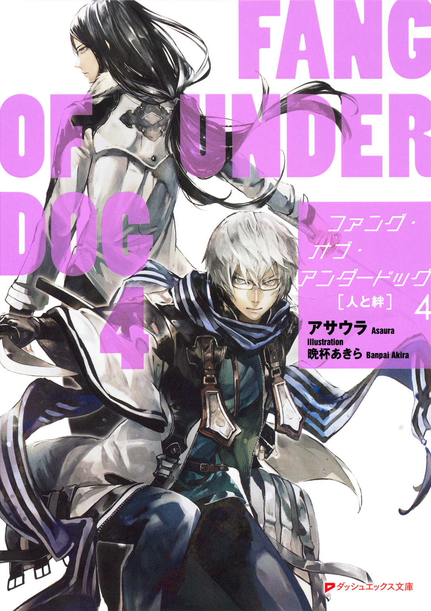
この本は縦書きでレイアウトされています。
また、ご覧になる機種により、表示の差が認められることがあります。
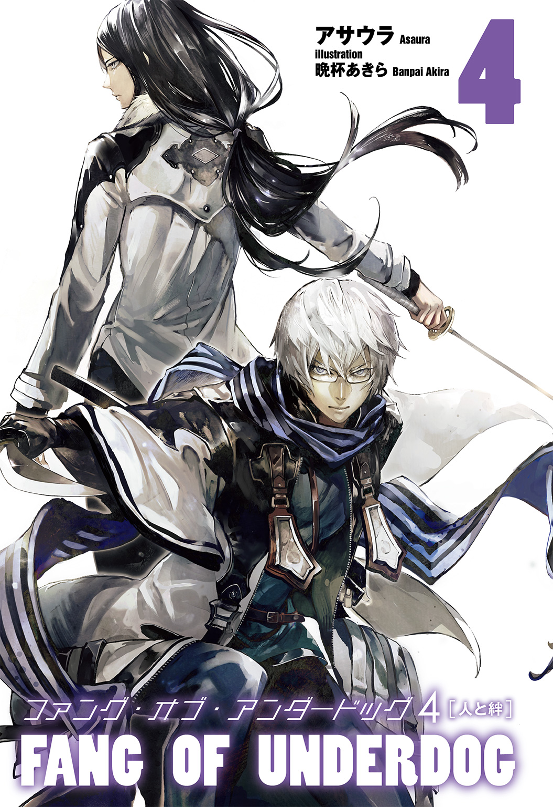
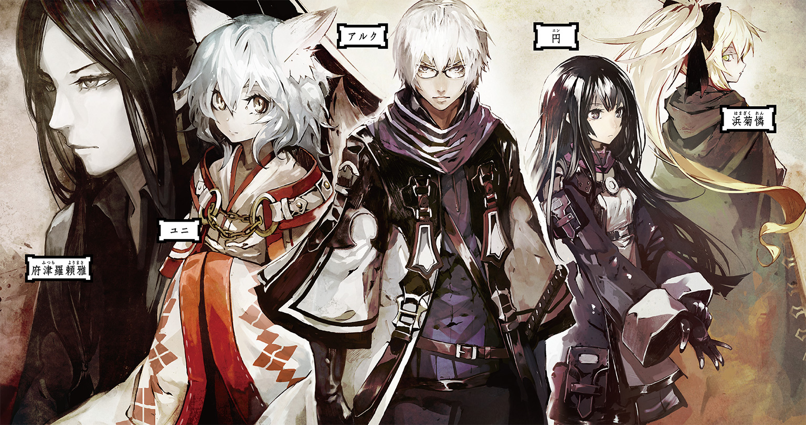
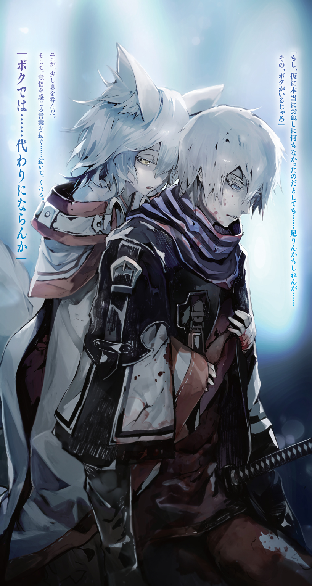
ダッシュエックス文庫DIGITAL
ファング・オブ・アンダードッグ ４
人と絆
アサウラ
ファング・オブ・アンダードッグ
人物紹介＆用語解説
アルク
陣士。〈炎〉〈土〉〈波〉の陣を有する。元々は剣豪一族の府津羅の次男坊であったが、故郷を捨てて陣士となった。愛刀は兄から贈られた通称『ナマクラ』。
ユニ
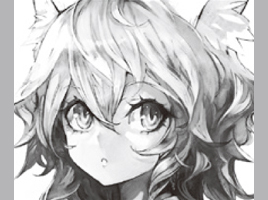
陣士。アルクの相方。〈陣〉〈封〉の陣、そして大きな狐耳と尻尾を持つ。故郷から奪われた〈鵺〉の陣を追う使命を帯びている。甘味が好物。
府津羅頼政
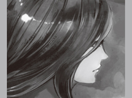
アルクの兄。最強の剣士と謳われる府津羅流現宗主。既婚。愛刀は『白光鳳』。
憐
陣士。本名は浜菊憐。アルクの同期であり、その陣能力の高さは群を抜いており、天変地異と見紛う程の現象を起こせる。相棒は白妙菊。
罌粟

総本山のトップであり、最古にして最強の陣士。永遠の命を有する通称「眠り姫」。
イリス
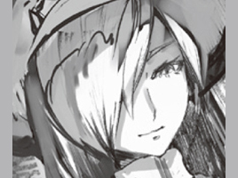
陣士。罌粟の相方にして実質的に総本山のナンバー２。罌粟のためにその身の全てを捧げている。
円
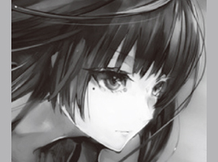
烏。様々な技能を習得しており、その一つとして府津羅流を学ぶため頼雅に師事し、アルクと接触した。双子の弟、斛がいる。
斛
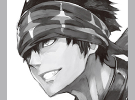
烏。やや短めの片刃直刀の剣と体術を合わせた技を得意とする。双子の姉、円がいる。
【陣】
いにしえの日本人が編み出した技術。体に薬物及び漢字の焼き印を入れることによって、その漢字一文字につき一文字の能力を有することができるのだが、それには生まれ持った適性が必要となる。〈何を〉〈どのように〉〈どうするのか〉というように、複数の陣を組み合わせて使用するのが基本。世界が滅んだ大戦争のきっかけになったとも言われ、そのあまりの力により「神々の力」「悪魔の力」といった呼ばれ方をする場合もある。
【総本山】
陣士のみが暮らす世界唯一のエリアで、最古にして最強の陣士・罌粟が支配する土地。陣士になるための試験もここで行われ、合格者はそのまま総本山に住まうこととなる。
【烏】
反陣士組織。人に扱いきれぬ陣をこの世から消し去り、平和をもたらさんとしている。陣士は発見次第、殺害する方針を採るなど、極めて過激な武闘派である。
【鵺】
かつての大戦時に作り出された生物兵器であり、その大きさ、形は様々。本来自然界に存在しないそれら化け物の類をまとめてそう呼ぶ。人工的に作られたものだが、現在生きているものは基本的に、自然繁殖してしまったもの。
●プロローグ『烏の目』
風が鈍く鳴っていた。大気が震えているようだ。
気が重くなる。手にした地図はもはや、道を確かめるものではなく、陣士の凄まじさを証明するためのものでしかない。
しんしんと雪が降り続く中、烏である円と斛の双子の姉弟は、地図にない川に沿うようにして進み続けていた。できるだけ痕跡を残さぬよう木々の上を進んだが、目的地が近くなるにつれてそれも難しくなっていった。
巨大なクレーターが無数にあるのだ。それは木々を消失させ、地表をも激しく抉っている。迂回しようにも強烈な爆風が吹き荒れたらしく、周辺の木々は軒並み吹き飛ばされているという状態だ。それが至るところ、無数にある。
一般人に見える変装はしていたものの、地表を歩くのはやはり勇気がいる行動だった。
いきなり足跡が現れればおかしく思われるため、安全が確認できた森の中をしばらく歩き回ってから、姉弟はクレーターの縁に沿うようにして進んだ。
......何だ、ありゃ？ 思わず胸の内で斛は呟いた。
辺り一帯は雪が積もって白色に染まっていたが、地表より突き出ていたその巨大岩は黒く無骨な色合いをしており、目を引いた。しかしながらそれ以上に......何故か表面が光っている。
先程顔を出した朝日を反射しているようだが......岩が？
「このおぞましさが陣士の戦いか。......烏が暗殺に走らなきゃならねぇ理由がよく分かるぜ」
斛はその岩の側面――黒髪の生意気そうな一七の男と、長い黒髪の女を映していたそれを、撫でる。
岩であることは間違いないのだが、その一側面だけが、ガラスのように真っ平らにツルリとしており、斛と円の姿を映しているのだ。
全てを溶かすほどの超高温を用いれば、このような状態になるというのは知識としては知っていたが......それが人の手で、しかも古代ではなく一カ月ほど前に行われた戦闘で出来たという事実に、斛は寒さとは違う震えを覚えた。
天変地異をも起こせる陣士というのは知識としては知っていても、やはりこうして実際にその痕跡を目の当たりにすると、違うものである。
また、二人は進んだ。ようやく目的地の全体像が見えてくる。
世界中の陣士が集う、彼らの安息の地である総本山。山の周囲をグルリと二〇メートルの壁に囲まれ、また、その入り口の前には商業区と呼ばれる世界一金の動く街があった。しかし、今は......獣の犬歯のような不格好で、不自然な形の山があるだけだ。
一カ月ほど前、数百の巨大な鵺の群れと、陣能力を有した謎の組織......それらが突如として総本山を襲った。それによって――どちらの陣営によるものかはわからないが――世界を焼き尽くすかのような光と共に山の三分の一が消し飛んだ......らしい。総本山の監視に当たっていた烏からの報告ではそうなっていたが、言葉の綾だと斛は思っていた。けれど案外的を射ていたものなのだというのが、この光景を見れば察することができた。
「こんな戦闘やらかして......生きてんのかよ、アイツら」
三カ月前、円と斛はある総本山の陣士達を追い、そこで『リベルテン』なる組織の陣士と戦った。そこで出会った陣士達も強かったが......この惨状を造り上げた者達はあらゆる意味において能力の規模が違う。
総本山に向かう二人を邪魔するように存在する、直径一キロ近く、深さは一〇〇メートルはあろうかというクレーターもそうだが、今まで沿って歩いてきた海にまで続く溝――地図にない川を見ても、そう思う。
これはもう、人外の戦いだった。
横目で姉を見やれば、彼女は無表情のままに地図を広げながら、ひたすらに進み続ける。
「この先の巨木に、烏の観測ポイントがある......はずだけど、ダメそう」
そう言いながらも円は歩みを止めずに、一際大きな巨木、そしてそれに寄りかかるようにして雪を積もらせている巨大なナメクジにも似た鵺へと向かっていった。
巨木は傾き、大地に張った根が如何に強靭かを見る者に教えてくれるのだが......姉が言うように、そこに烏の仲間が今もいて、総本山を見張っているとは思えなかった。
そもそも、辺り一帯が開けているが、本来であれば今斛達が歩いている場所は野生の獣が跋扈する深い森であったはずなのだ。だが、それらは無数のクレーターを生み出した陣能力の爆風で吹き飛び、そして恐らく尋常ならざる温度の炎によって燃え果てたのだろう。そう考えるに今目指している巨木は鵺の体の陰になっていたから助かったのかもしれない。
姉弟は背に翼でも生えているかのようにして巨木を昇り、半ば程で幹にナイフを突き立てた。
何らかの理由から持ち場を離れざるを得ない場合、幹に薄く切り込みを作り、そこメモを差し込んで、粘土で蓋をすることになっている。時が経てばいずれ木に取り込まれる紙なので彼らを傷めることはないし、雨風、そして多少の火事でも持ち堪えてくれる伝言方法だった。
メモによれば、総本山の近くにいた烏達は総員で数キロ先の森へと移っているようだ。
木々の上から眺めてみれば、そちらの方角の被害は少ない。これなら......。
「しっかし、すげぇ光景だぜ。世界の終わりみたいだ」
巨木の上から見える総本山は、まるで遺跡のようだった。古代から立ち続けていたビル群の半数以上は倒壊し、山は抉れ、そして何より......底が見えぬほどの巨大な穴が空いている。ただ、山を囲んでいた二〇メートルの壁はすでに新しいものへと修復されていた。人の手では間に合わない......恐らく、陣能力によるものだろう。
斛は腰に直刀を帯びており、これと体術を合わせた戦術を得意としていたが、真っ正面から彼らと戦うのでは相手にならないだろう。
烏である。烏は、暗殺を基本とするべき存在。だから正面切ってやり合う必要はない。それはわかるのだが......。
足下が、揺れた。地面、違う、巨木が揺れている。寄りかかっていたナメクジ状の鵺がまだ、生きているのだ。斛達に反応したのかもしれない。
「行くよ、斛。少し、急ぐ」
円が巨木より飛び下り、斛もまたそれに続く。空中で円がクルリと回転すると、斛へ......否、鵺に向かってキスを投げるように唇に這わせた手を振る。
朝日に煌めく一筋の光が斛の脇を抜け、動き出した鵺へと向かった。そして、一瞬の後、巨大なナメクジ状の鵺は、大量の鮮血を迸らせながら、輪切りとなって大地に引かれていった。
姉の袖口より伸びる煌めきは、振動鉄糸。それは姉の唇が奏でる耳に聞こえぬ音を得ることで激しく震え、全てを斬り裂く。
この姉ならば、何とか陣士にも対抗できるだろうか。そんなことを考えながら、斛は着地の衝撃を感じた。
総本山より数キロ離れた場所の森は、異様な雰囲気で満ちていた。冬だというのに生き物の気配が妙に濃く、その全てが怯え、震えている。
前の戦いで総本山周辺の森より命からがら逃げてきた生き物達が肩身を寄せ合い、冬を越そうとしている......そんなところか。
「明らかにおかしな状況だった。......陣士共が一斉に商業区の人間を避難させ始めたのを見計らったように、上からの......そう、大旦那様から命令があったんだ。避難する商業区の者達に随伴し、彼らを守れ。当面の間、陣士には一切手を出すな、と。......それから幾ばくもなく、あの戦いが始まったんだ」
木々の枝の上、『鳥の巣』と呼ばれる簡易テントの中で、中年の烏は白い息と共に、当時のことを教えてくれた。
「......他の者達は？ ここにはアンタだけが？」
「生き残った者達は避難したよ。だが、大半は襲ってきた鵺にやられた。自分達だけなら逃げれば逃げられたが、命令があった。......誰かを守りながら戦うのを烏は得意としない......特に俺達はただの観測任務を主としている。わかるだろ。お前達ほどに優秀じゃない。......あぁ、陣士にやられた者は、多分、いない。誰も彼もが総本山へ一直線さ」
そういえば戦闘が始まる前に総本山の中からも爆炎が上がってたな、と男は遠い目をして言った。内応があったのかもしれない。
「話はわかった。聞かせてくれて感謝する。今のは上に報告しておく」
「あと、一つだけ追加させてくれ。一番大きな光が生まれ、山の大半が吹っ飛んだ後......俺は陣士共が鵺と揉み合いながら戦っている中に一人で飛び込んだんだ。大きな穴だったよ。辺りの空気を焼くほどの熱波を放ちながら、大地がドロドロに溶けていた」
「あぁ、あの底が見えないぐらいの......」
「底は、ある。遠くからじゃわからないが、山の上の方から見下ろせば、わかる。......一〇〇か二〇〇メートルほど下に、金属の底があった。それも鉄板を地中深くに敷き詰めたような、人工物が......。総本山の地下には、何かがある。恐らく古代の遺跡だろうが、規模は想像もつかない。俺が足と引き替えに手に入れた情報だ、忘れずに頼む」
「わかった。......手を、貸そうか？」
斛は、微笑んで言ってやった。
無茶な調査をしたせいで両足を痛め、仲間の避難についていけなかった彼はここで一カ月耐え凌いだのだ。冬の気温にも、鵺にも負けず、両足を腐らせ、そして凍らせながらも、たった一人で......大したものだった。
敬意を込めて、頷く彼に斛は直刀を走らせ、その首を落としてテントを出た。埋葬してやりたかったが、雪と凍った地面を掘り返す時間はさすがにない。鳥の巣をきちんと閉じておけば野生動物に啄まれることもないだろう。
春には誰かが埋めに来るよう、報告書に付け加えることにした。
「斛、何か、大きなものが動いている」
テントに入らずに木の上から遠方を観察していた姉が、彼方へ向けて指をさしていた。
見えたのは巨大な車輪のような、コイン状の何か。それがゆっくりと転がりながら、総本山へと向かっていた。
一見すると止まっているようでもあったが、距離が遠いせいだろう。数十キロ先か。しっかり見つめて目を凝らせば、歩くような速度ではあるが、ゆっくりと動いているのがわかった。
耳に聞こえ続けていた妙な低音は、てっきり削られた山や、破壊された大地に風が当たって鳴っているのかと思ったが、どうやらあれが原因だったようだ。
巨大な何かが蠢いている、その振動音。
姉弟は木々を飛び下り、追跡者への警戒を捨てると雪面を素早く走り、その動く巨大な何かへと向かった。
日が暮れた頃になってようやくその巨大な車輪が何であるのかが、わかった。
土だ。巨大な土の車輪が、ゆっくりと地面を転がっているのだ。当初は生き残った自然を壊さぬようにと荒れ地と化した箇所を選んで進んでいるのかと思ったが、それは単にクレーターで凸凹になった場所を選びつつ、総本山を目指しているようだ。
車輪が通った後の大地は、真っ平らに修復され、車輪はその分、小さくなっていく。
つまり......あれは、整地作業なのだろう。恐らくどこぞから土を大量にかき集め、それを陣能力で運びつつ、文字通りの穴埋めをしている......そんなところなのだ。
「やっぱスゲェな。本物の陣士ってのは......。規模が違う」
「でも、勝てる。......殺せる。あれなら」
木々の上から単眼鏡を覗きながら姉がそんなことを言う。彼女の視線を斛もまた単眼鏡で追うと、そこには巨大車輪のすぐ下を歩む者の姿が見えた。
大きなリボンを付け、生地の厚いマントを揺らして歩いている少女と、その後ろにコートを羽織っているものの、メイドらしき格好をした女。背にリュック、手には大薙刀という妙な取り合わせだった。
「陣能力をあの車輪を転がす方に使っているのなら、奇襲すれば対応は必ず遅れる」
「姉ちゃん、ヤる気か？」
「まさか。......陣士暗殺の任務は帯びてないもの」
そんな会話をしながらも観察していると、メイドは斛の視線に気づいたように素早く顔を向けてくる。やけに前髪の長い女だった。
しかし彼女らとは一キロ近い距離を開けているため、勘づかれることはないだろう。では、彼女は何に反応したのか。
斛がそんな疑問を抱いていると、突如としてメイドらを取り囲む地面から蛇のような鵺が八体、飛び出した。しかし、マントの少女は平然と歩み続け、メイドは大薙刀を軽く振って二体を斬り殺し、残りは空中で青白い光の残滓が散るだけの、目に見えぬ攻撃によって屠ってみせたのだった。飛び散った鵺達の傷口は、まるで巨大な獣の爪が抉ったかのようだ。
恐らく、〈気〉〈爪〉あたりの組み合わせだろうが、六体を一瞬で、しかも発動させたのがメイドだとすれば、大薙刀を扱いながらなので、なかなかに腕のいい陣士だと言えた。
「ヤるにしても簡単じゃなさそうだぜ、ありゃ。姉ちゃんの振動鉄糸で一気に行くしかねぇだろうな」
金髪リボンが大規模な陣を扱い、それをくぐり抜けてきた奴をメイドが屠る......そんな組み合わせなのだろう。力が強くなればなるほど細かい能力の発動が苦手になるという話もあるので、悪くない構成だった。
「だから、殺したってしょうがない。......彼じゃないなら、興味もない。......ん？」
突発的な地震。それもかなり強く、同時にあまり感じたことがない妙な揺れ方。
斛と円はそれぞれ体に緊張を走らせ、足下――木の枝より十数メートル下である雪面を見やった。白い地面が至るところで迫り上がり、下から二メートル近い人型の鵺が数十体現れ、車輪の方へと一斉に走り出した。
「生き残りどもがこんなに......ってか、この地響きはなんなんだ!?」
数十体の鵺が大地の下に潜んでいたのはわかる。だが、彼らが走り抜けていった後も、妙な地響きと揺れが続いている。
斛は原因を確かめるために木の枝から飛び下り、雪面に足を埋めた。その瞬間に、わかった。原因は直下。辺り一帯が、蠢いている。
激しい揺れが襲い、木々に積もっていた雪が斛の上へと大量に落ちてきたので、たまらず斛は腕で頭を包むようにして守って堪えた。
「斛、鵺！」
「んなもん、わかってる！ 生き残りがたんまりだ！」
「そうじゃない！ ここが、鵺！」
なに？ という疑問と共に斛が姉を見上げれば、彼女は木から木へと飛びながら両袖より振動鉄糸を伸ばしているようだった。それで、森の枝はもちろん、幹ごとを切断する。すると、ドス黒い鮮血が吹き出した。
耳を劈く鵺の雄叫びが大気を震わせ、斛が足を着けていた地面が――否、巨大な鵺の背が激しく揺れる。
鵺だ。直径百数十メートルに及ぶ巨大な、カメムシのような鵺。それが背に木々のような形のトゲを持ち、森に擬態して、潜んでいたのだ。
巨大なカメムシ状の鵺は背の傷を無視し、無数の足で大地より体を起こすと、一気に車輪、そして、それを転がしているであろう二人の陣士達の下へと走り出す。
「斛、急いで離脱。このままだと用もないのに陣士の所まで行っちゃう」
「わかっ......なに!?」
斛もまた雪面から跳び上がって、木々――に擬装した鵺の背のトゲ――を渡って、本物の大地へと飛び下りたかった。だが、跳ぼうと思って足に力を入れた瞬間、雪面の下より、大量の触手が出てきて斛の足を摑む。
直刀を抜いて、それを斬り飛ばして自由を得るも、トゲの上に行くためには一度踏ん張る必要がある。しかし、その踏ん張る瞬間にすぐさままた摑まれるのだ。
触手を十数、斬り飛ばした時点で、このままではダメだと斛にはわかった。
「姉ちゃん！」
円の振動鉄糸が斛を囲むようにして荒れ狂った。それよって鮮血の吹き出すトゲが倒れ、雪面を叩く。斛は今一度己の足を摑む触手を斬り飛ばし、身を転がすようにして倒れたトゲの上に逃げる。そこならさすがに触手が生えてくることもない。斛はすぐさま倒れたトゲから、まだ切り倒されていないトゲへと飛び移り、カメムシの背より飛び下りた。
カメムシの背から地面へは高さ一〇メートル以上もあったが、雪面である。しっかりとした受け身を取って、無事脱出した。
だが、辺りはすでに森ではない。開けた場所に出てしまっている。
陣士達に見つかる前に離脱しなくては......。
斛は車輪を転がしていた二人の少女達を見やったが、まだ距離は五、六〇〇メートルはある。勘づかれてはいないはずだ。何よりカメムシの相手をする必要があるから、その間に......。
衝撃。空気、そして地面が揺れた。思わず膝と手をついた斛が見たのは、全速力で走っていたカメムシの鼻先に、太い土の柱が大地より生まれ、それにぶつかって転倒する光景だった。
「デカ物の処理はあたしがやる！ あなた達は雑魚を受け持ちなさい！ それぐらいできるわよね、ん!?」
巨大な土の車輪を転がしていた少女が声を張り上げた。その彼女の周りに青白い光が一瞬ボンヤリと浮き上がったかと思えば、車輪の側面から突如としてランスのようなトゲが飛び出し、転倒して数十本の足を空中に向けてワシャシャシャと動かしていたカメムシを串刺しにする。
猛烈な量の血飛沫が空高く噴き上がり、辺り一帯に血の雨が降った。その中を斛はなおも森に向かって走るのだが......その森から、さらに無数の鵺が這い出てきていた。大道芸人がトカゲのマネでもするかのように、毛のない白い肌の人間達が太い尻尾を揺らしながら雪面を這い蹲り、猛烈な勢いで陣士、そして斛へと向かってくる。
斛は直刀を握り直し、それら数十体の中へと飛び込んだ。案の定、陣士に向かっていたのが、その濁った目で斛を捉えればどいつもこいつも狙いを変えてくる。
それらの手足を、そして首を、斛は舞うようにして斬り飛ばしていく。しかし体術を合わせた剣術を得意とする斛にとって、雪上での戦いはとてもではないが得意とはいえない。
何より、斛の技は人を殺すことに特化しているのだ。鵺を相手にするべきものではない。扱いやすい短めの直刀では、相当にうまく斬らねば大きめのトカゲ鵺相手では致命傷に届かない。
――まだ来るってのか！
思わず歯嚙みしながら、斛は森を見た。そこからは他のトカゲ鵺よりもはるかに大きい、四、五メートルはあろうかという、巨大トカゲの鵺がいた。そいつには頭がなく、代わりに太い首の先には取って付けたような老人の上半身が生えており、その両手が陣の発動を示すように赤く光っていた。
陣士と鵺がくっついているのか、それとも取り込まれたのか......。斛はわけがわからないものの、そいつが真っ直ぐに向かってくる以上、相手をするしかないと覚悟を決めた。
だが、その必要はなかった。走り来る途中で、雪面の下より突き出された土の槍が鵺の胴体を貫き、その場に縫い止めたのだ。
鮮血が吹き出し、辺り一帯に轟く悲鳴が老人から飛び出る。それに引き寄せられるように、周辺を走っていたトカゲ鵺達は方向転換し、その巨大な鵺へと集まって、突き出た槍に齧りついた。親玉らしきそいつを脱出させようというのか。だが、槍がへし折れる前に、どこかで小瓶が割れるような音が連続すると、突如として彼らを猛烈な炎が包み込んだのだった。
数十体に及ぶトカゲ達の絶叫が響く中、巨大トカゲ鵺の上、老人の脇に、いつの間にか人影があるのを斛は見つけ......思わず、足を止めた。
その人影が持つ、月光と雪明かり、そして炎の赤い光を浴びて煌めく刀身には見覚えがあった。......ナマクラだ。
それが奔った時、トカゲの首から生えていた老人の首が飛ぶ。
軽やかに、呆気なく、見事なまでに。
数十体もの鵺を焼き殺す炎に照らされるのは、碧いマフラーを風に揺らし、通常の打刀よりも長く太い見事な得物を手にした、眼鏡の青年。
最強の陣士殺しとされた府津羅の出にして、陣士。
かつて、その命を狙うも、リベルテンなる組織と戦うために共闘した相手......そして、姉が捜していた眠り姫の猟犬。
「アルク」
その名を呼んだ時、彼は驚きと共に......微笑んで斛を見たのだった。
どこか切ない。斛にはそんな微笑みに見えた。
●１章『帰路の寄り道』
酷く、懐かしい。燃える鵺達に囲まれながら、そう思った。
実際にはまだ三カ月かそこらだろう。結局、あの後、住民が離散したことで地図から消えたという街、城塞都市ヤリゼイサで共にリベルテンと戦った、敵だ。
斛。一六の若い烏ながら、その持ちうる技術は正面切って陣士とやり合えるほどに、高い。
彼はいつもの濃紺のバンダナや戦闘服を身に着けておらず、ごく普通の旅人のような変装をしていたが、それでも短めの片刃直刀を見た瞬間にそれとわかった。
「久しぶりだ、斛。傷は、もういいのか？」
大型鵺を操っていた老人の体を蹴りつけるようにして、燃える鵺達を飛び越し、驚きの顔をしたまま固まっていた彼の脇へと下りる。
「あ、あぁ。もう全快だ。おかげで......って、おい、アルク、一応オレ達は敵対関係だろうが。なに普通に話しかけてきてんだよ」
「それはそうだけど......いいだろ、別に。もうそういう関係だろ。あ、斛がいるなら円も？」
俺は辺りを見回してみるのだが、それらしき影はない。燃やし損ねた鵺が右往左往しているだけで、あとは巨大カメムシの鮮血で汚れた雪面、そして......総本山より飛び来る影だけである。一人が飛び、もう一人がそれからぶら下がるという姿を見るに......あの二人だろうか。
彼らが来たのなら、もう大丈夫だろう。俺は愛刀のナマクラを鞘に納める。刀身に血が残るような斬り方はしていないので、拭うまでもなかった。
「姉ちゃんはそこらにいると思うがな。それより、なんなんだ、この状況は。そして、あのデッカい車輪みてぇのは」
実際には車輪ではなく、〝Ω〟のような形で、地面を局所的に波立たせて、その山部分をズラすようにして移動させているのだが、説明が面倒だったのと......遣い手である浜菊憐に無断で陣の内容を語ると怒られそうなので、そこは伏せておくことにした。
「聞いてるだろ。リベルテンが来た。それに対抗した結果......らしい。俺は、空を飛んでた巨大鵺の方を担当していたから直接は見ていない」
一カ月ほど前、この地で大量の鵺、そして総本山に所属していない陣士、さらには総本山に所属していながらリベルテン側に寝返っていた陣士による内外からの襲撃があった。
何百という鵺だけでもかなりのものだが、陣士が群れを成して襲ってきたとなれば......この辺りの惨状も致し方ないだろう。誰がどんな陣を使ったのかわからないが――巨大なクレーターや海にまで続く巨大な溝などは罌粟様の相方である、イリスがとてつもない数の陣を重ね、大出力でぶっ放したらしいが――まともにやり合うよりも、先手必勝で有無を言わさずに消し飛ばすというのは理にかなったやりかたといえた。ある意味において、烏が暗殺という手段で陣士を殺すのと同じである。陣士といえど、陣の発動前はただの人なのだ。
「そしてあの巨大な土の塊は、クレーターの整地のためだよ。俺達はそれをやってる陣士の護衛。......そっちは？」
「オレのリハビリがてら、陣士の状況調査さ。わかると思うが、大した仕事じゃねぇよ。烏に知れている名のある陣士があの戦いで生き残っているかどうか調べるってのがメインだな」
総本山より飛び来た陣士の一人がいまだ縫い止められたまま踠いているカメムシの上へと飛び下りると、青白い光と共にその巨体の一部を爆散させる。もう一人は、雪面すれすれを飛びながら鵺の残党をやはり青白い光と共に斬り裂いていく。坊主頭の男と顎髭の男であった。
「本当はお前を見つけて一戦かましたかったんだが......」
「やろうか、斛？」
「バカ言え。もうそんな空気じゃねぇだろ。......ユニは別行動中か？」
「一緒だよ。ただ、ユニは鵺相手だと戦闘時にやれることは少ないし、雪道を歩かせるのも今のアイツにはしんどいだろうから。ホラ、車輪の上に」
俺が車輪の上を指させば......その大きな耳で会話を捉えられたのか、クセッ毛に大きな狐耳を持つ少女のような少年が手を、そして大きな尻尾を振っているのがかろうじて見える。
「まぁお前らが生き残っているんならそれでいいわ。そのうちに姉ちゃんと顔を出す」
――次は多分、殺すから。
それが円との最後の会話だった。彼女と会う時はやはり殺し合いになるのだろうか。
そんなことを懐かしむように考えていると、斛は踵を返して森へと駆けていく。雪の上だというのにやたらと速く、その動きに勘づいた顎髭が敵だと思ったのか、空中から襲いかかる。しかし〈斬〉の陣が生み出した無数の青白い刃を斛は巧みにかわし、さらには飛刀を顎髭に放って威嚇し、その隙に見事、森へと逃げ果せてみせたのだった。
「で？ 半日前ぐらいに雪上で喋っていたのは誰？」
一〇〇キロほど離れた場所にあった荒れた山よりズラして運んできた土砂を、轟音と共に総本山内に空いた大穴に注ぎ込みながら、浜菊憐はそんなことを訊いてきた。
総本山はすでに城壁が再建されているため、総本山前の荒れ地に〝Ω〟を設置すると、そこからは憐の神業である。土の〝Ω〟を昇竜が如くに空へと伸びる柱のように変形させると、それでブリッジを作るようにして、城壁を跨いで総本山の大穴へと飛び込ませたのだ。
その光景を、俺が〈土〉の陣で作った五〇メートルほどの高さである土の柱の上から、苦もなくやり遂げているのを見るに......本当に、彼女とは大きな差を付けられてしまったようだ。
大きなリボンで綺麗な金髪を後ろにくくり、古の魔術師のようなマントを羽織るも、その下は相変わらずどこぞの町娘のように短いスカート......それらを土砂が巻き起こす風に揺らしながら、彼女は横目で俺を見ていた。
どこか訝しげな視線。俺を裏切り者とでも疑っているのだろうか。
「アルクは別に懐柔されてはおらんよ。何よりあの男は烏じゃ。リベルテンの陣士を倒すため、以前共闘もしておる。そういえばあやつがおったということは姉の円もおるはずじゃが、見当たらんかったの？」
ユニが助け船を出してくれるが、それはそれで憐の疑いが強くなったようだ。
無理もない。烏は陣士にとって天敵だ。俺の背後に立っている憐、その相方である白妙菊が、大薙刀を握り直して変なプレッシャーをかけてくるのも......まぁ、わからないでもない。
「いたら耳搔きするって約束、果たせるんだけどな」
でも、同時に殺しに来るかもしれない。どうなるのだろう。わからない。でも少し楽しみな気分があったりもする。
「烏の女に耳搔き......？ は？ なにそれ」
「アルクはの、耳搔きで女をたらし込むテクニシャンなのじゃよ。......のぅ？」
何やら皮肉げなユニの言葉に、俺は顔をしかめた。憐もしかめた。こっちはわけがわからなかったからだろう。
「オーライオーライ......はい、ストップ!! 穴、綺麗に埋まりました！ 一週間の長旅、お疲れ様でした！」
城壁の上で、古代の土木工事で用いられていたという黄色いヘルメットに光る棒を振っている、妙にコミカルな格好のミウラがメガホンで声を張り上げた。
「あ、あと、その塔の足下にうちの部長がいるので、気遣ってあげてください！」
言われて下を見れば、巨大なヌイグルミのようになるまで厚着をしているアリアドネが何やら書類を持った手を振っていた。彼女の頭上に土塊が落ちないように注意しながら土の柱を崩して、俺達は地上へ降り立つ。
「はい、お疲れ様。憐ちゃん菊ちゃんのペアは任務完了ってことでこの書類にサインを。アルク君とユニ君はそれに加えて......こっちの休暇申請ね」
「は？ 休暇？ この状況でアルク達、本気で言ってんの？」
「憐ちゃん、やめたげて。二人の休暇はアタシの裁量で許可したの。里帰りだよね？ ......いろいろあって疲れてるでしょうから、ゆっくり英気を養いつつ、イケメンお兄さんを滅茶苦茶に抱いたり抱かれたりしてくるといいわよ!! レポートは詳細なものを要きゅっ――ガッ!!」
アリアドネの後頭部にミウラが振っていたあの光る棒が飛来して直撃した。「当たりましたー？」というミウラの遠い声からするに陣能力ではなさそうだが、よく当てたものである。
「と、ともかく、気をつけて行ってくるように。......ソラ君の報告は知ってる。心身共に、きちんと癒してきなさい」
その名に、俺は思わず俯きつつ苦笑いをしてしまった。憐も一部始終を見ている――というより、ソラを埋葬してくれたのが憐だ――ので、彼女は、うっ、と呻くようにして口を噤んだ。
「あと、これお土産。道中で開けるも良し、お兄さんと一緒にでも良しだから」
アリアドネがどこぞから手提げカバンを取り出すと、ユニに渡した。
「なんじゃこれ？」
「うんとね、アタシのオススメ衆道本一〇冊と、『プロが勧める初めての同性体験!! 迷うな、まずぶっ込め!! 全てはそこからだ!!』ってのと、あとは――」
ユニが体の全ての力を使って、カバンを遥か彼方へとぶん投げる。「貴重本の数々が!!」とアリアドネが絶叫しつつ、棒を投げられた犬が如くに雪原へと走っていった。
「ふぅ。......何故あんな奴が生き残ったのかの」
「どうせ地下で籠もって読書してたんだろ。そもそもあの地下書庫、本来は古代のシェルターだったそうじゃないか」
悪運の強いヤツじゃ、とボヤくユニと共にアリアドネを眺めていると、憐が俺の名を呼んだ。
「......どうして休養なんか取るのよ。アンタ達にだってできる仕事は山ほどあるのに。っていうか、何のためにこの一週間、あたしがアンタを調教してやったと思ってるの？ 少しでもまともに使えるようにと思って......」
「調教って......動物扱いなのか、俺。......うんまぁ、〈土〉の陣の使い方に関しては本当勉強になったし、総本山が大変だってのもわかってる。ただ......兄さんに、会いたくなった......じゃ、ダメかな。一応、建前として愛刀をいい加減きちんとした研ぎ師に出さないとそろそろヤバそうだからってのもあるんだけど」
実際、白妙に名付けられた愛刀ナマクラは、本当にナマクラになりかかっている。故郷で兄から渡されたこの刀は、これまで数え切れないだけの鵺と、そして人間を斬りに斬ってきた。俺の手で研いだりもしているのだが、さすがに誤魔化しきれない鈍さが染みついてきている。
きちんとした研ぎ師に出さなければこれからさらに鈍っていくだろうし、そうなれば当然、戦闘力は落ちる。刀と俺の寿命も短くなることだろう。
なので、理由としては真っ当だし、さらに言えばもう一件、気になる案件があって、それのためにってのもあるのだけど......まぁ、やっぱり兄に会いたくなった、というのが一番である。
ソラを失ってから......何となく、会いたくなった。別に何を言うでもなく、何か聞きたいことがあるわけでもない。自分でも不思議なほど......無性に、会いたいと、そう思ったのだ。
ちなみに素直に告げたら、ユニは、何も聞かずに了承してくれた。......というより、彼の場合、一刻とて総本山にはいたくないのだろう。
本来は安息の地であるはずのあそこは、今は、どうしても彼にとって少々うざったいのだ。
本当なら彼との約束のためにも、今はリベルテンを追撃するべき時だというのはわかっているのだけれど......。
「そう。......まぁいいわ。何にしてもやることはたくさんあるんだから、早く戻ってきなさい。いいわね？ ん？」
俺が頷くのを見届けてから、憐と白妙は踵を返し、総本山のゲートへと向かっていった。
「何じゃ、あやつ。あんな言い方せんでも良かろうにの」
「いいじゃないか。戻ってこいって言われるのって......何か、いい」
いらない、いられない......そう思われ、思ってばかりいた俺には、憐の言葉は少し甘い。
「求められることは、嬉しいことだよ。......役立たずでも、出来損ないでも、負け犬でも、必要とされる人や場所があるって、それは一つの救いだと思う」
かつて、世間から府津羅の出来損ないと揶揄され、兄にはため息ばかりを吐かせ続けた俺からすると......やっぱり、嬉しいのだ。
あの時の俺は、世界中の誰からも必要とされず、世界のどこにも居場所がないものだとばかり思っていた。だからこそ、野生動物と鵺だけが住む道場の裏山は居心地が良かった。
そして、価値なき出来損ないであることを辞めるために、陣士としての道を歩んだのだ。
思い出してみればさほどの時は経ていない。けれど、遠くまで来た気がするのは何故だろう。
「ふむ？ そういうものかの。......今あそこで急を要して求められておるようじゃが、あれも救いかの？」
ユニの大きな黄金の瞳が見つめる先にあるのは......カバンを抱いて雪原を全力疾走しているアリアドネ。その背後には二メートル級の鵺が三匹、大きな口を開けて迫っていた。
「た、助けてぇ!! 本だけ、せめて本だけでも!! 後世の同志達のために、本だけでもぉ!! うおぉぉおぉああぁあぁあぁあ!!」
「......ま、求められるだけ、ありがたいさ」
俺は苦笑しながらナマクラに手をかけた。
１
ガタゴト揺れる中、地図を膝の上に広げて見れば、道程は一〇日を経て、三分の二を過ぎたのだと知れた。
「ふむ、これだけ総本山から離れれば、もう邪魔は入らんじゃろう。......ふぅ、ようやく落ち着いて旅ができるというものじゃ」
乗り合い馬車の片隅で、ユニは椅子に座ったまま大きく伸びをする。
二頭立ての大型幌馬車ではあったが、当然ながら寒さを防げるものではないため、彼の息は白い靄となった。
「そこまで毛嫌いしないでもいいだろう。悪気があるわけじゃないんだ」
「悪気の有無は関係ない、小うるさいのじゃよ。相変わらずボクを邪魔に思っておるようだしの。......そういえば、結局、斛達も来んかったの？」
総本山を離れたらすぐに来るのかとも思ったのだけれど、結局あの二人が今一度俺達の前に立つことはなかった。
さすがに仕事が終わるなり、総本山の中にも入らず、着の身着のまま――とはいえ旅から戻ったばかりなので防寒着は着ていたし、金も大量にあったのだけれど――旅に出たせいかもしれない。俺達の行動が迅速過ぎて捕捉しきれなかったか......いや、それはさすがに烏をバカにし過ぎか。とはいえ憐達と別れた足でそのまま旅に出て、夜通し走る長距離の乗り合い馬車を二台乗り継いだので、人の足で追ってくるのは相当に辛いだろう。
何故これだけ慌ただしい行動になったかといえば......やっぱり、ユニが総本山で過ごすのを嫌ったせいだ。ヘタをすると見つかり、ついて来ると言い出しかねない。
だからユニが急いだのもわからないでもないのだけれど......ちょっと、苦笑してしまう。
それを見られるとまた「なんじゃ、おぬしはアレなんぞと一緒がいいのか」とユニがまた不機嫌になりかねないので、俺は顔を隠すようにして席を立ち、ギュウギュウ詰めの客達の隙間を渡り、御者台へと出る。
着膨れして団子のようになっている御者の脇から外を見れば......灰色の空に、白銀の道、そして地上と空を繫ぐ木々。その向こうにはかすかに山も見え、俺は手元の地図と照らし合わせ、正確な現在位置を導き出す。
「......妙なことを訊くようですが、ここいらで停まったりってします？」
「あー、確かにこの辺にゃ、停留所があったよ。でも今はほとんど停まらんねぇ。たまにいる降りたいって人や、乗ろうと待ってる人がいりゃ停まりもするが......まずまぁ停まらんねぇ。たまに一攫千金を夢見た客を降ろしたり、山に住む人らを街に運んだりするぐらいさ」
やっぱり、何もないのか。それを確かめるのが、兄に会う、そしてナマクラを研ぎに出す......これらに加えて、もう一つの旅の目的だった。
飛翔体撃墜任務の際、主要メンバーだったソバが残した言葉である。
――何もない。今はな。......しかし、十数年ほど昔には、いろいろあった......。
ドトル、という土地。何故かソバは「訪れるのもいいじゃろう」と俺に残し、そして逝った。
単なる老人の勧め......それでも覗いてみようという気になったのは、ユニが以前皮肉ったように、言われたことに従わんとする忠犬の精神が染みついているせいなのかもしれない。
そうかもしれない。けれど、そうじゃないかもしれない。死に果てた男と交わした最後の言葉だし......何より俺自身が行きたいと思ったところが大きかった。
俺の故郷から南西に一〇〇キロほど。山を越えるので実際にはさらに遠い。それでも府津羅が代々世話になっている研ぎ師の村が比較的近いことから、さほど大きな寄り道ではない。
「百年も大昔は金の鉱脈があったとかで大賑わいだったそうだけれど、あっしがこの仕事に就いた時にゃ、掘り尽くされちまってドトルという寂れた村があるだけだった。温かい季節は作物を育てながらわずかに出る砂金をさらい、秋には茸や木の実を取り、冬は狩りをして生計を立てる......そんな貧しい村でしたよ。ただ、それも二十年、いや、そこまでじゃないか。まぁともかくそんぐらいになくなって、鵺が居座ってるそうだ。けど、噂じゃたまに金がまだ出るとか言われてて、夢見る人がたまに降りるんですよ。命知らずな話ですがね」
「ドトルは村の名だったか。......なくなった、とは？」
「さぁてねぇ。あっしもご覧の通り、近くを通り過ぎるだけの仕事ですから。ただ、噂によれば......陣士が現れて、滅茶苦茶にされたとかなんとか」
俺は頭の中で地図を広げてみる。懐に入れている地図ではない。総本山でのみ造られている、烏の拠点があるエリアや、反陣士思想の強いエリア等々の、陣士が行動する上で頭に入れておくべき〝危険地域の分布図〟である。
それを考えると、確かにこの辺りは反陣士思想が強いエリアだったはず。
まぁ、府津羅流のせいもあって俺の故郷周辺は基本どこもそうなのだけれど、一〇〇キロほど離れていることを考えるとそれとは関係なさそうだ。
陣士が現れた一件が切っ掛けで反陣士思想に傾いたのかもしれない。
「おや、こんな話をしていたせいかな。たまのお客さんだ」
御者が巧みに馬を操り、ゆっくりと馬車を停めた。見やれば木々に挟まれた細い道の先から手を上げて近づいてくる男女の姿。大きな鞄を背負った彼らは被っていたフードの上に積もっていた雪を払い、乗車賃を御者に渡した。
「はい、毎度。お客さん方、窮屈だろうが二人追加だ。詰めて詰めて」
元々ギュウギュウ詰めだったのに、さらに二人。さすがに乗るスペースがなくて、皆が荷物を抱えたりして少しでもスペースを作ろうとした。
俺はユニを呼び、視線で意志を交わすと、ここで降りることを御者に告げたのだった。
「え？ そりゃ、お客さんの自由ですが......金はとっくに涸れてますし、雪の季節はさらに無理ってもんだ。何より鵺が......」
訝しがる御者に礼を告げて馬車から降りると、新しい乗客の二人が深々と頭を下げた。
「元々ここに用があったんで気にしないでください。......ドトルという村をご存じですか？」
フードを被った男が、分厚い手袋を着けた手で森の奥を指さした。
「それでしたら道に従うより、この方角に森を突っ切った方が早いです。今日はよく降ってますが、この地域は元々雪が多くはないので、方角さえ見失わなければ半日経たずに行けます。......しかし、ドトルに、何故？」
兄さん。そう口にして、もう一人のフードの女性が兄と呼んだ男の服をつかんだ。
顔を見れば二十歳前後の、赤毛の女性である。
「その刀......。もしかして府津羅流を？」
嗜む程度に。俺はちょっとした冗談のつもりで言った。府津羅流は実戦での使用を前提としているため嗜みで学ぶ者はまずいない。少し知っていれば「まさかぁ」と笑ってくれるはず......と思ったのだけれど......。
兄妹の二人はじっと俺の顔を見ていた。多分、生真面目な兄妹なのだろう......。
息が白くなる冬空の下、さらにスベって余計にお寒い状況になってしまったので、俺は二人に礼を言って、逃げるようにして背を向けた。
笑いを嚙み締めていたユニの耳をむんずと摑んで、喚く彼を引きずっていく。
「なるほど。......慰霊ですか。今更......今頃......」
兄の方の声がかすかに聞こえ、そして......微少な殺気が来た。ほとんど感じぬそれ。
反応してやっても良かったけど、面倒ごとは避けたかったので俺は無視して森の中へと入る。
雪のほとんどは木々が受け止めてくれているようで、足首までしか雪はない。これなら橇がなくても大丈夫だろう。
「妙な兄妹じゃったな」
「きっと剣をやるんだよ。それで府津羅の名を聞いて反応したんだ」
「なんじゃ、有名な府津羅の名が誇らしいか、アルクよ」
ユニはニヤニヤして言うが、もちろん、そういうわけじゃない。府津羅を倒せたら名が売れる......そう考えて道場破りに現れる剣士は跡を絶たなかったのは事実だ。
それより気になったのは、慰霊、今更、今頃......そうあの男が言っていたことだ。もしかしたらドトルで府津羅流を扱う誰かが果てた過去でもあるのだろうか。
そんなことを考えていると、ふと、ユニが首を伸ばして、視線を宙に向けたまま動きを止める。そして、狐耳に被せていたミトンのような革製耳袋を取った。
どうした？ そう問おうとするも、それより先に遠方より馬の嘶きが聞こえてくる。
俺は即座に背負っていた荷と、嵩張る防寒具を放り出すと、馬の嘶きが響いた方向へと走る。背後からユニも続いた。
走り行くに連れて血の臭いが漂いだす。森を抜け、道へ出る。
停車していた馬車の周りを取り囲むのは......鵺だ。短く柔らかそうな手足をし、でっぷりとした体に大きな頭のそれは、どこか人間の赤子のようにも見えたが、二足歩行で大人よりも体格があるとなればおぞましい化け物に他ならない。
それが、四体。しかし元々は五体いたのだろう。肉片がいくつも道に転がり、また白かった馬車の幌は飛び散った血で赤い花柄模様のようになっていた。
「やはりあの兄妹、剣を使うんだな」
あのフードの兄妹がそれぞれ打刀ほどもあるマチェットを赤く染めつつ、鵺に向けて荒い息を吐いていた。
そんな二人の間を抜け、俺は一人鵺へと躍りかかった。
一体の胴への抜き打ちで、肉と骨を断ち、鮮血の尾を引かせながら横薙ぎにすると、その後ろに並ぶように立っていたもう一体へ返す刃で斬りかかる。袈裟斬り。鵺は尻餅をつくとドバッと大量の臓器をこぼして痙攣し、大きな頭をガンガンと近くの木に連続でぶつけ始める。
それを尻目に三体目へと向かう。そいつは口を開き、そこから三本の触手のような舌を俺へと伸ばしてきた。先端が槍のように硬質化しているようだが......関係なかった。
初撃をかわしつつ、斬り上げる。一振りで三本全ての舌を飛ばすと、鵺の大きな眼球へ向けてナマクラを突き刺す。人間であればそこにあるはずの脳を崩すイメージで、剣の切っ先を激しく揺らしながら根元近くまでを押し込み、乱暴に引き抜いた。
倒れる鵺に背を向け、最後の一体へと剣を掲げて跳び上がる。全身の力と体重を込めての振り下ろし。狙うは巨大な頭。唐竹割りのようにして頭蓋を割るも、さすがに首に達すると脊椎にぶつかって刃が止まりかけるが......そこで俺の足が雪面を、大地を捉える。
上から下へと向いていた剣の動きは鵺の首元で直角にその行く先を変える。ナマクラの刃が空の下へ戻ってくると共に、鵺の大きな頭の半分だけが、地面へと落ち、そして数瞬してから体と繫がっている方の頭も中身をこぼしながら雪に沈んだのだった。
俺は肺の中の息を吐き、そして空中で刀を一度振るう。
刀身にわずかに血と脂がこびりついていて、思わず顔をしかめた。
斬れ味が落ちて、骨肉は斬れても血と脂までは斬れていないのだ。
「あー......皆さん、大丈夫でしたか？」
顔にわずかにかかった返り血を拭いつつ、俺は微笑みながら振り返るのだが......御者は腰を抜かして放心し、幌の下は呆然とすると者と嘔吐する者に分かれていた。そしてあの兄妹といえば......マチェットを俺に向け、その切っ先を震わせていた。
「兄さん、兄さん......奴だ、間違いない......奴だよ!!」
俺は困惑しつつ、落ち着けというように彼らに左手を伸ばす。
震える兄妹からは怯えと共に明確な殺意が感じられ、ナマクラを鞘には戻せなかった。
「そんなバカな、こんな......こんな!!」
わけがわからず、俺は少しでも安心させようと強いて微笑むのだが......ぎこちない笑みになってしまった。
その瞬間、妹が悲鳴を上げ、兄と共にケダモノから逃げるように、二人は走り去っていった。
「......妙な兄妹じゃったな」
森から出てきたユニが、悲鳴を上げながら走っていく二人を怪訝そうな顔で見ていた。
２
ドトルはやはり聞いていた通りの廃村で、何もなかった。かつては三百人前後の人間が生活していた村なのだろうが......平屋造りの家の幾つかは倒壊していたし、他も朽ちかけ、自然に還りつつあるものが多かったりと、長い間人が住んでいないのは一目でわかった。
「ソバは、何故こんな所へ俺を......」
「何にせよ無駄足だったようじゃの、アルク。......もうすぐ日が暮れる。そこらの空き屋で夜を過ごして、明日にはソバへの恨み言をこぼしつつ山を下ることにするかの」
ユニは集落の中で一番まともに残っている平屋を選び、その扉をこじ開けようとするのだが......開かない。俺が手を貸して、力尽くで木戸を開ける。鍵が掛かっていたのではなく、単に凍りついていたようだ。
室内は雪が入ってきておらず、少々のすきま風を除けば十分に過ごせそうだ。家の裏を見てみれば薪も残っていたので、囲炉裏も、そして床の上でひっくり返っていた鉄鍋も使える。
近くに小川もあるようだったけど、家の傍の井戸がまだ使えたので、俺達はそこの水を汲むと囲炉裏に掛けて火をおこした。薪は十分過ぎるほど乾燥しており、手持ちの燃料を少し垂らしてダグラスで火をつけてやるだけですぐにパチパチと音を立て、温もりを与えてくれる。
ユニが囲炉裏を抱くようにして暖を取っている間に、俺は身軽な格好で家を出た。
日が落ちきる前に夕餉の肉を獲りたかった。とはいえ、雪山なのでそう獲物は多くないだろう。ユニは――自分に似ているせいか――肛門腺を避ければそんなに臭くないと言っても狐や狸を口にしないので、それ以外のものがいいのだけれど......鹿とかだと、肉を持て余してしまう。無駄は避けたかった。
小川で魚を......いや、少し山の深いところまで行って兎でも獲ってみるか。
俺は山に入ろうと村の中を進む。すると途中で妙なものを見つけてしまった。
恐らく村の中心部であろう場所。普通この位置にあるのは広場だったり井戸だったりするものである。しかし、このドトルの村の中央にあったのは......数十から百数十もの墓だ。
墓は無論のこと死体を伴う。衛生面はもちろん、人間が本能的に持つ忌避感からして、普通は住居から離れた場所に造られるものだ。特に親しい者――家族などであれば家の裏という場合もあるだろうが......村のど真ん中に墓場が造られるというのは聞いたことがなかった。
石を削って作られた小型の墓石、それにかかっていた雪を払ってみれば『Ansaldi家』と、ヘタな文字が刻まれていた。その隣も似たようなもので、刻まれた姓が違うだけである。
「この墓石数で、家ってことは......全住人分か？」
いや、違う。全住人ではないはずだ。......埋めた者がいる。それもこの数を、家族ごとにきちんと分けていることを考えると余所者ではなく、村の人間が埋めたと考えるべきだった。
「御者が言っていた陣士が殺戮したのなら、そいつは派手なタイプじゃないな。誰であるかの判別がつく程度に原型を残したってことは......けど、これだけの人間を殺せたってことは力が弱いわけでもないか」
独り言を呟きながら墓の間を抜けていると、思わず自嘲した。やはり自然と陣士としての考え方が身に付いてきている。
ユニが言うには、陣士が力を使った痕跡、現場、状況......それらからどんな陣を使われたのかを推理する。そういうクセをつけることで、いざ陣士戦となった際に敵の陣を読み取ることが容易くなる......とのことだった。
「これをやったのは、陣士じゃない。そんな記録はなかったはずだから」
しんしんと雪が降り続ける中、気がつくと人影が墓場の中にあった。白いポンチョを羽織り、それに付いているフードを目深に被った女だ。フードからは赤く長い髪がこぼれていた。
「そうなのか。じゃ、これはいったい......流行病とかかな。それを陣士が殺したってことにして、悪評を広めたりとか？」
女がフードを上げ、その赤く長い髪を解放させる瞬間、俺の目は彼女の手が何かを放ったのを見逃さなかった。
「墓場で殺し合うのはやめよう、良くないよ。円」
「......折角がんばって変装したのに。何でわかったの？」
赤毛のカツラを脱ぐと、円のあの艶やかで、さらりと風に揺らぐ綺麗な黒髪が現れた。そしてあの透き通った瞳が俺を射貫く。
「さぁ、何でかな。そろそろ来るかなって思ってたのもあるけど......何でだろ。目を見たら君だって、すぐにわかった」
俺は墓場を抜けると、脇にあったやや開けたスペースに立ち止まって、円と向かい合った。
彼女は纏っていたポンチョも脱ぐと、黒に近い戦闘服を雪面に晒す。そして、その左手にはいつの間にか打刀が握られていた。
俺もまたナマクラに左手を伸ばしつつも、右手の力をあえて抜き、できうる限りの自然体へ。緊張させ続けるより、脱力していた方が最終的には速くなる。
互いに白い息を吐き、見つめ合う。円は相変わらずの淡々とした無表情......だが、瞳の奥の彼女の意志は酷く激しい。自然体で四メートル近い距離を置いて、円は俺に幾度となく斬りかかっている――彼女の頭の中で、何度も何度も手を変え品を変え、俺へと斬りかかっている。
さすがに心が読めるわけではないけれど、見つめ合い、抜き合わんとしていると嫌でもそれはわかってくるものだ。どうしてかは、わからない。でも、居合いをあえて外して敵の攻撃を誘っておいてからのカウンターで斬る......とか、彼女が狙っていることが自然と見えてくる。
ほとんど動いていないように見えるけれど、わずかに指先や膝の曲げ具合が変わっているのを無意識に捉えているのかもしれない。
何にせよ、円は......じゃれてきていた。若い犬が他の犬を誘うように尻尾を振りつつ、目の前で伏せてみたり、立ち上がってみたり、軽く吠えてみたり......そんなふうにして、相手がその気になるのを待っている。
鋭い殺意を混ぜ込み、この雪の中で白い肌にわずかに汗を滲ませているけれど、遊びに誘おうとしていた。
そんな彼女が、俺にはたまらなく......その、何というか......あれだ、その......。
ともかく、嬉しかった。
そんな自分の心に、俺は思わず照れるように笑ってしまう。
その瞬間、円の顔がムスッとし、瞳の奥から本気の殺意が放たれた。笑うなんてバカにしてる、という、大人が適当に相手をしているのに気づいた子供のように。
わかった。それじゃ......。俺は胸の内でそう唱えると、殺意混じりの全力の剣気を円に叩きつける――その瞬間に、彼女は動いた。
府津羅流の、居合い。それもかなり高度なレベルに達している一撃。
目を見開いたまま抜いてきた円は、やはりやり手だ。恐らく不意であった俺の剣気に押されてしまったのを彼女自身が感じ、反射的に退くのではなく前へ出たのだ。
マズイ、ヤバイ、と驚きや畏れを抱いた時、最悪なのは固まることだ。それではもはや死ぬのを待つだけである。一目散に逃げるのも悪くはないが、一対一の立ち合いで、しかも自分から仕掛けてきた時にやるものではない。
かといって剣気で押し負けてしまえばそれからの展開の優劣は火を見るより明らかだ。だから、体や頭が怯えて強ばるより先に前へ出るのは無謀に見えて一番理に適っていた。
円が迫る。刃が鞘の中を奔る。そして俺もまた、呼応するように前へ出た。ナマクラが奔る。
一方が一撃を放つに十分な距離であったが、互いに前に出ると間合いは狭かった。円は腕を小さく畳んで即座に調整。その切っ先が鞘より抜け出る時にはすでに対応を終えていた。完璧に切っ先三寸で俺の首を捉えている。
一方、俺は大きく腕を使ったまま、躊躇いなく全力で抜きつつあった。
互いの技がぶつかる寸前、円も俺の意図に気が付いたようだが、どうにもならないだろう。鞘から刀身が迸った以上、止められず、ヘタに技を変化させたところでどうにもならない。
円は俺の首を狙い、俺は......彼女の鍔元を狙った。それもナマクラの刀身ではなく、柄の先――兜金で、だ。
衝突。強烈な衝撃が柄を通して手に伝わってくるが、押し込めないほどではない。俺は全力でもって彼女の打刀を押しやった。
そしてこの時になってようやくナマクラの切っ先が鞘から出る。
居合いとしての勢いはすでに死んでいて、身をかがめる円にたやすく刀身の下をくぐられてしまう。......だが、それでいい。俺はその緩みきった斬撃の途中、踏み込んだ右足で地を蹴って半歩退きつつ、腕を畳むようにして切っ先を彼女へ向ける。
居合いが返され、崩したバランスを整えようとして身を低くしている円に......俺は躊躇いなく右手一本の突きを放つ、が、なおも下をくぐられた。
円は崩れたバランスを立て直すのではなく、捨てたのだ。刀を放っての、前転である。
剣をかわされ、完全に懐に入られた。円の足に取り付けられていたホルダーから肉厚なナイフが抜かれ、俺の腹へ向けて突き上げられる。
さすがに対処しようがなく、俺は左手で円のナイフを彼女の右手ごと摑む。
その細い手首が、瞬時に重くなる。
摑まれた手首を支点として、円、空中へ身を浮かし、そして俺の顎を蹴り上げたのだ。
視界が飛び、意識すらも飛びそうになるが、ここで目眩でも起こしたら完全にやられる。
俺は円の手首を放し......陣を発現、発動させる。〈土〉〈波〉。もはや狙いなどない。俺と円の間に、凍りかけている土を強引に引っ張り上げ、壁を造る。
俺は無理をせずに地面を転がり、距離を取ると同時に構えを直す。息を吐き、そして吸――来るか!?
もはやそれは直感に等しかった。俺は再び自ら雪上を転がる。その瞬間、それまで俺の首があった空間を舞っていた幾つもの雪片が......両断されたのだ。
――振動鉄糸。土の壁ごと斬り裂いてきたか。
俺は大きく転がって膝を突きつつもナマクラを構える。
正直今の状態の愛刀で彼女の絶技を切り抜けるのは難しいだろう。何より、以前あれを切断できた時だって、彼女が操られて技が鈍っていたおかげでもあるのだ。
そうなれば陣能力で対抗するしかないが......雪で覆われている上、燃えるものがあまりない開けた場所だ、〈炎〉の陣を使うには不適切である。となれば〈土〉の陣を多用するしかない。
切断されたことで俺の陣のコントロールを外れた土の壁の上半分が崩れ落ちる。すると......手品のようにポンチョを羽織り直した円が刀を鞘に納めていた。
「何だ、円。終わり？」
「......府津羅流だけで殺すつもりだった。つい烏としての技術を使っちゃったから......私の負けでいい。殺す約束は預けておく」
俺もまた鞘にナマクラを戻し、そして......ちょっと、笑ってしまった。
円は、本気で殺しにきたわけじゃなかったのだろう。
彼女にだってわかっているはずだ。府津羅流だけでいえば、俺の腕の方が幾らか上である。
最初に刃を交わらせた時にそれはわかったはずだろうし、烏の彼女にとって府津羅流は主軸となる技術でもない。そう考えれば陣士、人、鵺と斬り続けてきた俺との差が縮まり、逆転することはまずあり得なかった。
以前、彼女自身も府津羅流では勝てないと言っていた以上、それで殺せるとは思っていなかったはず。つまり、単なるお遊びなのだ。真剣で、相応の殺気を伴わせた、そんな......じゃれ合いだ。
「兎でも獲って夕餉にしようと思うんだ。円と斛も良かったら、どう？」
「うん、ありがと。でも......」
円はやや俯くと、左手で長く艶やかな黒髪を搔き上げ、そして、払う。
細く綺麗なうなじ、そして、彼女の耳が見えた。
「狩りは俺が、そしてそれを調理するのがユニの仕事なんだ。だから狩りが終わったら暇ができると思う」
円が顔を上げる。無表情......でも、何故だろう。瞳はどこか、嬉しそうに見えた。
彼女は俺の顔を見た後、照れるように視線を横へ、そして下へ。そして、コクンと小さく頷いたのだった。
「狩りはしなくていい。斛が、今、やってる。だから......」
もう、行こう。円の唇は、最後、躊躇いがちに、そして声を出さずにそう動いた。
円が踵を返して歩み出す。緊張している背が見える。けれど......今、ナマクラを抜けば、斬れる。それを確信できるぐらいに、隙の多い背だった。
家に戻ってみれば、さすがに室内は囲炉裏のおかげで暖かな空気が満ちていた。
そんな中でユニはどこぞから見つけてきた布団で体を巻いていた。海苔巻きのようになって尻尾と顔だけはみ出させた彼はぬくぬくとほっこり顔である。
「なんじゃ、アルク、随分早いの。忘れもの......む、円が来おったか。やはり烏じゃな、雪も合わさって足音は聞こえんかったぞ」
「......どうしてあなた達二人は私を警戒しないの？ 陣士でしょ」
「まぁ、簡単に言えばおぬしらにとってボクらを殺す理由は特にないはずじゃ。今は調査任務中なんじゃろ？」
「でも烏にとって陣士は敵。任務に関係なく、見つけ次第、可能であれば殺す」
「ならばやるといい。ほれ、ボクは見ての通り手も足も出せんぞ。尻尾と頭だけじゃ」
大きな耳をピクピク、尻尾の先をフリフリさせてユニは挑発する。
円が少しイラッとしたのがわかって、俺は二人の間に割って入るようにして囲炉裏の前へ座った。......案外円なら本気でやりかねない。
すると円もまたおとなしく隣に座るけれど......床は冷たい。ポンチョの下は機動性重視の薄手のものしか着ていない円には辛いかもしれない。座布団があればいいのだけれど......。
ユニが巻いている布団を一枚もらって下に敷いてもらおうか。俺は腰を上げようとするが、乱暴に開いた引き戸によって反射的にナマクラに手を伸ばす。
「雪は止んだが寒くなってきたぜ。お？ もう、準備いい感じか？」
現れたのは斛だ。黒いコートを羽織った彼の手には、二羽の白兎。
円の瞳が俺に「あれでいい？」と訊いてくるので、頷いた。
「ユニ、ありがたくいただこう。捌いてくれるか」
ったく、仕方ないのぅ。そう言って彼はコロコロと転がって布団の束縛から抜け出ると、荷物からナイフと手ぬぐいを取り出す。
「斛も、行ってきて」
「姉ちゃん、兎二羽だけだぜ？ 耳ッ娘一人で十分......わかったよ」
姉弟の独特のやり取りなのかわからないが、円が指を鳴らすように......いや、違うかな？ 空中に向かってデコピンするようなマネをすると、斛はため息と共に踵を返し、ユニについて家を出ていったのだった。
あっちに小川があったぜ、この気温では手が悴みそうじゃの、洗うのはオレがやるさ......。
そんな二人のかすかなやりとりが消え、パチパチという薪の燃ゆる音だけになるまで俺と円は閉まった引き戸を見ていたのだけれど......何だろう。室内に取り残されると何とも言えず妙な緊張感が......。さっきまでは心にあったはずの余裕が、一瞬で、なくなった。
円も緊張しているのだろう。座ったままの彼女はポンチョと振動鉄糸を扱うためであろうゴツイ手袋を脱ぐ。その綺麗な所作を呆然と見つめていると、視線に気がついたように、彼女もまた顔を上げて俺を見る。
目と目が合った。......緊張感は、立ち合いのそれに似ているほどになっていた。けれど、俺の心には立ち合いを前にして、剣はおろか服も忘れてきてしまっているような......そんな不安と後悔にも似た気持ちが纏わりついていた。
「あ、下、冷たいよね。ユニのその布団、使っていいから」
円の視線に耐えきれなくなって、俺は布団を引っ張ると囲炉裏の前に置く。煎餅布団とはいえ畳んでしまうとちょっと座布団にしては厚みがあり過ぎるので、そのままだ。
円が物言わずに布団の隅に正座する。体は囲炉裏ではなく横を......俺の方を、向いていた。
何となく、俺もまた布団の空いていたスペースに座る......すると......。
「不束な女ですが、よろしくお願いいたします」
円が、三つ指をついて頭を下げた。
布団の上に広がる彼女の長い髪が、やけに綺麗だった。
３
兎の血抜きはすでに終わっているようだ。首に見事な一筋の切り口がある。
「なぁ、耳ッ娘。何か、アルクの奴、変わったか？」
「......どうして、そう思うのじゃ？」
ユニ一人ならば木から紐を垂らして兎を吊るし、それで皮を剝いでいくが、さすがに斛なら腕の力だけでどうとでもなるようだ。綺麗に兎の皮を剝き、引っかかるところがあればユニがナイフを使い、頭を落とすのもまた斛に任せた。
「なんつぅか、以前より......どこか弱々しくなった気がする。ただ鵺との戦いを見たら、以前より腕を上げている感じはするんだが」
意外に鋭いとユニは思った。斛がアルクの変化に気づけるとしたら総本山に戻る直前の、あの接触の数分だけのはずだ。それだけでよく読み取れている。
どこまで話していいものか、ユニは迷った。一度共闘したとはいえ、相手は烏。しかしそれ以上に人の心の傷をベラベラ喋っていいものなのか。普通に考えれば、否だ。だが、アルクはこの姉弟をあまり敵とは思っていないどころか、むしろ仲間意識を抱いている気配がある。ならば、力になってくれるかもしれない。
ユニは迷いながら沈黙と共に兎二羽の肝臓、腎臓、心臓以外の内臓を取り除いた。
「......アルクは、フラれたのじゃよ。友達だった男にの」
「何だ、失恋ってやつかよ。くだらねぇ。そんなものより......おい、ちょっと待て。男だと？」
ユニは鋭い八重歯を見せて笑った。確かに普通ならば斛の反応のようになるだろう。
このまま黙っていても面白いかと思ったが、男色の疑いを持たれたままでは相棒がさすがにかわいそうか、と思い直し、ユニは簡単に話してやることにした。ソラ、という男のこと。アルクの最初の友達にして、恐らく相棒であるユニよりも心を許していた相手......彼がかつての親友と、かつての恋人のためにアルクやユニから離れていったこと......。
「ソラはそうは思ってなかったじゃろうが、アルクの気持ちとしては失恋が近いとボクは思うのじゃ。じゃから、休暇を取って今、ボクらはあやつの実家に向かっておる」
「傷心旅行ってか？ マジでくだらねぇな」
ユニは乾いた笑いを漏らして、ナイフと手を冷たい小川で洗った。肉の切り分けは、斛だ。四人で二羽だと焼いて喰うには少ないため、一口大に切り分けて、鍋で煮るつもりだった。ユニ達は味噌と米を少し、斛達は塩と餅を持っているらしいので、ちょうど良かった。
「傷を癒すためではない。あやつがアルクに改名した時からずっとソラは心の拠り所じゃったが、それを失った今、かなりグラついてしまっておる。じゃから、支えを求めたのじゃろうな。兄に会いたいとポツリと言い出しての。かと思えば愛刀が鈍ってきたから地元にいる腕のいい研ぎ師に出す必要が......などと言い訳まで口にする始末じゃ」
「......そういうのは相棒のお前が支えてやれよ」
ユニは自分が無意識に自嘲しているのに気がついていたが、止められなかった。
「男同士の友情というか、先輩後輩というあの関係の代わりはボクでは無理じゃ。......何より、アルクのこれまでの人生で一番信頼していた相手が離れていってしまったからこそ、血縁で結ばれている兄が恋しくなったんじゃと思う」
決して切れることのない繫がり、関係......それが、肉親というものだ。
重荷と感じる者もいるし、それを頼りにする者も多い。アルクは最初は前者だったが、陣士となって実戦を重ねた結果、兄と向かい合えるようになり、後者へと切り替わったのだ。
うまくいっていない親子関係であっても、子が大人になると自然と酒を酌み交わせるようになるような、そういう変化なのだろうとユニは思っていた。
普通は時間経過とそれに伴う成長が自立へと繫がって関係の変化をもたらすものだが、アルクの場合はそれが命を懸けた戦いだったというのが何とも府津羅の男らしい。
「なるほどな。そういうもんだもんな。男の友情......確かに、小娘にゃ荷が重い」
「うむ。その手の寂しさを埋めてやれるのはどうしたって......ん？ こ、小娘とは何じゃ!? ボクは男の――」
ユニは尻尾をピンと水平に伸ばし、斛をブーツのつま先で蹴りつける。しかし、相手は烏である。斛は体を反らすだけで簡単にかわし、人差し指で空振ったユニの足をちょんっと押し上げるだけで、彼を雪面に転がしてみせるのだった。
ユニは悔しく思いながら立ち上がると、雪を払う。何とかして一撃喰らわしたい気持ちはあったものの、ユニでは斛に触れることも難しいだろう。
そんなことを考えながら斛を睨んでいると、彼は笑いながら肉を短刀で切り分け、手ぬぐいに包む......その手が、不意に止まった。ユニもまた、何かに気づいた。大きな耳が周囲を探る。
「......この辺りに猟師でもおるのかの？ 今、音が......」
「人だ、だが、猟師じゃねぇ。抑え込んで抑え込んで、それでもなお漏れる殺気があった」
ユニはある音を捉えたが、どうやら斛は殺気を捉えたようだった。
猟師は獲物に対して殺気を抱きはしない。何より抑え込んでなお漏れるほどの殺意、憎しみ、嫌悪感の類は己が劣勢の状況下でしか生まれないものだ。となれば......。
「おい、耳ッ娘、何で猟師だと思った？」
「ユニじゃ、そう呼べ。......理由は簡単じゃよ」
それは、音の種類に原因があった。かつてその音で散々苦しめられたことがあるせいか、ユニの耳は今でもなお敏感に拾うのだ......弓を引く、あのギリギリという音を。
そして、来る。引き絞られた弓が解放されるバィンッという音と共に空気を裂く音を明確にユニの耳は捉えたのだった。
４
いよいよだった。この時のために、ここまで来た。
この時を少しでも早く迎えるために、傷ついた弟の体に練りに練った薬草を毎日大量に塗ったくり、栄養価の高い物を無理矢理に喰わせ、そして山中でしごき倒したのだ。
そんなもどかしい二カ月を過ごし、一カ月もの間、彼を求めて世界を廻った。
その苦労も、ついに......。
三つ指を突いていた円は、顔を上げ、手を正座した膝の上へ。けれど、何だか無性に恥ずかしくなって、アルクの顔を見られなかった。今、彼の目を見る勇気がない。
アルクは上着を脱ぎ、帯びていた刀もベルトの金具から外して床に置くと、囲炉裏の方へ向かって正座し直す。
「おいで、円」
そんな、ずるい......。円は思わず、そう思った。何もずるくなんかないのに。
同じ布団の上に座ったアルク。彼の声、彼の言葉。それに自分の名前が交じると、何故こうもくすぐったいのか。
円は恐る恐る囲炉裏に向けていた視線をアルクへ。彼の手には夢にまで見た......あの、耳搔き。竹製で細身の、しなやかなる魔法の道具。
それを見た時、おやつを前にした犬のように、円の腰は意識するより先にすでに浮いていた。布団の上に両手をつき、四つん這いになり、獣か赤子のマネをするように一歩彼へ近づき......そして、彼の膝に頭を載せるように倒れる。
あ、逆だった......。右耳を上にしたが、左耳をするというのが彼との約束だ。円は筋肉質なアルクの膝の上に載せた頭を持ち上げる。すると、彼の左手がふと円の髪に触れた。
「あ、ごめん、収まりが悪かった？」
「ち、違う。左耳を......」
ひょっとして、もう、早速やろうとしていた......？ 右耳も？
円は、自分が失敗したのを悟った。何も言わずに黙って右耳を晒しておけば、両方やってくれたのかもしれない。あの快楽としか言いようのない感覚を二度も味わえたはずなのに、そのうちの一回を無駄にしてしまった気がして、内心臍をかんだ。
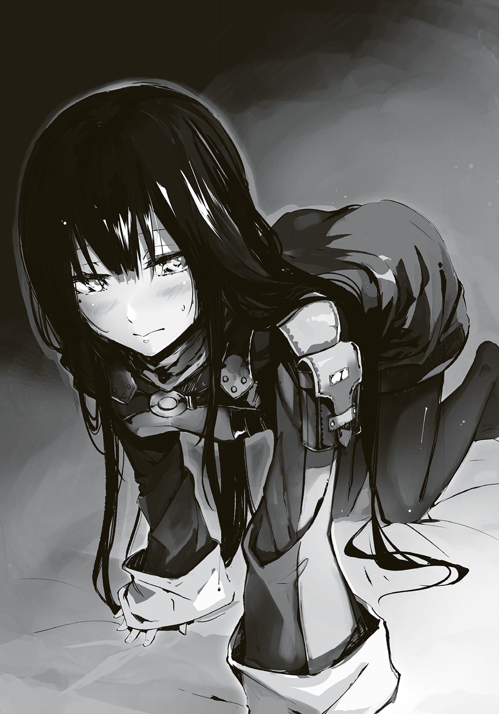
でも円は何とかそれを表情に出すまいと堪える。そして、彼の膝の上で寝返りを打つようにして顔の向きを変える。
以前はそれで彼と目が合ってしまい変装がバレたのを思い出す。でも今回は耳搔きが中止になることもない。
体を捻り、顔を上に。緊張しつつ薄目でアルクを見る。彼は......円を見つめていた。
顔が、体が一瞬で火照った。囲炉裏に近いせいだ。そうに違いない。そう自分を思い込ませ、円はギュッと瞼を閉じて慌てて顔を背ける。肌が白いせいか、顔が赤くなりやすい体質なのだ。
これ以上恥ずかしい思いはしたくなかった。
アルクの臍に鼻先を着けるようにして、体を横にした。かすかに、彼の匂いがする。弟の匂いにどこか似ている気もしたが、それよりもはるかに薄くて嫌な感じがしない、そんな匂いだ。調練終わりなど、斛は問答無用でデコピンしたくなるほどに臭い時がある。
......男の匂い。多分、そういうものなのだろう。
「それじゃ始めるよ、円。......陣を発現させるけど、明かりのためだから......信じてくれる？」
耳搔きは信頼関係なくしては行えない。それを前回、円は学んだ。
無防備な体勢で、相手に急所を晒す。しかも耳の穴の中である。そこは頭蓋骨で守れない場所であり、そこに異物を入れられるのだ。耳搔きをする側に殺意があれば死は免れない。
烏の自分が陣士にこれほどまでに身を委ねるのは明らかにおかしい。間違ってる。そう思う。けれど、抗いがたい気持ちがあるのもまた事実だった。
だから、殺すのならいつだってできる、そう思うことにした。それに総本山襲撃事件以降は、烏の動きは妙に鈍くなっている、という噂も聞いていた。遠方での陣士狩りは相変わらずだが、総本山周辺ではほとんど行われていないというのだ。ならば自分だって、いいではないか。
円は瞼を閉じると彼の膝の上で頷いた。彼は刀を置いてもいるのだ。信じるに十分だった。
ありがとう。そんな、吐息に混じった彼の声が、左耳に滑り込む。
これからそこを......そう考えると、円は震えそうになる。
「......こういうの、何だけど......円って、綺麗な髪だよね」
あ、ありがと。そう、震えそうになる声で円は言った。
アルクの指が耳の上に置かれる。相変わらず剣士のくせして意外なほど柔らかだ。その指先が円の髪を撫でるように、そして、そっと......搔き分け、耳を囲炉裏の弱い光に晒す。
円の体に力が入った。髪に隠れていた耳を晒すだけ......普段だって少し動けば見えるし、髪を払えば......。
でも、何故だか今は、他人の手で下着を脱がされているような、そんな恥ずかしさがある。
顔から火が噴き出そうになるのを、円はアルクの腹に顔を埋めるようにして堪えた。
耳をアルクの左手の指で優しく押さえられ、そして右手に握られた耳搔きがそっと穴の近くに近づいていくのが気配でわかった。
そして......そこで閉じた瞼越しにでもわかる、青白い光。陣能力の発現だ。
ちらりと薄目を開けて見れば、アルクの左手に〈炎〉の陣が単独で浮いていた。この光で耳の奥までを照らし出そうというのだろう。揺らぐ炎より、陣能力特有の青白い光は安定しているので、確かに合理的である。......けれど、つまりは......よく見えているということだ。
円は、生唾を飲む。ほとんど人に見せたことのない秘部をまじまじと男に見せている。しかもこれからそこを彼に蹂躙されるのだ。その間、自分は抵抗もできずにまた、あの時同様に喘ぎ散らすだけ......。その未来予想図に、気がつくと円は息を乱していた。
大丈夫。もう、一つの穴は彼にやられているのだ。今更もう一つの穴を弄ばれたところで......ただ、気持ちいいだけ。きっと、そのはずだ。だから......早く......。
円は断頭台にて首を突き出しているかのような気分で、その時を待った。しかし、なかなかアルクは差し入れてこない。それどころか、陣の明かりで彼はどうもまじまじと円の耳を、穴を、その奥をのぞき見ているようだった。
「凄く綺麗だ」
円は震えるようにして、小さく頷く。
恥ずかしさがある。けれど、今回は......自信があった。前回は成り行きで大変なことになってしまったが、今回は違う。見苦しくないよう、準備したのだ。彼らの行き先に目星がついた後、近くの温泉宿に行って体を洗い、そこでどうなっても大丈夫なように綺麗にした。
だから、堂々としていればいい。見られて嫌なものは......ない、はずだった。
「とりあえず、いくよ？」
「......来て」
――そして、素直に来る。耳の穴に、異物がすっと滑らかに入り込んでいくのがわかる。何にも触れていないのに、軽やかで細くてしなやかな棒が......。
今この瞬間から、自分はアルクの指先一つに全てを委ねた。
もう彼を信じ、頼り、そしてすがるしかない。円の体が緊張に硬直する。
そして、耳搔きの先がそっと、優しく、円の奥深くに触れた。「はぁッ！」そんな声が口と鼻から漏れて、体がビクリと震える。無論頭も動いたが、アルクの巧みな指捌きによって痛みはない。......やっぱり、うまい。
以前と違い、今回は最初から深いところを攻めてきている。こちらもそれ相応の心構えがないといけないだろう。
円は出来るだけ体が動かないようにと、横にした体を丸めて赤子のようになり、行き場を失っていた両手を股の間に挟んだ。そして顔はアルクの腹に押し込むように......グッと。これなら不意に動いたりしないで済むし、力が入っておかしなことになったりもしないだろう。
......コシュ......コシュ、コシュ。優しく、丁寧に細やか。相手を気遣うようなその動き。アルクの性格をそのまま表しているかのようだ。
これだ。この感覚だ。これを三カ月もの間、待ち焦がれたのだ。
自分の内側で、彼を感じる。強い快感を伴いながら。他にない、この悦び。
思いっきり声を上げたい衝動と共に、息を止めて快感に耐えようとする体。相反する二つに円は身が裂かれる思いだった。
役立たずな弟ではこうはいかなかった。試しにやらせてみたが、全然気持ち良くなく、それどころか痛かった。なので、その後にボコボコにしてやった。
これは単に彼がうまいからなのか。それとも彼が、アルクという男だからなのか。それはわからない。確信できるのは......彼の耳搔きは間違いなく気持ちがいい。それだけだった。
耳搔きがそっと抜かれた。深いところではあったが、まずは様子見という感じだ。
円はこの隙に乱れていた息を整える。こんなところでヘバっていてはダメだ。まだ序の口である。......でも、期待し続けたせいか、それとも彼が腕を上げたのか、吐息を漏らす円の口の端にはすでに涎が垂れかかっていた。
まだまだこれから。これから彼の指先に耳の穴だけでなく体全体を蹂躙される。
そう、これからなのだ。これからが、本番だ。気合いを......。
「うーん......円、終わりにしようか」
「へぇあ!?」
人生二度目になる素っ頓狂な声が口から飛び出ていった。円はガバリと顔を上げる。
「何で!?」
「いや、何でって言われても......円、綺麗だし」
意味がわからず、円は眉根を寄せた。間近に驚くアルクの顔があり、きっと真っ赤になっている自分の顔を見られているという恥ずかしさも気にならないぐらいに、円は困惑した。
「耳の中、もう、掃除した後じゃない？ 綺麗だからやる意味が......」
――しまった。円はこの時になって己の最大の失敗に気が付いた。
前回、穴を覗き込まれた時にあまりに多くの耳垢のために酷く恥ずかしい思いをした。だからと今回は恥ずかしくないよう、最高級品である耳搔きを購い、会いに来る前にしっかりと綺麗にしてしまっていた。
乙女の嗜みとして、殿方を受け入れる準備のつもりであったのだが......やり過ぎたのだ。
そうだ、と、円はようやく思い出した。耳搔きとは、耳垢を取るための行為であり......快楽を貪り、悦びに震えるための行為ではないのだ。
「こ、壊しちゃってもいいから......！」
「さすがに......ダメだよ。あ、右側をやろうか......？」
アルクが微妙な笑顔でそんなことを言ってくるのだが......当然ながら、右の穴だって同じである。綺麗にしてしまっている。この数分で耳垢が大量発生するというこの世の終わりのような奇跡でも起こらねば左耳と同じ状態であるはずだった。
円は下唇を軽く嚙む。もしかしたら生まれて初めてかもしれない気分で、俯き、アルクの胸にその頭を付けた。
自分は、いったい何のためにここまで来たのか......。後悔の念に押し潰されそうだった。
もう、ダメだ。もう、無駄だ。やってしまった。耳掃除を、一人で先にやってしまった......。
円はそんな後悔でクタリと全身から力が抜け、アルクにもたれるように崩れた。すると耳が彼の胸に触れ......そして、早鐘のように鳴っているアルクの鼓動が聞こえた。
自分の耳を掃除するために、それだけ緊張して......集中していたのだろうか。そんなことを嬉しく想うと共に、申し訳なくもあった。
「......ごめん、アルク」
「謝る必要は何もな――」
円はアルクの胸に掌底を放つ。彼を吹っ飛ばすと共に反動で己も後方へ転がる。
その二人の間を小型の槍のような巨大な矢が掠め、囲炉裏にかかっていた鍋をひっくり返す。火が消え、室内が闇に落ちた。
矢は壁を突き破ってきた。そのくせして狙いは正確......陣能力か。いや、使わずとも可能だ。人は精神を研ぎ澄ませば、離れた場所、物陰の動きを察することができるものだ。烏にもそれを得意とするものもいたし、山で草木に隠れている小動物を射貫く猟師だっている。
だが、円としては陣士であってほしかった。もし烏だとすれば......アルクとの関係がバレてしまえば、確実にまずいことになる。裏切り者とはされなくとも、確実にアルクに近づくことを禁止されるだろう。せめてほじくられた後ならともかく、この状況で来たとなれば......。
――もし烏ならば殺す。陣士でも、攻撃してきた以上は殺すしかない。
緊張や快楽や後悔に塗れていた円は、深く呼吸をして気持ちを切り替える。
心を隠す。奥深くまで沈める。いつものように。
暗闇の中、円に突き飛ばされたアルクは慌ててナマクラに手を伸ばそうとするが、そこにまた矢が来て、彼は慌てて床を転がるしかない。――狙いは彼か？ ならば、烏の可能性が高いか。
円は振動鉄糸を使いたかったが室内では無理だった。全てを斬り裂く極細ワイヤーだが、切ることはできても壁を貫くことはできないのだ。何より、扱うための手袋を外してしまっている。外すのは簡単でも、あれを装着し直すには時を要してしまう。
府津羅流とナイフ、そして飛刀で十分だ。円はそう思い定め、己の刀を手に家を飛び出た。室内よりも外の方が月と星、そして雪明かりのおかげで視界が通っている。
矢は、なおも家へ......アルクへと狙いを定めていた。その射線を目でたどれば、村外れに立つ荒屋の上だと知れた。大弓のシルエットがわずかに夜空に浮かんでいる。気配は見事に殺しているが、わずかに殺気が漏れているのですぐにわかった。
円は飛刀を手にし、ありったけの力で放つ。弟の投擲能力なら有効射程内なのだろうが、円では無理だ。だが、近くには飛来する。アルクから多少なりとも気が逸れるはずだ。
その予想は当たったようで、走り行く円に向かって巨大矢が来た。それを抜刀と共に斬り飛ばす。アルクと違って鞘をベルトに固定する金具を持たないため、鞘はその場に捨てた。
矢が、来る。二箇所から。大型の弓矢のくせにやけに連射が速いと思えば、遣い手が二人いたようだ。円は刹那迷うも、最初に目を付けた方を変わらず狙う。
走る。柔らかな雪は邪魔くさいが、動きが死ぬほどではない。
次々に来る矢を払いに払った。そして荒屋に到達するなり、円は飛ぶようにしてその屋上へと跳び上がる。それは完全に相手の虚を突いたようで、弓矢を置き、腰に帯びていた山刀に持ち替えようとしていた二十歳前後の男が目を見開いていた。
この男、毛皮を纏ったその姿からするに猟師の類か。
円は男を間合いに捉えるなり、唐竹割りに刃を奔らせる。
男は山刀をかろうじて抜刀するも、両手で握る余裕がなかったようで寝かせた刃で円の斬撃を受ける。左前腕部で山刀の背を支えた。
肉厚な山刀に、ガッチリとした体軀の男。いくら不意を突いたとはいえ、円の体格と無銘のそこそこでしかない刀では弾かれるのがオチだろう。
だが、府津羅流は力ではなく、技で斬る。女や子供のような、体の小さい者達が剛なる存在と戦うための技術だった。
――斬った。男の左前腕部もろとも山刀を両断し、そのまま彼の左肩をもその場に落とした。
円は刀を引くと共に左手を掌底にして、男の鳩尾に叩き込み、その体を荒屋から雪面へ落とすと、自らもその後を追った。そして、雪面の上で左腕を失って慌てふためく男、その腰骨の上に飛び下りる。さすがに下が雪面なのと円の体重がないために骨は砕けなかったが、男を絶句させる効果はあった。
右腕を踏みつけながら、円は刀の切っ先を男の喉元に突き付けた。
「あなた、誰？ 烏でも陣士でもなさそうだけど、何故私達を狙うの？」
男は踠き、言葉にならないわめき声をがなり立てるだけだった。なかなかにいい切り口なのでまだ痛みを感じるとは思えない。腕を失った衝撃に混乱しているのだろう。
少しやり過ぎたか。そう思って円が舌打ちした時、背後から爆音が轟く。見やれば先程までいた平家が爆炎に包まれ、廃村全域を赤く照らし出すほどに轟々と夜空へと炎が立ち昇りだした。それはまるで生き物のようにして村の中に生えていた巨木へと向かい、瞬時に炎で包む。家から巨木への炎のアーチは......まるで炎の龍である。
弓を持った男が火だるまになりながら巨木より転がり落ちる。しかし、それで終わりだ。雪に体をこすりつけて消火する余力もなく、男はそのまま燃え続けた。
恐らく特殊な油か何かを放ったであろう炎は、まさに空を焼く勢いで燃え盛る。そんな業火に包まれた家の壁を蹴破り、当たり前のように、悠然と歩み出でる黒い影。アルクだ。
直系であるが故に府津羅流の遣い手としてのイメージが強いが、彼もまた陣士。それも最強の陣士たる罌粟が選び抜いた碧の猟犬......それを、円は今一度思い出していた。
５
俺はやたらと苛立っていた。これまで幾度となく、それも様々な相手から襲撃を受けてきていて、今更な気もしたけれど......でも、何だか腹立たしかったのだ。
邪魔をするな、と大声を上げたくなるような衝動があったが、さすがにそれは堪えた。
俺は円やユニ、そして俺自身の荷物をひとくくりにしたものを遠くまでぶん投げ、そして、炎を背負ったまま、ナマクラを抜いて辺り一帯に剣気を放つ。
俺の姿はシルエットでしかわからないだろうが、それでも戦いに慣れた者であればこちらの意図はその肌で知れただろう。
――来るなら来い。逃げるなら脱兎の如くに震えて走れ。
俺は辺りにいる連中に、そう伝えたのだ。逃げも隠れもしない、と。それは脅しであり、そして誘いだった。腕に自信がある者なら、こちらをなめている者であるならば......必ず来る。
「やはり、やはり陣士か、やっぱりそうだ。やっぱり......お前だ」
おかしな言葉を囁きながら気配を押し殺したままで四人の男と、二人の女......計六人が現れて俺を半円状に囲む。年の頃は二十歳をいくらか過ぎたぐらい。全員同年代だ。
そのうちの一人は、日中に会った赤毛の兄妹、その兄の方だ。妹は、いなかった。
「村を訪ねた者を襲う賊か？ それで墓を......いや、それだとしたら名を刻むのは妙か」
「おれ達を賊だと？ ......ふざけるな。積年の恨み、今こそ......!!」
そうだ、今こそ！ 今日こそついに!! そんな声を次々に上げる連中は手に肉厚で五〇センチはあろうかという片刃直刀マチェット、槍、打刀、大太刀、鉈、ナイフ......と、見事にバラバラだ。ただ、そのどれもが武術のためというよりは、狩りや鵺と戦うために使うものなのだろう。どれもよく研がれ、血の臭いをさせている。
「鵺と人を狩る猟師、といったところか」
「お前が言うか！ 死ね!!」
抑え込んでいた殺気が......いや、怨念にも似たものが六人から溢れ出し、俺を襲った。反吐を催すような粘りつき、重苦しいそれは並ではなく......俺は、押された。
全員が一斉に動く。最初に俺の間合いに入り込んできたのはリーチの差もあって、槍の穂先。同時に槍と挟み込むように居合いで打刀を扱う女が迫る。それをやり過ごしたとしても大太刀とマチェットの二人も斬撃のためにすでに振りかぶっており、少々遅れて鉈とナイフが......。こうなるとさすがに面倒だったが、正直〈地〉の陣まではこんなところで使いたくなかった。だから......下がった。
槍を軽くかわし、居合いはナマクラでその切っ先を叩き上げつつ、俺はバックステップ。燃え盛る家の中に戻った。
吸い込む空気すらすでに熱いが、気温がそもそも低いのでまだ呼吸するだけで喉や肺が焼けるほどではない。それを察してか、鉈遣いの男とナイフ遣いの女が躊躇いなく追ってきた。
鉈遣いが真っ直ぐに俺へと距離を詰めてくる。それと同時にナイフ遣いが俺の背後を取ろうと素早く、そしてナマクラの間合いを警戒しつつ大きく動く。
とにかく二人同時攻撃をしたいようだ。相手が強い場合、より確実に......そうなれば自然な動きである。だが、律儀にそれに応じてやる必要はない。得物を振り上げていた鉈遣いへ俺もまた大きく踏み込んだ。突き。寝かせた刃を男の胸元へ。肋の隙間を通して肺に穴を開けると同時に刃と共に身を引きつつ、反射的に振り下ろされてくる鉈をナマクラの峰で弾き上げて奴のバランスを崩させると共に、踵を返して飛びかかってきていたナイフ遣いの女へ大きく股を開き、重心を落としつつ、踏み込む。振り上げていた刃を馳せ違いざま――いや、彼女の下をくぐり抜けるようにしながら、振り下ろす。女の左足を根元からもらった。
頭上から降り注ぐ鮮血をかわすためにあえて俺は燃える床板の上を転がる。
鉈の男は尻餅をつき、女は床を転がり落ちて壁にぶつかって悲鳴を上げる。最初は斬撃の衝撃に、その後は......燃え始めた自分に。鮮血を迸らせながら女は転がるが、転がれば転がるほど女は炎に包まれていく。
「鉈遣い、彼女の炎は消えない。仲間なら死なせてやれ。それぐらい待ってもいい」
俺とユニが使う小瓶に収まる油は独自に合わせた特殊なものだが、大きく分けると二種類ある。即座に激しく燃え上がって巨大な炎を生む油と、おとなしいがゆっくりと長く燃える油。戦闘では前者が役立つが、その勢いだけで屠れない強敵や数が多い敵との戦いでは後者が物を言う。......ナイフ遣いが踠いたせいで全身に纏わりつかせてしまったのは、後者である。粘着質で、長時間強固に燃え続けるそれは水に飛び込んでもすぐに消えるものではなかった。
鉈遣いが何かを言おうとしたが、出てきたのはどす黒い鮮血と涙だけだった。
彼は手をつきながらも燃えて喚く女のもとへ行き、鉈を振り下ろした。
その間に俺はナマクラに付着した血を拭い、鞘に納める。
......炎の勢いが増してきて、天井が崩れ始めていた。そこいらにも油を散らしたので火の粉と共に油も少し垂れてきているようだ。俺の服に油の染みができていたが、女の首を落とす鉈遣いの背はすでに燃え始めていた。
仲間の血で濡れた鉈を手に、彼は立ち上がってすでに納刀していた俺を見た。血走った目、血を吹き出し続ける口と鼻、そして全身からは怨念とも殺意とも、畏怖とも感じる何かを発していた。命の灯火が消えるのを感じたが故の、最後の全力――来る。
剣を交わらせるのは魂の語らい......そうである以上、彼の全てを懸けた一撃はきちんと受けてやるべきだった。けれど彼はもはや何も語ろうとしない。ただヤケクソに、悲痛なまでに、一方的に叩きつけようとしている。
......仕方なかった。居合いで、彼の胴を断って体を二つに分け、終わらせた。
「そんな......何で、こんな......!! どれだけアタシらを殺したら気が済むんだ!?」
打刀を持った女が、室内に足を踏み入れてくるなり、悲痛な声を出す。彼女は歯を喰い縛ると刀を上段に構えようとするが、すぐに正眼、そして下段へと構えを下げていった。
打刀とはいえ、やはり室内で戦うとなると天井が気になるのだ。大太刀遣いどもが入ってこないのはそのせいだろう。
俺もまた下段に構えて、彼女と向かい合う。......意外ときっちりとした型である。山で振り回していただけではなさそうだ。
燃え盛る家の中、見つめ合って行き交う気持ち。けれどそれもすぐに終わった。彼女もまた怨念に取り憑かれたように殺意の塊となって、踏み切ってきた。
俺は正眼に構え直して、彼女を待った。斬り上げてくる一撃をナマクラで上から押さえ込みつつも一気に踏み込んで間合いを詰める。そしてそのままの肩でぶつかっていき、彼女を突き飛ばすようにして燃えつつあった引き戸をぶち破り、二人共に夜空の下へ。
槍が来る。燃える家から飛び出すのを待ち構えていたか。
俺は避けようとするが、倒れていた刀遣いの女が俺の左足にしがみついてくる。即座に懐から匕首を抜き、これを彼女の首に根元まで突き刺すと共に、身を反らし、かつ、ナマクラを槍に叩き付けて方向をそらしてかろうじてかわす。雪の上を転がり、右足で呻き散らす女の顔面を蹴りつけて自由を取り戻すと、今度は俺から動く。
迫り来る大太刀とマチェットを無視して、槍遣いへ。さすがにそろそろ面倒臭くなってきたのと、わけのわからない殺気をぶつけられることへの苛立ち、そして何より襲ってきた彼らに対する苛立ちが合わさり......少し無茶をした。
槍遣いは間合いを詰められすぎたことで槍を寝かせて受けようとするのだが、当然、そんなものが切れぬようでは府津羅ではない。俺は短く覇気を発すると槍諸共男の頭を両断し、そのまま胴を、そして股ぐらをも一気に斬り通した。
さすがに顔にかかってしまった返り血を拳でこすりながら、振り返る。
大太刀遣いもマチェット遣いも固まっていた。俺はナマクラを振り、血を払う。背後でびちゃびちゃと臓物の零れる音がし、そして肉片二つと化した槍遣いが崩れゆく音がした。
体を痙攣させていた打刀遣いの女の首から、匕首を引き抜く。
「もう無意味な戦いはやめないか。こんなのに、何の意味があるんだ」
大太刀遣いが得物を捨てると悲鳴を上げて逃げ出してくれた......が、その背に、マチェットが突き立てられた。
「臆病者め！ また逃げるというのか、奴は必ず殺すと言っただろ!!」
赤毛のマチェット遣いもまた案外きちんとした剣を使うようだった。
正眼に構え、ジリジリと俺との間合いを詰め始める。しかし剣先が震えているのは雪ですり足がうまくいかないせいか、それとも怯えているのか。
「退けと言っても退かないんだろうな。......死ぬ前に教えてくれ。何故、こんなことをする」
「復讐だ！ この夜を十数年もの間待ち続けたんだ。お前を殺して、全てにケリをっ......!!」
悲痛な覇気を受け、気が付くと馳せ違っていた。何を斬ったのかは自分自身よくわからない。ただ、ドロドロとした怨念......そういう類のものをナマクラは斬り裂いた、そんな気がした。
振り返ってみればマチェット遣いが血を流して、倒れていた。
「なんなんだ、いったい......」
「それはこいつから聞いてみたらどうだ？」
夜の闇中から現れたのは、斛とユニ......そして、後ろ手を縛られている赤毛の女......あの兄妹の妹だった。離れた場所から様子を窺っていたらしい。
彼女は兄の遺体を見つめながら、涙を流していた。
「やっぱり......私達はこうなるしかなかったんだ......あの日どれだけ逃げたって、追ってきた時にわかった。もう助からないんだって、殺されるんだって......村のみんなが斬り殺されたように......。復讐なんて無理だって、逃げようって、そう言ったのに......兄さん......」
「復讐も何も......俺はこのドトルに来たのは初めてだ。何を言っているんだ？」
「初めてじゃない。違う。アンタはここで生まれて、そして村を滅ぼしたんだ！ アンタのせいで!! アンタとアンタの親のせいだ!!」
わけのわからないことを口走る女は、泣きじゃくっていたはずが、気がつくと涙を流しながら甲高い声で笑いだしていた。それには捕まえてきた斛とユニもぎょっとして、思わず女から一歩後退っていた。
「アンタの母親、どうなったと思う!? アタシ達が一晩かかって骨も内臓も全部ぐちゃぐちゃになるまで石で叩いてミンチにして肥だめの中にぶちこんでやったんだ!! クソとおんなじところさ!! 父親は鵺に喰わせてやったよ、芋虫みたいな奴にゆっくり溶かされて......!! 凄かったよ、凄く気持ち悪くて......お似合いで......はっははは......あははは、凄かったんだ!!」
「俺の母さんは府津羅の墓の中だ。埋葬時の記憶はないが、骨壺は見ている。父さんの葬儀はおぼろげだけど覚えて......」
「もうやめとけ、アルク。この娘、状況に気が触れたようじゃ。会話にならん」
「府津羅の墓!? 入れるわけないじゃない!! アンタもアンタの両親もいったい何様のつもり!? 鬼だったんだよ!! 鬼の子だよ！？」
鬼。その言葉に、俺は無意識にナマクラへと手を伸ばした。
愛刀を兄から渡された時、兄は言っていた。
俺の中に、鬼がいる――と。
「鬼とは、何だ。俺の父、府津羅雅晴のことを何故お前は鬼と――」
「雅晴は鬼じゃない、ただの詐欺師さ！ クソ野郎だ!! 何が全部斬り捨てただ!!」
――雅晴の妻は大層いい女じゃった。......じゃが、おぬしには似とらん。
何故か......ソバの言葉が脳裏を過った。
俺は思わず赤毛の女へ手を伸ばすのだが、触れるより先に......彼女は己の舌を嚙み切った。
血を吹き出しながら、彼女は兄の遺体の上に折り重なるように倒れ、そして痙攣し、静かになった。その間、誰も何も、言わなかった。
「......妙な兄妹じゃったな」
ユニの言葉に、俺は応じることも頷くこともできなかった。
●２章『府津羅』
「こいつぁまた、随分と斬りましたね。人も鵺も、鉄も......いろんなものを斬っている。ははぁ、これは府津羅流だ。才がある。けれど、技が少々荒いのは......若さかな」
研ぎ師の男はナマクラを鞘から抜くなり、苦笑するようにそんなことを言った。俺が子供の頃に連れてこられた時は、初老をとうに越えた老人だったはずだ。訊いてみれば息子だという。六人兄弟の末弟で、兄達は腕を鍛えるための旅に出ているそうだ。
「安心してください。うちの一族じゃ若造ですけど、親父の腕を一番に継いでいるのは自分です。ガキの頃からあの府津羅流の先代宗主、府津羅雅晴殿の愛刀を研ぐ手伝いをしておりましたし、現宗主である頼雅殿の白光鳳だって、今は主にオレが研いでいます」
ナマクラを一目見て俺の技を見抜いたあたりからして、その言葉は本当なのだろう。疑う気はなかった。何より兄の剣と同じ人に研いでもらえるのは......ちょっと嬉しい。
「どのくらい、かかりますか？ 急ぎというわけではないのですが、早い方がありがたい」
「さて。冬ですからね。雪降る季節にわざわざ研ぎに来る人も少ないですから、比較的早めに取りかかれるかと。あとはどう研ぐかです。しばらく眠らせるつもりでおとなしくさせるのもいいでしょうし、剣が放っているこの覇気をより強めてもいい。どうとでもできます」
そう言われても、困ってしまう。きちんとした研ぎは手間もかかるし金もかかるから、鵺ばかりを相手にしていた過去の俺は、俺自身や兄にやってもらうばかりだったので、人に注文をつけたことがなかった。
研ぎ師もそれを察したのか、どこか優しげな笑みを浮かべて助言を与えてくれる。
「人、鵺、畜生、剣に鎧に盾、木、水、空......あなたはこの剛刀で何を斬りたいとお思いで？」
「......迷いを」
それしかなかった。今、それを斬れるのならば、どれだけ金を積んでも惜しいとは思わない。
「なるほど、これは難題だ。ですが、了解いたしました。やらせていただきます。......研ぎ上がるまでの間は代わりのものを佩いていてください。何もないと落ち着かないでしょう」
研ぎ師が館の奥より取り出してきたのは、なかなかに立派な一振りだ。
俺は安くはない額の金を彼に渡し、研ぎ師の館を後にした。
「ユニ、宿へ......何だ、随分、仲良くしてるんだな」
ユニは村の広場で数人の子供達と追いかけっこをしているようだ。足場は踏み固められているとはいえ、雪面だから全員が激しく息を乱すほどに全力なのだけれど......ユニの尻尾が遊んでいるはずなのに反り返っていたりパタパタ動かずに垂れ下がっているのが気になる。
「仲良くしとらん！ これだから田舎の子供は嫌いなんじゃ！」
声を上げたせいでユニの足が縺れてしまい、転倒した。そこに子供達が騒ぎながら飛びかかり彼の大きな耳をムニムニ揉んだり、尻尾でもふもふと......。
あぁ、耳と尻尾が珍しいのか。元々あれらは遺伝子に刻まれた古代の遺物で、低めとはいえ確率次第で誰もが発現するもの――とはいえ獣耳の人から獣耳の子は生まれやすいらしいけど――だから、人口の少ない村では珍しいのだろう。
ユニは尻尾を左右に激しく振って子供達の手や顔を叩いて抵抗するのだけれど......それはそれで子供達の笑顔を誘ってしまうようだ。微笑ましい光景といえばそうかもしれないけれど、割と本気でユニが怒りだしかねないのと急ぎの用事ができてしまったので、俺は彼をお姫様抱っこで抱え上げ、纏わり付いていた子供達から救った......つもりだったのだけれど......うーん、そうか、ユニの場合お姫様だっこしても尻尾が垂れるのか。
まるで猫じゃらしにじゃれるように、子供達がユニの尻尾に飛びつかんとしてきた。するとユニはフン、と気合いを入れて尻尾を腹巻きのようにして腹前に持ってくると、櫛を取り出して子供達に弄ばれた毛並みを整えだした。
「子供は嫌いじゃ」
「俺もさ。というか......どう扱っていいかがわからない」
実家の道場では、門下生として通っていた子供達と接することはほとんどなかったし、それなりに大きくなった後も傷だらけの顔や体のせいで小さい子も見るなりみんな逃げていったっけ。......いや、というか、あれだ。俺、人と接するのがそもそも得意じゃないんだ......。
そんなことを話していると、ユニは俺の腕の中で笑った。
「以前は、ピンパーネルとどっこいどっこいだったらしいしの。今のようにまともになったのは、ボクのおかげじゃな」
「傷があったせいかも。なくなってからは多少自分に自信が持てるようになったっていうか、普通の人間のフリができた。あれがあるとどうしても自分は府津羅の......」
思わず、言葉が詰まった。ユニが尻尾を伸ばして、俯きそうになっていた俺の顎をその先端で擽ってきて、思わず仰け反る。その瞬間に彼はコロリと身を転がすようにして俺の腕から降りると、乱れた服を直した。
「何にせよ今のおぬしはアルクじゃ。ブラコンのな。研ぎはいつ終わるのじゃ？」
「数日はかかるようだから、先に故郷に戻ろうと思う。それで帰りにまた取りに寄ろうかと」
無駄がなくて良いの。ユニはそう言ってくれるのだが......正直言って単に俺が一刻も早く兄に会いたい......そして、あの連中のことを尋ねたくて焦っているのを察しているのだろう。
......何だか申し訳ない気持ちになる。
「では、さっさと出発じゃな。ボクもあの美丈夫の兄にまた会いたいしの」
どこか物欲しげ......というか、寂しそうな顔をする子供達にまた来ると告げて、俺は小さな村を今一度見渡した。
「どうせ烏どもは放っておいてもその気があればついてくるじゃろ。気にする必要はない」
円達はあの襲撃の夜に姿を消していた。斛も気がつくと消えていたけれど、兎の肉を半分持っていったことからするに円もまた無事ではあるのだろう。何よりあの程度の手合いで死傷しているようならヤリゼイサでは生き残れなかったはずである。
俺は研ぎ師の使用人に頼んで用意してもらっておいた馬に跨がった。
ユニもまた俺の前に横座りで乗せると、子供達に見送られながら、一路故郷を目指し......そうになった時になって、先程の研ぎ師が走ってきた。
「アルクさん、でしたよね？ 失礼を承知でお訊きするのですが......ひょっとして府津羅殿のご親族であられますか？」
「何故......それを？」
「あぁやっぱりだ！ 目釘を抜こうとして気がつきました。刀身に残る斬り癖が......太刀筋が雅晴殿や頼雅殿にそっくりでした。弟さんがいると頼雅殿から以前に聞いたことがあったのですが、あなただったんですね」
「似てましたか、俺の......」
「最初はわからなかった。けれど、深いところが同じです。雅晴殿、頼雅殿との差は......そうですね、恐らくアルク殿の恵まれた体格から来るものでしょう。いやー、良かった、気づいて。親父にまたドヤされるところでしたよ。......府津羅の方々はうちの一族にとっては特別なお客様です。優先して研がせていただくことになっておりますので、三日......いや二晩で研ぎ上げてみせます、どうぞこの村に逗留を」
研ぎ師の笑顔に、俺は自分の中に渦巻いていた迷いが少しばかり鈍くなったのを感じた。
全部気のせいだ。何かの間違いだ。きっと、そうに違いない。
そう思えてきて、それだけでここまで来た甲斐があったような、そんな気がした。
最後に俺が故郷の土を踏んだのは陣士になると兄に告げに帰った時である。
あの頃は緑に溢れていた山々だったけれど今はどこもかしこも雪化粧。ひたすらに白い。朝日を浴びて眩しいほどだった。
そんな中に黒く沈むように人影一つあればやたらと目立つものだ。
革のブーツに袴姿、荷を背負い、腰には刀を一振り。碧い髪を二本のお下げにして歩んでいるのは......円だ。俺は馬を止めた。
「ん？ 知り合いかの、アルク。府津羅の教え子か」
「ユニ、違うよ。ほら、よく見ろって。......円だよ」
ユニはポカンとするものの、彼は眉間に皺を寄せ、その大きな目を細め......首を捻る。
あ、そうか。よくよく考えてみれば、ユニが円の変装を見るのってこれが初めてだったか。服装やら髪やらが違うのはもちろんだけど、泣き黒子も化粧で隠しているし、纏う雰囲気そのものが普段の円とは全然違うから、円を知っている人間ほど逆にわからないのかもしれない。
「前に不義理な別れ方をしたので、その時の謝罪を。菓子折も持ってきたし」
「......妙なところで真面目だね......。斛は？」
「烏の仕事をほっぽり出しておくのも何だから、今はそっちの仕事をやらせてる」
「ということは斛に働かせておきながら、自分は変装してボクらの後を追って菓子折を用意して......。なかなかの御身分じゃの」
「二人でやる意味のない仕事だもの」
ユニの皮肉な物言いを円はさらりと受け流すと、すでに見えてきている道場へとまた歩み出す。俺もまたゆっくりと馬を並走させた。
雪かきをしていた少年を見つけ、声をかけてみれば......ちょっと予想外の展開になってしまった。兄は鵺の討伐依頼を受けて、先日遠方へと出発してしまったのだという。
「近々帰るって手紙を出してたけど......予定より少し早かったせいかな。菫義姉さんは？」
「お腹のやや子ともどもご健勝です。もうすぐご出産だというのに師匠もお忙しい人で......あ！ ひょっとして、陣士になったという先生の弟さんですか......？ こ、これは失礼しました！ 昔、遠目にしか見たことがなかったもので、わかりませんでした！」
やたらと恐縮する少年に俺達は荷物と馬を任せ、朝の調練に打ちこんでいる道場前を横切り、母屋へと向かった。
こちらから声を掛けるより先に義姉さんの「お入りなさいな」の声。
頭を下げてユニと円を引き連れて中に入れば......あの少年が健勝だと言った意味がわかった。
迎え入れてくれた義姉さんは、何とも大きなお腹をしていて、顔よりも先にそちらへと目線がいってしまう。
「あら、マドカも？ どういう縁かしら」
マドカこと円が深々と頭を下げ、以前の非礼を詫びたり、俺がユニを相方だと紹介したりするもやはり例の如く女の子扱いされて若干尻尾をふるふるさせたりする流れを経て......義姉さんは、俺の顔を見てため息を吐いた。
「あなたが来たということは......やっぱり、頼雅さんとは会えなかったのね。ホンット、あの人、無茶ばっか言うんだから」
何のこっちゃ？ と思っていると、どうも兄は鵺討伐依頼を受けてなお、弟の俺が帰ってくるまで道場を出ないと散々駄々をこねていたらしい。
しかしながら鵺の数は多く、しかも妙に強力なものが多いがためにわざわざ遠方である府津羅まで助けを求めてきたことを考えるに、直弟子達――門下生とは違い、兄が特に腕が良いと認め、そこからさらに兄が直接鍛え、そして府津羅流に生涯身を置く覚悟をした者達を指す――だけで行かせるのはかわいそうだと義姉さんが言ったそうで......。
そんなこんなでひたすらに悩んだ末に兄が出した結論は『討伐の場は総本山方面であり、地図を見る限り愚弟の里帰りの通り道にやや近いと言えないこともない。となれば愚弟は兄である自分の気配を自ずと悟って会いに来るに違いない』とわけのわからない自説をおっ立てて自信満々に出立していったんだとか......。
「なんというか......おぬしの兄も、相変わらず健勝のようじゃな」
「頼雅さん、そういう人だったんですね。知りませんでした」
俺は俯き加減に眉間を揉む。左右に座っているユニと円の冷ややかな視線が痛い......。
兄の言ったことが可能であったとしても、どのみち俺達はドトルへ寄るために南の道を辿ってしまっていた。それではさすがに無理というものである。
「しばらくすれば遅かれ早かれ戻ると思うわ。それまでゆっくりしていく時間はある？」
あるような、ないような......。ただ気持ちとしては一刻も早く兄と会いたかった。
本当は兄と話をしたり、また剣を抜き合わせたりしたかったのだけれど......今は、問いただしたいという気持ちが一番大きかった。
今まで関係ないと思っていた事柄が、もしや、という線で繫がるような......そんな気配がずっとしていて、胸が酷く騒ぐのだ。
「義姉さん、一つお訊きしたいことがあります。......ドトル、という村を知っていますか？」
菫義姉さんは優しげな微笑みのまま、首を振るようにも頷くようにも見えるよう動かした。
「懐かしいわね。行ったことはないけれど、聞いたことはあるわ」
「......うちと......府津羅家と何か繫がりは？」
「昔はお義父様のお弟子さんが住んでいたはずよ。それぐらいかしら。......頼雅さんならもう少し知っていると思うけれど」
何となく、菫義姉さんには訊けない。そんな気がした。......いや、訊くな、というニュアンスが菫義姉さんの言葉尻に感じて、俺は口を閉じた。
「何にせよ寒かったでしょ。床を用意させるから、今晩だけでもゆっくりしていくといいわ。ユニさん、マドカ、あなた達もね」
久方ぶりの、自分の部屋、自分の布団であった。
けれど、落ち着かない。ユニが隣にいないせいかもしれない。
アイツは菫義姉さんに女の子認定されてしまったので、客間で円と一緒なのだけれど......義姉さんが寝た頃に俺の部屋に来るそうである。
烏と二人で寝るなど自殺するようなもんじゃ......とのこと。
どうせ俺も眠れないし、何より心にまだもやもやしたものがあったために......寝る前に道場で剣を振るうことにした。
剣は以前俺が使っていたもの。それは道場にずっと置かれていたらしいのだけれど......菫義姉さん曰く、兄が俺を思い出して寂しくなった時などにたまに振っていたそうで、その刃はまだ眠ってはいなかった。
ナマクラは......まだだ。俺の予想をはるかに超えておぞましく研ぎ上げられていて、とてもじゃないが今の自分では御せそうになかった。
刀の研ぎは、女の化粧よりも見違える。そんな言葉を古の剣豪が残したと書で読んだことがあったのだけれど......それを思い出すほどである。
昔の剣を抜き、俺は蠟燭の火だけの道場で一人構える。
「......ナマクラを使ってたせいか、随分軽く感じるな」
身重の義姉さんはもちろん、門下生達も夜が更ける前に帰宅するし、住み込みの若い門下生もまた早々に床に就くので......実家の夜はいつも通りに静かだった。
そして、府津羅流の演舞で触れる道場の床は、以前と変わらず酷く冷たい。
かつて、鵺の跋扈する山だけが俺の居場所だった。道場で門下生達と剣を交えることはきつく禁止されていたのはもちろん、共に剣を振るうことすら許されなかった。
だから俺は夜中に道場に忍び込んでは、一人、日中に見ていた門下生達のように剣を振っていたのだ。あんなふうに仲間達と共に声を出し、汗を流し、そして剣を交えられたらどれだけ楽しいだろう。兄にあんな風に優しく教えてもらえたら......そんなことをずっと考えながら。
剣を憎み、そのくせして憧れ続けた。そして俺にとって剣は、兄と同じ意味を持っていた。
いつも嫌だった。自分が、そして剣と兄が。そのくせしてそのどちらからも離れられなかった。陣士の適性を知った時、腹いせのようにして剣を捨てようとした。けれど......また、俺は剣を握り、そして......以前よりはるかに剣と共にあり、そして心は兄に近づいている。皮肉なものだった。そして、もしかしたら、という突如として湧いてしまった疑念は......より皮肉の色合いを濃くしていた。
......演舞で空を斬る刃筋に迷いがあるのは、久方ぶりの刀のせいというだけではなさそうだ。
演舞はその中にその流派の重要な要素が一通りまとめられているものだ。それを数えきれぬほどに繰り返すことで動きを、つまりは型を身につける。手合わせを許されなかった俺は一人で、それこそ幾千、幾万と繰り返した。だからこそ、不調は演舞に如実に現れる。
決められた動きを決められた通りに動く......そのために集中し、無心になり、そして同時に集中して無心になっているからこそ、心に収まらずにはみ出ている何かを知れる。
そうして己の内面と向き合う......のだが......向き合おうとしない自分がいる。
だからこそ刃筋はブレにブレ、覇気は乱れた。動きを止めた時に自嘲が漏れてしまう。
ふと、道場の外に気配を感じる。......中へ入ってきたのは、ユニと円だ。
「こやつが刀を持ち出したのでの、心配じゃったのでついてきた」
綿のたっぷり入った丹前を羽織っているせいで、いつぞやのアリアドネのように膨らんでいるユニはそんなことを言う。確かに日中と同じ変装をしている円の手には刀が握られていた。
「練習......しているなら相手が必要かと思って」
円が抜刀しつつ足音すら立てずに近づき、正眼に構えた。
......肌がピリピリしてきて、思わず口元に笑みが浮かんだ。本気だ。それも、ドトルの時とは違い、相打ちすら良しとする、それほどの全力をかけてきていた。
......いや、全力でやっても俺が死なないと確信しているからこそ、躊躇いがないのか。
「多少の怪我ならすぐ手当てしてやるが、ほどほどにするんじゃぞ」
ユニは呆れ顔だが、恐らく怪我はないだろう。
斬って斬られるとすれば首が飛ぶかはらわたが飛び散るかする......そんなところだ。
この感覚は......あぁ、あれだ。懐かしいな。かつてこの地で、初めて俺が兄以外の人に向かって剣を抜いた時だ。初めて人を斬ると覚悟を決めたあの時、彼女と見つめ合った時に似ている。......心地良い。胸が弾む。体が芯からうずく。
でも......あの時とは何かが違う。
抑え込んだ殺気を抱きながらも、円の纏う空気はどこか......温かい。女性的な、そんな――。
「......来て」
考える余裕はなかった。俺は剣を握り直し、円に向かう。
●
菫は肌の擽ったさに目を覚ました。空気が張り詰めている。そのくせして子犬同士がじゃれ合っているような微笑ましさがある。
剣を学んでいないとはいえ、幼少期から頼雅――府津羅家と共にあったのだ。この空気を作っているのが義弟とマドカだというのは菫にもすぐにわかった。
アルクは以前とは比べものにならないぐらいに研ぎ澄まされているが......どこかに迷いがある。ドトルのせいか。
一方のマドカは......何とも優しくて母性的な、そんな殺気混じりの剣気。
マドカが誘い、アルクがそれを受けて激しく剣気を高めている。そして、マドカはアルクを頼りにして自分のありったけを放とうとしているくせに......奥の奥で彼女は彼を優しく大らかに包もうとしている。そんな気がした。
まるで男女の交合のようだと思ってしまった自分は、少しおかしいだろうか。菫はくすりと笑った。頼雅に尋ねてみたかったが......きっと彼なら何か答えるより先に、愛刀を握り締めて自分も交ぜろ、と、道場に乗り込んでいくことだろう。
彼はいくつになっても少年のまま、純朴で、真っ直ぐで......そして誰よりも弟を好いている。そんな男が、こんなやり取りを目の当たりにして嫉妬しないわけがない。
厳しく冷酷に、弟を死ぬ寸前にまで幾度も追い詰め、叱責し続けていた。でも、そのくせして同じぐらいに愛してもいたのだ。
不憫な兄弟だと、思わずにはいられなかった。
傷つけなければ愛せず、愛しすぎたが故になお傷つけた。そんな兄弟だった。
二人の覇気が一際高まる。母屋と道場は離れているが、それでも刃のぶつかりが奏でる甲高い音が聞こえた気がした。続けて人の気配を母屋の外に感じるが、それは住み込みで剣を習っている若い門下生達だろう。さすがに目が覚めたようだ。
――いったい何なんだ。――弟さんって剣はてんでダメだったって聞いて......。――でもよく考えてみろ、先生の弟だぞ。――確か鵺を殺すのだけは得意だって聞いたことあるけど......。――とにかく急ごうぜ。
そんな声を掛け合いながら、未熟な少年らが道場へと走っていく。
「マドカ、府津羅の男は大変よ。いつだって自己中心的で、無邪気で、驕りが強くて、そのくせして真面目で酷く不器用で......あら？ でもそれじゃ、ユニちゃんはどうするのかしら？」
菫は唐突に擡げてきた疑問のために、床から体を起こして首を捻ったのだった。
１
結局、道場には一晩いただけで俺達はまた旅に出ることにした。
鵺の討伐となると場合によっては時間をかける場合もあるし、俺達も無限に休みがあるわけでもない。二カ月だけだ。
総本山とは通常であれば往復に一カ月、金に物を言わせて馬と船を使ったとしても半月以上はかかるため、長居はしていられなかった。
......いや、やっぱり言い訳かな。俺が早く兄に会いたいだけだ。
菫義姉さんは最初酷く残念がり、引き留めようとしてくれたが......兄に会いに行くと告げるとそれ以上何も言わずに握り飯、そして昨夜ユニが甘味が好きだと聞いて準備してくれていたおはぎを急いで作って渡してくれただけである。
「ふむ、地図を見ると......おぬしの兄が向かったポイントは確かに総本山方面じゃが......だいぶルートを外れるの」
口周りにアンコをつけ、もぐもぐとやりつつ地図を見るユニは少し悩ましげだ。
「そんなにか？」
「うむ。......実に素朴な、いい甘さの粒あんじゃ。塩味も効いてるし、腹にいい意味でずっしり来る」
「おはぎじゃなくて、地図だよ。......っていうか、ユニ、昼食食べてきただろ」
馬に横座りしているユニは、得意げにブーツと尻尾を揺らす。ブーツはともかく尻尾は馬にとってくすぐったいようで、尻尾が馬体を撫でるタイミングで時折振り返る素振りをしてブルルと鼻を鳴らした。
「甘味は別腹じゃ。いくらでも喰える」
その言葉通り、彼は懐から一つ一つ笹の葉で丁寧に、そしてしっかりと包まれたおはぎを取り出して、また一つかぶりつく。
馬の上でも食べやすいようにと菫義姉さんが気を遣ってくれたものなのだけれど、今そのほとんどはユニの懐の中にあった。完全キープである。道場を出た直後に、スリのように円に幾つか持って消えられたのを気にしているのかもしれない。
「ドトルは研ぎ師の村へ向かう途中だと言い張れるが、こっちの......『巨人の森』なる盆地に行くとなると念のため総本山に連絡を入れておいた方がいいじゃろ。......リベルテンのことがある以上、黙ってヘタな動きをするといらぬ疑惑をかけられる」
神経質ぐらいが安心......ユニは、そう言いたいようだ。
この間の総本山襲撃の際には、かなりの数の内通者がいたらしく、鵺が押し寄せるより先に内部で戦闘が起こり、クーデターという誤った情報が出回ったほどだ。
その際には相当数の粛清が行われたらしいけれど、当然のことながら内通者全てが表面化したと判断するほど総本山も楽観的ではない。必ずいまだに潜んでいる者がいるはずだとして、監視の目は厳しくなっているそうだ。
実際、俺達以外の『眠り姫の猟犬』達は忙しく走り回り、総本山の内外で人知れずその牙を突き立てているらしい。
「リベルテンか。結局、どういう組織なのかわからないままだな。罌粟様の支配からの解放がどうたらってことぐらいしかわからないけれど......」
「ふむ。確かに世界のほとんどは罌粟を頂点とした総本山に管理されているようなもんじゃしの。古代の技術を有し、神々の力と称される陣士を集めているが故......。無論、反陣士思想の根強い者達も多くいるわけじゃが......恩を感じぬ畜生だとしても、いざという時、総本山は必ず動く。流行病が出た時など、どこの誰であっても総本山が用意した薬やら何やらに頼っているのが実際のところじゃ。それ以外にも川の氾濫、地震、津波、土砂崩れ......それら天災の際にも陣士が動かなければどうにもならんし、総本山も断らん。たとえ......いや、いい」
たとえ、その後に手の平を返されるのだとしても......。俺にはユニが最後に飲み込んだ言葉が聞こえた気がした。
反陣士一色に凝り固まっている者達の中には、自らの思想を強く持つが故に助けを拒み、周辺の人間を巻き添えにして死を選ぶ場合もあるけど、大抵の場合は利用出来るものは利用しようとする。その後に、奴らが勝手にやった、奴らのせいで......そして、場合によっては総本山は助けるのが当たり前であり、助けさせてやったんだと宣う連中すらいるのが現実だった。
ヤリゼイサの一件など......いや、自分のことを言うのは愚痴っぽいか。
「まぁ、親の心子知らず、みたいなもんじゃろな。子が反発するのだとしても、親は子のために尽力する。子も大人になれば親を理解し、感謝もするものじゃが、大人になれんバカも多い。いまだ親に背負われておきながら、自分は自立している、親よりも偉くて優秀だと勘違いしているような連中じゃ。......そういった連中をも客観的に見れば、実質的に総本山の管理下にあると言っていいじゃろ」
「世界は罌粟様の手の平の上、か」
「うむ。それを理解できるのならば離脱しようとする者がおってもおかしくはない。組織に属せぬ者、自分に権力がなければ我慢できん者......。じゃが、ただ離脱するだけでは世界の酷薄さに負けかねん。それ故に総本山の乗っ取りを考えるのは自然じゃろう......お、意外と近くに総本山の出先機関があるようじゃな。では途中、少し寄り道して、報告しておくとするかの。よし」
ユニは地図をしまうと、食べ終わったおはぎの包み――笹の葉をポイッと捨て、さらにまた一つ新しいものを取り出す。
「ユニ、俺の分も残しておけよ」
残り少ないんじゃぞ。そんな悪態をついて、ユニは手にしていたおはぎを俺の口へと運んでくれる。かぶりついたそれは、中心部と表面の粒あんがそれぞれ仄かに温かい。前者は菫義姉さんの手の温もり、後者はユニの胸の体温だろう。道場の門下生達にも食べさせるためか、粒あんは塩味がよく効いていて、剣を振るった後に食べれば体が喜ぶ味になっていた。
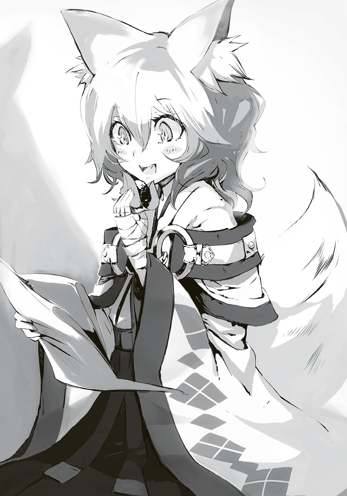
うん、いい。そう思ってさらに一口いこうとしたら......歯がかちりと合わさる。
......満面に笑みを浮かべたユニが俺の喰いかけのおはぎを己の口に放り込んでいた。
「なぁ、ユニ......」
「おぬしの分は今ので終いじゃ。握り飯を喰うといい」
......ユニほどじゃないにせよ、俺だって甘味は好きなんだけどな。
幸せそうに笹についた粒あんを、その舌先でペロペロしている様が少しイラッとくるので、俺は馬の横腹を蹴って駆け出した。
横乗りのユニが慌てふためくのは、少し面白かった。
次にこの地を踏むのは、いつになるだろう。雪道を駆け行く最中、そんなことを思う。
「雪で道が塞がっているから無理なんだけど、両親の墓参りもしたかったな」
「胸の中で手を合わせておけ。親しい相手ならば、むしろそれで十分じゃよ。......それよりもう少しゆっくり走らせろ！ おはぎが潰れてしまうぞ！」
親しい相手ならきっといつだって傍にいてくれるはずだから......そういうことらしい。
俺はユニに従い、馬を走らせながら胸の内で手を合わせた。
――父さん、母さん......俺は、本当にあなた達の子供ですか？
腰に佩いたナマクラが、カタリと音を立てた。
２
無数の隔壁により強力に守られた総本山の地下数百メートルにおいて、襲撃事件以来数十回目となる会議が開かれていた。とはいえ、イリスが参加したのはようやく今回ので二度目だ。
罌粟の相方として本来ならば全てに参加していないといけないのだが、さすがに前の戦闘の消耗が激しく、無理をすると命に関わるような状態であった以上、どうしようもなかった。
敵にやられたのではなく、自分の陣能力の影響で自らの体が傷つき、さらに力の使いすぎで生命力が枯渇して死にかかるなど、笑えるものではない。
一応、代理としてアリアドネに臨時に特別な権限を与えて会議に参加させていたが、案の定、当の本人は古代の衆道本を地下最深部にて半永久的に保存し、かつ、複製本の制作を総本山の総力で行うべきであり、また人類発展のためにも全世界規模で才気あるクリエーター達を保護し、応援する必要があると熱弁を振るっていただけの、ゴミ屑だったらしい。
実質的に会議に参加していたのは、アリアドネの部下で、地下に入ることをこちらも特別に許可したミウラであった。
元々アリアドネは遠方の国における第二王女だ、仕事に期待をする方が間違っていたのかもしれない。落ち着いたらミウラと立場を逆転させようと、イリスは心に決めていた。
天板部がモニターとなっている巨大な円卓を九人の議員と、杖を突いているイリス、そしてそんなイリスを支えるようにしているミウラが見つめる中、衛星写真が映し出される。
広大で、異様に深い森。だが、イリスの目には何か違和感があった。ただ、それが何であるのかまではわからない。
――我が部署の総力を挙げ、幾度も確認したが......やはりファリスを始めとしたリベルテンの敗残兵が逃げ込んだのは、ここしかないという結論だ。――会議前に連絡を受けたので、衛星群を使用して調べようとしたのですが、森が深すぎてとても上空からのスキャンは難しく、詳細は不明でした。――直系一〇キロほどの盆地を占める森ですが、確かここは......。――あぁ、アレだ。古代の大戦の初期頃、陣能力ではなく、科学兵器で作られた巨大クレーター跡ですな。その影響で植生が大きく変化し、独自の進化をしているとか。
話を聞いていてイリスは、先程自分の覚えた違和感の正体を察した。真上からではわかりにくいが、横から見れば一発だろう。......この盆地の森、やけにこんもりしているのだ。
議員達に尋ねてみれば、巨大樹木であるセコイアの木のように、一部の植物群が異常成長しているらしい。その関係で世界でここでしか採れない木材もあるらしく、人も相応の数が住んでいるようだった。
――とはいえ、一部の樹木が巨大に成長し過ぎたがために太陽光が地面まで届かず、豊かな土壌とは言えんようだが。――一種のみの繁栄は衰退の前兆に他ならず、ほどほどの争いによる栄枯盛衰こそが平和であり、自然なのだ。
確かに、と、議会に小さな笑いが漏れた。こういうどうでもいい話が続くから会議が無駄に長引くのだ......が、さすがに今回ばかりはイリスも議員達を怒鳴りはしなかった。
言い合いをする体力すら、今は惜しいのだ。
「殲滅部隊を派遣し、この一件に決着をつける。本来であればわたしが行くべきだろうが、このザマだ。罌粟様のもとを離れるのも問題がある。......ミウラ、即座に編制及び派遣は可能か？」
「二つの理由から正直しんどいですね。一つは私がまだ人員の陣能力、及び、それに関連した戦闘能力を把握していないこと。......資料が皆無ではどうしようもないですよ、コレ」
陣士にとって、どんな陣能力を持つかは当然ながら極秘の情報であり、戦闘を主とする者は情報流出が命の危機に直結するといっても過言ではなかった。そのため当人達が総本山へ申請しているものの他に焼き入れている陣があるのはある意味において当然であり、それ故に陣士個人の戦闘能力の把握というのは困難を極めていた。
大抵は管理職の者が個々人の活動を見て、能力を大凡予想し、それを次の代へ口伝するというおぞましいほどのアナログ的手段が用いられていた。
「そして、もう一つは......というか、こっちの方がさらに問題なんですけど......まともに殲滅部隊を編制するには人員が足りません。総本山内外における防衛ライン形成で戦闘可能な陣士は使い果たしています。ここから引き抜いて部隊を編制するとなると......」
――今回は初手でかなりの人数が減ったからのぅ。――内通者が多かったのも理由だろう。――急造した陣士は？ ――おい、無茶を言うな。一カ月前から募集を始めて、あらゆる教育課程をすっ飛ばしての促成栽培だ。まだ右も左もわからん新人を投入するには早すぎる。――だからこそ、パートナーには前の戦いで片割れとなってしまった経験者と組むように推奨したのではないか。――運命を共にする相方をすぐに決められん者の方が多いじゃろうて。――どちらにせよ、だ。見極めが簡易的なものであった以上、リベルテンも多く入り込んでいるに違いないのだ。ヘタな編制は難しいぞ。――ではこのまま奴らが逃げきるのを見過ごすと？ 位置を把握できている今こそ今回の戦いの決着を付けるチャンスというものではないか。
「......ふむ。こういう時に捨て駒があると楽だが、ミウラ、府津羅はどうしている？」
「あ、アルクさんなら今休暇中で故郷に......」
この状況で!? 思わずそう口を衝いて出そうになったものの、それが会議室の空気を震わせる前に、部屋の隅にいたアリアドネが「あっ」と声を上げて注目を集めた。
「そういえばアルク君達、その盆地に向かうって連絡来てたよ？」
議会の空気が固まり、誰もが視線で「どういうことだ？」と問うのだが、アリアドネは一切それを気にすることなく手にしていた本に視線を戻――。
「本に戻るな！ 議論に参加しろ！ そのクソデカイ耳と尻尾をもぎとられたいか!?」
「んもぅ、今いいとこなのに。......府津羅流の現宗主のお兄さんに会いに行ったけど、入れ違いになったから後を追うんだって。鵺退治の依頼が云々かんぬんってあったから、逃走したリベルテンの連中が引き連れてた鵺を駆逐しようとしているんじゃないのかな？」
――ということは、かの陣士殺しの府津羅流の一派、それも宗主がこの場に？ これは......使えるぞ。――流れはこちらに来ている。――少数の陣士でもいい、急ぎ人員を送り込み、府津羅を利用すればリベルテンを叩ける。そのアルクという猟犬、確か府津羅宗主の弟だったな。であれば交渉役としても適任だろう。――だが連絡手段がないぞ。――通達可能な出先機関にいる陣士に伝言を......。――リベルテンが隠れ潜んでいる場所に連絡要員を？ 死体が増えるだけだ。何よりリベルテンの内通者の可能性を考え、そのアルクとやらも近づいてくる者を警戒するだろう。すんなり受け入れるとも思えん。
きわどい。正直、イリスはそう思った。府津羅流は陣士殺しで名を世界に轟かせ、歴史にその名を刻んだ一派だが、大抵は烏同様に不意打ちである。とはいえその実力は多くの逸話が証明しているし、大昔の宗主は総本山の防衛線をぶち抜いて罌粟と相対するところまでいっていると先日聞かされもした。
また対鵺戦において、それも巨大なそれを相手にするには刀はあまり有効と言えるものではない。......いや、だからこそ、それを陣士が補えば......。
可能性は低いが、全てがうまく嚙み合えばいけるかもしれない。だが、嚙み合うのか。しかもその鍵となるのがあの犬である。幾度も死なせるつもりでわざと困難な任務を与えてきたが、クソ生意気にも生き残ってきた。面白くはない。だが、使えるのならば......。
「ミウラ、防衛線への影響があまり出ない程度に殲滅部隊を編制しろ。多少の穴は目を瞑る」
「あ、はい。では、アルクさん達は放置ということで？」
「いや、それも利用する。あの男らと面識のある〈飛〉が使える戦闘可能な陣士を一組でいい、即座に送り込んでリベルテン討伐に当たらせろ。可能ならば府津羅流一派を利用して、だ。報酬は金で良ければ言い値で支払う。衛星群に府津羅......紛らわしいな......猟犬アルクとその相方を探し出させろ。アリアドネ、伝達があった時間から逆算して大凡の位置を割り出せ。それぐらいは働け、本を取り上げるぞ」
アルクと府津羅をリベルテン残党にまず当てる。それで駆逐できれば良し、出来なくとも足止めにはなるはずだった。そして殲滅部隊で......この盆地の森ごと消滅させればいい。
誰もがイリスの言葉の裏にあった真意を読み取ったのだろう。会議室の空気は一瞬にして張り詰めたものになった。本を胸に抱いて怯える顔をするアリアドネ以外、だが。
イリスの決定より一時間が経過して、事態は予想以上に複雑なものへと変化していた。
「ミウラです。お連れしました、入室します」
扉が開き、議員達が退室してガランとしていた会議室にミウラと、そして若い陣士が二人、入ってきた。
イリスが円卓から視線を移してみると、若い二人は思いの外落ち着いてる。
初めて見るであろう活きた古代技術の塊、その内側にいるのだから、いつぞやのアカのように小うるさくするのが普通だと思うが......肝が据わっているようだ。
「本来であればお前達のような者が来ていい場所ではないし、呼び寄せるつもりもなかったのだが......状況が変わった。府津羅どもと接点があり、身元が明らかで、リベルテンとの内通者である可能性も低いと判断されたがために特別に通した。......よく来た、浜菊憐、白妙菊」
白妙はそこが居慣れた場所であるかのように、主人である浜菊の背に寄り添うばかりで辺りを見回しもしていない。イリスからするとそんな白妙の方が、腕を組みつつ不遜に室内を見回す浜菊よりも、戦士としては格上だと読んだ。
陣能力はここ最近の者達の中では浜菊が飛び抜けて高く、先日まではぶっちぎりのトップであったが、あくまでそれは適性の話だ。白妙が今も手にしている大薙刀を見るまでもなく、彼女は武芸を仕込まれ、その静かな所作の全てに鍛錬が滲み出ている。陣への適性と、戦士としての適性は別物だ。
「それで？ あたし達にアルクなんかへの伝言をやれ、と？」
イリスに対してあからさまな不満を向けてきたが、正直そんなものはどうでも良かった。
「そんなところだった。一時間前まではだ。......衛星群で......あー、空に設置してあるカメラ......面倒だな、クソ！ ともかく空の上から古代技術で奴らを探したところ、妙なものを捉えた。それがお前達をここまで通した理由だ。地上で言える話ではない。......とりあえず、見ろ」
イリスが指示をすると、円卓の天板に馬が走っている映像が映る。直上からのもので、画質もあまり良くはないが、それでも碧いマフラーが靡いているのがかろうじて見て取れるため、アルクだとわかるだろう。またアリアドネの算出した位置とは大幅に違ったものの、馬であることを踏まえると妥当な位置でもあった。
これだけならば、まだいい。馬を使っているせいで今すぐに出発しても彼らが盆地に入る前に合流できないのが辛いところだが......まだいい。
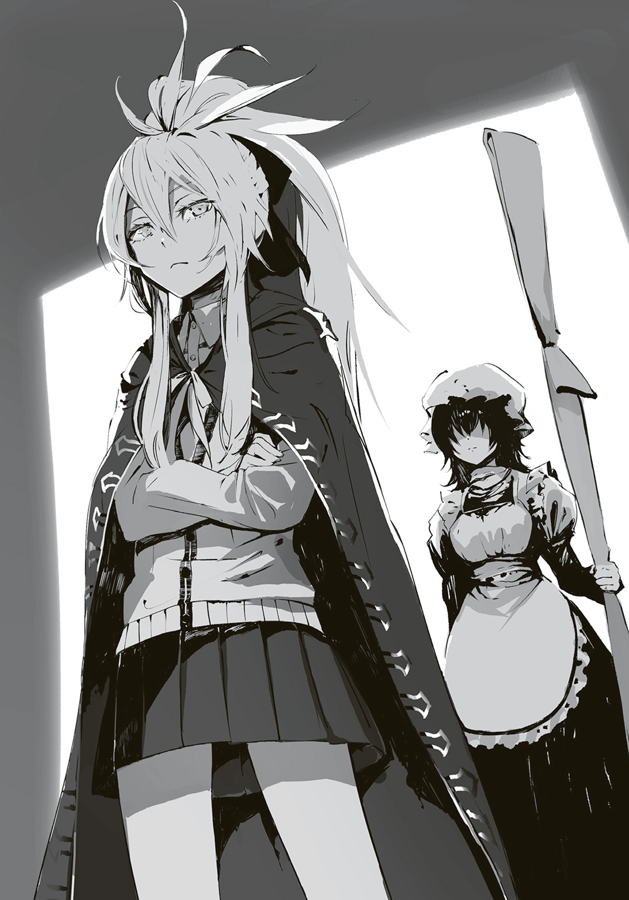
本当の問題は、アルク達とは違うところにあった。
「バカどもをいくら見たところでどうこうなるものじゃない。注目すべきは、この府津羅どもに付随して移動を続けている奴だ」
イリスが杖で指し示したのは、アルク達から数百メートル離れた場所にある森の中であった。かなりわかりにくいが、森をしばらく見ていると何かが動いているのがわかってくる。木から木へ、人にしてはかなり早い。
「......猿、ではない？ となると烏かしら」
「そうだ。足跡を残さぬようにあえて木の上を行くのは烏の特徴だが......さすがに空から見られているとは想像もしていないだろう。よく見える。......問題はこれが府津羅の屑どもを完全に捕捉していることだ」
「烏ならば殺せばいいかと」
「普段ならな。だが、リベルテンが出張った今になると関係が複雑だ」
「陣士殺しを生業とするがために、リベルテン対策にも活用できる、と？ たかだか一匹。殺ってしまえばいい。影響は少ない。違います？ ん？」
「問題は、この烏が誰の、どんな命を受けて動いているか、だ」
「烏に総本山の内通者がいるとは初耳です」
浜菊の頭の回転は悪くないようだ。この状況で問題だとなると、その結論が最終的に出てくるのは当然であるが、一瞬の間を置くこともなく出てきたあたりが彼女の優秀さだろう。
だが、現実はそれを上回っているのだ。イリスが鼻で笑った。
「ある意味において正解で、ある意味で間違いだ。今、調べているところだが、〈伝〉などの陣能力で素早く、かつ徹底的に情報を管理している総本山と違い、烏内の情報は常に錯綜している。確認するのに時を喰う。それを待っていては機を逃すために、お前達には先に出立してもらわねばならない」
「......意味が、わかりませんが？」
「烏は、総本山の下部組織だ」
浜菊が顔を歪ませ、白妙でさえピクリと動くのを視界に捉えながら、イリスは続ける。
はるか昔、罌粟が総本山とは別に作った攻性組織は一般人と陣士を含み、その圧倒的な戦力でもって世界各地で悪行を重ねていた陣士達を狩りに狩っていた。言うなれば、今では数組となってしまった『猟犬』のシステムとして近いものである。
古代の大戦争時の組織が当時はまだ残っており、それらを打ち砕き、陣での戦いを世界からなくすために、平和のために......そんな組織であった。だが、当時はまだ強力な適性を持つ者達が当たり前に跋扈していたがために戦闘は広範囲かつ強力なものとなり、被害はおぞましいものが出たのだという。
その結果、出て来たのは――。
「陣士殺しの一般人ども......ですか」
「そうだ。罌粟様の配下も、罌粟様の敵も関係なく、ただひたすらに陣士に恨みと恐怖を抱く者達だ。それが世界各地で無数に現れ、無差別な被害が出始めていた。そこで罌粟様は......これらを管理することにしたのだ」
「皆殺しにせず？」
「金銭を理由に動く組織ならどうとでもなる。だが、宗教や信条で動く組織は完璧に潰すことはできない。炎を叩いたところで潰れず、飛散し、被害は大きくなる一方だし、仮に全てが鎮火したように見えても、熾になるだけだ。叩く手を止めた途端に、また盛り返す。......だから、潰すのではなく、管理し、コントロールするのが正しい。本人達は自分達の意志で動いていると思わせつつ......な」
罌粟の決断後、攻性組織は解体され、陣能力を持たぬ者達だけで新たなる組織『烏』を結成。各地で散り散りになっていた陣士を嫌う者達を次々に併合していき、総本山と世界を二分するとまで言われる組織となった。
それも当然である。烏には総本山のバックアップがあった以上、潤沢過ぎるほどの資金があり、振動鉄糸を始めとした古代技術の提供を受けていたがために、他組織とは一線を画した力があった。そしてトドメに烏に加わらない者達や組織は、総本山の陣士達が秘密裏に叩き、組織として人が集まるのを防いだのだ。
これで烏が肥大化しないわけがなかった。
「それで総本山に敵対する陣士に集中してその凶刃を向けるように人々をコントロールして......っていうならわかる。でも、何故今もなお烏は活発に活動を？ 陣士を狙う者達を併合して、適当にあしらっておけば良いのに」
イリスは浜菊のもっとも過ぎる質問に、思わず笑みが湧いた。
理由はいくつかあるが、一つは総本山内にいるリベルテンを始めとした不穏因子を狩るためだった。敵対組織がいれば突如誰かしらが殺されたとしても、犯行を烏に押しつけられる。実際には罌粟とその直属の者達による粛清であっても、だ。
だが、それに関しては語るつもりはなかった。
「重要だったのは、陣を焼き入れることは力を得る代わりに高いリスクを生み、それ故に総本山へ依存せざるを得ない......とする世界構造を作ることだ。陣士ならば総本山に集まる......そうすることで一括管理ができ、不穏因子を早期発見することも可能だった。また同様に陣士を嫌悪すれば烏に所属するしかないとする明確な考えを提供もできる」
「それらが全て罌粟という一人の人間の手の平の上であることも知らずに......ですね。なるほど、いまいちよく分からなかったリベルテンという組織が見えてきた気がします」
これ以上立ち話が長くなるのは好ましくはなかった。イリスは話を戻す。
「何にせよ、だ。それ故に烏といえども対リベルテン戦のための尖兵として動いている可能性がある。......今回のがそうだった時はかなり面倒だ。実際には協力できる関係であるにもかかわらず、潰し合いになりかねない」
烏でもこの実状を知っているのはごく一部であり、大旦那と呼ばれる幹部でも半数は何も知らずにせっせと陣士殺しに精を出しているはずだった。確率は五分といったところだろう。
「では、烏が単なる敵であれば叩き潰すとして、そうでなかったらどうしろと？ っていうか、どう確認しろと？」
「だから複雑だと言っている。人の話を聞けないのか、殺すぞ」
空気が瞬時に張り詰める。陣士になってまだ新人もいいところの浜菊が怯まないのは大したものだった。実力があるから、というよりは生来のものだろう。
「お前達が現地到着するまでには確認を取り、その旨を伝達する」
「だから、それをどうやって？ 伝達手段がないからあたし達が直接行くしかないのでは。違います？ ん？」
さすがにイリスも沸々とした怒りが湧いてきて、この生意気な小娘の手足の一本ぐらい吹き飛ばしてもいいような気がしてきたが......さすがに、堪えるしかなかった。
これ以上手駒が減るのは総本山にとって好ましいものではない。
「どのみちお前達は〈飛〉の陣を持っていないだろう？ 通信士を付ける。奴らのほとんどには〈飛〉か〈浮〉の陣を焼き入れさせている。お前達の輸送役にして、連絡要員だ。......ミウラ、そちらの選定は終えているな？」
ミウラは、あー......、と頭をポリポリと搔いた。
「終わったというか、終わってないというか......。めぼしい通信士に声をかけていたら、立候補するコンビが出てきまして」
「それならそれで問題はないだろう。自信があるなら、やらせろ。......問題があるのか？」
「あるというか、ないというか......。実はその......コンビのうち一人しか〈飛〉を持っていなかったんです。なので却下しようとしたんですが......今すぐ〈飛〉を焼き入れる、と」
「何だ、そいつは。バカなのか。焼き入れを終えたところで全身の力を使い果たしてしばらく使い物にならないことを知らないのか。時間が惜しい、早く適当な候補者を......」
ミウラは頭を搔いていた手を上げたまま、上を指さした。浜菊が素直に顔を上げるが、見えるのは天井だけだろう。
「それが......飛んでるんです、今、もう」
さすがのそれにはイリスも眉根を寄せたが、志願者の名を聞いた途端に納得した。
確かに噂の彼女ならば、それぐらいの芸当をやってのけられるかもしれない。また何よりコンビ双方が共に府津羅と繫がりがあり、裏切り者の可能性も極めて低い。......申し分ない。
イリスは浜菊と白妙に即時出立を命じた。
３
「遠くから見た時は山にしか見えんかったが......近づいてみても、盆地には見えんの。むしろ外縁部が迫り上がっているせいで丘のようじゃ」
「俺も初めてだけど......凄いな。近くに来ると巨人の森の名前の通り、人間よりもずっと大きな生き物が棲んでいそうだ」
思わず馬の足を止め、壮大としか言いようがない光景に、ユニと二人、しばし目を奪われた。
盆地なのだろう。だが、その盆地である凹みを差し引いてなお、数十メートルもの立派な木々が茂っていた。幹は太く、枝こそところどころに生えているが、そのほとんどは裸であり、葉は太陽光を効率よく浴びようとするがために上の方にしかない。そのせいもあって太い幹は天に伸びる巨柱といった趣である。それが一定の間隔で無数に生えている様は圧巻というに適当で、どこか神殿を思わせるほどだった。
またその枝も普通、この手の巨大樹木では短いものが多いのだけれど、ここの木々はそうではない。枝は長く葉は密度が濃い。隣の木々とまるで手を取り合うようにして互いに絡み合い、支え合っているのだ。そのせいで天然の屋根が形成されており、下は暗く、そして雪もほとんど積もっていなかった。
異様である。その盆地の外は当たり前の植生――ごくごく普通の草木が生え、田舎道が続いているのが余計にそう思わせる。
盆地の中はほとんど日が差し込んでおらず、日中でありながら薄暗い。そのせいもあってか、どこかその盆地に足を踏み入れるのは異界へ入り込むような......そんな不気味さがあった。
「天然の屋根があるせいかの。巨人の森から風が吹いておるが......血の臭いがする」
感覚の鋭いユニだけでなく、俺にもそれはわかるほど......つまり、かなりの量だということだ。鵺の数が多い、そう見るべきだろう。何せ故郷から盆地まで最短ルートを一週間ほどかけてやってきたのだ。少数の鵺であれば、帰路の兄達一行と途中で行き合っていてもおかしくはない。そう考えるに尋常ではない数がおり、手こずっている......そう考えるべきだろう。
敵が強力過ぎて......とは考えられなかった。何せ、あの兄がいるのだ。
馬を走らせる。盆地の中へ、巨木の隙間へ、天然の屋根の下、昼でも薄暗い異界へ。
太陽光が入らないせいもあってか、足を踏み入れた途端にあからさまに気温の変化があった。寒い。だが、空気が冷たく張り詰めている感じがしたのはそれだけではないだろう。闘争の気配と血の臭いが濃くなっている。
この季節である。一晩もすれば血肉は凍って固まり、太陽光もなければ溶けもしないはず。しかし血の臭いがするということは、まだできたての死体がそこらにある、ということだった。
自然と俺は風の流れに逆らうように......血の臭いを辿る猟犬が如く、森の中を進んだ。
日中だが、すでに夕暮れ時を思わせる暗さで......これが夜になればもしかしたら己の手すら見えないぐらいの闇になるのかもしれない。
「できれば日が沈む前に兄さんと合流したいけど......」
「そうじゃな。......じゃが、そうは簡単にはいきそうにないようじゃぞ、アルク」
ユニが頭上に向かって指を差す。その先にあったのは、巨木の枝。それに腸と思しきものが引っかかり、風に揺れていた。
「府津羅の剣には十数メートル上空に臓物を吹き飛ばすような荒業があったかの？」
「人間か、それ以上の生き物のものだな。......まさか兄さんの直弟子の......？」
ユニと共に馬を降りて、靴底が埋まる程度のわずかな雪が積もった地面に足を着け、腸の垂れ下がっていた辺りを歩いてみる。だが、そこに他の肉片等があるようには思えなかった。
そもそも巨大な樹木が育ち過ぎて、日の光が大地まで届かずに小さい草木は育っておらず、どこも基本的に平坦なので馬上からも死体がない予想はしていた。
「鵺をやったにしては、辺りが小綺麗過ぎる。死体がないのはおかしい......やっぱり兄さんの直弟子の、かな」
「何故、そう思うのじゃ？」
「兄さんなら、地面が凍っていても無理矢理にでも埋葬すると思うから。上の腸は気がつかなかったか、取れなかったんじゃないかな」
「巨人の森には人が住んでおったのじゃろ？ それのやもしれんぞ」
「だとしたら、鵺が喰い散らかした跡があるはずだ。兄さん達が殊更に哀れんで埋葬したとしても、鵺の死体があるべきだろうし」
「......ふむ、なるほどの」
俺はユニを乗せたまま馬を引いて進むことにした。辺りの木々は多く、幹は直系が六～八メートルはあるため、どこかに鵺が隠れていて、いつ襲撃があってもおかしくはないのだ。馬上で奇襲は受けたくなかった。
風上へ、血の臭いがする方へと進む。雪面はところどころ人か獣が走り抜けたような跡があるものの、上空から時折少量の落雪があるので、痕跡を辿るには心許なかった。
道中、明かりが見えたのでそちらに向かう。どうやら、木が三本倒れ、屋根となっていた枝葉がぶち抜かれたようだ。燦々と日が差し込んでいた。
「のぅ、アルク。これは......まさかと思うんじゃが......？」
その日差しの中にあったのは、数人分の死体である。屋根に穴が空いたせいで雪が降り積もり、その多くを隠しているものの、ところどころで上空に伸びる手足が顔を出していた。
そしてそのところどころに鵺らしき触角や、人ではありえないような巨大な肉片が落ちていたりもするので、正確な死者の数はわからなかった。
血の臭いの源流はここのようだ。量が多く、また同時に屋根が破られて日が差し込んで凍る速度が遅かったのか。
激しくやりあっていた。ただ問題は......。
俺は雪面から突き出されていた男の腕を抜き取る。凍りついている切断面は見事なもの。そして、そいつが着けていた手袋を匕首で切り裂き、剝ぎ取ってみれば疑念は確信に変わった。
「多分、ユニの直感通りだ。これは......」
「待てアルク......音がする。馬じゃ、二頭」
大きな耳をピクピクさせるユニがどこぞを指さすも、俺に見えるのは薄暗く、ひたすらに太い木々が並ぶだけの空間で、その音も気配も感じない。しかししばらくすれば確かに何かが近づいてくる気配があり、そしてユニの言うとおりの駆けてくる二頭が姿を現したのだった。
乗り手がおらず、生地の厚いコートを掛けられた荷物が鞍の後ろに乗せられた馬が一頭と、それとは別の馬に跨る重装甲に身を包んだ騎士のような男。
重装甲の男は身長二メートルを超え、横幅もかなりのものがある。全身を完全に覆うその鎧を差し引いても巨漢と言わざるを得ず、左右の腰にそれぞれ帯びた剣もかなり大きなブロードソード......どれ一つ取っても、府津羅流の姿ではなかった。
巨漢騎士は顔を覆う円錐状である兜の面頰を上げており、中年の顔が見えていた。
彼は俺達の前で馬を止めるときょろりきょろりと辺りを見回す。
「そこの眼鏡の、一人かな？」
「なんじゃ、ボクもいるぞ」
「はっはっはっ、小娘の出る幕ではないので数に入れんかっただけだ」
騎士とのやり取りでユニは不満げに尻尾を擡げるのだけれど......いまだにユニが女の子扱いされて怒る時と怒らない時がある理由がわからないな......。
「眼鏡の、腰のものからするに府津羅流とお見受けするが、よろしいか？」
騎士が馬から降り立つと、背負っていた一メートルほどの金属棒の束らしきものを手に取る。
「そうだが、それが何か？」
「何かと言われると困るのだがな、ははは。......とりあえず死んでくれ」
騎士が動く。束にした金属棒を空に放ったように見えたが、実はそれらは全て端々で繫がっているようだ。手品でも見ているかのように、バラバラに飛び散りそうだった鉄の棒は瞬時に一本の長大な槍へと変化。刃渡りは一メートルに達し、その全体のリーチ、実に八メートルに及ぼうかという異様なもの。それが、俺を猛烈な速度で突いてくる。
匕首と凍った腕を持ったまま、俺は身を捻るようにしてかわすのだが、即座に二撃目が来る。
大したものだった。パイクは木製柄のそれであってもここまでの長さがあれば五キロには達する。それが全鋼鉄製となれば少なく見積もっても二〇キロ、折りたたみのギミックを取りつければさらにいくだろう。
それで素早く二連撃ともなれば驚嘆に値するほどの力だが......果たして......？
予想外の二連撃であったことで突き出された穂先はさすがにかわせそうになかった。
俺は手にしていた凍っている腕でパイクを横から叩きつける。重量と勢いからしてそれで弾き飛ばせるものではないとわかっていたので、むしろ俺の方が反動で横へと飛んだ。
腕を捨て、雪面を転がり、間合いを取る。
「答えてもらえるかわからないんだけど、俺が殺される理由を訊いても？」
騎士は軽々とパイクを持ち上げると、口元に笑みを作り、そして面頰を下ろす。
「府津羅流を倒すために招集されたからさ。オレを破れる剣士は世界中どこにもいないからな。......だいぶ遅れてしまったようだが」
騎士は辺りの死体を見て苦笑したようだったが、面頰を下ろしているせいでくぐもった息づかいが聞こえるだけだった。
俺はユニと目配せする。......そのユニの大きな黄金の瞳からすると、彼はとっくに確信していたようだ。そして、俺も今の言葉で確信が持てた。
ユニが辺りを見渡しつつ馬から降りると、それとなく騎士の後方へと向かっていく。
ユニはすでに意識の外なのか、騎士は気にしている様子もなかった。
「まぁ、そんなわけだ。眼鏡の、悪いが死んでもら――」
「アルクだ」
「......なに？」
「名だよ。俺はアルク。そっちは？」
「おぉ、そうかそうか。名乗らないのは失礼というものか、オレはアダムだ。騎士道か武士道か知らんが、大事だものな」
「一応言ってみただけさ、気にしなくていい。......アダム、あんたは剣士じゃない」
面頰越しにでも彼が目を見開いたのがわかった。だから、意識して悠々と匕首を懐に収め、そして、ナマクラにそっと手を置く。
「リベルテンだろ？」
「何故......それを？」
「総本山だ」
同時に動く。パイクの猛烈な突きが来る。だが、それは初撃のみ。俺は一気に間合いを詰め、長いパイクの内側へと踏み込んだ。
アダムは即座にパイクから手を放し、バックステップしつつ両手で左右の腰に備えられていた大振りのブロードソードを軽やかに抜く。それで左右の刃を巧みに振り回し、半径二メートル以内に近づく全てを叩き落とさんとする。
......なら、それはそれでいい。俺はナマクラの柄から懐へ手を移し、小瓶を二つ取り出してアダムへと投げつけた。それは空中で切断され、中身が辺り一帯に飛び散るも、その多くが鎧へと飛びかかる。ダグラス、着火。空気中に飛び散っていた雫と、この寒冷の中でなお即座に気化した可燃性液にその火が燃え移り、辺り一帯を爆発的な炎火が包む。その刹那の間に、俺は〈炎〉〈波〉の陣を発現、発動。アダムの鎧に炎を喰らいつかせた。
たとえ全身を鎧に身を包んでいるとはいえ、炎に包まれるのは本能的なとてつもない恐怖だ。しかしこのアダム、それでもなお雄叫びを上げつつ間合いを詰めてくる。
今度は俺が下がって距離を取るのだが、彼は右手のブロードソードを投げつける荒業に出る。
突如飛来したそれをかわしつつ、俺はその柄を摑み取る。しっかりとした造りで、ずっしり重い。――やはりだ。
「まさか、まさかまさか総本山とは......。これは油断したぞ。府津羅流を使う陣士とは驚きだ。しかし、何故わかっ――たぁッ!!」
アダムは踏み込み、ブロードソードを投擲したことで空いたその手でパイクを拾い上げる。だが、俺はまだそのパイクの懐、即ち間合いの内側。通常のこの手の状況ではパイクの側面で俺を叩くことぐらいしかできないのだが......彼がパイクを構えた瞬間にわかった。
背後から、来る。
アダムに背を向ける形になるものの俺は踵を返して、ブロードソードで迫り来たパイクの先を弾き上げた。パイクは蛇のように空中でうねり、そして直上から突き刺さんとなおも迫る。
「〈軟〉と〈鉄〉......いや、〈柔〉と〈鋼〉か？」
直上からの一点攻撃はたやすくかわせるが、それと同時にアダムが左手一本でブロードソードを斬りつけてくる。この同時攻撃というのが面倒だったが、凌げないほどではない。
パイクをかわしつつ、俺もまたブロードソードでアダムの一撃を受け......ようとしたが、即座にダメだと悟った。受ければ、死ぬ。
俺のブロードソードが、アダムのそれに触れた瞬間にふにゃりと溶けたのだ。
......〈柔〉の陣の力だ。
俺は剣を捨て、地面を転がって間合いを取り、雪面に膝と手をつきながら......鞭のような、いや、長大な蛇のようにその切っ先を擡げるパイクを持つアダムへと身構える。
「それで、眼鏡の。何故、オレがリベルテン......いや、陣士だと？」
「アルクだよ、アダム。......理由は二つ。馬を駆けさせて現れたけど、あんたの体格とその全身を覆う鎧に武器......それだけで二〇〇キロはいく。それに旅の荷物を考えれば、とてもじゃないが馬は走れるものじゃない。〈浮〉〈軽〉......何らかの陣を使っていると見るべきだろう」
「......なるほど、馬の積載量から読まれたか。盲点だった、勉強になる。ではもう一つは？」
「先にこちらの質問に答えてもらおう。府津羅流を倒すため、ということは......この地にいるという鵺は、リベルテンのものか」
「なに？ 確かにリベルテンの指揮下にある鵺だが......お前、奴を追ってきた罌粟の犬ではないのか......？ ふむ、事情がよくわからんな。もしかすると互いに戦う必要のない相手だったのか。だとしたら、不運だな、眼鏡の。......さて、今度はこっちだ。問おう。陣士と知れたもう一つの理由は？」
「どんな剣士でも勝てない、あんたはそう言った。......けれどそれは、ありえない」
人は、基本的に誰もが素直だ。ちょっとした言葉のニュアンスに真実が滲む。
アダムは自分を破れる剣士がいない、と言った。もし本当に彼が剣士であれば自分が最強だと言うだろう。でも、違った。何故か。そこまで考えれば自然と答えは出るものだ。
彼は剣士ではないからだ。陣士であり、そして〈鋼〉〈柔〉を刃が触れる瞬間に発動させることができるのを見るに、迫り来る剣の全てを軟化させられるに違いない。確かにこれだと普通の剣では勝てない。
けれど、陣士だと俺が確信したのは、別のところだった。
「絶大な膂力と肉厚な鎧、長大な武器をどれだけ扱い熟せたとしても......俺の兄、府津羅頼雅の剣を止められるわけがない」
「......ほぅ、これは驚いた。最強と持ち上げられる、あの男の弟が陣士とは。しかし何より驚きなのは......ははっ、オレの腕を舐めるとは！」
パイクが来る。左手一本で振っているくせに猛烈な連続突き。横によければ即座に軟化し、その先端をひん曲げて脇腹あたりを刺しに来るのだろう。下がるしかなかった。
「武芸に長けた上で陣能力を扱う、それによりオレはどんな剣士にも負けぬ男となったのだ！ だが、陣能力がなくとも負けはせん!!」
「ではその言葉、確かめてみようかの！」
ユニの声が響いたと同時に、パイクが突き出され、その勢いに引っ張られてアダムがすっころんだ。......背後に近づいていたユニの〈陣〉〈封〉により、奴の能力が封じられたのだ。
俺が総本山の陣士とわかった上でなおユニの存在を意識していなかったのを見るに、この男、剣士殺しが板に付きすぎている。陣士戦は得意でないと見た。
アダムが立ち上がり、パイクを振る。その一振りに驚きが溢れていた。
「な、何だ、この感じは。鎧も得物も重い、だが、こんなに軽い......何だ、これは！」
慌て、興奮するかのように喚くアダムを見ていると......ふと、気配がした。
見せてみろ、そう言っているかのような、そんな何者かの気配。緊張が走りそうになるも、体を硬直させることなく、柔らかなままで俺は口元に小さく笑みを作った。
「豪語した剣士としての腕、見せてみろ、アダム」
「......なるほど、普段陣に吸い取られている力を止め、代わりに持ち主の身体に力を充満......そういうことか！ ふはははははっ、それでは何の意味があるかわからんではないか!! 少なくともオレにはな!!」
せいぜいパイクを蛇のように動かすことができなくなった......その程度の認識のようだが、それは違うんだ、アダム。別にお前の陣能力に飛び道具がなかったとしても、構わない。
ただ、これでお前を......剣で殺せる。それだけだ。
先程よりも勢いを増したパイクの連続突き。俺はそれを見切って、再びその懐に踏み込んだ。
アダムがパイクを回し、石突きで俺を打とうとする。
ナマクラを抜く。居合い抜き。
その刀身が現れた瞬間、周囲の気温が急激に下がった気がした。俺の背筋にすら悪寒が走る。
迷いを斬れる、そんなふうに研いでくれと頼んだ。その結果が、これだった。
パイクの下、脇の下......それらを俺は抜け、馳せ違った。
「......ほぅ、うまくよけるものだ、眼鏡のッ！ ん？」
確かに、その通りなのだ。頼んだ通り。ナマクラは、俺に迷う暇をくれはしなかった。
「アルクだ、アダム」
俺の背後で、アダムがさらに何かを言って振り返ろうとした気配があるも、その直後に臓物が零れる音がし、そのデカイ図体が二つになって雪面に沈む。
右手一本の斬撃である居合い......それでなお、パイクを、肉厚な鎧を、そして男一人をナマクラは容易く斬っていた。血すら飛ばすことなく、ただ鮮やかに。
彼の体が痙攣し始めたのを背中に感じつつ、斬り抜いたまま残心で体を緊張させていた俺はそれを解き、ナマクラを軽く振ってから鞘に納めた。
「......プロの研ぎが入るとこうも変わるものかの......明るい中じゃと少し引くレベルじゃ」
目元に手の平を当て、アダムを視界に入れぬようにしつつ、ユニは馬を引っ張ってくる。
「俺が道場で抜くのを躊躇ってた理由がわかるだろ。......こんなの、気軽に抜けない。円にも向けられない」
「......それ、驕りだから。......ちゃんとかわせたはず」
声は、粉雪のように上空から降ってきた。見上げてみれば......声に続いて飛来する、鮮血と肉片。雪面に沈むそれを見やれば、四肢断絶した裸の男なのだが、四肢断絶しているだけでまだかろうじて生きているようだ。切断された足に〈消〉の陣が見える。
「これは......どういうことじゃ、円」
木の上を生活の場とする小動物のように俊敏に、そして糸にぶら下がる蜘蛛のように、鉄糸をうまく活用して、円は木の幹を伝って降りてくる。マドカと名乗っていた時の格好ではなく、艶やかな黒髪の美しいいつもの彼女に黒い戦闘服だった。
「木の上からアルク達を狙ってるっぽかったから、とりあえず殺してみた。......友達？」
ユニが切断された腕を蹴りつける。何か、透明な......ガラス製の棒を握っている......？
「少なくともボクにはガラス吹き矢で狙ってくる友人など持った覚えはないの。それにアルクは元々友達はおらんし......ぅなあぁ!?」
俺は躊躇いなくユニの大きな耳に指先を突っ込んだ。彼の口を封じるには何よりもこうする方が手っ取り早い。
ユニの耳の中は複雑に思えるが、案外にシンプルだ。とはいえ、指をあんまり押し込むと傷をつけかねないほどにデリケートな世界でもある。そのピンクのしっとりとした柔肌を傷つけない程度に、指の腹で刺激してやった。
ユニは喘いで、体を震わせながらビクビクッと踠き、そして大きな尻尾を自らの足に沿わせるようにして内に巻きつつ、俺の手を摑んで引き離そうとする。それをされる前にクニクニと指先を動かしてやれば、彼は「ふひっ！」と大きな声を出して、腰を抜かして雪面を転がった。
ユニは目を少し潤ませつつも顔を真っ赤にして、俺の体をひっぱたいてくる。
「友達がいないとか噓言うなよ、俺にだって......」
「うるさいの！」
ユニは俺の突っ込んだ人差し指を自らの袖で拭う。俺達の耳もそうだけれど、耳の穴の中は少ししっとりしているというか、油ぽいから、それを気にしているのだろう。
拭かれた指の匂いを嗅ぐと、ユニは顔を真っ赤にしてブーツで蹴ってくるので、俺はぽんぽんと、ユニのクセッ毛を叩いて謝った。
......ユニの耳はハーブオイルでマッサージしているせいなのかしらないけれど、特段良い匂いというわけではないにせよ、何かちょっと、癖になる匂いがする。
ユニは八重歯を覗かせてなおも怒り、自分の小さい手でくにくにと耳を揉んだ。
ふと、視線を感じて見てみれば......何故だろう、何か円が、少し切なげな顔をしてこちらのやり取りを見ていた。
「そ、それで何なんじゃ、こやつは？ この気温で裸でおったとは正気か......あ、〈消〉で自らを消して、暗殺を......？」
「そこで両断されてるデカ物の相方......だと思う。馬二頭、空いている馬には小さいサイズのコートがあった。でしょ？」
目を引く派手な奴と意識から外れやすい地味な奴......陣士のコンビにおいては相性の良い組み合わせだ。実際、俺とユニもそれである。
〈消〉遣いの陣士は、恐らく、俺が単なる剣士だと思ってアダムに任せるつもりだったのだろう。二人が最初から全力で来ていたら苦戦したかもしれない。
「しかし、円、よく気づいたの。〈消〉の陣で姿は見えんかったじゃろ？」
「別に。気配までは消えてなかった。それに白い息が見えてたらとりあえず攻撃するでしょ」
それを聞いていると、運が良かったのだと知れた。円にとってはこの〈消〉遣いの陣士は、容易い相手だったことだろう。烏の身体能力に加え、彼女らにとって慣れている木上、そして振動鉄糸による遠距離戦......相性がいい。逆に俺が相手をするとなれば、向こうに距離を取られれば、吹き矢如きにやられはしないまでも倒すに至らなかったかもしれない。
「いきなり攻撃して四肢を飛ばすのもどうかと思うがの。......しかし、それよりわからんのは......おぬし、何故ボクらについてくるのじゃ？」
「......それは、別に......私の、自由だし......」
「暇人にもほどがあるじゃろ。というか、弟が不憫すぎるわ」
飄々としていた円の顔に、あからさまにムッとした表情が浮かび、顎を引いて少しばかりユニを睨んだ。
「斛のせいでここ最近ろくに仕事ができなかったし、その穴埋め。当然のこと。......あとは、まだ頼雅さんにお会いできていないから......」
二人のやり取りをよそに、俺はアダム戦の際に投げ捨てた凍っている腕を拾い上げた。
剝いだ手袋の下にあったのは......陣の焼き印。
アダムには馬と言動から予測したように言ったけれど、実はこの死体を見た瞬間に、すでにリベルテンが場にいるのを想定していた。鵺が大量に跋扈するエリアに陣士の死体......総本山から撤退した連中の一派だと思いつかないわけがない。
「ほう、あの美丈夫にそこまでして会いたいのかの。なら、これで用は済んだわけじゃ」
円が眉根を寄せて訝しげな顔をする中、ユニは森の奥を見やる。......そう、そっちだ。
円もまた訓練を積んだ身だろうが、それでもユニの耳の前では致し方ない。俺のように、この気配にだけ特に敏感とかでもないとまず見つけられないだろう。
「お久しぶりです、兄さん。......気配を隠すなんて、らしくないマネはやめてください」
俺は薄暗い森の奥へと声を投げた。言葉は返ってこない。けれど、気配を隠さなくなり、一気にその存在感を明瞭にする。
不遜でありながらも、どこかそれも仕方ないと納得してしまうほどの力強さ。そのくせして荒々しさはこれっぽっちもない......そんな、圧倒的で、静かな気配。
これに十数年、怯えて生きてきたのだ。羊が肉食獣の声に敏感なように、俺の体は誰よりも早く正確に兄の気配を読み取れる。
「バレていたか。邪魔にならぬよう見守ろうと思っていたのだが、気を遣わせてしまったな」
わかっている。だから、俺もあえて〈土〉の陣を使わずに、ナマクラだけでアダムを倒したのだ。最後に兄と会ってから、俺がどれだけのものを斬ってきたのか、どんな戦いを経てきたのか、どう成長したのか......それを見せるために。
「まるで幼子の剣を見ているようだ。会う度にお前は見違えていく」
森の奥から現れたのは、ともすると華奢な女人とさえ見える男。ユニが女扱いされてもなお尻尾を振るほどの美丈夫。長い黒髪を後ろに束ね、同色のブーツにパンツ、そこにファーの付いた白いジャケットを羽織ったその姿。腰に刀を一振り佩いているだけで、他の武器を一つとして持っていない......見る者に宣言するかのような、その剣と己の腕への絶大な自信。
我が兄、府津羅流宗主府津羅頼雅、その人だった。
当初は、どこか縋るような気持ちで兄に会いたかった。
けれど、途中から問いただすために目的が変わった。
それだというのに......兄の姿を見た瞬間、俺は思わず嬉しさと照れが胸に湧いて、思わず雪面へ視線を落としてしまった。
きっとその顔を見た瞬間、どれだけ強く意識しても俺は難しい顔をしてしまうのだろう......そう思っていたのだけれど......。
でも仕方ない。兄が今着ているのは......俺が手紙と共に送った冬服一式なのだ。
「すまん。折角贈ってもらった服、少々血で汚してしまった。おれのではないのだが......」
「いえ、着ていただけただけで、嬉し......何だよ、ユニ、円......」
若干いがみ合っていた二人が、今は肩を並べてどん引きしたような顔で俺を見ていた。
「単にその、なんじゃ......アルクのブラコンをモロに見たのが久々だったせいかの」
「アルクのあれ、前から？ ......そう、以前は気がつかなかった」
俺は唇を嚙んで赤面しそうになるのを堪えつつ、不服である、と表情に出して二人に向ける。
「べ、別にいいだろ。兄さんのために自分が選んだ服を着てもらってるんだから......そりゃ、嬉しくもなるだろ」
「まぁ、わからんでもないんじゃが......若干、その、な。うむ、キモいな、と」
躊躇いがちの割にスパッと言いやがったな、ユニ......。
「この服は頗るいいぞ。動きやすいし、上着は風を通さない。強いて言えば少々地味だが、アルクからの贈り物らしくて気に入っている」
兄はもちろん、故郷の辺りでは古代の技術や意匠を用いた衣服はほとんど流れてこない。そのため、冬になるとどうしても寒いし、特に足はやたら冷える。それを避けようと厚着をすれば今度は動きを封じてしまうことにもなる。だから、冬でも楽に動けるように、と質とデザインに気を遣って見繕ったのだけれど......地味だった、かな？
白と黒を基調としたものではあるけれど......いや、兄のことだ。好み的には、おかしな柄物を合わせてクソダサくしたいのかもしれない。多分、そうだろう。......ヘタに要望を聞いたりせずにいきなり送りつけて良かった。
咳払いをし、暗闇から明るい開けた場へと出てきた兄に向き直る。
「珍しく手こずっていたようで。......陣士のせい、ですか」
俺は凍った腕をアダムの死体の上へと放り投げた。
「俺を含めて七人で来たが、半分取られた」
そんなに？ と、思わず俺は驚いた。
兄はともかくとしても、兄が引き連れていた者達も剣士として相当な手練れのはずだった。
「鵺の討伐に来て、対陣士戦ですからね。確かに兄さん達とはいえ......」
「いや、それはさほど問題ではない。ここの辺りも、一晩かかったとはいえ、弟子どもの手で処理したようなものだ。どうも盆地の外から次から次へと新しくやってきているようだが、それはいい。......問題は鵺の方だ。如何せん、デカい。大太刀を遣っても刃渡りが足りないのが多くて困った。疲れの出た者からミスを犯して死んでいったさ。......ついてこい、アルク、ユニ、マドカ、おれ達の寝床へ案内しよう。温かい飯ぐらいは出してもらえる」
踵を返して進んでいく兄を、アダム達が乗ってきた馬を集めつつ、俺達は追う。けれど円が少し迷った素振りを見せていたので、俺は彼女に微笑みかけた。
「行こう、円。......不義理にしたこと、謝るためについてきたんだろ」
彼女はしばし俺を見つめ、逡巡した後に、小さく頷いた。
「それもあるけど......。姿、変えてないのに......頼雅さんにバレた」
俺にだってすぐにわかる。だから、兄さんにだってわかるはずだ。
そんなことを言ってみると、円は少し不満げな顔をした。
４
兄さんが寝床としているというのは、巨人の森の恵みを享受していた村だった。
「途中に大量の鵺の死体があって、もしやとは思っていたんじゃが......案の定じゃの」
ユニの言うとおり、あの陣士の死体が折り重なっていた場所からこの村へ来るだけで、数はもちろんだが、サイズもかなりのものの鵺の死体が転がっていた。大太刀で斬り込んだとて一撃では致命傷には及ばない......そんな巨大サイズである。これを無理矢理に屠ったのだから、それは確かに犠牲もやむを得なかったのだろう。
「もう少し早く訪れることができていれば良かったな。俺がいれば......こうなる前に......」
兄の足が止まった場所は......廃村だった。
恐らく二〇〇か三〇〇程度は住んでいたのだろう。基礎部分は石造りで、それ以外は木材で造られた家々の多くは焼き崩れ、また他の幾つかも倒壊し、鵺の死体と共に凍りついていた。
村の中央の上、枝葉の天井は綺麗に円くくり抜かれ、天窓のようにして燦々とした光を取り込んでおり、辺り一帯は夕暮れ程度の明るさがあるのだけれど......除雪する人がいないのだろう。こんもりとその穴の下部分には雪が積もっていた。
「気にするな、弟。少なくともおれ達が駆けつけた段階で、村は落ちていたのだ。恐らく救援のために村を出た後、幾ばくもなかっただろうと使者は言っていた。......こっちだ、来い」
兄が立ち止まっていたのは、どうやら惨状が片付いていないために、俺達が大丈夫かどうか確認したかったようだ。......兄は、こういう妙なところでいつも優しい。
鵺の死体はもちろんだけれど、それと同様に人の死体も至るところで転がっているのだ。兄達だけでは手の数が足りないのに加え、すでに凍りついているため埋葬もできないのだろう。
また、死体の多くは綺麗な状態でもない。鵺に喰い荒らされて臓物を撒き散らしているのがほとんどだった。
悲惨、けれど季節に助けられた。全てが凍りついて臭いはせず、また、降り積もった雪が多くの惨状を隠してくれている。これなら意識さえしなければ気にならないだろう。
とはいえ......歩いていると不意に凍った人間のパーツを踏んづけてしまいそうになって、思わず顔をしかめてしまう。
「リベルテン......ヤリゼイサもそうだったけれど、どうしてこんなマネをするんだ」
「アルク、あれとは恐らく違うと思うぞ。ヤリゼイサは恐らくあの飛翔体を製造するのに必要だったのじゃろうが、これは恐らく......鵺を生かすための食料、そんなところじゃ」
鵺とて生き物、喰わずにはいられない。それはわかる。けれど......鵺は人から造るという。つまりは人に人を喰わせているのだ。これをおぞましいと云わずして何と云うのか。
兄が入っていったのは、大型の木造の屋敷。個人の住居というよりは村の集会所の類の場所なのだろう。ここはほとんど被害を受けていないようで、中からは人の気配もするし、二本ある煙突からは煙も出ている。
ユニと円を中へ行かせ、俺は先に三頭の馬の世話をしておくことにした。途中、馬屋らしきものがあるのが見えたのでそこに......と思ったのだけれど、あからさまに馬達が嫌がる。
「馬にはわかるんですよ。ここで同族がむごたらしく殺されたと」
家の裏口の扉から、若い女の子が一人現れた。年の頃は俺と同じか少し下だろう。
さらりとした雪のように白い髪に白い肌。その反対に黒い革製品で全身を隙間なく締め上げるようにしたその格好は、どこか烏の装備にも似ているけれど......彼らが纏うには少し重そうだ。鎧の意味合いが強いものだろう。
「馬はあちらの小屋に。秣と凍っていない水もあります。......頼雅様の、弟様、ですね？ ......あぁやはり、お話に聞いていた通りで」
彼女はアセボと名乗ると俺の連れていた馬の二頭を引いてくれる。小屋は隣の家のものを使うようだ。見覚えのある四輪の馬車も止めてある。実家のだ。兄達が使ったのだろう。
「兄さ......いえ、兄が、俺の話を？」
「はい。もうすぐここに来る、絶対に来る、と。お姿も聞いていた通りだったので、すぐにわかりました。......しかしながら宗主様のご兄弟でありながら、何故馬の世話などを？」
「別に偉いわけじゃないんだ。それに子供の頃からこういうのは俺の仕事だったから」
兄は、人前では決して剣を握らせてくれなかった。だから、ちょっとした仕事を見つけては自分から動いていたのだ。そうしていれば「お前もこっちへ来い」といつか誘われるんじゃないかって......女々しくも、幼い俺はそう考えていたのだ。それに、そうじゃなくとも馬の世話や道場の掃除をしていれば、兄やその直弟子である剣士達の技を見られる。後で一人、それをマネることもできた。
自分には剣しかなかった。府津羅流しかなかった。そんな日々だった。けれど......。
「とても寂しくて、とても怖いお顔をするのですね」
隣を歩くアセボは、どっか遠い目をしてそんなことを言った。
俺は慌てて顔に手を当てるのだけれど......わかるわけもない。
「え、あぁ、ごめん。少し考え事をしてた。......えっと、アセボ、君はこの村の......」
「生き残りです。馬の扱いがうまかったもので、頼雅様への使者として森を出されたことで、こうして今も生きております。......家族も友人らは、皆、鵺の血肉となりましたが、今は頼雅さん達の剣でただの肉塊としてそこここで凍っています」
何と言っていいのかわからず、俺はもう口を閉じる他なかった。
もう涙も涸れたのか凍りついたのかわからないのだ、と彼女は囁くような声で付け加えた。その姿はまるで生きながらにして死んでいるかのようである。
少しでも明るい話題を見つけたかったけれど、他の生存者は数えるほどしかおらず、そのほとんどが傷を負いながら森を出たのだという。
「三百年に及ぶ村の歴史は幕を閉じました。人も技術も失い、家々とて、暖かくなれば腐敗した屍肉が夥しい数の虫を湧かせるでしょう。もう、終わりです。......ですが、せめてお願いした身として、来てくださった皆様のお世話だけでもと」
その後はどうするのか。訊いてみたい気もしたけれど、失礼だと察して俺は口を閉じた。人の一生に指図できるほど、自分は偉くない。
どこかの街へ出ていくのも旅に出るのも、たとえ自決の道を選ぶのだとしても、その当人にとっては考え、選び抜いた道なのだ。尊重して然るべきだった。
馬を小屋の中に繫ぎ、秣と水を与え、馬体をブラシで擦ってやった。
水はこの辺りに生えている樹木の幹から得た汁を加えることで、摂氏〇度でも凍らなくなるのだという。念のため、馬に与える前に口にしてみたけれど、少し青臭い感じがするだけで、人間でも問題なく飲めそうだ。
小屋の中には兄達が乗ってきたらしい馬車引き用の馬が四頭とアセボの愛馬らしき若くて引き締まった馬がいたのだけれど、彼らが羨ましげにこちらを見ている気がしたので、俺はそちらにもブラシを当てる。
「お優しいのですね」
アセボは、初めてその沈んだ表情を消し、消え入りそうながら微笑んでくれる。彼女もまた、一度置いたブラシを持ち直してくれた。
「別にそういうわけじゃないんだ。......ただ、仲間外れは辛いだろ」
俺は優しいわけじゃない。本当は、自分を見ているようで、何かしてあげたくなるだけなのだ。......でもそれってつまるところ、過去の自分が誰かに何かしてほしかったのだろう、と、そう思う。
特別扱いせずに、当たり前に普通に平等に......。ただ、それだけで良かった。けれど......。
正直、この後に兄さんの直弟子達に顔を合わせるのが憂鬱だ。皆、俺を哀れんできた人達だ。
あの兄が傍に置く者達である、悪い人ではない。だからこそなのだろう。彼らの視線からは常に「かわいそうに」という気持ちが込められていた。そういうのは、俺が卑屈であろうがなかろうが、向けられる方からするとどうしたってわかってしまうものだ。
「そうですね、確かに、その通りです」
アセボは今度こそニッコリと笑ってくれた。その笑顔はまさにやたらと繊細な一輪の花、けれど、触れただけで手折れてしまいそうな、華奢な笑み。
だから壊してしまいそうなおっかなさを感じて、俺もまた、そっと微笑み返すだけにした。言葉は、強すぎる。
兄達が待つ屋敷の玄関に足を踏み入れれば、兄の難しげな唸りと聞き覚えのある男女のひそひそと話す声が聞こえてきた。
緯度はそうでもないにせよ、環境から寒冷地と同じく玄関で靴を脱いであがる文化らしかったので、俺もまた靴を脱ぐのだけれど......円の靴がないのが少し気になる。もう、離れたのだろうか。
「あれ、暖かい......」
しっかりとした木材で組まれた床は不思議と暖かい。建物の玄関位置というか、一階の床が少々高いのは雪で埋まるのを想定しているのかと思っていたけれど、そうではなくて、石造りの半地下階があって、そこで火をおこすことで床全体を温めているのだと、アセボが教えてくれる。床暖房というものらしい。
初めての経験だったけれど......これはいい。外にいると体も冷えるが、やはり足が冷える。そこが一番暖まると共に、家全体も暖められて、室内に入っただけで心地良かった。
屋敷の中は小さい部屋がいくつかあるようだが、基本的には大部屋が一つ、という造りで、皆、そこに集まっているようだ。リベルテン、という言葉が聞こえたので、恐らく兄達が屠った鵺や陣士の正体をユニが説明していたのだろう。
部屋を覗き込めば兄が上座に胡座をかいて腕を組み、その周りに三人の直弟子、対するユニと......あれ、円もちゃんといるけど......あぁ、そういうことか。
彼女は履いていた靴を布で包んで、手に持っていた。
どこでもそうだけれど、特に寒冷地での靴のあるなしは生死を分ける条件だ。人間は裸足で雪の上を歩き続けられるほどにタフではない。
俺は道場でそうしていたように、入り口の脇に正座するのだけれど......ユニと円が二人して手招きするので、仕方なく二人の間に、そして兄の前に座った。
兄弟だけの時は面と向かい合うけれど、直弟子や門下生がいる前ではこうは座らなかったので、少し緊張するな......。
実際俺の顔を見て、三人の直弟子達は一様に物珍しげな顔をしていた。傷を消す手術を行ってから初めて顔を見せるので、それもあるのだろうけど......ちょっと落ち着かない。
「リベルテンに特殊な陣を持った男......か。面倒なことこの上ないが、しかしおれ達が受けた頼みは鵺の討伐だ。それの出所が何であれ、たとえ村が落ちた今となってもなお、この森にいる鵺を駆逐するまで。それで総本山が利しようが損しようが、知ったことではない。それでいいか、ユニ？」
「先にも言うたように、こちらから願うことは何もない。少なくともボクらは今、休暇中じゃしの。......じゃが、もし万が一にも兎耳の陣士、ダマスカス鋼の剣を持った男がおったら教えてほしいのじゃ。総本山襲撃の際には指揮を執っていたとする情報がある。これを見つけるのが、ボクの......」
ちらりとその黄金の瞳を俺に向けてくると、構わんか？ と視線で尋ねてくるので、俺はゆっくりと大きく頷いてやった。
ユニの尻尾が、ふぁさふぁさと、揺れ始める。
「その、ファリスという兎耳の男を見つけるのが、ボクらの当面の目的なのじゃ」
「了解した。......ふむ、だとすると、これからだな。現在我々は森の中を動き回っていたものを殺し尽くしたが、恐らく本陣には手が届いてはいない。この地には虚と呼ばれる地下空間が存在していてな、そこにどうやら大半が潜んでいるようだ。......そうだろう、アセボ？」
「はい。巨人の森は、枝葉で天井が造られ、同時にその巨木の根は地下空間の支柱となって大地、つまりはこの今我々のいる地面を持ち上げるようにして支えています。......広い空間が地下に存在するのです。村では一年を通して温度が安定しているので食料の保管や、殊更に日を嫌う植物を育てたりしておりました」
そこに大量の鵺や陣士が逃げ込んだのはアセボが村を出る前の段階ですでに確認しているらしい。まるで空の下にいるのを恐れるように夜のうちに一斉に入り込んだのだという。
「おれも先日見てきた。虚の中がどれだけ広大か知らないが、入り口はさほど大きくなかった。恐らく入れなかったデカ物がこの村を始めとして森を跋扈していたのだろうと思う。今し方のリベルテンと合わせて考えると、鵺と共に徘徊していた陣士はその牧童といったところだろう。......とはいえそれらはもう終わった。そろそろ潜るべきか、と考えていたところだ」
「ふむ、確かに陣頭指揮を執るほどに偉い者じゃったら、そこに潜んでいそうじゃの。ボクらも入ってみるとするか。のう、アルク？」
俺が無言で頷けば、話はまとまったと言わんばかりに、兄は己の膝を手で叩いてパンッといい音を立てる。
「よし、これで一掃できる。剣と、そして我が愚弟とその相方による陣士の力、何も怖い物はない。正直、地下に潜るのは戦力的に悩むところもあったが、その不安も解消された。......アセボ、お前の見届けも終わる。身の振り方は、府津羅で面倒をみよう、安心していい」
部屋の隅に座っていたアセボは、どこか哀しげな所作で、恭しく頭を下げていた。
「あの、頼雅殿......弟君も連れていかれるのですか？ さすがに、それは酷というものでは。我々とて仲間を失うほどの戦いであったのです。いくら陣士になられたとはいえ、彼と、その相方だというこの幼い少女を守りながらとなると苦戦は必至」
直弟子の一人が困惑して、そんなことを言った。それはバカにしているのではなく、純粋に心配してくれているのだろう。
多分今は三十路半ば、兄の直弟子の中では珍しい年上で......確か名は、シャフィークさん、とかだったはずだ。あまり会話をしていないから名はうっすらだけれど、俺がどこぞの連中にいたぶられた際には傷の手当てもしてくれた優しい人だったのは、はっきりと覚えている。
「構わん。アルクは、おれの弟だ。陣士としての実力は知らんが、容易く死にはせんだろう。そしてユニは弟が選んだ者、余計な気遣いは失礼に値する。......そうだろ、ユニ？」
ユニは直弟子達の方を見て自信たっぷりに、ゆっくりと、大きく頷いてみせた。
「心配は無用じゃ。むしろ、その地下とやらで、恐らくボクのありがたみを知るじゃろう。何より鵺戦では刀よりも陣能力が役に立つ。ボクの相方がいれば、ここの鵺を駆逐するのも相当楽になるはずじゃ」
自信たっぷりにユニは言うけれど......彼が役立つのは間違いないにせよ、そこまでの実力が自分にあるかは、若干の疑問ではある......。
「聞いての通りだ。シャフィーク。前々から言っているが、お前は責任感が強すぎるのだ」
シャフィークさんは困惑しながら腕を組んだ。
よし、と兄の一声が上がり、この話は終わりを宣言された。そして無言のまま俺を見つめてくる。
兄の瞳は......おれに話しかけてこい、とそう告げている。
例の不義理云々の話を促すように俺は隣を見るのだけれど、円は視線でそれはすでに終わったのだと教えてくれた。
そうなれば、後は......。
......心臓が、高鳴る。それを意識の力で平常のそれへと抑え込む。
まるで初めて猟犬としての仕事を為した時のようだった。ユニと共に歩き、彼が〈封〉をかけ、体の変化に戸惑っている間に、対象の陣士を斬らんとした、その時を思い出してしまう。
奇襲の時ではない。けれど......命を懸けた戦いのそれに、気分が似ている。
「......兄さん、あの......」
「おうおう、どうした、アルク。おれの子が生まれた頃に来いと言ってあったのに、随分と急ぎで会いに来た、せっかちな我が愚弟よ、どうした？」
兄は顔は何とも上機嫌で、まるで久方ぶりの友達に再会した犬のようですらあった。平静とした顔をしているも尻尾がバタバタと動いている......そんなふうに見えた。
......本当は俺だって、そんな気分で兄と会いたかった。けれど、してしまうのは暗い顔だ。
答えは自分の中で、すでにうっすらと見えている。けれど、それを明確にすることが......酷く、怖かった。
俺が追い詰められるようにして肺に空気を入れ、そしてそれを声にせんとした......まさに、その時だった。ユニの耳がピクリと動くと共に円がふと顔を上げる。その直後に、兄と直弟子達が苦笑した。
「......ドヤ顔をした後では、いささか恥ずかしいな。斬り残しがいたか。どれ......あぁ、アセボ、そろそろ飯の支度を頼む。積もる話は食事の時としよう」
兄達は壁に立て掛けてあった大太刀や長巻――大太刀の刀身に長い柄を取り付けたもの――を手にし、歩いていくのだけれど......その背に安堵を覚えてしまうことが、情けなかった。
あ、斛だ。そんな呆れた円の声で、俯きつつあった俺は顔を上げて窓の外を見れば......巨大なムカデ状の鵺に追い掛けられるようにして、斛がこちらへと走ってきていた。手には片刃直刀の短刀を握っているのだけれど......あの得物では大型の鵺を屠るのは難しいだろう。
「......恥さらしな弟、まったく、使えない」
円はそっと窓を開けるとそこから飛び出していく。軽業師のように着地する前に靴を履き終えると、その手を振る。振動鉄糸。それをかわさんと斛が雪面にすっころび、ムカデ状の鵺は両断され、盛大な血飛沫を上げたのだった。
「姉ちゃん今オレごと殺ろうとしたろ!?」
「あれ、外れた？ 失敗した。寒さのせいかも」
「避けたんだよ!! 必死に!!」
窓から顔を出して見ると、屋敷の前で兄達が苦笑していた。
芋や肉を煮たものを中心とした、質素ながら温かい食事を終える頃には、村は新月の夜のように暗くなり果てていた。
村はまだ天井部が空いているから月や星の光が入ってまだいいのだが、それ以外の森の中は、まさに闇を固めたような世界が広がっていた。
「愚弟、外へ出ろ。丸い、いい月が出ている」
そんな言葉に誘われ、俺は兄と共に外へ。かなり寒かったけれど、澄み渡った空気が気持ちいい。そんな夜の世界。
雪の上に適当なブロックを置き、その上に鉄板を載せると、その上で兄が火を熾していた。てっきり鉄板で何か焼くのかとも思ったけれど、これ自体が土台だったようだ。
雪の上では生木を敷いて土台とし、そこで焚き火を熾したりするものだけれど、鉄板があるのならそれに越したことはない。何より、兄はこれがいいのだと言う。
「鉄板の隅に徳利を置いておくと、燗した酒が冷めにくいのだ。この村の知恵らしい。......なんだ、そんなところに。隣へ来い、どうした」
俺が手にしていた椅子を置いたのは、焚き火を挟んだ兄の対面である。
「ふむ、そうか。月よりおれの顔を見たいか。......しかし、どうしたのだ。再会してからというもの、お前は暗い。何かを言おうとして迷っている、そう見える。何故だ？ ......実は密かに嫁でも貰ったか？」
俺は屋敷を一度見やる。玄関からユニがひっそりとこちらに耳を向けており、恐らく食後に姿を消した円と斛も、今俺達が見える位置にいるのだろうと、何となく察する。
斛はともかく、円が見ているのを......何故だか感じるのだ。近くにいる、不思議とそう思う。
まぁいい、お前も呑めと、お猪口にいれた酒を渡そうとするものの......お互いに手を伸ばしたとて届かないのを察して兄は笑った。
「兄さん、どのみち、俺は酒を飲みません」
「試してみてもいいだろう。そろそろそういう頃合いだ」
兄は注いだ酒を一息に飲み干し、俺に酌をする代わりに話を視線で促してくる。
顔は平静だが、目の奥に優しさを感じる。
俺はもう一度屋敷を見やる。ユニが外に出てきたものの、近づいてはこずに腕を組んでそこに立っていてくれる。傍に居る、そう言うかのような佇まいだった。
「兄さん......ドトルという村を知っていますか？」
ドトルの名を出した瞬間――はっきりとわかるほどに空気が張った。
夜だというのに木々の上で鳥達が鳴き、その羽音を鳴らす。
兄が見据えてきた。杭を突き刺してくるかのような、圧力を感じる。
「......知らぬほど遠い村でもない。とはいえ、もう廃村だ。それが、どうかしたのか」
「そこに行ってきました。無数の墓があって、そこで妙な連中と遭遇して、そいつらが、俺を......鬼と。鬼の子と」
「愚弟、戯れ言に振り回されるな。隣へ来い。酒を飲め、つまらんことはどうでも良くなる」
いつも竹を割ったように受け答えをしてくれる兄が、あからさまに話を逸らそうとしている。それが何を意味しているのか、わからないわけではなかった。
俺は膝の上に置いた両手を握り締め、言葉を絞り出す。
「......兄さん、噓を吐かないと約束してください。その上で、問います」
「愚弟、まず、酒を飲め」
「話を逸らすのもやめてください」
兄が俺を見据える。俺も見据える、立ち向かうように。それはまるで陣士になると告げた時を思い出させた。
俺は府津羅の名を捨て、剣を捨て、兄との関係を断って自らの道に進むのだとそう決断した、あの時を......。
「兄さん、俺は......本当に、府津羅の――」
空気が喉に突き刺さった――そうはっきりと感じたほどだった。
張り詰めた空気がさらに張り、鳥達のわななきすら消え去る。
兄が、見ていた。纏う空気、辺りに発する気をおぞましいものへと変えながらも、平然とした顔を俺に向けている。
「やめろ、言うな。それ以上言えば......おれは剣を抜くしかなくなる」
剣。白光鳳。それを抜く、というのか。ここで？ 俺に？ 何故？ どうして？ それほどに俺が口にせんとしたことは......。
そんな湧いた疑問すら、すぐさま凍る。そんな空気だった。
喉が貼りつく。口が渇く。膝の上に置いた両手が震えそうになる。視線がいつの間にか兄から雪面へと逃げる。
稜々とした空気の中で、俺は鳥肌を浮かべながら冷や汗を噴き出していた。
本当はただ、兄に会いたくて......ユニや総本山に無理言って休暇を取ってやってきた。こんなことをやるためじゃない。
また話をして、互いに刀を合わせ、少しでも成長した姿を見てもらいたかった、兄の剣に触れたかった......ただ、それだけなのに。
あのマチェットを持った兄妹への憎しみが腹の底から湧いてくる。
あいつらがおかしなことを言わなければ......。
あいつらと出会わなければ......。
あいつらなんていなければ......。
折角の兄との再会がこんな酷いものにならないで済んだのに。
もっと早く、何か喋らせるより先に殺していれば――。
へばりつくようにドロリとし、そして火が噴き上がりそうなほどの熱を帯びた憎しみが湧きに湧く。ちょっとした切っ掛けで爆発しそうなほどの、それ。目の前にあの兄妹やその仲間がいれば何ら躊躇うことなく剣を叩きつけてしまいそうな、そんな......。
いつの頃からか、そういうことが多くなっている気がした。
ユニ自らが生き埋めになった時、幼い少女をいたぶったミーシャと相対した時、ヤリゼイサを襲った災厄の元凶と言いがかりをつけられた時、紫苑がソラにあっさりと別れを告げた時......恐らく、もっとある。以前はなかった激情だった。
陣士としての力を得た結果なのか、それとも人に剣を抜くことを覚えたがためなのか......。
「......逃避だな、これも......」
俺は風に消されるような囁きで、雪面に向かって言葉を吐き捨てた。
子供、または犬なんかでさえ、酷く追い詰められた時に、急に関係ないことを考えたり、今するべきことではない行動を取ったりして忙しいと装うことがある。それは、自己防衛のための逃避なのだ。
特に、今、このような状況では、何の意味もない。単なる説教のように、喉元過ぎれば熱さ忘れる......そのようなものではないのだ。
時を経ようが何をしようが......問題は、疑問は、変わらない。
行こう。兄が剣を抜くしかないと言っても、殺しまではしないだろう。
俺は、口にする覚悟を決めた。もしかすると絶望に他ならないかもしれない......そんな、問いを。
「兄さん......」
絞り出した声が裏返っていた。カチカチと音を立てそうになる歯を喰い縛って、顔を上げる。兄と目が合う。息が......詰まった。
でも、行くんだ。もう、行くしかない......
「俺は......府津羅ですか？」
光が、走った。
一瞬すら冗長、その時間と呼ぶにもおこがましいほどの短い間に、五、六メートルは離れていたはずの兄が、目前に迫っていた。
焚き火を踏み越えつつ抜かれた白光鳳。その切っ先が俺の首に――。
それを認識した時、俺の体もまた、すでに動いていた。
その兄の居合いは、かつて俺が陣士になると告げた時、そのままの技。
俺が目に焼き付け、手本としたかつての兄の姿、そのまま。
何千、何万と瞼の裏でイメージした兄の技。
だから――読めた。
右手がナマクラの柄を握り取った時、感触を覚えるより先に刃が鞘より顔を出す。
以前なら絶対に間に合わなかったであろう、俺の受けの居合い。
これまでの戦いでの成長を踏まえてもまだ、間に合わない。
けれど、今のナマクラならば風を断ちて隙間を滑る。
俺の持てる全てを瞬時に吐き出すように、抜いた。
ナマクラが、奔る。
間合いが詰まりきっていた。ナマクラの煌めきが白光鳳の鍔元を叩き上げ、その切っ先を撥ね上げる。
その刀身、そして柄を伝って俺の手を襲った衝撃に......俺は目を見開かずにいられなかった。
「兄さん、まさか......」
はっきりと、わかった。
それは、以前と同じ居合い。
けれど......今の一撃......兄は、止める気がなかった。
俺が弾かなければ、間に合わなければ、兄の白光鳳はこの俺の首を斬り飛ばしていた――。
「何故です!?」
「......語るに、及ばず」
言葉と同時に兄の蹴りが俺の腹を捉える。息を詰まらせながら俺は雪面を転がる。眼鏡を落とした――その感覚と共にすぐさま立ち上がりつつバックステップ。その時、俺の鼻先に、光。
白光鳳の突き。すでに、もう――。
まさに、それは府津羅流の特徴的な戦い方の一つだった。府津羅流は体が小さい者の剣......そのため、敵に距離を取らせない。常に敵が得意とする間合いの内側で剣を振るう。
その間合いを崩すため、流派の神髄はその滑らかかつ素早い斬り込みと、踏み込んだ後にとどめを刺すための連続撃があるのだが、今は、その後者だった。
けれど兄がそれを見せるのは、幼い頃の調練以来。あまりに強くなりすぎた兄にとって、敵の間合いなどもはや気にもならない。好きに斬り込み、一刀で終わらせてきたのだ。
数年ぶりに見た兄の居合いからの蹴りに連なるその突きは、先程と同様、殺すための一撃。
首だけではかわしきれない。俺は伸ばしかけていた膝の力を抜いて重力に身を委ねると共に腰を捻り、体を捻り、そして首を曲げる――かわせた！
身を縮こませた俺は間合いを詰めていた兄の懐へ飛び込み、そのまま左手の掌底を鳩尾に叩き込む、が、浅い。手に触れはしたが、兄は同時に自ら後ろに飛んだのだ。
背筋が、そして髪の毛が逆立つ感覚。頭で感じるより先に、またも体が動く。兄との間合いが開き行くも、その手に握る白光鳳の切っ先が俺の頭頂部を狙っていた。叩くというほどのものではない。手首を捻らせての、触れる・撫でるという程度。
並の剣ならうまくやって軽く血が出るか出ないか、しかし白光鳳なら......するりと頭蓋を割るだろう。少なくとも誰よりもあの刀で斬られてきた俺のこの体が間違いないと告げていた。
俺は雄叫びを上げつつ全力で仰け反り、腕を畳んで窮屈かつ無理矢理に、ナマクラの鍔元で今一度兄の刃のを上へと弾き上げる。
仰け反った勢いを殺すことなく俺はバク転へ。雪面に手をつくと同時に足を蹴り上げる。そのつま先に兄の体をかすめた感触――また間合いを詰められている。
体を回して再び地面に足が触れた時、俺はナマクラを左手に任せ、右手で懐から匕首を抜く。ナマクラの間合いを崩されている以上、より短い間合いの得物で――そう思った。けれど、その時、すでに兄は目前だった。
斬り上げが来る。鞘に入ったままの匕首でそれを右へ払いのける。物の見事に両断されたが、それでも兄の刃は俺の体から外れて空振――らない!?
斬り上げは逸れて俺の横合いを上っていた。それが直角に向きを変えて俺の首を狙う。
仰け反り、かつ、下がる、と同時に柄だけになった匕首を兄に向かって投げつけた。それでわずかに刃が怯んで、碧いマフラー越しに俺の首の皮一枚と少々の肉を斬られただけで、かわし......そして、彼我の距離、二メートルを超える。
ついに間合いを取った。
「......今のはよく、かわした」
何ら乱れることもない吐息で兄が言ってくれるのだけれど、彼の腕がもう少し悪ければ、白光鳳でなければ......恐らく、死んでいた。間違いなく。
兄は、強すぎた。敵、特に剣士相手では無双の域に達してしまっている。
それ故に......首に執着し過ぎるきらいがある。
愛刀に負担をかけず、そして、相手を苦しませずに死なせてやるため......首なのだ。
当然、俺や他の剣士がそんな戦い方をすれば、いずれ無理が出て、逆に自分の首が地を転がるだろう。けれど、兄はそれを余裕を持って可能とする腕がある。
俺なら斬り上げが逸らされた瞬間に、かわしにくく、深く入れば致命傷、浅く入っても力と機動力を大きく削げるよう、腰から太ももへと斜めに斬ったことだろう。
それでなくとも、胸元の高さで水平斬りされても十分だ。兄の腕なら骨に達しただろう。
......動きやすく、胸よりわずかに後方にある首だからこそ、さけられたのだ。
肺の奥底から息を吐いて大量の白い煙を生み、突き刺すように冷たい空気で満たす。体が、熱かった。先程の冷や汗とは違う汗が噴き出している。できることなら上着を脱ぎ捨ててしまいたかったけれど......その余裕を与えてくれるとは思えなかった。
当然ながら、何故、どうして......そんな疑問を口にする余裕もだ。
俺はナマクラを両手で握って、ようやく構えを為した。
上段に剣を置き、覇気を放つ。
目上の人間に対する上段構えは礼を失したものだと教える流派もあるが、府津羅流では関係がなかった。斬るために全てを捧げる、その精神が何よりとされている。
何より、躊躇いや迷いは死を誘う。兄の前なら、尚更だ。持てる全てを懸けてなお、はるかに遠い存在。それが、府津羅頼雅だった。そこに手を届かせるには、突きなどに対して無防備になれど、相打ちをも良しとしての全力以外、他になかった。
余所事全てをかなぐり捨て、崩しの型で下段に構える兄と二人の世界へと没入する。
最初に寒さが消え、音が消え、周囲の景色が消えていく。最後に残るのは俺と兄を包む、わずかな空間。
首から胸元へと流れているのは血なのか汗なのか、わからない。けれどその感触が消え、そして体内の感覚すらもゆっくりと薄れゆく。
剣と己を繫ぐ手の感覚......さらには、見つめ続ける兄の姿さえも曖昧になっていく。
白い人形が棒を持っているだけの、何ともシンプルな姿へと......。
――そうだ、それでいい。今はただ剣を交わらせる......それだけの時間、おれとお前はただそれだけの存在に成り果てればいい。そこで何が語られたのかなど、後でいい。今は今。それはここにしか存在しない価値あるものだ。この意志すら、不要なものだ。だが、最後にあえて言わせてくれ。......漏らすなよ、愚弟。
白い人形は語ってた。けれど声じゃない。音じゃない。仕草でもない。ただ、伝わってくる。伝わってきているとわかる。剣と空気を通して、剣と肌でそれを受ける。
そして、その語りが消え、俺の心さえも溶けた時......光が走って、衝撃が世界を包んだ。
――打ち合った。それを理解した時にはすでに合を重ねている。
三合目の時にようやく初合を認識した。しかし、認識した分だけ遅れた。どこかを斬られた。けれど、些細なことだとすぐに思う。そして思うのを......止めた。
動いている。
打ち合っている。
声を上げているかもしれない。
血を流しているかもしれない。
でも、わからない。わかる必要もない。
何も思わない。けれど、想う。
剣を、自らを、そして兄を......兄だと信じ続けていた、その人を。
......兄さん、俺は、本当に、あなたの――。
「――アルク!!」
声がした。俺の名。ユニ......。
そう認識した時、俺は自分が舞っているのを認識した。
視界の端で、こちらに走ってこようとするも、まるで水中のように遅いユニの姿。
俺の視界は自然と上へと向き、星空を見上げる。掲げた左手、そこに握る剣はナマクラ。
「......あ......」
血が、夜空に噴き上がった。それが俺の体から出ているのだというのは、すぐにわかった。胸元を斬り上げられたのだ。
――やられた。自らの血が空へと飛び散り、それが舞い上がっていた己の体ともども下降し始めた時、それを遅ればせながら、理解した。
地に、雪面に、叩きつけられる。立たなければ、そう体が反射的に動こうとするのだが......立てなかった。全身が、悲鳴を上げている。
まるで何十キロと走り抜けたかのように、濁流で溺れた時のように、ユニの〈封〉の陣をかけられた後のように......精も根も尽き果てていた。
ぐっしょりと汗に濡れ、体が酸素を欲しがるも激しく咳き込む。
肺は、取り込んだ空気を出したくないと喚き散らす。けれど、出さなければ新しい空気は取り込めない。そのせめぎ合いが咳になる。
それでなお、うつ伏せの体を持ち上げようとするも、そこに兄の蹴りが入る。衝撃で視界は白い雪面から星空へ――仰向けに。
俺の胸ぐらを兄が摑み上げ、鼻先を突きつけてくる。
......わかる。俺は胸を大きく斬られた。他にも手足に数カ所、斬撃を受けて鮮血を零している。
意識を飛ばしながら――いや、心身の全てを剣と一体化させながら、兄とどれだけ斬り合ったのか。
迫る兄の顔。女人のように整い、汗ばみすらしていない白い肌。
......頰に、浅い切り傷とわずかな血。
それは......ナマクラの切っ先が付けたものだと、頭の奥底から報され、思い出す。
最後、胸を斬り上げられる際に相打ちを狙ったのだ。
俺はきっと無意識に、凌げぬと察し、ならばと相打ちに......。
故郷を捨て名を捨て、無数の鵺と人を斬り飛ばし、大きく腕を上げられたと思っていた。
だから、褒められたいと、兄に会う度に心弾ませていた。
それなのに、それなのに......。
俺の全てを注ぎ込んで、相打ちを狙って......皮一枚。
俺の全ては、兄の頰の皮一枚。
薄っぺらな、皮、ただ......。
「お、俺は......兄さん、俺は......やっぱり......」
肺を無理矢理に抑え込み、声を絞り出す。
目前の兄の瞳が俺を見据える。哀れみのようでも、嘲笑のようでも、あった。
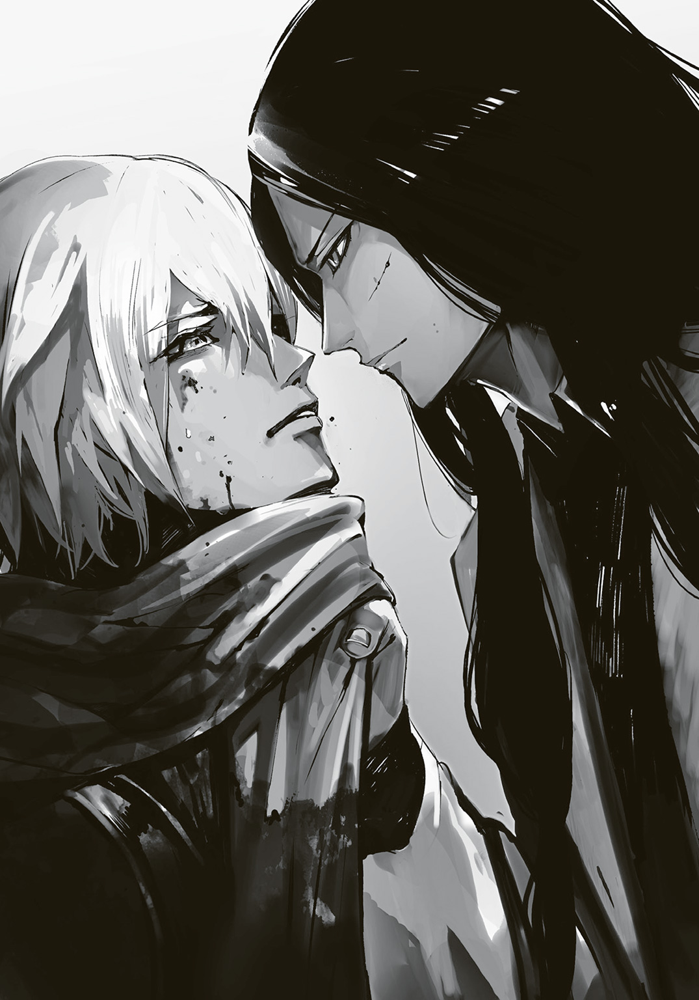
兄の唇が動く。言葉を、紡ぐ。
「お前はもう......自分が何者か、わかっているはずだ。今更何を問う？」
やはり、そうなのか。
だから、なのか。
言われるまでもなく、わかった。
幼い頃から望み続けた願い、それが、こんな形で......今になって......。
涙が、溢れた。体中の水分を全て出さん勢いの汗だというのに、それでもなお水が頰を伝う。
冷気を通して見る兄の顔が、人を馬鹿にするかのように、ゆっくりと口元だけで微笑む。
体はもう、傷がどうとか、血がどうとか関係なしにボロボロだった。それでも俺は情けなくも甲高い叫びを上げて、兄の胸を叩くようにして押す。
地面に落ちて、雪にまみれ、血を垂らしながら......俺は、走り出した。
泣きながら、子供のように。
手に抜き身のナマクラを握ったまま、兄に背を向け、暗い森の中へ。
足も悲鳴を上げる。もう走れないと、もう動かないんだと弱音を吐く。
......知ったことじゃなかった。
背後から俺の名を呼ぶ声がした。アルクという名も、そしてかつての名さえも。
けれど、俺は振り返らなかった。振り返る素振りすら、できなかった。
逃げた。ひたすらに、逃げた。
何もかもをかなぐり捨てて、ただ、走った。森の奥へ。光差し込まぬ闇の中へ。
俺は――府津羅じゃない。その確信だけを握って、走り続けた。
５
ミウラがまとめた殲滅部隊の編制はなかなかに見事だった。公となっている能力だけでなく、対象の陣士達が密かに隠し持っている陣の内容も調べたらしく、イリスが見た限り、かなりバランスが良い。何より引き抜いても総本山の守りもかろうじて崩れていないのがいい。
「今すぐにでも自分の右腕として手元に置きたいスペックだ。アリアドネにはもったいない」
イリスが誰もいない会議室で一人、そんなことを呟いた、まさにその時だった。緊急を報せる電子音が鳴り響くと、スピーカーからは総本山のオペレーターの焦る声が続く。
『イリス様、緊急です。今し方、通信が入りました』
「誰からだ？ 浜菊どもか？」
『いえ、陣能力による通信ではなく......衛星経由です』
その報告にはさすがのイリスもギョッとし、思わず数秒言葉を失った。それはもう罌粟が烏と通信する際に使用する以外で使われることのない古代の通信ラインである。
『極めて短い時間でしたが【四八時間後に映像通信を行う。準備されたし】とのメッセージです。発信場所は総本山よりはるか北方ですが、それ以上の特定は......』
「衛星を移動させてその辺りをカバー、詳細を調べろ。......罌粟様は？」
『お目覚めです。現在アカ、うららの両名と食事を』
「現状をご報告し、お備えいただくように」
本来であればそれは自分の大事な仕事......というより、アカとうららの二人が食事を一緒にしていること自体、普段なら殺意に震えているところだが、今は致し方なかった。
体がこうなってしまっている以上は素早く動けず、今は時を無駄にはできない状況だ。
今だけだ、とざわめく己の胸にイリスは言葉を投げた。
「それと......殲滅部隊を引き返させろ」
『は？ しかし、それですと......』
「今の総本山には使える手駒が残っていない。......もし、いや、間違いなく発信者が奴らである以上、即座に対応可能な戦力が必要だ」
『で、ですが、それでは巨人の森に向かった者達は......』
死にはしないだろう。イリスは小さく呟く。
もはや府津羅も猟犬も、伝令として向かわせた浜菊達も、そしてファリスと名乗ったあの男からも興味は失せていた。
所詮、それらは後処理に過ぎないのだ。本当の勝負は恐らく、もう次の段階に――。
６
暗闇の中を走っていた。走りに、走った。
ほとんど何も見えないながら、体は自然と木々を避け、奥へ奥へと......。
このまま闇に溶けて消えてしまえたら......どれだけ素晴らしいだろう。
息が切れ、咳をする。何て煩わしい。生きていることすら、疎ましい。
何故、どうして、そんなのって......。
多くの疑問が湧く。けれど、同じぐらいに納得もする。
あぁ、そうだったのか。
やはり、そうか。
だから、そうだったのか。
そうであればどれだけ、良かったろう......幼い頃からずっとそう思っていた。
そうであってほしいと祈り続けた。それは叶わぬとわかっていたからこそ......いや、違う。本気でそう願っていたのだ。神がいるのなら、助けてくれ、と。
それが、こんな......今になって、こんな!!
「アルク、待てや！ 落ち着け、何にせよ、まず傷を......死ぬぞ!?」
声が上空から聞こえてくる。男の声。兄の声ではない。それに安堵と共に苦味を覚える。
兄のであってほしかったのか。そうしたら自分は嬉しいのか。今更、兄に......府津羅頼雅に何を言ってほしいのだ。
全ては噓だ、と？ 全部が悪い冗談だった、と？ ――ほざけ。
わかっている。自分だ、自分が一番わかっている。
自分は......あの人の、弟ではない。
あるはずがなかったのだ。ずっと、そうなんじゃないかと、剣を握る度に思っていた。
けれど、最近は......剣を持つことに誇りを抱いてすらいた。
府津羅なのだ、と。あの人の弟なのだ、と。
ようやく......ようやく全てがうまくいく、そう思えていたのに。全部が......!!
「止まれっつってんだよ、アルク!! ......クソ、こうなりゃ力尽くだぞ!?」
暗闇の中、何かが目前に飛び来たのがわかった。顔面に向かって何かが来る。首を捻ってかわし、剣を握っていた左手を反射的に振るう。
「こいつマジかよ!?」
金属音、火花が散る。暗闇の世界に光が生まれる。直刀を逆手で抜いて斬撃を受ける、斛。
邪魔をしてくれる。何故邪魔をする。あぁ、何て邪魔なんだ。
空いていた右手を拳にして斛を殴りつけようとするが、かわし、摑まれ、そのまま投げ飛ばされる。世界が反転するも、あえて自ら身を縮こませて地に背ではなく足を着ける。
斛が摑んだ右手を振り払い、ナマクラを上段で握り、そして振り下ろす。
「受けちゃダメ！」
女の声。暗闇の中で、斛がそれに反応して掲げていた直刀から力を抜いて自ら地を転がる。
そこに、俺は追撃を放つ。振り下ろした剣先を地を這うまで低くしてからの、掬い上げるような右手一本による突き。
柄に伝わりくる衣服とそれに縫い込まれた金属繊維、そして皮膚と肉をわずかに斬る感触――外れた。だが、十分だ。
俺はまた走り出す。暗闇へ。暗い方へ。自分が消えてしまえる、そんな場所へ。
「姉ちゃん！」
「わかってる、あとはこっちでやる！」
男女の声が重なり、その直後に一陣の風が辺りに吹きすさび......天井が、崩れる。
自分の手足すら見えなかった暗闇の中を走っていた世界に猛烈と感じるほどの月と星の明かりが差し込んできて、俺は思わず手を当て、顔をしかめた。
轟音。周囲にあった巨木数本が根元からぶった切られ、俺の目前に次々に倒れてくる。
かわした。かわして、かわした。一本が地に伏す度に髪の毛を震わせるほどの轟音が鳴り響き、足を痺れさせるほどの衝撃がくる。......バランスを崩して、俺は膝を突いた。
巨木が、来る。
......あぁ、このまま潰されてしまえばいい。死んでしまえばいい。......きっと、凄く楽だ。
そう思うのに、体は生きようとするように陣を発現させる。〈地〉〈波〉。地に左手を向けて、陣を発動。凍った土を操って直上へ伸びる柱のようにし、倒れ来る巨木を撥ね除ける。
衝撃が収まった時、周囲が一瞬にして開けていた。
見上げる空。月。星。そして......浮かぶ影。
そこから二本の光が伸びてくる。〈土〉の陣で盾を造ろうとするも、即座に自分の中からそれではダメだと声が上がり、横に飛ぶ。
転がり、そして立ち上がった時......目の前に、女がいた。
円。そう認識した時には、すでに俺は斬りかかっていた。
円は淡々として、大腿部に取り付けていたホルダーより、肉厚で大きなナイフを抜く。逆手に握ったそれで、俺の剣を横へと弾いた。
「ガサツな剣、アルクらしくない」
らしくない？ 違う。これが俺の剣だ。この程度が......俺なんかの、剣なんだ。
力任せに体は剣を振るう。酸欠で喘ぎ、全身の筋肉が悲鳴を上げる中、知ったことかとひたすらに全力を放っていく。
「アルクの剣は、もっと丁寧。相手を気遣うみたいに。そのくせして......やるとなった途端に、凄く激しくなる。......それが良かった」
......全てが、弾かれていく。ゆっくりと下がりながら、彼女は弾き、いなしていく。
俺はありったけの苛立ちを込めた剣を振り下ろす。これならば弾けまい、受けるかかわすしかない......そう思った。けれど、その大振りな技とも言えぬ棒振りの隙に、懐に入られる。
兄の――頼雅の先程の技が思い出され、体がビクンと震えて後方に飛ぼうとするのだけれど......彼女に、円に、その細い両腕に、抱き留められる。
サラリとした真っ直ぐな髪が俺の頰を撫で、首筋に温い吐息。
「......捕まえた」
思わず全てを拒絶するように、彼女を突き飛ばそうとするのだけれど......できなかった。
体を、鉄糸が一瞬にして縛り上げていたのだ。しかも、遣い手である、円の体ごと。
「縛っただけの鉄糸じゃただの拘束具。けれど、私が少しその気になれば、バラバラになる......やってみる？」
俺は雄叫びを上げて引き千切ろうとするけれど、無理だった。服を通して肉に喰い込むばかり。けれど、それがわかってなお俺は踠くのをやめない。体を暴れさせんとする。
俺の胸元から血が噴き出し、円の綺麗な顔を汚した。
円の腕がきつく俺を抱く。動きを押さえようとするように、包み込むように......。
それを認識した際、俺の項に衝撃が走る。手刀。
「ったく......。取り乱し方が半端ねぇな、コイツ。......アレ？」
首に痛みを覚えながら、それでも、俺は暴れる。声を上げる。
「......ヘタクソ」
「チッ、頸椎折れても知らねぇぞ！ そらッ!! ......っておいッ！ マジかこいつ!? タフ過ぎんだろ!!」
「役立たず」
鉄糸が一瞬緩む。その瞬間に自由を得ようとしたのだが......俺は、遅い。拘束が解けた、動こう、そう頭が体に命令を発した段階で円は跳び上がるようにして先に動いていた。
そして俺の顔を胸に押しつけ、その細い腕で首を抱く。鉄糸が再び二人を縛り上げる。
円の鼓動が聞こえた。メシメシっという服が擦れ、肉が潰れ、骨が軋む音も聞こえた。己の体内からだ。
頭にかかる円の吐息。それが大きくなり、そして大きく吸う。
その次の瞬間、強烈に締め上げられる。
「少し、休んだ方がいい、アルク。......大丈夫だから」
円の声。どこか優しく。どこか哀しさの混じる声色だと、そう思った。
どこからか馬の嘶きと共に、俺の名を呼ぶユニの声が遠くから聞こえ......。
気がついた時、俺は見知らぬ天井を見ていた。ボンヤリとした意識の中、後頭部に感じる温もりが何なのかわからず、ひたすらに天井の板の隙間を見ていた。
暗い。けれど、明かりがある。揺れている......焚き火か。パチッ、パチッと音もする。
誰かが......俺の頭を撫でている。その手を認識した時、不意に意識がはっきりとしてきた。
「む？ 意識が戻ったようじゃな、アルク」
声は、ユニ。俺は顔を上げようとして、全身の疲労感......の前に、全身を縛っている荒縄によって妨げられた。ならばと声を出そうとしたのだけれど......水に濡らした布を捻った物で猿ぐつわをされているのに気がついた。
顔を上げようとした俺の頭を、撫でていた手が押しつけるようにして止めた。
「ダメ。......そのまま寝てて。どこかのバカにしこたま殴られてるんだから」
「......その、どこかのバカってのは、オレのことなのか......？」
「他に、誰がいるの？」
そこは先程の村の屋敷ではなく、もっと造りの粗い小屋なのだと知れた。中央に囲炉裏があり、そこで盛大に焚き火が熾されており、それで室内の灯りも賄っていた。
俺が今敷いているものや壁に掛けられた毛皮、そして皮を剝ぐためのものと思われる使い込まれた専門器具の類や荒縄などの道具が棚にあるのを見るに、狩猟小屋なのだろう。
斛がその部屋の隅で胡座をかいて座り、飛刀を小型の砥石で研ぎつつ、こちらを......いや、俺の頭上を呆れ顔で見ていた。
ということは、俺が枕にしているのは......円の膝なのか。
そんなことを考えていると、円が俺の顔を覗き込む。飄々としていながらも、その美しく透き通った瞳は心配し、そしてこちらを窺っているのがわかる。黒く長い髪がはらりと俺の顔を包んだ。まるで、他の世界から隔絶するかのように。
「もう、暴れちゃダメ。いい？」
頭を撫でていた細い指先が猿ぐつわを外してくれる。体の方は、ユニが折りたたみナイフで切ってくれた。
「体の傷はすでに手当てを施してある。といっても、胸の大きなもの以外は指先で押さえただけで血も傷口も塞がったのは驚いたものじゃが......」
白光鳳の斬れ味に府津羅の技が加われば、戻し斬りと呼ばれるそれができた。人の皮・肉であれば容易いものだ。
恐らく胸の傷は俺が相打ちを狙ったことで剣先に乱れが出たのだ。よくよく思い出してみれば、斬られた、と認識した際には血が噴き出していた。
見事に斬られた場合、斬られた感触は極めて薄く、血は噴き出さずに零れ落ちるものだ。
胸元に手を当ててみる。すでに服は血も含めて、乾いていた。どうやら二、三時間は寝ていたのか。脱がされて、乾かされ、傷の手当てが終わって、また着せられた......そんなところだろう。衣服に若干の違和感があった。
手間をかけさせてしまった。
俺は手をつき、半身を起こそうとするのだけれど......腕に力が入らない。荒縄できつく巻かれすぎていたせいで、痺れているようだ。
背中から抱き留められるように円に支えられて、体を起こす。そのまま項垂れるように頭を下げたのだけれど、倒れると思ったのか、素早く円とユニに体を押さえられた。
「大丈夫。それより......ごめん。取り乱してたみたいだ」
パチンッと焚き火が爆ぜただけで、誰もが押し黙っていた。最初に声を発したのは、ユニだ。
「かなりの取り乱し方だったようじゃの」
先程までの揮発油に着火したような爆発的な心内のものは、今は、落ち着いていた。
......今は、冷えた油のようにドロリと重く粘りついている。
「ユニと姉ちゃんから話を聞いてもいまいちよくわかんねぇんだけど......結局、どういうことなんだ？」
「......俺は、府津羅の男じゃなかったんだ。府津羅頼雅は、俺の兄じゃない......。それだけ......でも、何故だ......何故、俺は......」
改めて声に出した途端、また、涙が溢れ、嗚咽を漏らす。
円がそっと、背をさすってくれた。
「ふーん。まぁ、いいじゃねぇか。あのクソ強ぇ府津羅の宗主ってのが別に身内じゃなかったとしても。そんなん大して......え？」
すくっと立ち上がった円が斛の前に立ち、その頭を摑むと同時に激烈な膝を打ちこんだ。斛が声なくのたうち回る姿を背に隠すように、円はそこに座り直す。狩猟部屋は床暖房ではないこともあって靴を履いたままなので、正座ではなく、先程の俺に膝枕をしてくれていた時のようにヒヨコ座りだ。
「アルクの疑問に答えられるけど......聞く？」
ポツリと呟いた声に、俺はもちろん、ユニさえも「え？」と彼女の顔を見る。
「円が、どうして......？」
「それを伝えるか、黙っているか......その判断をするために、ついてきてた。多分、頼雅さんも知らないことがあると思うし」
「なんじゃ、てっきりアルクに耳搔きされたい執念だけでくっついてきたのかと思っておったんじゃけども......」
円は飄々とした顔のままで、一度小さく頷くと、表情そのままに頰を朱に染め、消え入りそうな声で「......それもある」と呟いた。
円が言うには、あのドトルでの戦闘の際、男を一人捕まえていたらしい。烏である自分が陣士、それもかつてはターゲットとした猟犬の俺と共にいるということを知られるといろいろと問題になるとして、襲撃者を捕縛し、その正体と目的を調べたのだという。
その後、その話の裏付けをするため、近隣の村々を回ると共に、烏が保存している資料を漁っていたらしい。
「個人的な感想を言えば......多分、聞かない方がいいと思う。......どうする？」
頷いてしまうのが、怖かった。何を恐れているのか、わからない。けれど、塩をまぶしたナイフで傷口を抉るような、そんな痛みが走るのを......予感している自分がいる。
怖い。逃げたい。また......。
――でも......。
見つめてくる円とユニの瞳を交互に見やり......そして焚き火へ向ける視線。胸に手を当てた。兄からの一撃を受けた、そこ。
――でも......これ以上、悪くなりようもない。
そう、思った。一度思ってしまえば、簡単なことだった。
これ以上、どうにもならないのだ。ならば......聞いたって、いい。
「円、教えてくれ。俺は......俺は、誰なんだ？」
円はゆっくりと頷くと、焚き火を見ながら、ぽつりぽつりと語り出した。
●
全ては、三〇年以上も前の出来事だった。
頼雅の父、当時の府津羅流宗主である府津羅雅晴の手によって一人の殺人犯が捕縛された。
それはまだ、十代の幼い少年。貧しい身の上であった彼は、生きるため、そして自らの欲望のために人を殺め、強盗を繰り返していたという。
錆びた刀剣を振り回し、いざとなれば女や子供も容赦なく斬りに斬り、殺しに殺した彼は〝鬼〟と呼ばれて畏怖された。
まるでこの世に対する恨みを晴らすかのように、手当たり次第の犯行である。
無論、そうなれば成敗せんと幾人もの男が名乗りを上げたのだが、それは彼の逃げ足のあまりの速さから困難を極めていた。
これを捕らえられたのは、まさに府津羅の技が故だ。素早い技の出、するりと懐に入り込むその踏み込みの妙......それらが鬼に警戒を抱かせ、逃走の一歩を踏み出すより先に斬撃を放つことを可能としたのだ。
斬首を望むという被害者達からの通達を受けていたものの、雅晴は彼の若い身を惜しみ、自らの近くに置いて心身を鍛え直してみせる、だから......と約束し、その身柄を引き取った。
当時まだ三〇代だった雅晴にとっては、年の離れた弟か、年の近い息子のようなものだったらしい。愛情を注いだのだ。
この時、幼少期から孤独に生きてきた殺人犯は、初めて家族が出来た。
雅晴から受けた傷を癒し、そして雅晴の直弟子として教えを受け、府津羅流の遣い手として道を歩み、一〇年を経た。
心身共に成長した彼は、雅晴の右腕として世間のため、そして罪滅ぼしのために日々鵺を狩り、陣士を狩り、罪を犯した者をたった一人で追い、それでなお困っている人がいればすぐに駆けつけた。
斬りに斬った。殺しに、殺した。
その熱心さに、恨み続けていた人も、いつしか許しはしないまでも、唾を吐くのをやめた。
そんな、時だった。彼は烏からの協力を請われて、ある陣士を殺すために遠方の地へと向かったのだという。
それは総本山に所属していない、陣士の女。若く美しかった彼女はその気まぐれな行動によって足取りを捕捉しきれなかったがために、出会ったタイミングで確実に殺す必要があった。それにより、万全を期すために、烏が探って、彼が殺す......そういう共同作戦が執られたのだ。
それはうまくいき、完全に陣士は追い詰められ、府津羅の技によって屠られるだけ。
そうなったのだが......。
そこからは正確な資料がなかった。ただ、後の調査で判明したのは、彼女はこの時を生き延び、ドトルの地にて身分を偽り、暮らしていたということだ。
恐らく彼は逃がしたのではなく、見逃した。何故なら烏の記録では殺害し、任務を完了したとあったのだ。......つまり、虚偽の報告をしている。
この一件の後、彼が府津羅の道場を離れ、ドトルの地で猟師、そして砂金取りとなって彼女と共に慎ましく暮らしたことがその証左と言えた。
そして、その二年後、現在より一七年前......ドトルの地に、一人の男の子が生まれたのだ。
この時、産婆は産婦の体にあった陣の焼き印を見つけてしまった。
母親は、陣士。その事実を知った。
反陣士思想を持つ者、そしてそれらで占められた村がこの後どうするのかは語るまでもない。
砂金取りから帰ってきた男が、鬼としての過去を思い出すのは一瞬のことだっただろう。そこに躊躇いなどなかったことだろう。
鬼は、斬りに斬った。殺しに殺した。かつての力任せの技ではなく、府津羅の技でもって隣人達を、女子供はもちろん、男も、そして陣士発見の一報を受けて駆けつけていた烏達さえも。
府津羅雅晴の右腕だった男である。止められる者など、いるわけもない。
妻を失った鬼の慟哭は山を震わせ、血の池を造ったと烏の正式な記録に残るほどだった。
この時、村の幼い子供達だけでもと鉱山へ逃した烏はその後に仲間へ救援を請うたのだが......それによって、死体は増えた。しかし、時を稼いでいた。
山に入った男の行動を遅らせ、そして......府津羅雅晴が駆けつけるだけの時を稼いだのだ。
金を探すために開けられた無数の坑、その奥の奥、大人では入れないようなところに子供達は逃げ込んだものの、それでも次々に狩られた。
焼けた棒を突き刺されてこねくり回され、またある者は燻し殺され、またある者は油を注がれて火を点けられ......。
けれど、全滅する前に、雅晴が間に合ったのだ。
そして、師であり、兄にして、父であった男の剣によって......鬼として生まれた男は鬼として、その生涯を終えたのだった。
三〇〇人の村で、生き残ったのはわずかに九人。その誰もが鬼の姿を見ていた。
全身返り血で赤く染まりながら、優しそうな笑みを浮かべ......。
――大丈夫だから。怖くないから。安心して。こっちへおいで......。
そう語りかけながら、坑の中に腕を差し込んでくる鬼の姿は忘れられなかったという。
●
「それから、彼らは寄り添って生きていったんだって。夜は狭い穴蔵じゃないと怖くて寝られないから、あの鉱山に住んでたみたい。それで、その......アルク......返り血を浴びたあなたの顔に、その鬼はそっくりだったと」
円の落ち着いた語り口に、斛やユニ、そして大凡の予想を持っていた俺でさえも絶句して、目を見開いていた。
「近隣の人々の噂や、烏の記録には出産後の乳児については何も記載はなかった。でも......あのドトルの村で捕まえた奴は府津羅雅晴が連れ帰ったに違いないって言ってた。......彼らは、子供だけで村に戻って、全ての死体を検分して埋葬したらしいから確信があったみたい」
それがあのドトルの中央広場であったであろう場所の、墓。あれが全て......。
そしてそこまでやったからこそ、彼らは気づいたのだ。
陣士の女が子を生んだことが切っ掛け、けれど、その子供の死体がない、と。
――雅晴は鬼じゃない、ただの詐欺師さ！ クソ野郎だ!! 何が全部斬り捨てただ!!
胃液が込み上げてくる。口から吐き出す前に、ユニが小屋にあったバケツを与えてくれた。
涙が出た。何の涙なのか、わからない。ただ、辛い。それだけで、泣いていた。
そして、頭の中に蘇る兄の――頼雅の言葉。
――お前の中には、鬼がいる。
それは、つまり――体に流れているのは府津羅の血ではなく、鬼の血、そして陣士の血だという意味の......。
「......そうか、そういうことか。......ありがとう、円」
腹の中の物を全て吐き出すと、ふらりと立ち上がり、外へと向かった。
背後から名を呼ぶ声が聞こえたけれど、振り返りはしなかった。
自分は、誰だ？
自分は、何だ？
府津羅に生まれたことを悔やみ、恨み、呪った。
もし俺が府津羅じゃなければ、どんなに素晴らしいことだろうと、あれだけ思い、願い、そしてそんなことは絶対に叶わぬことだと絶望を繰り返した。
府津羅でなければ、もういびられなくて済む。
府津羅でなければ、哀れみの目を向けられずに済む。
府津羅でなければ、剣を握らずに済む。
府津羅でなければ、もう、兄に失望されずに済む......。
汗と涙に塗れて地面に倒れる時、いつもそんなことを考えていた。
それが、こんな形で叶った......叶ってしまっていた。
実戦を、命の遣り取りを経て......初めて兄が俺をどれだけ鍛えてくれていたのかが、わかった。そして、初めて兄を理解できたと思った。
総本山で兄と再会し、剣を交わらせた時は......初めてわかり合えたとさえ思った。
兄の前で剣を抜く時は、いつも震えていた。
それなのに、あの時はあんなにも心弾ませて抜刀できた。
笑い合うように覇気を、そして手を取り合い二人で舞うように、技を放ち合えた。
生まれて初めて、兄弟の絆を感じられた時間――。
そんな、全てが......俺の勘違いだったのか。
俺は、府津羅ではない。
府津羅の出来損ないですらない、ただの、人......。
剣の才がないのは、当たり前だ。
だって俺は犯罪者の血が流れているだけの普通の人間。
どこにでもいる、才のない群衆の一人。
「......何でだよ、何で......俺は......」
そうでありたいとずっと願っていた。
けれど叶いはしないと諦めていた。
でも、無理だとわかった上で、なお府津羅でいたくない、と神に懇願し続けた。
府津羅の血は、特別な存在......そんなもの、いらなかった。己の生まれを何度も何度も呪いに呪った。
当たり前の普通の人として生きたかった。
少数の友に恵まれ、儲けの少ない仕事に汗水流し、里の者以外には誰にも知られないまま生きて、静かに死んで、そして忘れ去られるような、そんな......当たり前が欲しかった。
それが理想で、望む全てだった。
特別であることを捨てたかった。
それが、今になって......。
――何もない。
才もなければ、特別なものは、何もない。
何者でもなく、何ものでもない......それが、自分。
幼い頃からの望みが、叶ってしまった。
何故兄は――何故府津羅の親子は、俺を身内と偽ったのか。そんな疑問が湧く。けれど、それは無意味な問題な気がした。
そんな理由はどうでもいい。きっと、些細な気まぐれなのだろう。
それより、俺は――。
「俺は......なんなんだ......？」
気がつけば、雪に膝を突き、夜空を見上げていた。
巨木の枝葉で蓋をされた森のはずだったけれど......月と星がそこにあった。
村、そして狩猟小屋のような、人の住処のあるところでは伐採して広場を造るものなのだろう。吹きつける風を逃がし、光を取り入れ、住処の温度を少しでも下げないために。
そんなことを考えていた。それでわかる。俺の頭は考えることを放棄しつつある。逃避だ。
どうでもいいことを考え始めるのは、まさにそれ。
挫折も逃避も、数え切れないぐらいにこなしてきた。何だったらベテランだと胸を張れる。
そう、本当に繰り返してきたんだ......。
飽きるほど、逃げようとした。でも逃げられなかった。
踠いて、泣いて、そして最後の最後に......陣士になると俺は逃げたのだ。
陣士になるリスクなど、兄から浴びせ続けられる失望に比べればどうということもない、そんな覚悟で......。
そんな苦しみや覚悟の全てさえも......無意味だったのだ。
本当なら、何も悩まず、苦しまず、当たり前に平凡に生きていけた。
何故なら、俺はただの人なのだ。一般人だ。ごくごく普通に、当たり障りのない大変さの中で生きて死ねた......夢に描いていたように。
何者でもない俺は、無駄に苦しみ、ろくすっぽ使えもしない剣を学び、リスクを負って陣士となって......。
笑えてくる。いや、笑えない。口元に笑みが浮かびそうになるも、吊り上がる前に気力が抜けていく。自嘲すら......しんどかった。
虚無感。まさに、それだ。それがピッタリだった。
今までの苦しみが、人生の全てが無駄だった、そう思えた。
「......俺は、なんなんだ......？」
当たり前と思っていた足下の地面が崩れ、体が落ちていくような、そんな......。
「おぬしはアルクじゃよ」
背後から声がした。振り向くのすら、億劫だった。
「府津羅なんちゃらという名を捨て、アルクという名を自らでつけた。忘れたのかの？」
膝立ちで空を見上げていた俺の背後に、人が立つ気配。ユニなのだろう。
「たとえおぬしの過去がどうであれ......陣士にならんとした時、すでにおぬしは府津羅ではなくなっておる。今更何を言う......そんな感想じゃよ、ボクからするとの」
陣士になる際、多くの人は名を変える。身内は元よりそれまでの交友関係を辿られ、そこを突かれる可能性を少しでも下げるためだ。
偽名というよりは、それまでの名を捨てる意味合いが強い。
人ではなく、陣士という存在に変わるための儀式のようなものなのだ。
「ごめん、ユニ。......俺、府津羅じゃなかった」
「そうらしいの。......どうりで似ていない兄弟じゃったわけじゃ。しかし何故謝る？」
「......だって、ユニは......俺が、府津羅だから......選んでくれたんだろ」
あー......と、彼は言葉に詰まり、頭を搔く......気配がした。
「そういえば、そうじゃったの。......うむ、そうじゃった。ボクは里から持ち出された〈鵺〉の焼き鏝を取り返すか破壊するために、そう、おぬしを選んだ。じゃが、それは府津羅という肩書きが欲しかったわけではない。......力が欲しかったのじゃ。共に戦ってくれる、仲間が。そういった意味においては、アルク、おぬしと共に陣士としての道を歩まんとしたことは正解だったと思っておるぞ」
「......やめてくれ、ユニ。俺は......兄としてきた人に、自分の全てを、そしてさらにその先にまで踏み出してまで相対した。それでも、薄皮一枚しか斬れなかった出来損ない......違う。その程度の、ごくごく普通の人間だ。何者でもない、ただの......」
「おぬしはアルクじゃ。府津羅なんちゃらという男をボクは知らん。会ったこともない」
「俺は......」
「アルクじゃ、忘れるな、自分の名じゃ。......これまでおぬしはどれだけの人に剣を振るってきた？ そやつらはおぬしの府津羅という名に斬られたのか？ 剣先を交えたのは府津羅だからと？ 違うじゃろ。剣士ではないボクにはわからん世界じゃが、彼らはおぬしと戦い、そして果てていった。そこに他の何ものも介在はしておらん」
優しくも叱るような言葉。
腕に蘇る、剣を握りし者達と剣を交わらせ、そして彼らの骨肉を斬る感触。
胸に蘇る、彼らの覇気、そして意志。
有象無象、ひたすらに退けるために多くを斬った。けれど、その中でも魂を触れ合わせられる者達が幾人もいた。
剣は語るもの。立ち合いは交じり合い。
互いを捕らえ、互いに剣気を放ち、互いに己の全てをそこにぶち込んだ時......俺達は紛れもなく一つだった。
少なくともその瞬間、俺達は世界で一番互いを理解し合えた存在になっていた。
そこに肩書きは......なかった。
この腕に残る彼らの斬撃の鋭さは......俺が得たもの。
わかる。それは、わかる。そして、ユニがそれを思い出させようとしてくれているのも、わかる。でも......。
涙が零れた。とめどなく。でも拭う気力もなかった。
「もし、仮に本当におぬしに何もなかったのだとしても......足りんかもしれんが......その、ボクがいるじゃろ」
不意に背に、彼の額。胸に彼の両手。そして......ギュッと。
「アルク、おぬしがソラを失ってから兄の存在を心の支えにしていたのは、わかっておった。ソラがおぬしにとって一番の友で、その陣能力以上に人として、男として頼りにしていたというのも......の。それを失った時、血の繫がりに心を寄せたんじゃろう。不安で、また関係を切られてしまうのが怖くて、だから......絶対に切れようのないものを欲した。違うかの？」
「何故、そんなことが......」
「相棒じゃもの」
背後のユニが小さく、けれど寂しそうに笑ったのが、わかった。
「じゃからというわけではないのじゃが......のぅ、アルク」
ユニが、少し息を呑んだ。そして、覚悟を感じる言葉を紡ぐ......紡いで、くれる。
「ボクでは......代わりにならんか」
風が、吹いていた。頰を伝う涙を凍らせるほどに、切るように、冷たい風。
「円も斛でも、何だったら......浜菊憐でも、あの小うるさい彼奴でもいいじゃろ。どれも府津羅としてではない、アルクとしてのおぬしと出会い、その上で共にいるのじゃ。特に円などわざわざおぬしに会いに来て、そして先の事実を伝えるためにずっと傍におったんじゃし......ただ、その......いや、何でもないんじゃが、その......あの、な？」
俺を抱き締める腕と、背に押しつける彼の額に力が入る。抱き締める彼の体の温もりを服越しに感じた。
「一番のオススメは......ボクじゃ。学業は優秀じゃったし、それに陣に関しての知識と経験は豊富じゃしで......いや、こんな言い訳のようなことを並べても、無意味じゃな」
胸元に回された彼の手が、かすかに震えている。かわいそうなほどに。
「頼りにならんかもしれん、じゃが、ボクはもっと頑張る。......おぬしの支えになれるような、そんな人間になれるよう......。じゃから......アルク......」
俺は星空を見上げ続けるしかなかった。
......胸に回された、彼の手を握りながら。
７
狩猟小屋の前で、寒風に吹かれながら、斛は姉と共に事の成り行きを見守っていた。
小屋の周りは切り開かれ、月が明るい。膝を突いているアルクと、その背を支えるように抱き締めているユニの姿は、遠目でもはっきりと見えていた。まるで舞台のようだ。
「行くなよ、姉ちゃん。......野暮になるぜ」
風に黒髪揺らす姉が、大層不満げで、大層悔しげな顔をして斛を振り返った。
「うるさい。わかってる」
姉のそんな表情を見るのは、もしかしたら生まれて初めてかもしれない。
昔から何でもできて、優秀な姉だった。
そして無欲というわけではないが、多くは望まない、そんな姉だった。
「......頑張ったのは、私なのに」
けれど、何かを欲した時は執拗だ。
だからこそ、ドトルからこっち、ずっと駆けずり回り、そして府津羅の道場にまで同道したのだろう。けれど、結局......。
こんな無駄骨を折る姿は実に滑稽で、斛は思わず笑ってしまった。
仕方ないのだ。あの役目をできるのは、この場ではきっと、ユニ一人だけ。
烏の翼では、人を捕まえることなどできはしないのだから。
「私だって......」
姉は唇を嚙むと、また月下の二人を見やりながら、左耳にかかっていた髪を払ったのだった。
長い無言。冷たい風。
でも不思議と苦しい空気がない。震える寒さでもない。
静かで、落ち着いた世界。
「......月が、綺麗じゃの」
「うん......綺麗だ」
空を見上げる陣士達の声が、風に乗って聞こえてくる。
彼らの見上げる空には、大きな満月が浮かんでいた。
●３章 『兄と弟』
かなり遅くなっていたのと疲労もあって、狩猟小屋で円達と四人で一晩を過ごしてから、俺達は村へと戻ることになった。
斛だけは「見てらんねぇ」と言葉を残して俺達より先に発ったらしい。円が言うには行き先を告げなかったのでそのうち勝手に戻ってくるか、先に村へ戻ったはず、ということだった。
「しかし、なんじゃの。......この状況は少し、おかしいのではないか？」
馬上のユニはやや引きつった笑みと共に、呆れ口調で言うのだけれど、それに喰い気味に円が言葉を被せてくる。淡々と。
「そう？ 少しもおかしくない。とても合理的な流れ......違う？」
「いや、俺もいろいろおかしいと思う、これ......」
振り返って見ると、何もおかしくはない、と言うかのように、円は首を振る。少しもふざけた様子はなく、ひたすら透明無垢な瞳で見返してくるのが、妙なプレッシャーだった。
「絶対おかしいじゃろ！ 何でアルクが鉄糸で縛られながら歩かされておるんじゃ!?」
朝、ユニらと共に疲れに身を任せて眠っていたら......起きた時には隣に円が寝ており......鉄糸で雁字搦めにされていたのだった。
しかも鉄糸は円の袖口から伸びたままなので......恐らく、彼女があの耳には聞こえぬ周波数をその唇から発すると同時に、俺の体は細切れとなって雪の上に転がるのだろう......。
「アルクがまた暴れるかもしれない。こうしておけば安心でしょ？」
その割に俺の腰からナマクラを取り上げようとしはしないのは何故だろう......。
「昨夜は、その......本当にごめん。でも、もう大丈夫。暴れはしないから......うわっと！」
躓いた。雪の下に鵺か人の死体があって、それを踏んづけたようだ。両腕がびっちりと全身に巻き付く鉄糸で封じられているために、バランスが取れずに俺は転倒し――ない。
グッと鉄糸が引っ張られ、円の腕に抱き止められる。まるでお姫様抱っこだ。
「ほら、危ない」
見上げると、淡々とした円の顔。でもその瞳は「言った通りでしょ？」と満足げだ。
「昨日の頼雅さんの立ち合いと、その後のでアルクの体はボロボロでしょ？ 無理はダメ」
「鉄糸を外してくれたら普通に馬に乗れて楽なんだけど......」
「......体を早く治すには少し無理した方がいい」
何故だろう。短い間に何ら躊躇いのない矛盾を見せつけられた気がした。
結局馬にも乗せてもらえず、俺は散歩される犬のように、円と鉄糸で繫がったまま、村までの道を歩んだ。
「......会ったら、何て言えば......何を言えばいいんだろう」
「頼雅に、か？ ふむ、何でもいいじゃろ。仮におぬしらが実の兄弟でないにせよ、これまでそのようにして生きてきたのじゃし......別に真相が知れたとて、構わんじゃろ」
他人からすると、そういうものなのかもしれない。
けれど、あの俺を殺そうとした剣技を受けた身としては......それは難しい気がした。かろうじて弾いて、受けて、かわし、凌ぎこそしたけれど、もう一度あれをやられたら今度こそ俺の首は飛ぶだろう。
「そうじゃ、ならば何故今まで黙っていたのか、そのあたりでも聞けば良いじゃろう。当然の疑問じゃし、答えてくれるじゃろ」
「兄さ......いや、頼雅さんは――うっ」
グッと後ろを歩む円が鉄糸を引っ張った。見やると、彼女は前を見据えたまま「子供」と小さく口にする。
「え？ なに？ 子供って......まさか村の生き残りが!?」
俺は辺りに視線を送るものの、馬上のユニが笑って、違う、と笑われた。
「いるとすればおぬしじゃ、アルク。実の兄弟ではない、それがわかったというだけで今まで兄と呼んでいたのを躊躇うようになった、それが、子供っぽいということじゃよ。こっちとしては面倒じゃ、変わらず兄と呼んでおけ」
呼べるだろうか、俺が。あの人の顔を今一度見て、兄と......ん？ 何だ？
ユニを乗せた馬は変わらず歩み続けたけれど、最初に円が立ち止まり、俺もまた止まった。
「ん、どうしたのじゃ？」
「地震......みたいだけど、違う。断続的に衝撃が繰り返されてる。多分、これ、陣」
「円の言う通りだ、ユニ。しかも、地下だ」
リベルテンが動いたのか。でも奴らが動くとすれば、その標的は......兄達だ。
虚と呼ばれる地下に攻め込んだのか。しかし俺達抜きで？
でも昨夜のことがあれば、俺達などいなくともと......そう考えるのが普通か。
......わからない。兄が俺達を、俺を、今、どう思っているのかなんて......。
「何にせよ急ごう、ユニ、円」
「うむ、そうじゃな。よし、行け！」
馬が駆け出し、俺達も走った......のだけれど......。
「......あのさ、円、走るのに鉄糸が邪魔なんだけど......」
「ダメ。危ないから」
縛ったままで走る方が絶対に危ないし遅いのだけれど、言い争っている場合ではなかった。仕方なく犬の散歩状態で行く。
走り行く先に灯りが見えた。村、そしてあの屋敷の灯り......そう思ったのだけれど、灯りが強すぎる。
建物全体が炎に包まれていた。床暖房から出火しての、火事、そう思えた。
辺りに真新しい鵺の死体が転がり、斛とシャフィークさんが対峙していなければ、だ。
燃え盛る屋敷を横手に、互いに抜刀していた。
斛の方は右手に直刀を握って烏らしからぬ覇気を発して顎から汗を垂らし、大太刀を握るシャフィークさんの方は逆に......噓のように、静かな空気を纏いながら上段に構えていた。
「シャフィークさんの様子がおかしい、あれは......」
上段の構えは、崩しの型だろうが何だろうが、どうやっても覇気が漏れる構えである。攻撃を退けるものではなく、斬り込みに行くための構えである以上、どうしても覇気が漂う。
それなのに、今のシャフィークさんにはそれがない。美しくすらある構えなのに、それで斬る意志がない......それは、明らかにおかしかった。斛が覇気を放っていれば尚更である。
「斛、状況！」
円の声が寒空に響く。
鉄糸はまだ解いてはくれない。俺は万が一に備えて膝を突いた。
「あっ!? 今説明しろってのかよ!? 無理言ってんじゃ......くそっ!!」
円の声で斛の集中が途切れ、わずかな隙が出来、そこにシャフィークさんの刀が滑り込む。
刃渡り一〇〇センチを超える大太刀による振り下ろし。技は大きく、烏ならたやすくかわせる......そう誰もが考えるが、シャフィークさんは兄の直弟子である。直接俺が刃を交えたことはおろか、教えを受けてもいないけれど......ずっと、遠くから見てきた一人。
だから、わかる。彼もまた、並ではない。
頭頂部狙いの大太刀は、空気を斬り裂く豪速の一撃。力と素早さを兼ね揃えたそれは、間合いが広く、わかっていてもかわすのは至難の業。
しかし、そこは斛だった。
斛は左肩を前に出すようにして体をくねらせ、その背にすれすれでかわす。と、同時に刀身の腹に左拳で裏拳を放つ。それは〝弾く〟というより〝押す〟に似ていた。敵の得物を遠ざけつつ、そこを支点とするように上半身を回して右手直刀で突きを放つ。
それは見事な技。烏の柔軟さと素早さを活用し、危機から勝機へと見事に繫ぎ通した。
......決まる。ただし、二人共に。
大太刀の斬撃の最中、シャフィークさんは柄から手を放していたのだ。
斬り下ろし、両腕を下げて腰を入れる、足を踏ん張る......その体勢からの、居合いである。
大太刀の柄を放した手が向かったのは、彼が腰に佩いていた打刀。
斛も察した。だが、対処できない。だから......彼は躊躇うことなく相打ちを狙っていく。
シャフィークさんの頭蓋が貫かれ、斛の胴が離れる......そんな未来が見えた。しかし、叫んだところで止めようもない。
だから、俺は......陣を使った。〈土〉〈波〉。二人の男達の間に可能な限り速く、大きく、空へと伸びる山を造りあげる。
二人の踏み込んだ足を持ち上げ、もう一方の足を吸い上げる。二人が仰向けになるように体勢を崩すも、剣は互いを斬っていた。シャフィークさんの打刀が斛の胸元を斬り裂き、斛の直刀がシャフィークさんの眉間に裂傷を走らせる。
「アルク！ そのまま生き埋めにしておけ!!」
ユニが叫び、馬を走らせ、立ち上がらんとするシャフィークさんへと向かう。
俺も言われるがまま、持ち上げた土の波を、布団のようにシャフィークさんに被せんとするのだが......転倒したはずの彼はすでに膝立ちとなって納刀し、手放した大太刀を今一度握り直して、技を放つ。
砂の布団は物の見事に切断される。切り離されれば......俺の陣能力がそこから先に通じない。ただの土くれとなったそれは剣を振るった男に降り注ぐだけだった。
「ユニ、ダメだ!!」
土を浴びつつ、シャフィークさんがユニの気配を察したのか、淡々と大太刀を振る。迫っていた馬の首が、飛んだ。そして、ユニも飛んだ。馬の背からシャフィークさんへと、その手に〈封〉〈陣〉の二文字を青白く輝かせながら。
発現した二つの陣は砕け散り、光の粒子になってシャフィークさんの体へ。その瞬間、ビクンっと彼の体は震え、振った大太刀に引っ張られるようにして地面を転がったのだった。
いつの間にか鉄糸は解かれていたので、俺は立ち上がるとユニのもとへと駆ける。
「ユニ......！」
抱き起こすと、彼は首を飛ばされて雪面に横たわった馬を見やって苦い顔をしてから、倒れていたシャフィークさんを見た。
「少しばかり無理してしまったの。......馬には悪いことをした」
馬の鮮血を浴びたシャフィークさんは、地面に手を突くと、目をしばたたかせながら燃える屋敷を呆然と見上げていた。
「これは......いったい......？」
「陣士に〈操〉かその類の力で、操られておったのじゃ」
言われてみれば確かに納得がいった。あの無機質で淡々と動いていたのは円が操られていた時のそれに似ている。
何故それが即座にわかったのかと問えば、ユニにとっても賭けだったらしい。斛との一騎打ちに全神経を投入している以上、接近するなら今しかない、と、そう判断したらしい。違うなら違うで、単に自らがリスクを背負うだけで済む、と......。
「何より、リベルテンじゃ。......総本山に所属しない陣士に〈操〉の遣い手がおったということは、奴らの手元には〈操〉の焼き鏝があり、それで同じ能力を持つ者が複数人いるものと考えるべきじゃろう。......とはいえ、相当に〝重い〟陣のはずじゃからそう多くはないじゃろうがの。......それよりじゃ、シャフィークとやら、何があった？」
「おぉ、そうだそれだ！ アセボさんが、攫われたのです！」
夜が明けた頃、屋敷に迫る気配に兄達は全員が剣を取ったのだという。
無数の鵺と陣士が襲ってきて、徐々に屋敷から引き離され......その隙に中にいたアセボが攫われたのだという。
「......恐らく、敵はアセボさんはどうでもいいのでしょう。だが、彼女を攫うことで我々を引き寄せられる、と判断したのです」
「引き寄せるって、虚に......？」
「実は......虚だけは、頼雅様も躊躇っていたのです。負けるとは考えておられなかったが、崩落や出入り口を塞がれるなどすれば、実力と関係なしに全滅してしまう恐れがあった。何より鵺や陣士が逃げ込んだという以上、彼らにとって何らかの利点があると思われました。......それで、我々は持久戦に出ていたのです」
「あの兄さんが躊躇うって......そんな素振りは......」
俺の言葉はかすれるほどに小さかった。兄、と呼ぶことにまた抵抗があったのだろう。
「陣士と鵺の強襲を受け、頼雅様達は虚へ向かいました。私は殿だったのですが......陣士一人を斬ったあたりで記憶が......」
「多分、そのあたりでオレが駆けつけたな。オッサンとゴシックロリータっつぅのか？ ひらひらなドレス着てる女が一緒にいて、オレに気づいたらその女、ものすげー速度で走って逃げてったんで、何で逃がすんだって問いかけたら......さっきの立ち合いだ。覚えてないのかよ」
斛は胸元から、両断された飛刀を二本抜き、その場に捨てた。それで軽く肉を斬られただけで済んだらしい。
「そうだ、思い出した。陣士を一人倒した際、気がつくと白い影が目前にあって......そこで左手を伸ばされて......」
それから立ち合いはそこそこに長い時間やっていたらしい。
操られていると知らず、斛が不用意にシャフィークさんの間合いに入ってしまって、ヘタに退けば斬られるのがわかったし、斬るべきかどうかで迷った挙げ句、覇気を放ってみるも気配がまったく読めず......徐々に後退しつつも、ジリジリと身を焦がすような対峙が続いてしまったらしい。
ユニは辺りを見渡し、生きている人間がいないことを確認して回ると、馬小屋から二頭を連れてくる。
「さて、どうするかの。アルク？」
「......追うよ。やるって、昨日言ったんだ。何より......訊きたいことが山とあるし、ユニ、お前のためにもファリスの有無を確かめないと」
ユニは耳をピククッと動かし、少し頰を赤らめて視線を逸らした。
「う、うむ。そうじゃな。そうなんじゃが......てっきりもう忘れられてるかと思っておった」
「姉ちゃん、オレらは？」
「一応、行く。だって......このまま帰るのは、ちょっと、何か、モヤッとする。......まだ、終わってないし」
円はどこか恥ずかしがるような顔をして、左耳を触るように髪を払った。
ヘイヘイ、そうでしょうよ......、と、斛が口にするなり、円は途端にムッとして、弟の額をデコピンで弾く。
......男が一人雪面をのたうちまわったけど、誰も気にしなかった。
「ふむ、まぁいいじゃろ。今は烏でも何でも戦力があるのは嬉しい。リベルテンだとすると、ミーシャやレフのような連中が出てくる可能性を考慮しておかねば。問題は......こやつじゃの」
ヤリゼイサで共同戦線を張った俺達の目は、自然とシャフィークさんに向かった。
「な、何です？ 一時は操られたとはいえ、今はもう......。何より十分な戦力になるはずです」
「いやの、そうではなく......おぬしにかけられた〈操〉の陣を除いたわけじゃないのじゃ。一時的に抑えているだけで、ボクが能力を切れば再びおぬしは操り人形じゃろう」
「なんと......。しかし抑えていただけているのなら......」
「正直ボクの実力的にいって、おぬしを抑えている間、他に陣を使う余裕がない」
円がユニの言葉を継ぐ。
「つまり、陣士のあなたを連れていくか、この剣士を連れていくか、ということ？」
「そうなる。ボクが死んでも意識が飛んでも効果が切れる。二人で共に行ってそうなった時、隣にこやつがいたらどうなる？」
「だ、だが、死ねば能力が消えるというのなら、今しばらくこのままでおり、急ぎ陣をかけた者を殺せば......」
楽観的に言えばそれが一番理想的だろう。けれど、万が一を考えるのなら......二人を同時に連れていくべきではなかった。
ユニがここに残ればまず安全だから、シャフィークさんが正気のままで戦える。
シャフィークさんがここに残れば......いや、残せば、ユニの能力が使える。
二つに一つだった。以前なら迷っただろう。けれどこれまでの経験が即断を促した。
「ユニと行こう。シャフィークさんには残ってもらう。......鵺を駆逐するだけならシャフィークさんだけれど、対陣士戦になるのならユニが必要だ」
シャフィークさんは苦々しい顔でその場に胡座をかいて座り、愛刀を地面に突き立てた。我の強い者が多い府津羅流の遣い手がここまですんなりおとなしく引き下がるのは珍しいが、さすがに敵に操られて斛と斬り合ってしまっていてはぐうの音も出ないのだろう。
彼には両手を縛った状態で残ってもらうこととした。万が一何か問題が起こっても、理性があればすぐに切れるようにしておけば、多分大丈夫だろう。最悪走って逃げることもできる。
「虚はここから北へ真っ直ぐ。そこに一際大きな巨木があり、その根元です」
「ありがとうございます。急ぎ行ってきます」
円と斛、そして俺とユニでそれぞれ騎乗し、いまだ燃える屋敷に背を向け、走る。
風が、痛いほどに冷たかった。
「......しかし、なんじゃな。操られた者が相手で、全力か斛よ」
ユニが陣を解く。これでシャフィークさんはまた操り人形となっていることだろうが、ユニに体力を浪費させるわけにはいかないので仕方ない。
「うるせぇ！ 結構あのオッサン、強かったんだぞ！ そうだろ、アルク」
手綱を握って並走する斛は視線で同意するように訴えてくる。
「円の時は振動鉄糸こそ厄介じゃったが、それ以外は棒人形だったじゃろ」
「いや、多分、斛が正しい。シャフィークさんはかなりの実力を持ってるけど......それよりも、技術的な関係から強かったんだと思う」
円とシャフィークさんでは、基本が違うのだろう。
円は棒立ちとはいえ、それでも高度な技術を必要とする振動鉄糸を当たり前に使えていた。
シャフィークさんの場合はそれが剣であり、体の動きだ。あらゆる斬撃の型、そして型と型の繫ぎが、彼の中では歩く、走る、跳ぶといった基本動作の一つになっているはずだった。
だから全力でないにせよ、操られているだけでも剣ならば相当に強いのではないだろうか。逆に真っ当に剣で相手をしなければ、案外どうとでもなったのかもしれない。
「一応付け加えると、斛は相手を見すぎる。だから考えが読めない相手だと動きに迷いが出る。相性が悪かったんだと思う。......バカだし」
「......姉ちゃんは相手を読まなさすぎるけどな......。自己中っつぅか――あ」
馬上から斛が叩き落とされ、円が代わりに手綱を握る。振り返ってみれば斛が転がっていくのが見えたものの、しばらくするとその足で追いついてきた。
「......元気な姉弟じゃ」
呆れるユニの言葉に、俺は少し寂しい気持ちで頷いた。
......考えてみると、兄とはああいうやり取りなど、俺はほとんどしてこなかった。
兄は絶対であり、俺は口答え一つ出来なかった。するな、と言われたわけではない。犬が本能的に目上の相手を見分けるように、俺は物心ついた時から畏まってしまっていた。
生まれてからずっと、よそよそしい、と言ったって過言ではない。
だから、総本山でじゃれるように剣を交わらせられたのは......本当に、楽しかった。
そう、兄から与えられたのはひたすらに剣だけだったのだ。
兄弟にとっての〝当たり前〟が、俺達にはなかった。
きっと、自分と彼が兄弟ではないとするヒントは至るところにあったのだろう。
それを今に至るまでまったく気づかないというのは......何とも......。
けれど、仕方ないだろうとも思う。
家族だと思ってきた相手が、実は赤の他人で、自分は殺人鬼と陣士の子だと......誰が思うというのか。
これから虚とやらに入って兄に会った時、自分は何と言うのだろう。
何を尋ねるというのだろう。そして兄は何と......。
わからない。
いろんなことが、わからない。
１
虚の入り口は、すぐにわかった。
巨人の森の中でも一際大きな巨木だという以上に、そこへ近づくにつれて屍肉が転がっているのだ。鵺はもちろん、人の手足や頭......恐らく陣士のそれらが道標となってくれていた。
「確かにこれは......入るのに躊躇いが出るの」
巨木の根が盛り上がり、洞穴のようにして口を開けていた。騎乗したままでは頭をするぐらいの高さしかなく、横幅も三、四人が並べばいっぱいとなるような、そんな穴の口。
しかし妙だな。......闘争の気配がまったくない。
「アセボ、だっけ？ あの子が、地下で植物育てたり保管庫にしてるって言ってたから相当に広い空間があると思う。私達が足の裏から震動を感じたのだって、ずっと向こうだったはず」
根が張って、それが支柱となって大地を持ち上げている......確かにそんなことを言っていた。そう考えると巨人の森と同じだけの空間が地下に存在するのかもしれない。
だとすれば、闘争の気配を感じられないのも当然か。
俺は近くにあった枯れ木を拾うと、斛から飛刀を一本貰って先端部に無数の切り込みやささくれを作り、さらにそこに死体から剝ぎ取った衣服を硬く巻き付け、手持ちの油を垂らして火を点けることで松明とした。
それを円達の分も用意しようと思ったのだけれど、彼女らは夜目が利くというのでいらないのだそうだ。
「ボクが持っていこう。アルクは手が塞がるといざという時に出遅れるじゃろ」
虚に踏み込んでみると、途端に急斜面だ。螺旋状の血で濡れた坂を進んでいけば、かなり深くまで下っていく。
下れば下るほど、気温は緩やかに上がっていき、息の白さも消えるほどだった。しかもこれだけ深いというのに空気が澱んでもいない。螺旋の穴のところどころで巨木の根と思しき木の肌が顔を出しているのだけれど、そこから酸素でも出ているのかもしれない。
「......近いの。まだ、戦っておる」
ユニの大きな耳がピクピクと動く。
斛が抜刀し、俺は鍔元に左手を置いて、二人で並んで先頭を行くのだけれど......螺旋が終わって緩やかな斜面に差し掛かった際、行く先にほんのりとした明かりが見えて思わず足が止まる。ぼんやりと柔らかな碧い色の光だ。
発光ヒカリゴケじゃろう、とユニが言う。通常、周囲の光を反射させ、さも発光しているように思えるヒカリゴケと違い、本当に発光を可能とするコケで、殊の外太陽光を苦手とし、暗闇でしか生息できない高価で貴重なものなのだとか。
きっとアセボ達が栽培していたのはこれなのだろう。
「太陽の光を嫌うくせに、自ら発光する天の邪鬼じゃ。元々は大戦前に作られたナノテクの人工エコ植物じゃとかなんとか......あっ、そうじゃ、松明はダメじゃ！」
発光ヒカリゴケは過酸化水素をその内部で生成しているらしく、コケが潰れるなどするとそれが外に漏れて出て多量の酸素をバラまくらしい。
そこまで言われれば、バカでもわかる。火があると、大爆発だ。
俺はユニの松明を消して、その光へと向かって進んでみれば......どうやら地下の空間は広い坑道のようになっているようだ。天井は高く、七、八メートル、横幅も入り口と違ってかなり広く、森を見た時の印象に似て、神殿のそれを思い出させるほどだった。
木の根が支柱のようにしてところどころに存在しているせいだろう。
そして道の両サイドには発光ヒカリゴケが無数に繁殖しているのだけれど、よく見てみれば、コケと言いつつそれらはブニブニとしたジェルカプセルに似たものを多量に持っており、その中の液体が光っているようだった。
......確かに踏めば容易く潰れてしまうな、これ......。
中央にはコケが除かれた幅広い道があるのだけれど、どうやら一戦ここでやらかしているようだ。発光ヒカリゴケに埋まるように、首のない女と思しき死体が二つ。踏み荒らした痕跡もあまりないところを見ると、何かしらの陣を発動させるより先に斬られたのだろう。
そんな死体を皮切りに、鵺、人、鵺、鵺、人、人......と、坑道の途中で屍肉が転がり、場所によっては一部崩落しかかっているところもあった。とはいえ、崩れかけているのは土塊だけ。骨組みである木の根はしっかりと支えているので、意外と閉じ込められるほどに崩れたりはしないのかもしれない。
「近いの。この先に広い空間があるようじゃが、こちらに向かってくる足音が幾つか。......先頭を走っているのは重く、妙な足音じゃ、鵺かの？」
俺は鍔に親指を当てる。背後では斛が抜刀、円は......平然と髪を搔き上げただけ。
俺達は警戒を強めて進み......そして、明るく、広い空間へと出た。
幻想的、と表するのがいいのかもしれない。声が反響するほどに広い。天井はさらに高く十数メートルに達し、そこから地へと真っ直ぐに伸びる支柱が如き木の根は美しいほどに均等に配置されていた。そして、床一面、そして一〇〇メートル以上はあると思しき坑道の両側面の壁には、一面に発光ヒカリゴケが繁殖し、碧い光で空間が満ちていて、それが何とも現実感を失わせる。
一見ドーム状かとも思えるけれど、そうではなく極めて巨大な坑道だというのが、反響する声でわかる。奥の方からはすぐに音が返ってこない。数百メートル、はたまたキロ単位はあるのだろうか。
そんな場所ではあったが、ところどころにおいて、黒く沈んでいる箇所がある。それが何であるのかは、淡い光が包んでいるせいで見えはしないのだけれど......血と、死体だというのは、鼻で察せられた。
「......来るぞ」
ユニの声に応じたかのように、坑道の奥から足を引きずってやってくる影が、一つ。大柄......というか、荷を背負っているのか。
俺はナマクラを抜く。けれど、影が迫ってきて互いの顔が見えるようになった時、手から力を抜いた。
「......おぉ、君達は!!」
直弟子の一人、確か......松平さんだ。全身傷だらけ、汗だくで、返り血を浴びたその顔は恐ろしく疲弊していた。足もおかしくしているのかひきずっている。そんな彼は、ぐったりとしているもう一人の直弟子を背負っていた。
俺達は彼に駆け寄って意識のない男を代わりに抱くのだが......すでに、死にかかっていた。
左肩から右腰へ斬られ、骨が露出している......のだけれど、それより、これは......。
「......松平さん、何故だ。この傷は......」
その時、気づいた。松平さんの腰にあるのは......鞘だけだ。
「こいつを早く地上へ！ 正直際どいというのはわかるが、まだ可能性はあるだろう！ それより......ア、ア、そう、アルク殿だったか、今は。すまんが君の......クッ、もう来たか！ 急げ、とにかく地上へ逃げるんだ!! アセボさんはもう諦めるしかない!!」
松平さんは絶望にすら似た焦りの顔で来た道を振り返る。
碧い光の世界、その先に......蠢く巨大なシルエットが浮かび上がっていた。鵺。背中に肉塊を背負ったような瘻槻付きのトカゲにも似た、それ。巨大な六つの手足で発光ヒカリゴケを潰して迫り、来る。
あれから逃げていたのか。しかし、それでは何故......あっ。
「これでいい？」
鈴の音のような声が聞こえた時、鵺は背中のコブを丸ごとゴロリと地面に落とし、背中から盛大な血飛沫を上げて、辺りの発光ヒカリゴケを赤く塗りつぶしていた。――振動鉄糸。円が手首のスナップ一つで、終わらせたのだ。
耳を劈く女の声に似た絶叫を上げるトカゲ、なおも迫る。
「......あれ？ まだだった？」
円がさらに左手首を一度スナップさせる。雄叫びを上げていたトカゲの足が寸断され、首が飛ぶ。だが、それと同時に円の目が見開かれた。
「違う！ 鵺などどうでもいいのだ！ 問題は......来るぞ！」
松平さんが声を上げた時、坑道の先で何かが光った気がした。
「......音が、消えた......？ まさか、振動鉄糸が斬られたのか!?」
ユニが声を上げると、円は驚きの顔を憎らしげなそれへと変えて顎を引く。頷いたのだ。
「アルク殿、時間がない、君の剣を貸してくれ！ 代わりに一秒でも二秒でも私が時を稼ぐ！」
「......松平さん、あなたの剣は？」
俺は〝もしや〟と思っていたことが〝やはり〟に変わったが、それでもなお、確認するために訊く。......信じ難かった。
「私の刀は......斬られた」
でしょうね、と、思わず口から出かかったが、沈痛な顔をする松平さんをこれ以上追い詰めたくはなかったので、唇を閉じる。
「俺のナマクラは、貸せません。松平さんの体格ではナマクラを使うにはいささか重すぎる。しかもその足じゃ踏ん張りも利かないでしょう。......俺が、やります」
府津羅流は体が小さい者のための剣。そのため小柄な遣い手が多く、松平さんもその例に漏れていなかった。鵺を相手に大太刀を振り回すのならともかく、この相手を前に、愛刀でダメだったのに、扱い慣れぬ重く長いナマクラでどうにかなるものではない。
だからこそ、彼は時間を稼ぐと言ったのだろうが、本当にそれでは数秒がいいところだろう。
「ユニ、怪我人の手当てを頼む。動かせる状態になったら、松平さんと退いてくれ」
「......アルク、おぬし、どうするつもりじゃ？」
ユニの大きな瞳も状況を察したようで、焦りの色に染まっていた。
俺はナマクラを抜きつつ、微笑んだ。
「訊きたいことが、山とあるんだ。だから......やる」
俺はトカゲ型の鵺......そして、その前に立つ人影を見やる。
それは遠目にだって、薄暗くたって、誰だかわかる。十数年、共にあったのだ。
血の滴る抜き身を手にした、府津羅頼雅、その人である。
表情はうつろ、背でまとめていた黒い長髪は今や振り乱したまま。
超然としていたいつもの兄の姿はそこになく、ただの人の形をした肉の塊が立っているとしか思えなかった。
〈操〉の陣なのだろう。そして考えてみるに、操る人間は強ければ強いだけいいのだから、自分が敵だとしてもこうするだろう。
「ダメだ、無理だ！ あなたは剣がてんでダメなのだろう!? 別の力を得ていたとしても、あなたは戦いには向いていないのだと頼雅様から幾度も聞いた！ ダメだ、私に任せてくれ！ あなたはここで死んではいけない！ 一粒種を残されているとはいえ、いまだ子息とも限らない以上、府津羅の男児の血を――!!」
「確かに腕はない。でも、やります。いいんです、松平さん。俺の体には......」
「ほう。府津羅の血筋がまだいたか。これは重畳。......顔を見たい。イノ、ウノ、どちらでもいい、灯りを」
「御意ですね。わたしも顔が見たいです。あの美丈夫の弟なんて、楽しみ」
「でもダメですよ、お姉ちゃん。あたしの陣はあのオッサンと頼雅ちゃんで限界ですもん」
「オッサンの方はもう解除していいでしょ。こいつらが来たのを止められなかったってことは、地上でフラフラさ迷ってるだけのはず」
「あっ、確かに！ 気づきませんでした。それではそっちを解除してぇの、弟ちゃんの品定め......をっ！」
坑道の奥から老人、そして不愉快な二人の若い女の声が響くと、薄暗闇の中で青白い光が生まれる――陣の発現だ。それが砕けると支柱のようにして立っていた無数の木の根が、振動鉄糸の斬撃を受けたかのように寸断されて、切断面から汁を吹き出しながら倒れ、発光ヒカリゴケを激しく叩く。すると碧いだけだった光が黄色いそれに急激に変わって、空間の明度が跳ね上がった。
叩いたことで、というよりは、木の根から出る汁に関係があるようだ。発光性の何かが含まれているのか、発光ヒカリゴケの成分と混ざると光量を強める作用があるらしい。
今や坑道は昼間のようだった。その中を歩いてくるのは、妙な三人。杖を突く二メートルはあろうかという大柄でゆったりとしたローブを羽織った、皺だらけの老人、そして赤と白の差こそあれ、同じデザインのゴシックロリータのドレスを纏う若い女二人。双子と思しき彼女らは長い前髪で目元を隠していたが、それでも俺の顔を注視しているのがわかった。
「あら、残念。悪くないけど......お兄さんのようにお綺麗ではないのですね。ね、ウノ？」
「ホントだ、綺麗じゃない！ あれじゃいらないですね。ね、お姉ちゃん？」
ゴシックロリータの二人は兄の左右に立つと、スカートから覗く足と腕を彼に絡めた。
「綺麗じゃない男はいらない」
「あたしの二つしかない枠に収めるには、満足できないなぁ」
クスクスと笑う二人は、俺を見ながら、やたらと長い舌先で兄の首筋を左右から舐め上げた。
「......お前ら、ふざけるなよ」
俺は歯を喰い縛ると共に、ナマクラを硬く握り締め、松平さんが何か止めようとするのを振り払い、彼女らへと向かうのだけれど......両肩を左右からそれぞれ摑まれ、止められる。
円と斛だった。
「大丈夫、アルク。私はあなたの顔、気に入ってる。だから......大丈夫」
「男は見た目じゃねぇさ。だから、アルク、そんなキレんな。冷静になれ。感情に左右されればミスが出るぜ」
......いや、俺が怒ったのはそこじゃなくて、兄に汚らしい舌先を這わされたからなんだけども......。
見た目を兄と比べられてバカにされるのは、俺にとっては挨拶みたいなものだ。今更どうこう思うことすらないのだけれど......まぁいい。こっちの双子のおかげで、危うく斬りかかりそうになっていた気持ちが幾らか落ち着いた。深呼吸する。
「イノとウノとか言ったか？ リベルテン、一つ訊かせてくれ。......この坑道に〈鵺〉の陣を持つファリスという男はいるのか？」
俺とユニが地下に潜るそもそもの理由は、それを確かめるためだ。まずこれを尋ねないわけにはいかなかった。
兄の首筋を舐め上げていた舌先がピタリと止まり、そして二人の口へと素早く納まる。双子は、兄から離れた。
「......お前達、まさか......いや、そうか、それでか！ 総本山は府津羅流を配下としたのか!! 減った手駒をまさか陣士以外で補うとは......罌粟、いや、イリスめ、そういう手段を採るようになったか」
「ただの鵺討伐にしては、執拗だったわけです。村が滅んでも滞留を続ける理由がそれでしたか。狙いは我らがファリス様の討伐......。頼雅ちゃんなんていう化け物染みた奴を送り込んできたせいで、こっちは共に撤退してきた同志のほとんどを......。よく見ればあなた方、その黒いお連れは烏では？ ......やはり！ 総本山がついに烏を使うなんて、まさに全力ですね！ 外へ救援を求めても助けが来ないわけです！」
二人の言葉からするに、俺とユニが知らないところで総本山は陣頭指揮を執っていたファリスを追っていたようだ。そして兄達が、まさかアセボ一人のため、そして依頼を受けた以上は依頼主がいなくなったとて最後まで仕事を為そうとしたとは思いもしていないらしい。
だが、重要なのは......そこじゃなかった。
ウノの言葉からすると、恐らく、奴はこの先にいる。そしてさらに彼女らはもう一つ勘違いをしているのだ。
ユニが俺の名を低い声で呼ぶ。俺はわかっているというように、頷いてやった。
「......かなり苦しいかと思うが、やれるかの？」
初めからそのつもりだったさ。そう声に出さずに唇だけで告げると、その先は声に出す。
「その様子からすると、やはりファリスはここにいるようだ。手に〈鵺〉の陣を入れた剣士だ、間違いないか？」
「さてね。知りたかったらわたし達を倒してから行くといい。......ただ、〈鵺〉の陣はここにもあるけどね！」
赤いゴシックロリータ――恐らくイノだろう――が指先を口にくわえて手袋を脱ぎ、左手を掲げる。そこには赤く発光する〈鵺〉の陣。
地響きを立てながら、坑道の奥から無数の鵺が走り寄ってくる。いつぞやヤリゼイサで見た首のない白い巨人に似た七体。それらを引き連れ、赤いイノが不敵な笑みで歩み来る。その小さい背にも焼き印があるらしく、何らかの陣を発現させ、発光していた。
ユニは声を出しかけるも、押し止める。きっとその陣、どこで焼き入れたのか、焼き鏝はどこにあるのか......それを問いたかったのだろう。
けれど、それをすると......察せられる。黙るのが、確かに正しい。
「アルク、円、斛、赤いのが〈鵺〉の陣。白いのが〈操〉の陣で確定じゃろ。それ以外にも入れておるようじゃが、陣の重さから考えるに、強力なのは入っていないはずじゃ。特に妹の白い方は〈操〉を二人にかけられることを考えると、相当じゃから、赤い方を重点的に警戒するべきじゃろう。......可能であれば生きたまま捕らえて情報を吐かせたい。じゃが、それが無理だと判断した時は殺してくれるとありがたい」
俺達だけにしか聞こえないようにユニが囁く。円が頷いた。
「ん、わかった。......白いのには近づかない。まぁ、使い魔として頼雅さんを使えるなら、それだけで相当脅威だけど」
「っつぅか、よく府津羅流宗主に陣をかけられたもんだ。さっきの、シャフィークだかっつぅ奴でさえ、剣の間合いは完全な死地だったぜ？」
斛の疑問には松平さんが、震える声で応じながら、傷つき倒れている同輩を見た。パックリと口を開けた見事なまでの傷口は......紛れもなく、白光鳳の為せる業だ。
「あの杖の老人、あれもまた......尋常ではなかったのだ。頼雅様の剣を見事に受けきり、鍔迫り合いの最中に白い小娘が密かに近づき陣を......それで......」
「......なんだって？」
違和感を抱いて、俺そして円達もまたその視線を老人へと向けた。
老人は「ふむ？」と首を傾げると、先程円が切り殺したトカゲ型の頭の上に腰掛け、その膝の上に白いゴシックロリータのウノを座らせる。双子の女は元々小柄だが、二メートルの老人と組み合わさると遠目にはまさに幼女のように見えた。
「府津羅の御子息よ、伝説とされるその技......今度こそたんと見せてもらおう。先程は勝つことに必死で早々にケリをつけてしまってな。追い詰められているとはいえ、余裕がないのはいけない。......ウノ、他を受け持ちなさい。では、イノ、始めなさい」
「はぁーい！ 府津羅家の兄弟対決ね！ 頼雅ちゃん、ＧＯしなさい！」
操り人形の兄は、正眼に剣を構える。教え通りの府津羅流、崩しの型。
「......犬のように、扱うな......！」
俺も前に出る。俺の両肩を円と斛がそれぞれ叩くと、打ち合わせも何もなく、二人はウノと鵺へ向かって、発光ヒカリゴケの野に足を踏み入れていく。
「アルク、赤いのは任せて」
「......ま、姉ちゃん抜きにしても、もうここまで来たら付き合うわな」
「悪い、円、斛。助かるよ。......頼りにさせてくれ」
〈鵺〉の陣は、消さなければならない。
背後で松平さんが何か喚いているような気もしたが、聞く気はなかった。
ナマクラを右手にぶら下げて歩きつつ、覇気を放つ。
兄は、何も応えない。意識を集中しようとしても集中しきれない。世界が二人だけに集束しなかった。むしろ、兄の背後に座る老人と目が合ってしまう。
これは......彼との戦いでもあるようだ。彼は俺と兄の戦いを一瞬も見逃すまいとしている。
技を見せずに終わりたいところだ。でも、無理だろう。
俺の全ての力を出し切って、本来の兄の薄皮一枚......。操り人形になったことで、兄の力が落ちているのだとしても厳しいはずである。
不意を衝かれたにしても直弟子の一人を斬り倒し、松平さんの愛刀を斬り飛ばし、かつ、命懸けでも数秒しか稼げないと彼に言わせしめただけの力はある。
「府津羅流。アルクだ。......行くぞ」
俺は名乗った。兄は応えない。けれど、老人はわかったというように小さく頷いたのだった。
彼の名を聞くのは、その手にしている仕込み杖を解放した時でいい。
●
アルクと頼雅が間合いに入ると同時に斬り込んだ。その初手は互いに見事という他になく、ユニの目には一瞬二人が消えたかに思えたほどだった。
足場がいいおかげもあって、昨日よりももう一段階、速い。だが、激しさは薄い。頼雅が操り人形で、アルクは老人を警戒しているからだろう。
昨夜の一戦を見たユニからすると、本当に深いところではぶつかり合わずに腹の探り合いをしている、そんなふうに見えた。
「......バッ、バカな......」
松平が、同輩の傷口を押さえる手を緩め、愕然とした顔で府津羅の兄弟を見やっていた。
「おぬし、手から力を抜くな！ 傷口を塞いでも出血多量で死んでしまうぞ！」
「わかっている、わかっているのだが......何故だ。何故、アルク殿は......頼雅様の剣についていける!?」
「何を驚いておるんじゃ？ 昨日はもっと凄まじかった。見ているだけのボクが呼吸ができなかったほどじゃったぞ」
松平は治療に戻るも、やはり目は府津羅兄弟を見つめた。そのすぐ横ではイノ・鵺と烏の双子がこちらも激しくぶつかりあっており、集中できないのもわからないでもないのだが......。
イノはどうやら〈水〉を主として使う陣士らしい。根から滴る水を矢の如きに飛ばしたか思えば、それを斛の近くで爆散させ、細かい粒子による面攻撃としていた。しかし烏の纏っている黒の戦闘服はただの布ではないらしく、表面がボロボロになってもそのほとんどは肌までに達しない。
とはいえ、決定打もないようだ。円の振動鉄糸は決め手になり得るだろうが、以前ユニ自身が経験したように、一本しかなければ距離を取れば何とかかわせないこともないのだ。本来は両手の袖から伸ばした二本をまさに縦横無尽に動かし、絶対の領域を作っていたはずだが......今では鵺でさえ多少のダメージを覚悟させれば接近されてしまっている。
......恐らく、どちらかの体力か、鵺の数が減るまで勝負は長引くものと思われた。
激しい戦いだった。だが、ユニはユニで、恐らくこの後に同等かそれ以上に命を酷使せねばならないはずだ。人の心配をしている場合ではないのだ。仲間というには曖昧な関係ではあるが、彼らを信じる他にない。
「自分の弟は剣はてんでダメだと......才はない、と頼雅様より聞かされていたが、あれは......」
「実戦を経たことで、少し腕が上がったと言っておったぞ」
「少し？ 少しだと......バカな、あれは我ら直弟子をも凌ぐ......。確かに本来の頼雅様に比べれば......幾らか劣るかもしれない。だが......」
なんじゃと？ と、思わずユニの手も止まった。
「弟君は鵺を相手に剣を振り回しているだけで、府津羅流はまともに扱えない、哀れな奴なのだ、と聞かされていたのだが......これは......」
アルクはずっと自分に剣の才はない、府津羅の出来損ない、一族の恥部とさえ言われ続けてきた、と聞いていた。本人の凹み具合、ヘタレ具合からしてもそれに噓はないと思っていた。
しかし、松平の言葉を聞いて......ユニは初めておかしいと気づいた。そもそもユニが初めてアルクの剣を見たのは、大薙刀の白妙菊と抜き合わせた時だ。
武芸というものにほとんど縁がなかったユニにはそういうものなのだろうと思っていたが、よくよく考えれば白妙菊は薙刀の遣い手としてはかなりのものでないはずがなかった。
ナイフなどの小さい得物ならいざ知らず、二メートル級の大薙刀を扱うとなれば、得物が常時丸見えである。つまり、戦う前から手が見えるのだ。
白妙はそれでもなお大薙刀を使い、〈爪〉の陣を巧みに合わせて、少ない負担でバランスの良い戦術を用いていた。
実際に戦い、そして命を助けられたからこそわかる。あのプライドが高く、勝利に執着していた当時の浜菊憐の相方である女が、あえて能力の低い技術を主とした戦術を良しとするわけがない。......つまり、白妙には己の技に自信があったのだ。
では、それと対等以上に渡り合ったアルクの剣の実力は......？
さらにいえば円と斛は二人共に、烏の次代を担う戦闘員だという。その身に複数の技術を備え、大人数で一人の陣士を殺す戦法ではなく、単騎、または少人数で小回りの効く有効な駒として教育された、と聞いていた。
陣士殺しを生業とし、振動鉄糸のような特殊なアイテムを遣う二羽の烏と、幾度も相対し、それでもなお、アルクは剣を主体として切り抜けてきたのだ。
他にもあえて剣だけで屠ってきた陣士達、烏の集団に襲われた時だって一度や二度ではない。それをアルクはほぼ剣技だけで、生き抜いてきたのだ。
矛盾がある。けれど、それをおかしいとは思わなかった。
それは恐らくアルク自身が自分はダメだと、弱いと信じていたし、人外の域に達しつつある頼雅の話をユニは幾度も聞いていたからだ。
だから、ユニは知らず知らずのうちに、〝そういうものなのだろう〟と、漠然とした気持ちで受け入れていた......。
矛盾。おかしい。妙だ。話が、嚙み合いそうで嚙み合っていない。
だが、松平の言葉の中にヒントがあるように思えた。
「......まさかおぬしら、アルクの剣を見たことがなかったのか？」
「扱えることすら、知らなかった」
――出来損ないだから人と剣を交えてはいけない、人と一緒に剣を振ってはいけない、兄である府津羅頼雅にとって恥ずかしい存在だから......禁じられていた。戦いはおろか横に並んで一緒に素振りすらさせてもらえなかった。
アルクはかつて、そんなことを言っていた。
何故？ 才がないのに、何故アルクは剣を与えられ続けたのか？
アルクが人に剣を抜いたのは陣士となる前では、円とだけ。
それ以外は常に兄である頼雅とだけ......史上最強の剣士と謳われる府津羅流現宗主府津羅頼雅とだけ。
彼はこうも言っていた。剣は剣でしか計れない、と。
そこまでの考えに至った時、ユニは鳥肌が立った。
「......まさか、隠されておったのか。アルク本人にすら、その実力を......」
だが何故？ いや......それよりも......。ユニは唇を嚙む。頭がアルクを考えようとしてしまうのを堪えた。集中しなくては。いくら傷を塞いでも血を増やせるわけではない。時をかければかけただけ、手元の男は死に近づいていく。
場も騒然とし、賑やかにもなった。だから、問題なくいけるはずなのだ。それなのに余所事に気を取られてしくじるなど、あってはならなかった。
「これが、本家の......府津羅の血なのか」
一滴も入っとらんがの。啞然とする松平に、ユニは心の中だけで言ってやった。
〇
叫ぶように、ナマクラを放つ。けれど、幾らやっても兄は応えてくれない。
心が、魂が、何も交わらない。二人の得物がただ甲高い音を無駄に散らすだけ。
暖簾に腕押し。まさに、それ。相手を見ようとする遣い手なら、確かにこの上なくやりにくい相手だろう。そうでないはずの俺でさえ、全力を出すに心許なかった。
全力を、そしてさらにその先へ行くには、相応の相手が必要なのだ。
自分の全てでぶち当たっても受け止めてくれる相手が、絶対に。
兄さん。今のあなたでは......あまりに、物足りない。
何度も互いの刀身を弾き合い、音を立て、馳せ違い、それでなお......心弾まない。
兄は髪を振り乱しながら、虚ろな瞳でただ剣を振っているだけ。それは確かに府津羅流だ。美しくもなければ、面白くもない、ただ鋭いだけの剣技。
兄がするりと俺の間合いの内側へ入り込み、下段から斬り上げ、途中で切っ先を止めての高速三段突き。確かに速い、確かに見事。だが、それだけなのだ。
足りない。圧倒的に......心が、そして魂の力強さが足りない。
「ほぅ、これは見事だ。アルク、といったか。あれの技もそうだが、やはり宗主、府津羅流の神髄か。その滑らかな踏み込みと流麗なる技の繫ぎ......この老いた体で二度も三度も防ぎ切れたかどうか」
老人が感心した声を出した瞬間、俺の胸の内が爆発した。
「ふざけるな！ これが、府津羅流の神髄なものか！ この程度が――!!」
目の前の木偶の坊を踊らせれば踊らせるほど、兄への冒瀆だった。
だから......斬った。躊躇いなく。
「この程度が、府津羅頼雅なものか!!」
兄の動きはほとんど演舞の流れそのもの。それを察することができれば、次に何が来るのかも読みやすかった。
だから、何も小細工を弄することもなく、剣を振り上げた瞬間、こちらも同様に振りかぶって、ただ速度で斬った。
そう......斬ったのだ。操り人形とはいえ、兄と呼び続けてきた人を、史上最強と謳われる剣士を、容易く振り下ろしの一撃で......斬ったのだ。
左肩から右腰へ。そして俺の体が兄の左脇を抜けてみれば、背後で膝を突く音が響く。
ナマクラの刀身に血も脂も巻くことなく、あまりにも、あっさりと、泣きたくなるほど、簡単に......やり終えていた。
踵を返し、膝を突いたままでいる兄の背を見る。
何と小さい背なのだろう。その後ろ姿は、女人そのもの。
けれど、今までの俺にとってはあまりに大きすぎる背だった。いつだって自信たっぷりで、融通が利かなくて、そのくせして菫義姉さんにだけは不満げにしながらもすぐに従って......そして、何よりも、圧倒的に強かった。
だから、兄の背はいつだって大きくて、触れるのはおろか、近づくことすらできなかった。
それなのに、今は......何て小さい背なのだろう。
......今、この背を見ているからこそ、わかる。
兄を最強たらしめていたのは、肉体的な強さではない。
その神髄は、心の、魂の強さなのだ。
だからこそ、操り人形にされればその力など発揮されようもない。
こんなむなしい剣の交じり合いは......最悪だ。
「眠ってくれ......兄さん」
それは、まるで介錯を施すような、一撃だった。
俺は剣を振り上げる。背に老人とウノの視線が注がれているのを感じた。......そして、この隙を衝くような野暮さを持っていない、というのも、感じられた。
背後からの振り下ろし。兄の体にその刀身をねじ込ませ、その小さい背を蹴りつけて剣を引くと共に臥せさせた。
地に、血が、ゆっくりと広がっていく。
「ユニ、そっちが一段落したらこっちを......兄さんを、綺麗にしてやってくれるか？」
呆然としつつも何か言おうとした松平を、ユニは血に濡れた手で引っぱたいた。
「驚くのはわかるが、おぬしはもっと集中するのじゃ！ ったく！ ......アルク、こやつが半ば死にかかっとる故、ボクでは少しかかるが......構わんか？」
「問題ない。......悪い。いつも、迷惑ばかりかけて、本当に」
「気にするな、お互い様じゃ。......相棒じゃもの、一蓮托生じゃよ」
俺は小さく頭を下げてから、老人とウノへ剣を向ける。
「あーあ、壊れされちゃいましたね。折角お気に入りになりそうだったのに。酷いなぁ、あなた程度の顔じゃ頼雅さんの代わりにならないんですよ？」
ウノが老人の膝から下りると、水気を払うように左手を振った。恐らく、陣を解いたのだろう。重い陣は入れるだけでも辛いが、それを使い続けるのもまた辛い。重さは体力の消費に比例するものだ。
老人が、歩み出で、俺から七、八メートルほどの距離を空けて佇んだ。
「......アルク君だったかな？ 君は、その府津羅流の宗主よりも強いのかな」
「弱いさ。圧倒的に」
「ふむ、やはりそうだろうな。......聞いたか、ウノ。〈操〉の陣では所詮、操り人形だ。その体を自由にできても、魂までは操れない。......そして、魂がなければ剣などただの棒振りなのだ。弟の剣に負けるのも当然だ」
老人の言葉に、ウノは不満げに唇を尖らせ、円の振動鉄糸を水流で逸らしつつ宙を舞うイノを呼ぶ。
「老いると肉欲よりも精神性を求めるもんさ！ 老人の戯言、忘れていい......ってか、こっちはこっちでシンドイから、話しかけないで！」
宙を舞っているイノに斛の飛刀が迫るも、それは水の粒子を大量に撒き散らしての面攻撃で弾く。しかし、そこに斛が直刀を、円が肉厚なナイフを握って迫る。
イノは胸元を光らせる。陣、発現。〈己〉〈速〉〈増〉の字が重なり、自らの体に取り入れる。それにより、彼女の四肢の速度が急激に上がった。
その細く、柔らかそうな手足で斬られるより先に刃を弾く。そして、彼女の背にまた、発光。陣の発現。そして彼女は口元に笑みを浮かべつつ、距離を詰めた斛達の手を――。
先程、背に入れた陣が発光した際に発動したのは......〈水〉の陣。俺はハッとした。
「斛、円、退け!!」
思わず声を上げたが、俺の言葉に斛、そして円もまた素直に従ってくれた。
イノが舌打ちと共に着地すると距離を取りつつ、挟むように斛と円が構える。鵺が戦いに入り込むタイミングを見計らっているが、戦闘の展開が速すぎて入り込めないようだった。
「何で退かせた、アルク!?」
斛の言葉に、俺は老人とウノに剣と視線を向けたまま応じる。
「その赤い奴の狙いは二人の血液かもしれない。水を飛び道具にして攻撃を繰り返し、痺れを切らして敵が接近したところを、〈水〉の陣で内側から......そんなところじゃないか」
イノは顔を歪ませるばかりで応じようとはしなかったが、ウノが口笛を吹いた。
「さっすが陣士殺しの最強一派！ 読みがいいね」
「ウノ、人の陣をバラすんじゃない！」
双子のやり取りに、老人はやれやれと首を振りつつ、ゆっくりと歩み寄ってくる。
「始める前に一つ訊かせてほしい。アルク君、君達はこれで全員か？」
「さっきまでそこのウノに操られていた剣士が一人、地上にいるだけだ」
「ふむ、それを聞いて安心した。ならばこれで全力を出せる。......いやなに、君のお兄さんのせいで、こちらも総力戦となってしまってね。脱出するためにはこれ以上の戦力の低下は許されないのだ」
「脱出も何も......兄さん達は、入り口前に張っていたわけじゃないだろう。さっさと......」
「今のままでは逃げ出せないバカがいるのだよ。......総本山の〝空の眼〟を避けるために、絶対に監視されないこの森、そして穴蔵へと逃げ込んで傷を癒し、頃合いを見てリベルテンの隠れ里へ......そう考えていたが、なんともお粗末な結末だ。時がかかりすぎた。今になってなお、まだ動けない者がいる。あれを外に運び出すには、この坑道を拡張せねばならん」
老人が杖を両手に持つと、曲がっていた背がスッと真っ直ぐに伸び、顔の皺と白髪、そして長い白髭以外、どこにも年齢を感じさせない佇まいとなる。
案の定の仕込み杖を抜く。......現れたのは、ダマスカス鋼製の細身の剣。両刃のそれは何とも薄く、見事に長い。刃渡りだけで一三〇センチはあるのだろうが、老人の巨体と合わさるとその刀身の薄さだけが目についた。
「愚かしい話だ。デキが悪かったとはいえ、教え子は教え子。見捨てられん。何よりリベルテン、そしてこの世界、人類の未来を守るためと期待もしている。......ハァディだ」
先程名乗っていた俺は頷くだけにし、ナマクラを正眼に構える。向こうもそれに似た構えを取ったので、状況的に不自然なほど、お行儀の良い相対となった。
「教え子、というと......ファリス？ 彼もダマスカス鋼の剣を遣っていた」
「自慢の......とは言えんがな。要領はいいが、腕はさほどではなかった。だが、デキの悪い子ほど、かわいいものだ」
「彼が逃げられなくなったって何だ？ それに、そもそもリベルテンは何故そんなにも総本山を狙う必要がある。今でも十分に古代技術の恩恵を得られているだろうに、そこまでして力が、権力が欲しいのか」
つい、質問を重ねてしまった。剣を構えながらするべきことではない。
兄を斬ったことで動揺し、かつ、同時に意地でも冷静であろうとしている自分を感じる。
だからだろう。心が乱れ、少し焦っているのだ。
ハァディは少し困った顔をし、デキの悪い子供を諭すように語りだす。
「府津羅流は舌技が好きらしい」
それ以上は剣で知れ。そういう意味なのがはっきり伝わってきて、俺は恥じた。
「......失礼した。未熟者故、府津羅流宗主を斬ったことで心が乱れてしまった」
「なに、身内を斬って平然と出来る方がおかしいのだ。出来るとすればそれは人ではない、鬼だ。何なら、少し落ち着くのを待ってもい――」
――斬った。無意識に程近いところに心を置きながら、俺の足は地を蹴り、腕はナマクラを振るっていた。昨夜のそれに近い。殺気すらその場に置き去りにするような、そんな豪速の踏み込みから、全身を使った伸びのある一撃。上から下へ。シンプルに、わずかな腕の動きと手首のスナップを利かせただけのそれ。
どうやっても刃は浅くにしか入らない。が、完全な不意を衝いたことでハァディの右前腕部に切っ先を叩き込んだ。薄手の手甲をしていたが、そんなものはさっくりとやって、老体から鮮血を吹き上げさせる。......だが、骨を断つまでには達しなかった。
「そうくるか府津羅流!!」
ハァディが、下がりながら剣先を振って俺を退かせようとするが......構わず、なおも間合いを詰めていく。
飛び込んだ勢いのまま地を転がり、懐に入り込む。大股を開き、重心を落としに落としての高速二段突き。逃げる際にも最後までその場に残る足を狙う。ローブで隠れた足の所在はわかりにくかったが、それでも一撃、軽く刺し込んだ。
ハァディが後方へ飛び退るも、刺された足では踏ん張りが利かず、血を撒きながら半歩下がって体が止まる。そこはまだ、俺の間合いだった。
決着に繫がる斬撃を喰らわせんとしたが、それより先に頭頂部に迫る剣の気配に背筋が震えた。
昨夜の兄のそれと似た、下がりながらの斬撃。兄に比べれば、いささか力が入っているが、即座に俺は跳ね上げ――られない!?
刃が触れ合った瞬間にわかった。......重いのだ。軽く、俺を牽制するためのものと思ったが、そうではない。撥ね除けるどころか、押し込まれる。
俺はたまらずナマクラの峰を左手で支え、その場に膝を突く。
ダマスカス鋼とはいえ、薄く、細く、長い剣で......いくら二メートルはあるといっても老人の力で......こんな!?
「......見事だ。心の隙を物の見事に衝かれた。自らを弱いと言ったが、府津羅流宗主に迫るだけの技だ......が、捕まえたぞ」
俺は全身の力をかけて、ハァディの細身の剣を弾き返すのだが......その時にはすでに十分な間合いを取られていた。さすがに今のような奇襲はもう難しいだろう。
「宗主を、身内を斬り、なおも心に乱れを生まず、ただひたすらこの相対に集中できる、か。その若さで見事なものだ。見習わなくてはならないな。さすがは府津羅の血――」
「ハァディ、舌技が好きなのか？」
空気が張った。こちらの挑発に乗ってくるあたり、良い意味でも悪い意味でも彼の心は若い。
共に、すぐ近くで繰り広げられる鵺、陣士、烏の戦いは、意識から捨てる。
互いに両手で剣を握って、切っ先を向け合って、相手を見つめることに己の〝今〟、その全てを費やす。
白髪白髭の巨漢、歳は七〇手前といったところ......。しかしながら剣気は脂の乗った若者を思わせるも、その纏う空気の落ち着いた力強さは見た目通りの研鑽を感じさせた。
強敵だった。兄の剣を受け止めたというのも、納得がいく。
......俺に、斬れるのか。
手に兄を斬った先程の手応えが蘇ってくるが、すぐに意識の底へ押し込める。
斬ったのは兄ではない、操られた肉人形である。
そもそも......兄ではなかったのだ。赤の他人。言うなれば......本当の父の仇の息子......。
ハァディの剣の切っ先が、挑発するように――笑うように左右に揺れる。心機が乱れたのを覚られたか。......だが、斬り込んでこなかったのは何故だ？ 足の傷を気にしたか。
......いや、違う。彼の様子からするとこちらに先に打ちこませようというのだろう。
血気盛んな様子であるところを踏まえると、意外と受けるのを得意としているのか。
それとも......単に、余裕をかましているのか。
どちらにせよ、俺の持てる剣の全てを懸けて、勝機が一度あるかないか。そんなところか。――十分過ぎる。
いつも兄と戦う時、こちらに勝機など微塵もなかったのだ。
悔しさと憎しみにまみれながら、それでなお剣を持たされ、立ち向かわされ......そして案の定やられてきた。
そんな訓練とも拷問とも言えない戦いを何千と繰り返し、何万と傷を受け、何百と膝を突いてきたのだ。
勝機をわずかにも感じられる相対など......生易しいにも程がある。
「ほぅ......笑うか。額に脂汗浮かべてなお、笑えるか。さすがは府津羅。力量の差を感じて、それでなお......」
俺は全身から力を抜く。府津羅の基本の型から崩しの型へ。そして、そこからさらに崩し......脱力に等しくなるほどに、溶かす。昨夜ほどに、溶かしきれはしない。だが、その近くまではいける。意識の全てを投入する手前まで......。
機を判断したのは、体だった。半ば無意識に、俺は一気にいった。
ナマクラの切っ先で、敵の剣の先を弾き、全力で踏み込み、真っ正面から間合いを詰める。
ハァディ、即座に剣先を上に向けつつ両手で自らの胸を叩くほどの勢いで引き寄せ、守りに入った。だが、退かない。それどころかローブから伸びる足はしっかりと地を摑んでいる。
ハァディが、受け止めようというのなら、遠慮はなかった。俺はダマスカス鋼の剣を弾き上げた勢いのままに、振りかぶり、斬り下ろす。全力。
「――くっ!?」
薄く細いダマスカスの刀身が、俺のナマクラを止める。
肉厚で長く、俺の全力の振り下ろしを、ハァディとその剣は微動だにせずに、がっしりと受けきったのだ。
これがダマスカス鋼。薄く細い剣など、材質がどうであれ、叩っ斬れると思っていたのに。
刀身を、そして柄を伝わってくる剣の硬さ、敵の重量感は、尋常ではなかった。
完全に受けられ、体の勢いをまるごとぶつけてもハァディはビクともせずに全てを受け止め、そして、勢いの止まった俺の腹に、その大木のような太い足で蹴りを放つ。
反射的に身を後方に退けようとしたが、間に合うわけもない。
衝撃に呼吸が止まり、俺の体は横一直線にぶっ飛んだ。
坑道内の道を外れ、俺もまた発光ヒカリゴケを潰しながら身を転がし、動きを止める間を作らずに下段で構え直す。蹴りの衝撃に全身が震えた。
「足が無事なら追撃をかけて、もう終わっているところだ」
「安心してくれ。ご足労願わなくとも、こちらから行くさ」
強がりを吐き捨てると、膝をつきかける己の体を叱咤し、俺は地を蹴った。
間合いを詰めて、下段からの斬り上げ。下がってかわされるも、それは狙い通り。俺は斬り上げた刃の進行方向を変える。――斬り上げからの、突きである。
ハァディの剣が風を斬る。速い、そして強い。ナマクラがたやすく横に弾かれる。
得物が文字通りに弾き飛ばされかけるも、握る両手に力を入れて堪える。けれど、その瞬間、無防備になった俺の顔面狙いで、拳が来た。
喰らう。だが、その直前に後ろに飛び、多少のダメージを減らすも......吹っ飛んだ。即座に立ち上がれば、鼻血が垂れる。鼻息で吹き飛ばし、手の甲で拭って、ナマクラを構える。
「ふむ、かわしの技が実に見事。普通に受ければ首の骨が折れてもおかしくはないはずだが......下がっているのだな、やはり。だからだろう、捕まえるのはおろか、連撃も叶わん」
またも、ハァディは追撃せずに、悠然と佇み、軽く構えているだけだった。
先のもそうだが、今のもそうだ。
多少無理してでも追撃すれば、十分に決着の可能性はあったはずだ。
......何となくだが、今の二撃で読めた気がした。
恵まれたとしかいいようのない体格、老いてなお衰えない全身の筋力、そして剣の技......それだけなら何とでもなるだろう。けれど、ここに軽くて折れない・斬れない、リーチの長い剣が加わると......相当な難敵となる。
普通、細身で長く、何よりも薄い剣は軽くて扱いやすいが、間違ってもナマクラのような肉厚な剣の斬撃を受けられるものではない。ヘタに受ければ剣が死んで、遣い手もそのまま斬撃を喰らってしまうし、自らの斬撃さえも太刀筋が狂えば刀身を折り曲げることになりかねないから、攻撃は刺突を主とする他にない。
けれどもし......ここに、ダマスカス鋼のような、極めて高品質な素材を用いるのならば......。薄く、細身で作ってなお頑丈だとすれば......軽くて扱いやすいくせに絶対的に強靭という、魔法の剣が生まれる。
無論、軽くなった剣は斬撃の際には遠心力が働かなくて弱いものになるだろうが......それを補える膂力が遣い手にあれば、これほどまでに頼もしい組み合わせはないだろう。
まさに難敵。しかも、ハァディはあえてその剣を身を守る防具として使う気なのだ。剣で斬撃を受け、敵を止め、そして己の四肢と力によって攻撃を為す。
ある意味では斛のスタイルに近い。ただ、彼は短い直刀を用いて重量の問題を克服しつつ、力よりも素早さに重点を置いていた。
多分、当たってるはずだ。違和感があったのだ、妙だと思ったのだ。
あの小柄な兄が、この巨漢相手に鍔迫り合いなどするはずがない。
力と体格で押されるのは目に見えている上、何よりもダマスカス鋼とやり合えば、負荷が愛刀を襲う。だから、斬り殺すつもりで攻撃を仕掛けたところを受けられ、結果として鍔迫り合いをさせられたのだ。
あの人らしい。自分が最強だと驕るが故に、何であっても構わず真っ正面から突っ込んだのだろう。もしかしたらダマスカス鋼の剣を見た上で、それすらも叩っ斬れると判断したのかもしれない。
最初のラッシュで殺せなかったのが酷く痛い。けれど、不意を衝ければ......十分に殺せる。
「良い目をする。劣勢を理解してなお牙を剝く、勇敢で無謀で、そして失うもののない飢えた犬の目だ。......宗主に及ばなくとも秀逸と呼ぶに相応しい剣の腕を持ちながら、何故その境地に達せられたのか......興味が尽きんよ」
「犬だからさ......負け犬だよ、俺なんて。まともに勝てたことなんてほとんどないんだ」
いつだって負けてきた。勝ちというものを長く知らずに生きてきた。だから、そんな目にもなるんだろう。いつだって俺は、兄という絶対の存在に押し潰されてきた。
そう、そんなだから......頭にいろいろ湧いてくるのだ。勝とうと思えば、勝てる。けれど......斬ったわけではないにせよ、隙を衝いたにせよ......兄を上回ったというこの男に対して、まともにやり合って勝ちたいと思ってしまう。
俺は佇まいを直し、ナマクラを納刀した。それにはさすがにハァディも驚いた顔をする。
「どうした、負けを認める......わけではあるまい？ そんな目はしていないものな」
「そこまでわかってるなら......わかるだろ」
なるほど、とハァディは得心したように頷くと、唇の端をわずかに吊り上げ、構え直すと共にこちらに猛烈な剣気をぶつけてくる。
こちらは、居合いである。出が速く、伸びのあるその一撃。片手斬りであることからどうしてもその斬撃は浅い上、府津羅流は居合いにそれほどの重きを置いていない。
だが、恐らくこれが一番ハァディに通用する。何故なら......先程の兄との戦いで、俺も向こうもこれに類似した技を見せていないのだ。つまるところ府津羅流の、そして俺の居合いの間合いも知らないはず。そして何より......俺には、居合いの自信があった。
この男、老巧纏えど心は若い。恐らく、乗ってくる。
俺は左手の指先を鯉口に這わせただけ。直立し、右手をだらりと下げ......そのままごくごく普通に歩き進めて間合いを詰めていく。
ハァディからの剣気は肌にビリビリと来るが、その全てを受け流し、ただ歩む。
それで汗を浮かべるのはハァディの方だった。
「......面白い」
ハァディ、剣を持ち上げ、上段に構え......そして、凄まじいほどの殺気を放ってくる。それは全力だと、告げていた。
受けを得意とするハァディに攻撃的とされる上段で構えさせ、一方俺は抜刀どころか右手をダラリと下げたまま、ゆっくりとした歩みで間合いを詰めていく。
ゲームだった。互いに不利に身を置いての、イかれた遊戯。まともな奴なら受けはしないだろう。だが、ハァディは自分の腕に自信があると見え、どこか強者特有の余裕があった。......そこに、賭けたのだ、
間合いが、縮まっていく。一歩踏み出す度に鼓動がうるさいほどに鳴り響き、俺の額にも汗が浮き、頰を伝った。けれど、互いに口の端が吊り上がるのを止められない。
見つめ合った互いの目、絡み合う視線......背筋にゾクゾクとくる。互いに危険だとわかっている、が、同時に自分が有利だと信じてもいる。
だからこそ、俺は誘ったし、向こうは乗ったのだ。
ハァディ......気が合いそうな剣士だった。こんな状況ではなく、もっと有意義な......いや、逆に意義など微塵もない、ただ純粋に斬り合うだけの場で出会いたかった。そう思う。そして、彼もそう思っている。それが、伝わってくる。
お互いに面倒なものを背負ってしまっているな、と。
そうだ。誰かのために負けられないとする気持ちが、背を押してもくれるが、剣を鈍らせてもいる。思い切った無謀とも言える剣を抑え込む。
本当は......剣を振るために背負うのは、己の命と誇りだけでいい。他は重すぎる。
「アルク、と言ったな。年も違えば流派も違う、従う組織すら違っているが......似た者同士、といったところか」
「多分、そうなんだろう」
ハァディと俺は見つめ合ったまま微笑み、そして――命を懸け合った。
右足を前へ伸ばしたと同時に、腰を捻りて左の足が力を溜めて右手がナマクラの柄を摑む。
その初動の機をハァディが摑む。迫り来る俺という存在を両断するために剣を振り下ろす。それは実に見事な速さ。見事な一撃......だが。
「バっ!?」
ハァディの声が聞こえた気もしたが、わからない。声を発する余裕などないはずだから、気のせいか、彼の心の声が聞こえたのだろう。
ハァディが斬らんと腕を振り下ろそうとした時、すでに俺は懐に入り込み、抜刀を終えていた。刃が、ハァディの腰を捉える。切っ先だけがかろうじて、ではない。
胴の両断すら可能なほど、ガッツリ喰い込んでいた。
居合いには、自信があったのだ。
居合いは――居合いだけは、かつて、あの兄が「十分」だと褒めてくれた技だから。
絶対の兄が認めてくれた、だから......その技は、絶対だ。
終わりだ。ハァディ。死んでく――。
「バッ!?」
今度は俺が、それもはっきりと発した。
ナマクラがハァディのローブを斬った直後に、硬い何かに行き当たって止められたのだ。
たとえ多少の鎧を着込んでいたとしてもぶった斬る自信はあった。だが、止められた。それも鎧なんてものではない。感触は分厚くて超硬質のガラスの板を叩いたイメージに近い......それが何であるのか、考えるまでもなかった。
見えたのだ。ナマクラの刃が彼のローブを斬った瞬間、服の下から刹那、溢れる青白い光の粒子が。
――この男も、陣士だ。
弾かれたナマクラを引く。頭上から迫り来る圧倒的な〝死〟の気配に対処するため、左膝を地面に突け、ナマクラを掲げる。かろうじて間に合うが、叩きつけられたダマスカス鋼の剣の威力は凄まじかった。
全身の骨がメキッと音を立て、筋肉が悲鳴を上げた。
「ハァディ、貴様!?」
「見事だ、府津羅流。この老骨では府津羅兄弟を剣で屠ること叶わぬ。だが、全力ならば何ら問題はない。......蔑むかね？ だが、卑怯を誇り、姑息を武器とし、詭道を常とする......陣士にはこんな言葉があるのだ。如何な名刀でも、如何なる遣い手でも、陣の盾は斬れん」
あの感じ、〈気〉と〈硬〉、それに〈壁〉といったところ、いや待て、それ以前にこいつのこの筋力はまさかうららと同じく〈己〉に〈力〉〈増〉の陣を使って......。
押し潰されそうな圧力をナマクラで支える中、俺の頭の中で猛烈な勢いでハァディを陣士として見直す。ゆったりとして生地の厚いローブは陣の発現を隠すため、ダマスカス鋼は優秀な武器であると共に特徴的なその姿から目眩ましの意味も、そして何より......考えてみれば、彼は自らをファリスの剣の師だと名乗ってはいないのだ。
まったくもって、同じだというのか！
「我はハァディ！ 人類の自由獲得を目指す、リベルテンの陣士だ!!」
圧力がさらに増す。体が軋む。もう、限界だった。
「先生、壊しちゃダメ！ イノが限界、お兄ちゃんの代わりに、そいつを使う！」
ウノがトカゲの頭の上で、陣を発現。〈己〉〈速〉〈増〉の三種を重ねて発動。粒子が取り込まれると同時に、かつて見たアカのダッシュを超える速度で走り来る。その間に、左手の陣を発現、〈人〉〈操〉。剣で抑え込まれている俺の背後に立つと同時に、発動。青白い粒子が俺の体を包み、そして内へと入っていく。
視界がグラリと揺れた。脳を誰かに鷲摑みにされるような、そんな――。
ハァディの剣の圧力が消えると同時に、俺はその場に左肩を地に叩きつけるようにして崩れ落ちる。
「さぁ府津羅流、早速イノの援護に行っ――え？」
視界が歪む、思考がまとまらない、体が自分のものじゃないようなふわふわした現実感のなさ......けれど、右手に握るナマクラだけは明確だった。
「こいつ、まさ――!?」
地を叩き、体を起こす。ハァディに背を向け、俺は一人、全てを察したウノを見る。
左手、左膝を突いたままでナマクラを遣った。天を向かんと奔る切っ先が、ウノの左腕を肩から斬り飛ばした。
その瞬間に体の不快感が消え、そして、女の絶叫が迸る。
「ウノ!!」
背後に立っていたハァディから憎悪を浴びせられると共に、斬撃が来るのがわかった。
だが、もう、何をする必要もない。こちらはすでに終えている。
俺は悲鳴を上げてのたうち回るウノを見ながらゆっくりと立ち上がれば、頭上に降り来たのは剣ではなく、ハァディの鮮血だった。
「陣士であれば〈操〉の陣に抵抗できる、そう相棒から聞いてたけど......思ったよりしんどかったよ」
俺の陣は、左肩から倒れた瞬間に地面の下で、すでに発現、そして発動を終えていた。
「......バ、カな......ぁ......！」
振り返り、そして見上げれば、串刺しとなって高々と持ち上げられているハァディの姿があった。
彼の左足の裏から、その太い大腿部を貫き、股間部を経由して胸に達し......肩より突き出ているのは、土の得物。
〈土〉〈波〉を用いて極端に鋭利に造り上げた憐直伝の、土のランスだった。
かつて空気で障壁を作る陣士に苦しめられたことがある。その時は攻略法など、わからなかった。察し得なかった。けれど、経験を積んだ今なら、陣を増やした今なら、多くの敵と並み居る陣士と出会った今ならば......悩むほどのものではない。
地を摑む足の裏には空気がない以上、障壁は作れない。故に、そこは絶対的に無防備なのだ。
「卑怯を誇り、姑息を武器とし、詭道を常とする......俺もそんな風に教わったよ、ハァディ。俺達は年も違えば流派も違う、属する組織すら違っているけど......似た者同士だ。互いに剣を恃みながらも、それを隠れ蓑としていたんだ」
ダマスカス鋼の剣は、そして府津羅流という肩書きは、互いに極めて大きな囮になってくれていた。陣士かもしれない、その可能性を疑うのを忘れるほど、見事に覆っていたのだ。
お互いに自分は相手を騙している、と思い込みながら騙され合った。滑稽といえば、そうなのだろう......。
「お、お前は......ま、さか......」
しかし、剣を交じ合わせた時は疑いようもなく互いに本気でもあった。
だから、心に不満はない。それは彼も同様だろう。
「総本山だ」
陣を解いて土のランスを崩し、ナマクラを握り直すと、俺は地面の上でのたうちまわっているウノの首を刎ねた。
そして、いまだ倒れたままの兄のもとへと歩み――。
「先生、ウノ......貴様ぁあぁあぁああぁああっぁあぁぁぁあああッ!!」
イノの絶叫が轟く。
空中を舞っていた彼女は天井よりぶら下がった状態になっている木の根を蹴りつけ、一直線に俺へと向かってくる。
残っていた四体の鵺が円と斛に向かうも、円はそれらを無視して振動鉄糸を放ち、イノの左足首、右足の膝、右腕の肘を切り飛ばす。斛もまた少女の背に飛刀を放って深々と二本突き立てた。
それでもなお、赤い少女は服と同じ色の尾を無数に引きながら、俺に迫る。
彼女の背で陣が発現、発動。すると背中に赤い鮮血の翼が生まれて空中で加速すると共に、失った右手の代わりにと赤い剣が形作られる。
それはもう半ば錯乱しての、捨て身だった。相打ち狙いでもなく、ただ、感情に任せただけの哀れな突撃。
飛来した彼女とすれ違いざまに、俺はナマクラを遣う。少女の胴を断った。
地を転がるイノの上半身は臓物を垂らし、喚きながら、地を転がる。
「......死ぬ前に聞かせてほしい。〈鵺〉の焼き鏝はどこにある？」
それは最初、ユニが問おうとしたが、自分達が陣士であることを隠すためにあえて飲み込んだ質問だった。
イノは腸を垂らしながら右手で這うと、首のないウノの体に自らの頭を横たえた。
「ジぃ、ねェ......ッ!!」
血反吐を吹き上げながら、上半身だけのイノは左手を掲げる。瞬間的に青白い文字と他にいくつかの漢字が重なったが、高速発動されたそれはほとんど読むことが叶わない......が、一つだけ、読み取れた。
〈鵺〉の、陣である。
少女の皮膚に沸騰した湯のようなボコボコという無数の膨らみが現れ、まるで彼女の存在そのものが粘土の人形であったかのように急激にその形を崩していく、しかもそれは触れていただけのはずのウノの体にも及び、二人の体が、おぞましく混ざり合っていく。
はみ出ていたイノの臓物が意志を持つ小動物のようにウノの首へと入り込み、喉の皮膚が裂けて鮮血が噴き出すも、その筋肉繊維が無数のイトミミズの集合体であるかのように、うねりながらこちらもイノの断面へ入り込み、繫がっていく。
首から入り込んだイノのパーツに、ウノの体が膨張し、肋が砕ける音がし、その背からは服を破りながら脊椎が飛び出すも、これもまた意志持つ生き物のようにイノの背へと自ら突き刺さり、融合を始める。
全ては一瞬の出来事に思えた。恐らく、長くとも数秒のことだろう。
そのわずかな時間で生まれ出でたのは、子供がふざけて作ったような、異様に胴の長い、おかしな人間もどき。二本の足と長い胴の途中から生えている右腕と、普通に肩から伸びる左腕で地面を這い蹲っていると、その長い胴から肋骨が突き出すようにして、甲殻類のそれに似た足が血と共に生えてくる。
これが、〈鵺〉の陣。陣士を、人を、異形の化け物とする陣......。
イノを倒さんと無理をしたせいで、円と斛が鵺どもに押されている最中でありながら、俺は思わず絶句し、固まってしまった。
「フゥ、ヅゥ......ラァアアァアアアアァアッァァア――――――――――!!」
イノの頭が叫ぶ。両目は茹でられた魚のように白一色になって顔より飛び出し、口角は裂けて獣のような大きなものへと変わっていた。その開かれた口内ではウジ虫のように新たに生えてきた鋭利で巨大な歯牙が躍る。
「アルク下がるのじゃ!! 頭を含めた全身を鵺化した後でも、直後は意志が残り、場合によっては陣さえも使える!! 今のそやつは人間の頭脳に鵺の力と陣能力を併せ持つ、化け物じゃ!!」
ユニの言葉が響くと同時に化け物の背に無数の陣が重なって発現し、発動する。
今もなお天井から滴り、辺りに飛び散っていた木々の根から吹き出した汁が、奴の周囲で次々に爆発し、飛沫を上げる。それはまるで鉄の粒のようにして俺を襲った。水といえども速度を与えれば凶器だ。俺は目元を守りながらも......ぶっ飛ばされた。露出していた肌はまるで無数の刃を振るわれたように裂傷となり、血が噴き出す。
化け物が雄叫びを上げ、さらに陣を発現、発動。
何を用いたのか、地を転がっていた俺にはわからなかったが、陣が砕け、その粒子が化け物自身に吸い込まれたのを見て、察した。......〈速〉だ。
化け物、おぞましい速度で地を蹴り、ようやく立ち上がるために膝を突いた俺の目前へと走り来る。五本の指全てにナイフを取り付けたような、左手が迫り来る。俺は後ろに飛びながらもその腕、肘から先をナマクラで斬り飛ばす、が、斬り飛ばした断面から噴き出す血液が即座に剣となって俺を狙う。
さすがのそれには、ナマクラではもう対処できなかった。
全力でもって陣を発動。〈土〉〈波〉。それで、低く、斜めに突き出す土の波を作り、それで自らの体を攻撃するかのように、押し飛ばす。それで血の剣は回避。立て直すために、伸びた土の柱で体を押しまくり、数十メートル一気に距離を取った。
奴を倒すにはナマクラよりも陣がいい。距離を取って串刺しにす――まずい。
化け物、すでに目前。突き出されるのは槍の如き鋭く長い、舌。膝を突いていた俺は反射的にナマクラで斬りかけるのだが、斬ったところで先のようにまた血を固めて武器と為すに決まっていた。だが......やるしかない。
舌を斬る。噴き出す血がそのまま槍となり――かけるが、化け物の頭に横手から強烈な衝撃が走って、狙いが外れ、俺の脇を体ごと転がっていったのだった。――斛の、蹴りだ。
「今のは危なかったじゃねぇか、アルク！」
「斛、助かった！」
俺は即座に左手を地面に着け、〈土〉〈波〉の陣を地下にて発現、発動。踵を返して今一度俺に向かってこようとする化け物の腹を土のランスで縫い止める。
化け物、その腹から噴き上がる血に再び陣をかけ、無数の飛び道具として今一度俺、そして今度は斛も同時に狙う。
避けようもなく、俺達はぶっ飛び、地を転がる。その際、視界の端で、発光ヒカリゴケの光を反射する、一筋の煌めきを見た。他の鵺を倒し終えた円の振動鉄糸だ。
「これで、終わり......！」
空気を裂き、そしてイノとウノの融合体を物の見事に切断、切断、そしてさらに切断し、悲鳴を上げさせる間もなく六個の肉塊へと作り替えたのだった。
肉塊が地面を転がり、血が溢れ出ても、その雫が何も動かないのを見て......ようやく俺と斛は一息ついて、地面に尻を落とした。
「二人が来てくれていて、本当、助かったよ」
「へっ、よせよ。陣士殺しは烏のお家芸さ。......それよりお前、兄貴を......」
斛が同情を込めた視線を向けてくるのだけれど、俺は首を振って言った。
「あぁ、斬った。......そう、斬ったんだ。でも、あれは兄の体であって兄じゃ......」
俺は彼を安心させようと微笑むのだけれど、その表情が一瞬で固まった。
何が起こっているのか、わからなかった。
何故もうくたばった奴が――左肩から血を吹き上げるハァディが、斛の後ろで剣を振り上げているのか。
「「――斛!!」」
俺と円の声が響く。俺はナマクラを振り上げるが、尻餅をついた体勢からではあまりに遅く、力も入らない。円もまた離れた場所から腕を振るって振動鉄糸を放つが、こちらも遅い。
一番速かったのは、斛本人だ。彼は俺の目線の動きを読んで、何が自分の身に降りかからんとしているのかを察するより先に直刀を振り上げる。
サクリ、といった。斛の直刀が菓子のようにぶった斬られる。
しかし直刀が斬られる中、斛は仰向けに倒れたことで、ダマスカス鋼の剣が彼の体に触れる前に、ナマクラの刃が間に合った。打ちつけ合って互いの刀身が震える。
ハァディのそれは右手一本の振り下ろし。だが、力は俺の両手のそれを上回る。
体勢が悪くて、押さえきれない......。
俺は呻きながら陣を発動。〈土〉〈波〉。それで、今一度ハァディを貫かんとしたが、巨漢の老人、剣を振り上げると共に、軽やかにバックステップでかわしてみせた。もう読まれている。
そして、下がったのを見計らったように、斛とハァディの間に、かすかな風が吹いた。
「振動鉄糸か。あやとりだな」
ダラリと下がっていたはずのハァディの左手が動き出し、剣を両手で握り、そして豪速で空を斬る。......カチャン、と遠くで小さな小さな硬い音が聞こえた。鉄糸の先に付いていたジュエリーのような振動増幅器が落ちた音......振動鉄糸が斬られたのだ。
斛、両足を振り上げて素早く立ち上がると共に両手に飛刀を握って短刀の代わりとし、ハァディに向かう。懐へ滑り込むと同時に左右から抱きつくようにして同時に刃を突き立てんとするが、ローブを刺すと同時にカキンっと硬い音がして両手が弾かれる。しかし、それとほぼ同時に斛はハァディの金的狙いで膝蹴りを繰り出すが......それもまた空気の障壁が防いだようだ。
「バッ......三連撃を全部......!?」
「そうか、お前、弟子を苦しめたという烏か。どうりで......。しかし弟子と師が同じ腕と見てはいかんなぁ」
ハァディの膝蹴りが斛の鳩尾に叩き込まれ、彼の体が浮き上がる。さらに強烈な拳が叩き込まれ、斛の体は直下に落ちて地面を跳ねる。
それでも烏、血反吐を吐き出しながらも身を転がしてエスケープしようとするが、ハァディのつま先に捉えられ、骨の折れる嫌な音と共にぶっ飛ばされた。
足を振り上げた不安定な体勢、そこに円が背後から飛びかかる。逆手に持った肉厚なナイフ。だが、やはり、ハァディ自身が振り返るまでもなく超高速で陣が発動して刃を防ぐ。
「老いるまで生き抜いた陣士だ。瞬きと同じように陣を発動させるぐらいできて当然だろう」
ダマスカスが振られた。迫り来る刃に、重心を落とした円もまたナイフを手に立ち向かう。
ナイフはやはりダマスカス鋼の刃に斬られる、が、その半ばに至った時、円はナイフをねじり上げる。その肉厚なナイフの特性を利用し――へし折る気だ！
如何なる素材、如何な名刀とはいえ、薄造りのそれはねじれ剛性は低いと彼女は踏んだのだ。
「これは見事!! だが!!」
ハァディが笑うように声を上げ、振り下ろしていた剣から力と共に片手を離してねじれるに逆らわずに従うと共に、空いたその手で円の頭を摑むと、地面に叩きつける。
二メートルの男の手にかかれば、小柄な少女である円は、まるで人形だ。頭から叩きつけられ、黒い髪に赤を混ぜさせられる。
そんな彼女にハァディが剣を向けた――ところを貫かんと俺は〈土〉の陣を発動させるが......ダメだ。完全に読まれている。ゆったりとすら感じるバックステップでかわされる。
うっ！ と、円が歯を喰い縛って呻きを漏らし、立ち上がるが......ダメージが膝に来ていた。足が震え、すぐに倒れる。まともに立てない。脳震盪だ。
「円、無理するな。......あとは、俺がやる」
でも！ と呻くように言う円の前に、俺は立ってナマクラを構えた。
「......よく生きているものだと思えば......そういうことか」
しっかりと向き合ってみればハァディが生きていることのタネはすぐに知れた。
彼の左肩に空いている穴は、今も青白い光がわずかに残り、皮膚を再生しているところだった。
......陣である。
「察しの通り、〈癒〉の陣だ。他人にかけて傷を癒すことの多い陣だが、儂はこの陣の本当の使い方は自らにかけ続けることだと思っている。さすれば傷を受けるなり回復は行われ、人の身でありながら尋常ならぬ耐久性を得られるのだ。......さすがに縦に貫かれた今回は、かなり際どかったがな。回復に時を要したぞ」
ハァディの肩から陣の光が消えると、彼は軽く腕を回し、本調子だと言わんばかりに悠然と剣を構えた。
これはもう、斬りつけても無駄だろう。斬り飛ばすしかない。手足を、理想は首を。けれどそこにまた障壁が出るのだろう。......では、どうする？
思い当たる可能性は二つだけ。ユニが〈封〉の陣を用いるか、それとも一か八かの......。しかしどちらも無理がある。
ユニを奴の間合いに送り込む時点で難しい。そして何より、すでに彼は相当な無理をしてくれているはずだ。これ以上さらに〈封〉を使わせれば文字通り命に関わるだろう。
ならば、あとは......。
「円、もし動けるようなら俺を残して全員で退いてくれ」
「......ダメ、アルクを見殺しに......なんて、できない」
背後で円が無理矢理に立ち上がる気配。ズリリと、地面に靴底をこすらせる音からするに、やはりまだ足腰が立たないのだろう。視界の端で、無言のまま立ち上がる斛の姿もあった。右手に飛刀を持つが、左手の手首はもう腕にぶら下がっているだけのようだ。ぶっ飛ばされる刹那、左手で受けたのだろう。足腰は......斛はまだ、動く。
「斛、聞こえたろ。......全員で、退いてくれるか」
「どっちみちオレも姉ちゃんも手持ちの道具を使い果たしちまってるしな。退くぜ、全員で。任せろ」
斛!! と、しかりつけるように、らしくもなく、円が声を荒らげた。
「姉ちゃん、ここはアルクが正しい。今のオレ達には為す術がない。できることをしようぜ」
頼りになる。俺は口元に笑みを作って、今一度ハァディに向かって覇気を放つ。
「健気な若者だ。この状況に置かれてなお仲間を気遣い、心も折れないか。愚かというわけでもない、開き直っているわけでもない。見事だ。見事な精神を持っている」
「あんまり褒めないでくれ。慣れてない。......それに、まだ大した窮地でもない」
強がりじゃなかった。勝機は今も見えたままだ。
俺はナマクラを握ったまま、手元に〈土〉〈波〉の陣を発現させる。もはや隠す気もない。
「......もしその気があるのなら、リベルテンの同志に紹介してもいい。儂の弟子だ。元総本山ではしばらく辛い立場に置かれるだろうが、なに、今よりも有意義な生き方ができるだろう。罌粟の檻から人類を抜け出させ、真に自由な未来を切り開くための戦いだ」
「......飼い主を気ままに変えられるほど、器用な犬じゃない」
ハァディが嬉しそうに笑った。
「だと思ったさ」
下段から斬り上げる。互いに。刃が触れ合った瞬間に陣を発動、鍔迫り合いに持ち込んだ瞬間に、足下から土のランスを突き上げるが、ハァディは見事にこれを防ぐ。......最初何が起こったかわからなかったものの、やはりベテランは一枚上をいっていた。
斬り込んだ瞬間、即ち踏み込んだ足の下に空気の障壁を敷いてその上に足を乗せたのだ。それはあまりに硬く、貫けず、土のランスの方が砕け散った。
「総本山に何故こだわる？ かつてあった人類の栄華を取り戻すことを何故拒絶する」
「アンタが何を言っているのか、俺にはわからない。大層なことを考えられるほどゆとりを持った生き方もしてこなかった。......けれど、総本山によって助けられた人々を、そしてリベルテンによって苦しみ死んでいった人々を俺は知っている。それで十分だ」
「......そうか、大切な誰かを失ったか。ならば、無理だな」
ハァディの目が同情に細められる。剣を触れ合わしていたことで、心まで見えてしまったか。
俺は舌打ちし、後方に跳んで、息を吐く。余所事は吐息と共に捨てた。
ただ、剣を意識する。しかし身も心も溶けさせるほどには集中しない。
これは剣の愉悦に浸れるほど、優美なものではない。心以上に、頭と体。忘れていない。場を見、常に警戒、常に疑い、そして......相手を騙す。それが陣士戦だ。
「いくぞ、ハァディ！」
乱打戦だった。手数に物を言わせた。陣による土の攻撃と、ナマクラを上下左右からひたすらに。時にランスで、時に津波でとにかくハァディに攻撃を加え、ナマクラで斬り込み、そして......受けられる。無論、力で押されないために攻撃した直後に即座に距離を取り、場を広く使った。
しかし、ハァディは崩れない。むしろ崩れていくのは俺の方だった。
「気張ってくれる。だが、そのペースでは儂の体力が枯渇する前にお前が干からびるぞ」
「......だと思ったさ」
頭のどこかで〈癒〉を常時かけっぱなしにしているのならば、時間をかければいずれは......と期待もしていたけど、あの様子じゃ無理そうだ。
それでも......抗った。
ナマクラの刃がダマスカスと触れ合うことで刃こぼれしようとも。
土を動かしすぎて平らであった地面が堀り返されて凸凹になり、発光ヒカリゴケが光を弱め、薄暗くなりつつある中で、木の汁を吸って泥と化した土にまみれながら......それでも、構わず、ひたすら。
円と斛が立ち上がり、走り去ったのを見送ってなお、俺は雄叫びを上げ続ける。
そんな姿には、さすがにあれだけこちらを認めてくれていたハァディも、顔に不快さを露にし始めた。
土を浴びせ、受けられ、次のランスを突き上げて弾かれ......そこに俺は飛び込んだ。剣で受けられ、拳が迫るもそれを避けるために後ろに跳んで転び、全身を泥だらけにしながら慌てて距離を取る。ハァディがやや大きく踏み込んで追撃を仕掛けてくるので、俺はなおも後ろへ下がって地面を転がる。
「しつこい、いや、執拗だ。しかし、愚かしい。そこまで土にまみれて、何をし......何故、笑っている？」
俺は膝を突き、手を突いて体を支え、顎から滴る汗を見ていた。発光ヒカリゴケを内に秘め、地面がうっすらと光っているのを除けば......見慣れた光景だった。
呼吸をし過ぎた肺が痛い。鼓動を打ち過ぎた心臓が止まりそうだ。体もくまなく痛い。
......それもまた、かつての日常。
「こんなもの府津羅頼雅と共に過ごした日々では、当たり前。だから......笑えるんだ。懐かしくて。......あの時は絶望しかないと思っていた。でも......違ったんだ。あの時は、まだ。全部を知った今ならわかる......あの時は、絶望なんて......」
だが、体力の減少は等しかった。過去の自分からすると体力の底を突くにはいささか早い気もするが、陣を焼き入れて体力を落とし、剣を振るうと同時にその陣も使っているのだ。消耗が激しいのは当然だった。
少しばかり、計算を間違えたかもしれない。
まだ、もうしばらく時間を稼ぐ必要が......何だ？
遠くから、絶叫が......人間のものではない。もっと巨大な、鵺か何かの......。
「この声、まさか......!?」
ハァディが俺から目を逸らし、坑道の奥を見た。
舌打ちし、今一度俺を見たハァディは目を焦りに染めて、剣を振りかぶる。
「えぇい！ 時間がない、戯れも終わりだ。府津羅流、終わりにするぞ」
マズイ。やるか？ 俺は懐のダグラスを意識する。
いや、まだだ、今かませばどうなるかわからない。それこそ全てを失う。――まだ時を稼ぐ！
俺は地についていた手の先に陣を発動させ、自らの体に土の波を叩きつけて吹っ飛ばし、ハァディの間合いから抜ける。
地を転がる。即座に顔を上げるのだが......ハァディが走り込んでくる。
俺は両膝両手を土に差し込む体勢のまま、即座に陣を発動させ、今度はハァディを土のランスで貫かんとしたが、突き出たのは剣を振りかぶったハァディの後方――外した。
巨漢、目の前。見上げる先に、振りかぶられた剣、ダマスカス鋼の妖艶な模様が鈍く光る。
俺は共に土にまみれているナマクラの柄を意識する。地についている手の下。土ごと握り絞め、そして、四つん這いから一気に立ち上がって剣を......。
「しまっ――!?」
ガン、と硬い板にぶつかった。後頭部と背。空気の障壁が、俺の上に、ある。
ハァディはずっと、そして、同様のものを扱っていたシンスケも単なる都合の良い盾として使っていた。だから、それとばかり思っていた。
それがまさか、こんな、攻撃補助にも使えるのか――!?
一度でも見せられれば当たり前と思える使い方、けれどそう使うという発想がなければ......。
完全に、やられた。
ダメだ――ナマクラは無理――身を横に転がして――一か八かでもぶちかますしか......間に合わないか!?
俺は頭上から迫り来る一撃に全身の毛を逆立てる。
ミスをした。しくじった。こうなるのならば最初から巻き込む覚悟でやるべきだった――死ぬ前から無数の後悔を胸に湧かす己に反吐が出そうだった。しかし、そんな時間はない。
豪速で振り下ろされるハァディの剣。迫り来るまでの刹那。俺は持ち上がらない頭を空気の障壁にこすりつけるようにして、横目で剣を、そしてハァディを見る。
「死ね!!」
彼の瞳には、剣が障壁に触れる直前に陣を解いて、俺をさくりとやる――そんなはっきりとした未来が映っていた。
２
斛と円は走っていた。坑道の奥へ、奥へ、とにかく、急いだ。。
姉は最初理解していなかったようだが、斛にはアルクの意図がしっかりと伝わっていた。
全員で退く......全員で......。それはつまり、自分達だけでなく、連れ去られたままのアセボを含めて、ということだ。そしてそれまではアルクはハァディの気を引くつもりなのだろう。
しかしながらあの強敵だ。受けを主とするスタイルであれ、いつまでもというわけにはいかないはずだった。急ぐ必要がある。
先行く円はその細い顎先から垂れる血の雫を飛ばしながらも、時折後方を振り返っていた。それは折れた手首を額に巻いていたバンダナで固定する斛を心配しているのではなく、そのずっと先に残っているアルクを案じているのだろう。
「姉ちゃん、集中しようぜ。オレ達がさっさと終わればそれだけ......な？」
「わかってる。......少し気になっただけ」
「アルクから恃みにされた、そう思おうぜ」
「うるさい。そういう生意気な慰めは斛にはまだ早......なに？」
円が口元を押さえる。斛も一瞬遅れてから感じた。
死臭、いや、臓物をぶちまけた臭いに近い。
烏として生きていればそれはさほど珍しいものでもない。ただ、広い坑道の中で周りに何もないのにはっきりと嗅ぎとれたことに違和感があった。
先に進むにつれて濃密になっていき、鼻はこの先に切り刻まれた死体の山があるのを斛にイメージさせる。そうでもなければ、この臭いの理由がつかない。
そうして、坑道を進み行き、明るみの強い一帯があるのを見つけ......斛は己の予想が当たらずとも遠からずであったことを知った。しかし、想像より事態は異様だった。
そこはまるで、野戦病院の手術室である。清潔とは言いがたい机が並び、その上には小綺麗な術式ナイフ等々が並んでおり、血で汚れた白衣を纏う医者とその助手らしき者達の姿もあった。そして、臭いの元凶であろう、坑道の隅に積まれた腑分けされたかのような臓物と肉塊の山。そして――。
医者達は駆け寄ってきた斛と円に驚きつつも、手を掲げる。陣士だ。そして白衣を纏う陣士にはろくな思い出のない斛の手は躊躇いなく二人に飛刀を打ち込み、その命を奪った。
「......来たか。府津羅......いや違うな？ 誰だ？」
円は即座に坑道の隅で縛られて転がされているアセボを見つけ、そちらに駆け寄ったのだが、医者達がそれまで手を伸ばしていたものへと斛は近寄った。
その肉塊の脇に、見覚えのある剣が置かれていたのだ。
「よう、ヤリゼイサ以来だ。......アルクから聞いたぜ、ファリスとかいう名前なんだって？」
「懐かしいな、誰かと思えば烏の少年、久しぶりじゃないか」
その声は紛れもなく、ヤリゼイサが燃えたあの夜に、斛とやりあった男の声。それは、間違いなかった。ただ、形が少しばかり違っている。
「どうしたよ、喰いすぎたのか？ それとも......喰われてんのか？」
斛の前にいたのは、巨大な......虫の体に半ば取り込まれつつある男の姿であった。
薄く透明な昆虫特有の巨大な翅を持つ、全長四メートル、横幅は......六、七メートルはありそうな異様に太った蠅に似た鵺が転がっており、その上にファリスが裸で寝ていた。けれど、その上半身、特に首から腰に至るまでの背中の部分がどう見ても鵺の体と一体化しているのだ。
驚くべきことに、ファリスが首を上げると、その背中の鵺そのものが彼の意志に従うように動いて、体を起こす。
「......何があった？」
「恥ずかしい話さ。口にするに赤面を禁じ得ない。......なに、総本山に襲撃を仕掛けた際、宣戦布告したと同時に何らかの陣能力を付与された矢を喰らったんだ。それも首、根元近くだ。ほぼ即死さ。その状態であのイリスがいきなり全力を出したものだから、もう大変だ。一か八か、消え去りかけた意識の中で〈鵺〉の陣を発動させて生き長らえようとしたんだけど......いろいろまずかった。乗り物代わりにしていたのが、後ろにいる蠅に似た鵺でね。それと混ざってしまったんだよ。......あぁ、今のは、笑っていいところだ。遠慮しなくていい」
優男の面影そのままに、大きな兎にも似た耳を長髪の中から覗かせるように首を傾げ、ファリスは微笑んだ。
「ふむ、君らが来たということは我が師までも倒されたか。あの人を殺せるのは老衰だけだと思っていたが......大したものだ。こんなことになるのなら、初めからオレを捨てて、自分達だけでも逃げてくれていたら......。近くにいた仲間や鵺までも手当たり次第に取り込み、ここまで大きくなってしまったのはさすがに予想外だった。出られなくなるなんて......はは、笑える話だろう」
ハァディはまだアルクと戦っているはずだったが、斛はそれに触れないことにした。グッタリとしているアセボはすでに拘束を解かれて円の背の上だ。逃げる機、そしてこの男を殺すべきか否かを斛は見極めんとした。
ちらりと坑道の隅にある屍肉の山を見る。
「鵺の部分を、切り取ってたんだな」
「惜しいね。......鵺というのは伝説上の生き物でね、何ならキメラと呼んでもいい。つまり――」
鵺とは、本来猿の頭、狸の胴、虎の手足に蛇の尾を持つといったキメラを指すものだ。それが実在したかどうかはともかくとして、それを為すのが本来の効果なのだという。
単体、または複数体の対象を素材とし、それらを融合すると共に、ある程度遣い手の意図した、一つの新たなる個体を造り上げる陣、それが〈鵺〉。
ファリスは脳を守るために傷口が塞がった瞬間に効果を止めたらしいが、それでも蠅型鵺と臓物の融合を果たし終えた上、向こうの脳もまた残ってしまったのだという。
その結果、ファリスは自らの〈鵺〉の陣を発動することでこの蠅型＝自分の体を操っていたらしいのだが......。
「......我が師と、君が今し方殺した者達が何とかして人の姿でのオレを取り出そうと、融合している境目の部分を切り取り、人間の肉が残っている側から再生させるのを繰り返してくれていたんだが、これ以上はここでは無理だとなってね。重要な臓腑がこの後ろの醜い肉塊の中にあるんだそうだ。それも人の体のサイズには収まらないほどに肥大化してね」
斛は後ろに回した右手で円に先に行くように告げた。気配は初めから消しているのでよくわからないが、彼女ならもしかしたら指示を出す前にすでに弟を捨ててさっさと逃げているかも......というか、もうとっくにいなくなっている気がした。何せ、あの姉である。だが、念のためにも斛はファリスの注意を引きつけることにした。
「......自虐的になったもんだ。以前の余裕綽々だった頃が懐かしくなるぜ」
「君もこんな体になってみればわかる。この鵺、やたらと食欲旺盛で、気を抜くと人はおろか避難させた仲間の鵺さえも喰らう。......わかるかい？ 自分が食べていない化け物や人間が胃の中に勝手に流れ込んでくるんだ。それも生きたまま、大量に。味や喉越し、胃の中で蠢き、断末魔で臓腑が震える感覚がはっきりと伝わってくる。......絶望が妥当だろう？ だが、総本山の中に入って、全力を出したイリスと相対し、生還した......それらの情報だけでも持ち帰ればリベルテンの、そして人類の未来のためになる、と先生が仰ってね。だが、そのせいで結局は先生自身が凶刃に倒れられるとは......無念だよ。さっさと死んでおけば良かったな」
ファリスは、そもそも姉とアセボを認識していたのかはわからなかった。先程からひたすら、眩しいものを見るように細めた目で斛を見つめるばかりである。
斛は視線に耐えられずに、ファリスの目からその背後の巨大な鵺を見る。食欲旺盛というだけあって、下腹の辺りがやけに膨らみ、そして......今も、何やら不気味に、活発に蠢いていた。
「......リベルテンってのは結局何なんだよ。オレらからしたら総本山もお前らも、同じく陣士の集団だ。だが、お前らの方が悪趣味だってことしか差がわかんねぇ」
「目指す人の世が管理されたものか、自由であるか......その差だ。我々は解放したいんだ、人類の未来を開かれたものに......おや？ ......なぁ、烏の少年。今更だが、名は？ ......そうか、斛か。では、斛、噓をついたな。......我が師であるハァディ、生きているじゃないか」
気がつくと、ファリスはその大きな兎耳をピクリピクリと動かしていた。それは何とも愛らしい動きにも見えたが、今の彼の姿、そして不自然なほど嬉しそうな笑みを作られると、斛の背筋に冷たいものを感じさせる。
「ダマスカス鋼に浮かぶ波紋は二つとして同じ物はない。それ故にそれらは固有の振動数を持つ。遣い手の技を加えればその音の差は明確だ。......師の剣は、今もなお、この坑道の先で健在じゃないか！」
ファリスの額に飛刀を放つ。だが、それは彼の額の直前で、見えぬ壁によって弾かれた。
「勝手に死んだつったのはテメェの方だぜ！」
以前の陣能力そのままであるとすれば、今の装備ではまともにやり合えるとは思えなかった。仮にそれがなかったのだとしても鵺を相手に飛刀を一、二本放てるだけではどうしようもない。斛は、踵を返して一気に走り出す。
「ありがたい。これで真に後悔する前に、終えられる。......師に逆らってでも、死ぬべきだったのだ、オレは！」
けたたましいケダモノの咆哮が後ろから襲ってきて、斛は反射的に振り返る。するとファリスが、歩いていた。手にあのダマスカス鋼のロングソードを握り、背中から臓物を垂らして。
咆哮を上げているのは、その場に残された蠅のような鵺の肉塊についていた頭だ。
ファリスは......自らの背を、鵺との接続部を切断したのだ。
ファリスは掲げた手の先に〈鵺〉の陣を発現させる。それが砕け、向かうのは己の背。噴き出していた血が止まった。
「重要な臓腑はいいのかよ!?」
「人間ならあと幾ばくかで死ぬだろう。だが、それを辞めてしまえばいい。簡単だろ？」
さっきまでの自虐的な笑みではなく、どこか解放されたようにファリスが微笑み......そして、彼は人であることをやめたのだった。
垂れた臓物が引っ張り上げられるようにして、ファリスの体に巻きついていく。
そして、その後方ではケダモノの咆哮が極まり、その膨らんでいた腹が破裂するように弾け、そして内側からわらわらと数十体に及ぶ化け物が溢れ出る。
「おい、まさか、あの鵺、食欲旺盛って......孕んでやがったのか!?」
背中には薄く透明な翅、二足歩行しながらも手は四本の黒い虫の肢。それが数十匹、斛を猛烈な勢いで追ってくる。
彼らの右手の先からは剣のように長く、金属の光沢を持った武器が伸びていた。
人と虫の合成種、というよりは虫とファリスの合成種なのだろう。
そんな連中の先頭を走るのは、ダマスカス刀剣を掲げる、兎耳の鵺だった。
３
終わる。迫り来るダマスカスの波紋に、それをはっきりと感じた――そんな、時だった。
ふと、時が止まったように錯覚した。
ハァディの剣が止まったように見えた。けれど、動いている。ゆっくり。世界が蜂蜜の中のよう。
それなのに......突如視界に入り込んできた白刃だけは、当たり前の速度でダマスカス鋼の剣を横へと弾き飛ばす。
ハァディも俺も驚く間もなかった。白刃に続いて俺達の間に割り込んだのは、赤をこべりつかせた白い小柄な影。それが、ハァディの土手っ腹に蹴りを叩き込み、その巨体をぶっ飛ばす。
そこまでいって、ようやく俺は......その白刃と影のあまりの速さに、そして他のあまりの遅さに、時が止まったように見えたのだとわかった。
「......どうした、立て」
赤をこべりつかせた白い影。小さい背、けれど何とも大きな背に、黒が......長い黒髪が鮮やかに揺れる。
その手に握られ、薄暗くなった坑道内でそれ自体が光っているかのような白刃は、白光鳳。
「立て。剣を握れ。府津羅に、地に両手を突く無様な技はない。いつまで犬のマネをしている......愚弟!!」
顎を上げるようにして、首だけで後ろを見、余裕綽々で不敵さを漂わすように微笑むのは――府津羅頼雅、その人だった。
「宗主、お前、どうやって......弟に斬られ――」
体勢を立て直すハァディは口から垂らしていた反吐を拭うが、その行動が隙と化した。
全ては、するりと。
白い影はまさに滑るが如くに距離を詰め、いとも容易くハァディの懐へ入り込む。
ハァディもまた驚きを以て飛び退ろうとするが、そこに白刃が喰らいついた。
斬り上げる。しかしそれは剣が受けた。音が響くよりも先に白刃は引かれ、突きへと繫がる。それは三、いや、超高速の四連突き。しかし、それですら目に見えぬ障壁が全てを防ぐ。
それがどうしたと言わんばかりに即座に白刃は再び斬撃へと切り替わった。全ては浅く、軽い。だが、速い。上下左右からの猛連撃だった。ハァディ、下がりに下がる。だが、彼と縄で繫がっているかのように白い影はピッタリと付随し、詰まった間合いを広げさせない。
「そんな......馬鹿な!?」
全ては、あまりに速かった。ついに俺の目でも追えぬほどの速度に至った時、ハァディの足が――腿より先が宙を舞い、巨漢が土に転がった。
「何も難しいことではない。いくら陣が凄まじくとも、万能であろうとも......それを扱うのが人間である以上、その反射速度を超えれば当然刃はするりと抜ける。......何故それがわからず苦戦していた、愚弟？」
一連の攻防はわずか一呼吸に満たない間。
それで、一体何連撃を繰り出したというのだ、この人は......！
「確かにおれも初撃は隙を見せた。ダマスカス鋼だの何だのと、所詮は噂、斬れると踏んだのは失敗したがな」
「何故だ、貴様、何故......何故生きている!?」
顔を苦痛に歪めながら喚くハァディの腿は、まるで穴の空いた革袋のようだった。とぱとぱと、赤黒い血が噴き出すというよりも、零れるようにして土に染みていく。
なに、簡単じゃよ、と、ユニが遠くから声を上げた。
「アルクはとどめなど刺してはおらん。お前たちの目をその背で隠し、峰打ちで頼雅の意識を飛ばしていただけじゃ。そして最初の斬撃も......ボクがいれば何ら問題はないのじゃ」
松平さんに支えられながら、フラフラのユニはその八重歯で、右手に巻かれた血まみれの包帯を解く。現れるのは〈癒〉の陣。ユニの新たなる力。
「焼き入れてまだ一カ月も経っとらんのに、昨日からの連続使用でさすがに精も根も尽きたぞ、アルク！」
〈癒〉の陣もまた、かなり重い陣だ。それにさらに〈傷〉を加えてユニの右手に焼き入れたせいで、徒歩での旅が困難なほど、彼の体力を著しく損なわせた。その状態で昨夜の俺の胸の傷を筆頭に、兄が斬った弟子の傷、俺が斬った兄の胸の傷......どれもこれも致命傷か、その寸前の深いものばかり。
ユニをあまりに酷使し続けた。けれど、それのおかげで今がある。
「一段落したらうまい甘味処に連れていくよ、いくらでもだ」
期待しておる、という言葉を最後にユニはぐったりとして松平さんに全ての体重を預けたのだった。
「総本山、一匹見つければ二匹いると思え......だな。久しく前線から離れていたが故に、失念......いや、衰えか......」
彼は体を起こして剣を置き、腿を手で押しつけ圧迫するも、血は、変わらずに溢れ続ける。小さく首を振って、俯く。その首を白光鳳は何の抵抗もなく刈り取った。
白刃が鞘に収まると、兄はそのまま倒れかける。
俺の体は彼に飛びかかるようにして、抱き留めていた。
元々白い肌の人だったけれど、今の兄の顔には血の気というものがなかった。ユニの陣は傷を直すものではあったが、流れた血までは再生できないのだ。
けれど、何故だろう。兄はいつもの自信に溢れた顔でありながら、どこか嬉しそうに微笑んで俺を見上げている。
「ふむ、お前に抱かれるのも悪くないものだ。......しかし、陣の治療というのは初めて受けたが、大したものだ。完全なものではないと言われたが、それでも違和感はほとんどない。......腕のいい陣士なのだな、アルク、お前のパートナーは」
「......はい、とても腕のいい相棒です、兄さ......よ、頼雅さん」
空気がピリッとする。微笑んでいたはずの兄の目が鋭くなる。
「どうした愚弟。何故、兄と呼ばない？ 他人行儀はよせ」
「......円が調べてくれました。俺の生まれの全てを」
「おれ達は、兄弟だ」
「でも......俺の親は、陣士の母と、鬼と呼ばれた人殺しの――」
「確かに......違う。黙っていたのは、今となってはすまなかったと思っている。......だが、だ。たかが、親が違うだけではないか」
「......はっ？」
「お前は府津羅の子であり、紛れもないおれのたった一人の弟だ。そこに偽りはない」
いや、あの......と、思わず、啞然としてしまった。いくら兄とはいえ今回のはあまりに強引過ぎる。そもそも親が違うというのに何を言って......。
「だ、だいたい、昨夜、あなた自身が言った！ わかっているんだろうと!! 俺は持てる力の全てで向かって、それであなたの頰の皮一枚......それだけの価値しかない、そんな弱い男は......府津羅の男ではないと!!」
「言っていない。おれが言いたかったのは......」
兄は俺の胸を押し、一人で立ち、そして――抜刀した。居合い。膝を突きたくなるほどの殺気と共に俺の首を狙っ――。
「......わかるだろう、アルク」
二つの白刃が、天を向いていた。
白光鳳、そして......それを弾き上げた、ナマクラ。
「ほら、見事だ」
そう囁き、兄が微笑んだ。
「お前はこんなにも、府津羅じゃないか」
４
朦朧とする意識の中、ユニは斛に持ち上げられている自分を意識した。
抱かれたり、背負われているのではない。米俵でも持ち上げるが如く、肩に担がれているのだ。しかも、走っている。腹部が圧迫されて酷く痛く、それで意識が戻ったらしい。
「な、なんじゃ、どうなった......？」
あの広い坑道を走っていたが、発光ヒカリゴケの損傷具合が少ないため、先程の戦いの場より出口か奥へと向かっているのだと知れた。
そしてユニの視線の先、つまり走る後方には、アセボを背負う円、そして同輩を背負っている松平と続き......さらにその後ろでは、目を見張る戦いが行われていた。
人と虫を掛け合わせ、背には大きな翅を、右手には剣を生えさせた人型の鵺が、数十、群れを成しユニ達を追ってきている。
だが、その中で二人の剣士が舞っていた。
信じられないほどの速度で、一分の隙も無駄もなく、互いが互いの死角を補う様はまさに舞いという他にない。
二つの白刃が舞い、二人の男達が舞う。全てが用意され、幾年も訓練をしたかのような、そんな......兄弟の姿だった。
アルクと頼雅。頼雅はわかる。血を失っていながらのその動きは驚嘆ではあるにせよ、最強と謳われるだけの剣士なのだ。だが、アルクだった。
確かに頼雅に比べれば幾段かは落ちる。が、それでなお頼雅の動きに追随し、次々に黒色の鵺に血飛沫を噴き上げさせ、肉片を斬り飛ばしていく光景は、隣で彼の剣を見てきたユニにも信じられないほどの滑らかさだった。
いつも隣で見てきたユニだからこそ、わかる。アルクの剣は、変わった。
彼の剣はこれまでも見事であったが、常にどこかに必死さがあった。犬が喰らいつくような、余裕のない必死な剣。それが今は......鮮やかなのだ。
何より、目だ。二人の男は、目で微笑んでいた。顔に笑みを浮かべる余裕は共にない。
けれど、二人は笑っている。楽しんでいる。今を、剣を。
鵺の間を互いに舞い、斬り、そしてなお全力で走る斛達の殿として追随している。
「あ、おい、ユニ、動くな！ 興奮した犬みてぇに尻尾を細かく振るな、顔に当たんだよ!!」
ブブブブと耳元で蜂が飛ぶ時に聞こえる羽音が、坑道に響き渡る。高い天井すれすれを四匹もの人型の鵺がアルク達を飛び越え、ユニ達へと飛来する。
円と斛が一瞬だけ踵を返し、二人共にその回転の力を利用して飛刀を放つ。それらは体ではなく、その背で高速で動く翅を貫き、奴らを地面に落としてみせた。
姉弟は動きを止めることもなく再び前を向いて、走る。
「斛、飛刀の予備、こっちに」
「今ので最後だ！」
「役立たず」
「うっせぇな！ あとはもう逃げる他ねぇだろ!!」
恐らく、自分らは地上に逃げようとしているのだとユニは察した。もはや武器らしい武器を持っているのがアルクと頼雅の二人だけとなれば、人と同等程度のサイズとはいえ、大量の鵺を相手にするのは無理というものだった。
逃げるしかない。だが......彼らは、ユニ達より、速い。
人を背負い、はたまた剣を振る......そのハンデが重かった。すでに数体の鵺が、殿を務めているはずの兄弟の剣を避けて追い抜き、松平に迫りつつあった。
「見えた、地上へ続く坂道だ！ あと少しだ......って、オッサン、もっと頑張れ!!」
このままではダメだった。坂道に差しかかったあたりで松平と同輩は鵺に追いつかれる。しかもそこから先は急激に坑道は狭くなっており、発光ヒカリゴケもない暗い道である。襲われれば、ひとたまりもなかった。
「たまには兄弟水入らずというのもいい。......愚弟、皆を行かせろ」
斛、円、そして松平が坂道に差しかかった時、頼雅のそんな声が聞こえると共に、鵺の中で舞っていたアルクの左手に青白い光が宿る。〈土〉〈波〉。
その意図するところを察し、ユニは手を伸ばす。
「ダメじゃ！ アルク!!」
アルクの陣が発動。松平の背後に迫っていた鵺が地面から突き出た土のランスによって串刺しとなり、そのまま天井に叩きつけられる。そして、崩落。串刺しの鵺ごと、道が塞がっていく。明るく広い坑道で舞う兄弟と無数の鵺。それが、見えなくなっていく。
「大丈夫だ、ユニ。地上で待っててくれ」
完全に道が塞がる寸前、ユニが見たアルクは、微笑んでいた。嬉しそうに。
クッ、と、ユニは歯嚙みする。わかっていた。他の者達は今の装備で対鵺戦はあまりに酷だ。かといって自分はといえば......アルク達の傷を治し、そして彼の陣を封じることもできるだろう。けれど、それを為すにはあまりに力を使い果たしていたし、陣を使う間、あの数の鵺に囲まれた中で生き延びられるとも思えなかった。
今の自分は、足手纏い。それをユニは嚙み締めるしかなかった。
「ボクは......相棒でありながら、役立たずじゃ......」
「何言ってんだよ、あの兄弟の傷を治したのはお前だろ。お前がいなけりゃどうなってたか」
斛のさりげない慰めすら、今のユニには酷く痛かった。
彼らは暗い道をなおも走りに走り、そして全員が息を切らして汗を流す頃になって、ようやく六人は薄暗い森の中へと飛び出した。
吐く息が白い。身を切るような寒さ。そして――。
『やっと見つけた！』
妙にかわいらしい少女の声が、空から響いてきたのだった。
５
全ては、一七年前の出来事だった。
何故、父、雅晴が七歳の息子である頼雅をその旅に伴ったのかは、今ではわからない。
道場に駆け込んできた烏の救援依頼を聞くなり、彼は着の身着のまま、しかし息子にはしっかりと刀を持たせてから馬に飛び乗り、ドトルへと向かった。
馬を酷使して潰し、交換し、それすら潰して辿り着いたのは、虐殺の場。
女も子供も関係なく、村人はもちろん、烏さえも見事に両断された死体があらゆるところに転がる地獄のような場所。
屍肉に彩られたそこで雅晴は一人で一晩を過ごし、翌朝山を下ってきた父を迎えた。
その時、腕に抱かれていたものが何であるのかを見た時の衝撃は、今でも忘れられない。
生まれて間もない、赤子だった。里では頼雅の後に生まれた子はなかったがために、初めて見た自分より年下の存在。人が本能で察する庇護すべきもの。
――お前の弟だ、頼雅。
手渡されたそれを抱いた時、腕が震え、膝が笑った。
何といたいけな存在なのか。何と可憐な存在なのか......。
その時は、気持ちに押されて何もわからなかった。
しかし、しばらく経ってからその時をふと思い出し、そしてわかった。
あれは世間でいう一目惚れの類だったのかもしれない、と。
運命などというものがあるのなら、それなのだ、と。
それに気づいた時、幼馴染みの菫に大発見をしたと告げたら、「あなたはいつも勝手に物事を決める悪いクセがある」と一蹴され、しばらく凹みもしたが、しかし、間違いないと今でも頼雅は信じている。
そして、赤子が三歳となった時、雅晴が病に倒れ、そこでようやく雅晴は全てを聞かされたのだ。
あの赤子の父親は殺人鬼であり、母親もまたかなりの被害を撒き散らした陣士。しかも父親の父親、即ち赤子の祖父は残虐さで知られた盗賊......蛙の子は蛙、鬼の子は鬼、それを案ずる血筋なのだ、と。しかし、と彼は病床でそれに続けた。
――しかし、そんなものは関係がない、父と母が誰であれ、何であれ、あれはお前の弟だ、府津羅の子だ。......あれを頼むぞ。
雅晴は、あの子の父を更生させるために一〇年をかけたのだ。年の近い息子か年の離れた弟のようにして心砕いて共に暮らしたのに、切っ掛けはどうあれ、結局はあの事件に至ってしまった。
だから後悔があるのかもしれない。自分が最初に殺しておけばドトルは今も......。
しかし、同時に信じてもいたのだ。人の生は血如きで決まるのではない、と。そしてどんな者であれ、人は正しく教え導けば変われるのだ、とも。
今際の際に託されたことで、頼雅は覚悟を決め、大切な弟の心を折った。折りに折った。
弱くあれ。苦しみと痛みと屈辱に慣れ親しみ、どんなことがあっても、誰かに牙を向けられないほどの負け犬であれ、と。
しかし口では、強くあれ、と繰り返した。
府津羅なのだ、おれの弟なのだ、弱くていいわけがない、と。
弱くあれ、強くあれ。矛盾しているというのはわかっていた。教えられるのが剣でなければ必ずしもそうではなかったのかもしれない。だが、雅晴が人に自信を持って伝えられるのは、ただそれ一つだけだったのだ。
何より、血の代わりに、自分と同じ魂を、剣の技を共に持たせることで本当の、いや、本物の兄弟以上の兄弟になりたかった。
同じ何かを、共通するものを、兄弟としての絶対の繫がりを......頼雅は欲していたのだ。
いつだって怖かった。父である雅晴が失敗したように、自分もダメなのではないか、と。弟をダメにしてしまうのではないか。そして......この手で斬る必要に迫られるのではないか、と。
大切だった。愛していた。だからこそ、辛く当たった。激しく指導した。天賦の才を持ち、歴代最強、そして気がつけば最強の剣士とさえ称される自分と同じだけの腕前であれ、と無茶を強要した。
だが、弟はそれについてきた。思い返せば、日に日に腕を上げていく弟の剣先に突っつかれるようにして、自分もまた腕を上げていた気すらするほどだった。
ドトルの生き残りに勘づかれないために表舞台から隠し、そして驕りを生まないために自分以外と剣を交わらせないようにも徹底した。
けれど、振り返ってみれば......それは、弟を独占したかっただけなのかもしれないといつも密かに反省もしていた。
だから、自分の手元を離れた時は辛かったし、怖かった。
府津羅の名を捨て陣士になったのは、血のせいなのかと恨みもしたし、斬る覚悟も半ば決めていた。
けれど、半年ぶりに帰ってきたアルクと名を変えた弟は、それでなお、何ら迷う素振りもなく、頼雅を兄と呼んだのだ。
嬉しかった。たかだか陣の力を得んとしただけ、たかだか名を変えただけ。
兄弟の絆は変わらず、そこにあった。
それを確信したからこそ、見守ることを決めたのだ。
もし、力を乱雑に扱う陣士となるのなら......その時は、殺す。この手で責務を果たす。その覚悟だけは今一度強くしたがために、監視のためにも頻繁な手紙のやり取りをしたし、手紙が滞ったことで居ても立ってもいられず、会いにも行ったのだ――。
「......兄さん、それ......噓ですよね」
「何故おれが噓をつく必要がある？ 全て紛れもない事実だ」
「だって、手紙の半分以上、最近起こった自分の身の回りのことを書いていたじゃないですか。そして、その感想や反応を強要するようなのばかりで......」
「......アルク、あまり兄を辱めるな。手元が狂う」
話を逸らすようにして、頼雅は無謀な動きで鵺のもとへと飛び込んでいく。防御もかわしも全て無視して、ただ斬りに斬る。
アルクは慌ててその頼雅の後を追い、彼に降りかかる攻撃を払いのけるのだが、その際には呼吸が乱れて出かけていた言葉を飲み込むしかない。
今もし、アルクがカバーに入らなければ、鵺のどうでもいい攻撃で頼雅の体は串刺しになっていたことだろう。
信じられる相手だからこそ、これができる。
「他を疑ってもいいが、これだけは信じてくれ。......愚弟、おれはお前を......本物の兄弟以上に愛している。そこに噓偽りはない」
鵺に囲まれる中、互いの目を見ることもなく、兄弟は背を合わせて剣を構えた。
「......俺もです、兄さん」
その言葉に、血の気の失せた顔だというのに、頼雅は笑みが浮かぶのを止められない。
「名を違え、血を違えてなお、我らは兄弟だ。たとえ天地がひっくり返ろうとも、それだけは絶対だ」
愛して、苦しんだ時間の果て......手元を飛び立っていった弟は、今、鬼の子でなく、鬼でもない。
弟は今、背を任せられる府津羅の男になっていた。
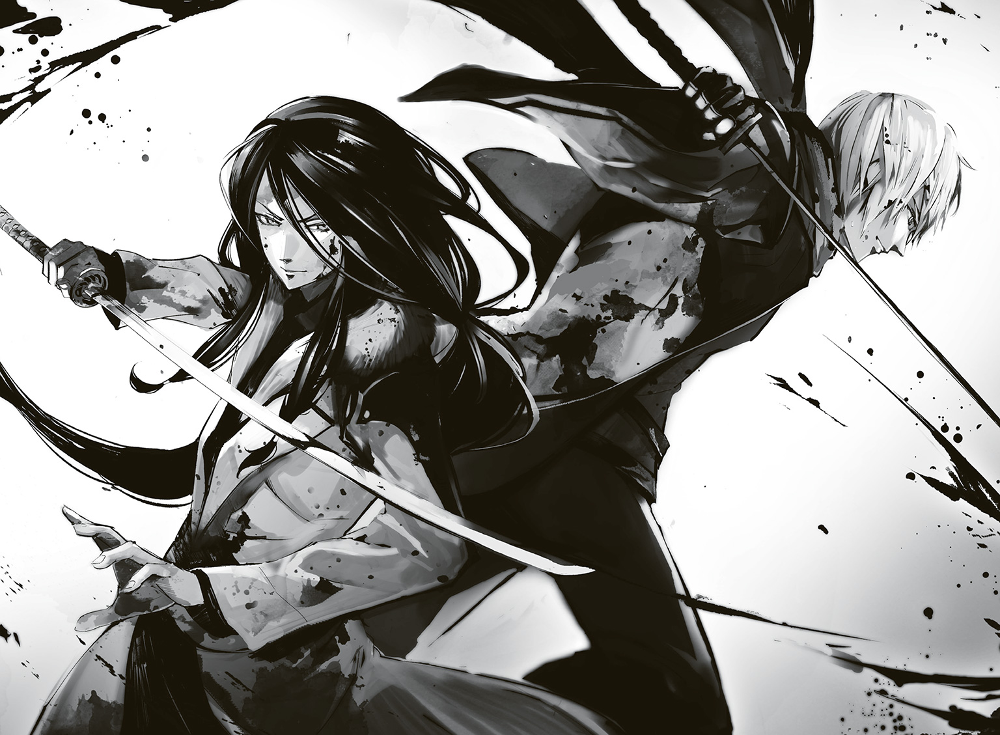
６
兄と、舞っていた。
出口を自らの陣で塞ぎ、数十の剣士のような鵺達を兄と共に斬りに斬って、舞いに舞った。
剣を交えたことは数えれないほどあれど、兄と共に戦うことなど、生まれて初めてだと言ってもいい。こんなにも心躍るものだとは、知らなかった。
全てが嚙み合う。全てがわかる。だから、信じられた。
兄の言葉――お前はもう......自分が何者か、わかっているはずだ。
そして――お前はこんなにも、府津羅じゃないか。
兄はいつだって、言葉が足りない。みんな自分と同じ考えか、自分を理解しているものだと思い込んでいるところがある。自分本位すぎるのだ。
兄の中では、俺達の内に流れる血が違うことなど、昔はともかく今では当たり前のことであり、もしかしたら些細なことだとさえ考えているのだろう。
そして、俺達の兄弟の絆は、剣にあると信じてもいた。
思い出してみれば、陣士になると告げた時だって、俺に居合いをやれ、剣を手放すな、と強要してきたのも、そういうことなのだろう。
だから、言葉を重ねるより、合を重ねた方が早いと......あの夜、焚き火を挟んで仕掛けてきたのだ。
俺は薄皮一枚しか斬れなかった。けれど、兄からするとそれは十分過ぎるほどの及第点、府津羅として認めるに値するものだったらしい。
――最強である自分と奇策抜きで相まみえて、傷をつけられた剣士は二十歳を越えて以来一人としていない。何より、全力の連撃を漏らさず全てを受けてかわし、なお斬り込んできた。それを十分と言わずして、何を十分というのか。
兄だった。やっぱり、俺の兄だった。自己中心的で、無邪気で、驕りが強くて、そのくせしてまじめで、酷く不器用で......。
いつだったか、ユニに指摘されたことがある。
――おぬしは、ただ......兄に認められたいだけじゃ。
嫌いで、憎かった。兄も、府津羅の名も。......そう思っていた。
でも、ユニは俺ですら気づかない心の奥底まで、全てお見通しだった。
――しがらみなどない。......おぬしが、しがみついておるだけじゃ。
そう、そうなのだ。俺は、兄にしがみついていたのだと思う。
捨てないでくれ、と。嫌いにならないでくれ、と。哀れなほどに。
憎み、そして、愛していたんだ。大好きだった。
だから、褒められたら夜に眠れなくなるほどに嬉しくて、怒られたら涙が止まらなくなるほどに哀しかった。
ずっと、兄の背を見つめていた。
そして、兄もまた、俺を見つめてくれていた。
互いに互いを見ていた。見つめ続けていた。それこそ、恋するように。恋い焦がれるように。
それは疑いようもなかった。だから、舞える。初めての共闘でありながら、兄が次に何をするのか、どう斬り込み、どう凌ぐのか、全てがわかる。
向かい合えばその速さに対処できなくとも、肩を並べた時ならば......読み切れた。
そしてそれは兄も同じだ。
ここに居てほしいと思うところにいる。
ここを助けてほしいと思った時に、白光鳳が奔っている。
嚙み合った歯車のように、俺達は鵺の群れの中で、舞う。
憎み、そして愛した。だから、兄から逃げ出せず、府津羅を捨てられず、苦しみ踠いた。
十数年のへばり付くような苦しみ。
でも、もう、いい。
もういいんだ。
もう、何も苦しむことはないんだ。
今はただ、持てる全てで兄と踊れば、それでいい。
「......ファリスか!?」
無数の二足歩行する蠅と剣士を合わせたような鵺の中に、見覚えのある剣を持つ奴が一人。
ダマスカス鋼で造られたロングソード。見た目は黒ずみ、細身であったはずの体は一回り大きくなってあの長髪も今はないが、頭には見覚えのある兎に似た耳があった。
ナマクラで斬り込めば、信じられないほどの力で弾かれる。
「......久しい......ヤリゼイサの......罌粟の猟犬......だね」
他の剣士もどきとは違う。意志がある。言葉以上に、目がそう告げていた。
「今回は我々の負けだ。......でも、いつか、必ず同志が......！」
剣を振る左手の甲に、鵺化してなお赤く発光する〈鵺〉の陣。
陣士としての力をまだ持っているのか。ならば......いや、ダメだ。
対ハァディ戦の時にわかった。
恐らく、少なくとも今の俺なら......ナマクラ一本で勝負した方が速い。
囲まれている以上、しっかり構えている余裕はなかった。
斬り込んできたファリスの剣、そして彼の目を見つめながら......陣士であることを忘れ、剣に全てを懸け、それと一体化し......そして、溶ける。
意識と無意識の狭間、頭よりも体、体よりも心で――俺は、斬る。
遠ざかりそうな意識の中で、ふと、兄の声が聞こえた。
「やはり、やればできるじゃないか」
それで俺はファリスを斬ったのだと、地を転がりながら、わかった。
７
「さすがに......血が足りんな。らしくもなく無理をした」
「こっちも、そろそろ、手足が千切れそうです......」
兄の胸の傷は骨を斬るところまでいっていたのだ。その小柄な体からこぼれた血の量は、かなりのものだろう。それでハァディを斬り、その後に全力で走りながら共に舞うなど......落ち着いて考えてみれば、尋常ではない。ヘタをしたら死んでいた可能性だってある。
そして俺も限界だった。ファリスと斬り合った際、無意識下で全身のあらゆる関節を酷使したらしく、やたらと痛み、軋む。何よりダマスカス鋼と真っ正面からやり合ったナマクラが複数箇所で刃こぼれを起こしていて、悲惨な有様だ。これで鵺の硬い骨肉を斬り続けるのは、正直もう厳しいだろう。少しばかり斬れ味のいい鈍器である。
......逆にこれを使い続けたせいで、体がおかしくなったのかもしれない。
「斬ったな。舞って、斬った」
「斬りに斬って、そして......共に舞いました。いい時間でした」
互いに尻を落とし、坑道の壁に背をつけていた。もう、立ち上がる力もない。
兄は俺の肩にもたれかかってくる。その小さい頭に、俺も頰を寄せた。血と汗と、男の匂い。
「......あと、少しだったな」
一体どれだけ斬ったのか、わからない。肉片は辺りに飛び散り、数え切れない。だが、俺達を囲む鵺はちょうど一〇体だ。そいつらもその多くが俺達の斬撃を受けて傷を持ち、手足を失っているものも多い。
だが、立っている。剣らしき腕もある。そして口があり、そこに人間のものより鋭利な歯と、ブラシのような長い舌が見え隠れしている。
人肉ぐらいならば即座に嚙み切り、臓物をすすれるだろう。
「終わりか。しかし、悪くない。充足感がある。お前は......何だ、アルク。気味の悪い奴だ。何を笑う」
「兄さん、府津羅の男は最後の最後、その限界の、さらに一歩先に至ってしまってもなお、見事に事を成し遂げる......では？」
「地上に逃げた弟子やお前の友人らはもう逃げ果せただろう。そうでなくとも村にある武器を手にすればこいつら程度なら十分駆除できる。......事は成し遂げたと言える」
「まだ、俺達だけであいつら全部をぶっ飛ばせます」
俺はポケットから取り出したのは......ダグラスだ。
「変わった形してますけど、ライターです。ここの発光ヒカリゴケは過酸化水素を内包していて、潰れる際にそれを外へ漏らします。つまりこれで火をおこすだけでこの空間全域がぶっ飛びます。実は......ハァディに勝てないと踏んで、すでにかなりの数のコケを潰し、坑道中に行き渡るようにしてあ......」
「アルク、難しいことはわからん。つまり自決前提で坑道丸ごと爆破する、ということか？」
そうです、と俺はダグラスに親指をかけた。それを少し動かせば、恐らく爆発が起こる。そして爆発は密閉空間においては極めて大きな威力を生む。炎上とはその速度、瞬間的な破壊力においてまったく別物であるから、〈炎〉の陣では御しきれるものではない――どのみちその力もないが――以上自決に他ならない。
けれど......府津羅らしく、最後は散れる。
周りの鵺達が血を垂らしながらも距離を詰めてくる。
兄はそんな連中を鼻で笑って、そっとその手をダグラスを持つ俺の手に被せた。
「やれ、愚弟。共に死ねる、というのが気に入った」
俺は親指にゆっくりと力を込めていく。
「兄さん、あなたのことが嫌いでした。そして愛していました。出会えて......良かった」
「おれもだ。初めてお前を見たときから、ずっと、愛していた。雅――」
『アルク様!!』
突如として坑道内全域が震動して声が聞こえ、俺も兄も、そして鵺達さえもギョッとして動きを止めた。
まるで雲をも越える大巨人が地面に向かって怒声を上げたかのような、凄まじい音。しかしその大音声に似つかわしくない子犬のような甲高くもかわいらしい声に、俺は聞き覚えがあった。
何故、どうして、ここに、今......？ 様々な疑問で頭が埋め尽くされるも、俺は慌ててダグラスにかけていた指の力を抜く。
『アルク様聞こえていますか聞こえていたら返事をしてくださいユニさんがその無駄に大きい耳を地面にくっつけて聞いていますから場所を教えてくだ......あぁもうわかっていますよあたしが喋りっぱなしじゃ聞こえない上にうるさいんですよねユニさん本当前から思ってましたけど空気読みませんよねヤになっちゃう何でアルク様はこんなのをパートナーにってそんなことを言ってる場合じゃないアルク様とにかくそれとわかる音を出してくださいそしてお兄様と一塊でいてくれればあとは憐さんがどうにかしてくれますからえっなんですか!?』
人間には不可能な息継ぎなしの連続の声という音に、坑道がビリビリと震え続ける。
「な、何なのだ、この小娘の特大金切り怒声は!?」
「憐ってことは......まさか、ぶち抜くつもりなのか!? この頭上の土、全部を!?」
「おい愚弟！ 兄を無視して勝手に驚愕するな、説明しろ!! 蚊帳の外は気に喰わん!! 仲間に入れろ!!」
説明って言ったって、何を言えばいいのか、わからない。
言えるのは俺達の同期の中で......いや、ここ数年でトップクラスの適性を持つ陣士と、そしてその彼女さえをもはるかに陵駕し、驚愕を以て総本山に招かれた若く、いや、あまりに幼い後輩陣士が地上にいるというだけで......。
『ユニさんが声の位置を把握しましたあと憐さんから伝言です多分巻き込まざるを得ないから自力で身を守れだそうですでもできるだけ気をつけるようにってあたし伝えておきますから安心してくだあっもう発現してますねこれうわっ凄いずっと向こうまで陣の光が雪の下に広がってえっうるさいってなんですか折角褒めてるんですよあっ発動するんですねわかりましたそれでは空に避難しますアルク様ご無事で!!』
来る。声が途切れて震動が収まったと同時に、鵺達でさえ膝を突くほどの大地震。そして、爆音にも似た轟音が頭上より次々に伝わってくる。それが何であるのか、最初はわからなかった。でも、憐がいて、この状況でやるとしたら......一つしかない。ならばそれに伴って行われているとすれば......あの巨木が次々に倒れ、地を叩いている音か。
「兄さん、俺にしっかり摑まってください！」
「摑まるとは......抱きつけば良いのか!? しかし、何がどうなっている!?」
「友達......いや......仲間が、助けに来てくれたようです」
俺の声は自分でもかすかにしか聞こえなかった。巨大な木々が地を叩き、大地が蠢きだせば耳を塞いでも頭を叩かれるほどの轟音が荒れ狂う。
そしてそれは、一気に、来た。尻の下から突き上げるように地面が迫り上がる。猛烈な勢いで近づく天井に無数の亀裂が走って形が崩れるも、それは俺達の方へ崩落せず......頭上へと吸い上げられていくのだ。
もう、辺りはグチャグチャだった。背にしていた壁も地面も崩れ、天井へ向かい、天井の土はおぞましい音を立てて引き千切られていく木々の根っこごとさらに上へと引っ張り上げられ、鵺や俺達は波打つ地面に翻弄される。
たまらず瞼を閉じ、ひたすらに兄を抱く。兄も同じだ。
お互いの背に回した腕に、そして絡む足に残りの力全てをかける。
衝撃、衝撃、そして痛み。荒れ狂う世界に揉まれ、叩かれ、振り回され......それでもなお、俺達は相手にしがみついた。意識が切れる、その時まで――。
――それは、空白だった。轟音が消え、世界も消えた。
意識が途絶えた......そう思った。ただ意識を失ったのを意識できるわけがないと気がつき、俺は......自分がいつの間にか瞼を開けていることに気がついた。
......では、この視界いっぱいに広がる白いのは......。
「......運良く途中で見つかって良かった。って、なに、アンタ達、そういう趣味だったわけ？」
そんな声と共に白い世界に現れたのは......短いスカートを押さえてこちらを覗き込む、憐だ。彼女が訝しげな顔で俺を見下ろし、そして体の方を見る。その彼女の垂れる金髪を見て、今自分が仰向けになっているのだと知れた。
痛む首を擡げ、己もまた自らの体を見るのだけれど、そこには兄が両手両足をフルに使って抱きつき、そして俺もまた兄に......。手足が物の見事に絡み合っていた。
「ん？ おぉ、天変地異は終わったのか。何だったんだ、今のは......おや、この娘、確か浜菊の所の......ここは、何だ......？」
「お久しぶりです、頼雅さん。ここは......そうですね、高度五〇〇メートルぐらいですか」
俺が兄の体を支えて半身を起こしてみれば、ほぉ、と感嘆の声を漏らした。
そこは巨人の森のはるか上空。木々も雪も土も、そしてきっと鵺達さえも巻き込み造られた、高い高い土の塔の上なのだ。
空は白に近い灰色。そして眼下もまた雪の積もった白い白い雪面がどこまでも広がっていて、全てが白。空白の白だった。
憐、どうしてここに......。俺がそんなことを問うも、その応えが来るより先に、衝撃が来た。背中にタックルでもされたような、それ。
『アルク様アルク様アルク様アルク様アルク様アルク様アルク様アルク様アルク様アルク様ぁご無事で良かったです酷い目に遭ったとお聞きして心配で心配であこちらの方がお兄様なのですねまぁ凄い美形なんですねアルク様とはタイプの違う感じで凄い何だか凄い！』
俺はヘトヘトの体で、タックル......というか、空中から飛来してきたその子の頭をポンポンと撫でるように軽く叩いた。冬用のモコモコしたポンチョを羽織った彼女は、じゃれる犬のように顔をグニグニと俺の脇に押しつけてくる。
「な、何だこの小娘は。口を開きもせずに、声を......いや、どこから......」
『初めましてお兄様あたしは総本山所属の陣士にしてかつてヤリゼイサという故郷においてアルク様に命を助けていただいた者スモモです！』
「スモモは以前声帯をやられちゃって、それで〈震〉っていう陣で空気を震わせて喋っているんです。だから呼吸とか口の動きも関係なく、声を出せるんです」
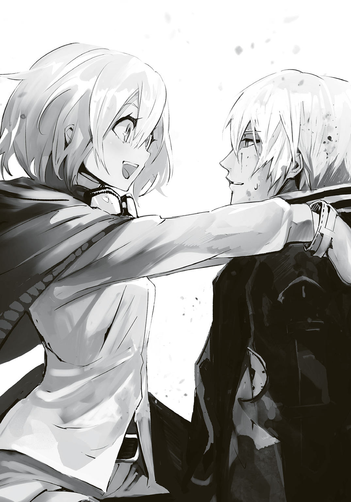
......まぁ、本当は声帯も修復されているのだけれど、治療するまで――彼女が同郷の者達を振り切り、自力で総本山に辿り着くまで――の時間がかかってしまったこともあり、以前と同じ声が出せなかったのだ。それで本人が採った案が、陣で喋る、という荒業だった。
まだ学業が十分でない上、幼いということで教育期間中ではあったが、その適性はイリスに及ぶとさえ言われていた。
「アルク、何だ......その、随分と懐かれているのだな」
「いや、これはその......」
『だってアルク様はあたしの救世主様なんです何度も何度も助けてくれてでもあたしは一度アルク様を裏切ってあぁでもその罪を償うためにもと総本山に向かってアルク様のお役に立とうとあたしは今日もこうして！』
「ス、スモモ、大丈夫、大丈夫だから。後にしよう。......他のみんなは？」
『さっきピンパーネルさんに全員押しつけたら悲鳴と共に下に落ちていきましたでも多分大丈夫ですホラ』
塔の下を見やれば......土の塔に取り込まれつつも、その側面から突き出していた巨木の枝に、ユニ達全員がしがみついてこちらに手を振っているのだけれど......あれを、大丈夫というのだろうか。
兄は下を見て、そしてスモモを、憐を見......苦笑した。
「随分と友が多くなったのだな、アルク。......喜ばしい。だが、どこか、寂しくもある。不思議な気分だ」
兄の手が、俺の頭をそっと撫でた。
褒めるようなそれは、何とも優しかった。
●エピローグ『約束』
『通信源を特定、北です。北極海。衛星の映像からすると......巨大な潜水艦かと思われます』
イリスの長い髪の下に隠したイヤホンに、オペレーターの声が響く。
やはりか、とイリスは表情を濁しそうになったが、それは堪えた。目の前に罌粟が座っており、そしてその対面には......カメラと映像モニターがあるのだ。自分は従者として余計なことをするべきではない。
北極は、元々リベルテンの基地として想定されていたエリアだった。そこはどうしても陣能力だけでは制圧できないのだ。極寒であることに加え、大地がない。どれだけ有能な陣士が向かったとて、その場に行くだけで困難を強いられ、止まるのは自殺に等しく、調査だけで命の危機があった。水中となればなおのことだ。
古代の技術を大量に用いてようやく......そんな場所。しかし、内陸の総本山が押さえている技術の中には海のものが多くはない。恐らくそれが数百年にわたってリベルテンを根絶をできない理由なのだ。真に重要な情報と技術、そして人材は北の海の底に隠されているのだろう。
イリスが今後の対リベルテン戦略を頭の中で繰り広げていると、モニターの映像に、一人の女が現れ、椅子に座った。
その姿に、イリスは目を見開く。十年ぶりの姿ではあったが、一目でわかる。
そう、目で、わかった。
紫の髪をショートにまとめた四十前後の女。左目は白目も何もない、全てが鮮血の赤に染まっており、右目はイリスの左目と同じ青色だった。
『総本山総統罌粟殿、お初にお目にかかります......次なる作戦における指揮官を新たに担いましたリベルテンのレティクラタと申します。短い間かと思いますが、以後お見知りおきを』
「丁寧な挨拶、痛み入る。こちらからの挨拶は必要ないだろう？ 数百年もお前達の敵だ。......本題が降伏の連絡であり、平和を告げるものであることを期待する」
『それはこちらも同じく。先日の戦闘では三ケタに及ぶ被害を受け、指揮を担ったファリスさえ帰還が叶わなかった。......何とも無益な争いです。いい加減あなたの造られた箱庭から人類を解き放っていただきたい。......世界はあなたのおままごとに付き合うのはうんざりなのです』
そんなやり取りから、二人の会談が始まった。
リベルテンはその名の通り、解放を目的とした組織だ。それは即ち、実質的に今の世界を手中にしている罌粟からの解放であり、進化の解放でもあった。
総本山は千年にわたって、その強力な陣能力により、世界各地に残っていた科学技術の多くを回収、はたまた破壊して回っている。さらにいえば、どこかの国が特別な発達をなさないよう、陰ながらバランサーとしての働きをも行っている。
それは全て、罌粟が急激な人類文化の発展を拒んでいるためだった。
罌粟はかつてイリスに語っていた。技術は人の進化の速度よりも速すぎる、と。それ故に、世界は一度終わったのだ。だからこそ、世界を守るために、人類を守るためにその速度を管理すると罌粟は決めたのだ。
何千年もの時を生きる罌粟の覚悟だった。
しかし半永久的な停滞など、ナンセンスだとしたのが、リベルテンである。いまだ発見されていない古代の技術を、総本山に気づかれぬようにかき集め、今一度人類を繁栄の時代に導かんとした組織......。
確かに総本山の地下二〇〇〇メートルにかつてのまま残る地下都市とそこの研究所をフル活用すれば二百年と経たずに世界はかつての煌めきを取り戻すだろう。
しかし、そのさらに百年後には、また世界の崩壊が待ち構えているに違いなかった。
その時こそ人類は終わるだろう。
「世界は、わらわが守る。それがかつての大戦を生き抜き、永遠の命を持った者の責任だ。そして陣などという狂気の力を生み出した我が父の罪を......必ず償ってみせよう」
『最低でも全ての焼き鏝を集め、破棄し、終わらせる......なれど、残しがある恐れは常にある。故に、罌粟殿はさらに何千年もの時を待ち、人類の融合が進み、かつての日本人の特性が薄れ、陣の適性者が完全に居なくなるその時まで待つおつもりだとか』
「そうだ。その暁には総本山の全てを段階的に解放していくと約束もする、とリベルテンの歴代の代表達に告げてあるはずだ」
『そう、それこそ本題。ようやくお聞かせいただきました。......私が次の代表と決まった時、あなたのお考え、直接耳にしたかったのです。お時間をいただき、ありがとうございました』
「ふむ、覚悟は出来たというわけか」
『はい、人の未来は何ものにも縛られず、自由に自らの手によって描かれるべきものだと我々は信じております。たとえそれで滅びの道を征くのだとしても。穏やかに、自らの運命を受け入れるまでです』
「その運命に抗わんとするのもまた人の在り方だと、わらわは思う。何より古代の技術はなくとも人々は自らの幸せを見つけられるものだ。人が幸せを得るためには、実はそれほど多くのものは必要ない。日々の生活の中に、幸福の種はいくらでも埋まっている。それに気づくことができるのならば、水を与えてやれるのならば、いくらでも綺麗な花を咲かせられる。いつの時代でも、どんなところででも......。ただし、世界が存続していれば、だ」
「だから、あなたがそれを独断で維持し、管理する......と？ 自分勝手にも程があります」
「ふむ......相変わらず思想の差は埋めがたいな。......さて、わらわは眠い。今回の会談はこの辺にしておこう」
『ごきげんよう、罌粟殿。次は直接お会いいたしましょう。......そして、イリス、またね』
それで回線は一方的に切れ、イヤホンには北極海の潜水艦が姿を消したという報告が入ったのだった。
「あのレティクラタの目、イリス、お前のものによく似ていた。......あれが、そうか？」
「はい、私の右目を奪い、そして空いた穴にこの赤い人工眼球を押し込んだ張本人です」
「ようやく敵が見つかったか。そう時を置かずして来るであろう。......存分に相手をしてやれ、イリス」
ふわぁ、と罌粟はあくびを一つし、席を立った。
「運命を受け入れるのも、抗うのも、そしてそれらで争うのも人というものか。変わらんのだな、いつまで経っても......」
１
「......いいんですよ、えぇ、いいんです。どうせあたしは〈伝〉以外に使い道のない女でしたし、通信士の仲間内でも何となくハブかれてるなぁっていう気もしていたところでもありましたし......そんな時でしたもん。飛翔体の件で戦友、いえ、親友となったアルクさん達のたってのお願い、子犬のような少女で、きっと気が合うはず、何より任せられるのが......頼りにできるのが、このあたししかいないって言うから、そりゃね、えぇ、巨大軍艦に乗った気でいてください、あたしもそろそろパートナー探して違う役職に就こうかと思っていたところだったんです、ちょうど良かったですって言ったのは間違いないんですよ。でもいざ組んでみたら子犬どころかとんでもないじゃじゃ馬だし一日中息継ぎなしで喋っているし小うるさいだけかと思ったら陣への適性はここ十年でぶっちぎりだとか言われだして何かイケイケな感じで......今回だってパートナーに何の相談もなしに〈飛〉の陣を焼き入れるわ、飛んだら飛んだで最後の三日間ほとんどあたし達を引きずるようにぶっ通しで飛び続けるし、現場到着したら処理するはずだった烏の人と顔見知りでこの人達なら大丈夫だからとか勝手に判断するしで......えぇ、もう、あたしって何なんだろうなぁって疑問に思ったりもするんですよ。何て言うんですか、いらない子なのかなって気がしたりもして......」
村の診療所に全員で入ってからというもの、ブルー・ピンパーネルという眼鏡の陣士はずっとこんな感じで、部屋の隅っこで膝を抱えて座り、床を指先でイジイジしていた。
しかも誰かに向けて喋っているのかと思えば独り言のようだし、独り言かと思って無視していれば「あの、聞いてます？」と斛に傾聴を強要するなど......はっきり言ってなかなかのアクの強さである。
この診療所、床暖房を活かすために入院患者用の大部屋といっても床に布団を敷いた雑魚寝式であり、布団同士の距離をいくらでも調整できてしまうのが難点だった。話を無視するには近く、聞くには内容も相まって何とも面倒臭いという、ここしかないという絶妙な隅っこのポジションに彼女は自分の布団を敷いているのだ。さっさと寝てしまいたかった斛にとっては地獄である。
そもそも男女で分かれて取り敢えず一晩はゆっくり休む......そのはずが、何だかんだで出血多量の府津羅流の直弟子の一人とアセボがそれぞれ個室で安静にしている以外、皆、何故か大部屋に集まっていた。
頼雅から故郷の話をするためとしておきながら、その実、烏である斛達をあからさまに警戒して大部屋にいる憐と白妙菊なるコンビ、そしてアルクの相棒だからとユニがいるのは、まぁ、わかる。だが、飼い主に久しぶりに再会した愛玩犬のようにアルクにじゃれ続けるスモモなる少女が、布団を彼の横に移動させてユニと一悶着を起こし、そんな様子を、くだらねぇ、と思って見ていたら、気がつくと姉までいつの間にか大部屋で布団を敷き終えていたのは何かがおかしい。そして、最後になって女子部屋に誰もいなくなったことに気づいたらしいピンパーネルが「仲間外れなんて酷いです!!」と涙目で突入してきて......二時間ほど前からこの有様だった。
「......最後の三日間なんて本当命懸けみたいにして飛んできたんですよ。それなのに誰も褒めてくれないですし......そりゃ確かにあたしの力が枯渇して、最後はもうスモモさんが一人であたしと憐ちゃん菊ちゃんを無理くり引っ張っていたようなものですけど、それにしたってじゃないですか。ね、斛さんもそう思いますよね？」
お、おぅ、頑張った頑張った......と、上ずった声で仕方なく斛が応じると、ピンパーネルはパァーっと花が咲いたような笑顔になる。
「斛さんって、やっぱりいい人ですね。あたし、こう見えて人を見る目があるんですよ。斛さんとは一目見た時から仲良くなれるような気がしてたんです」
今更だが、烏と陣士が仲良くするのは問題があるのではないか、という気が斛にも湧いた。憐から密かに烏の隠された真実を聞かされもしたが、それを鵜呑みにするほど円も斛もバカではない。今なおお互いに緊張感を持って接している状態である。
「ですから、ね。斛さん......そろそろ斛君って呼んでもいい頃合いだと思いません？」
「......思いません」
普段なら、思わねぇよ......と返すところだが、何故か自然とよそよそしい言葉となった。
「地元の友達みたいに、あたしのこと、ブルちゃんって呼んでもいいんですよ？」
横になっていた斛は耐えきれずにスヤァ......と寝たフリをするのだが、ピンパーネルはそれでもなお話すのをやめない。ハートが強いにも程があった。
「......斛、その小娘、少しうるさいからそろそろ黙らせて。ちょっとムカツク」
斛の近くに布団を敷き、その上に座っている円が、珍しくもはっきりとわかるほど、ムッとして、斛にのみ聞こえるように声を出した。
「殺せってのかよ......」
「手刀で項の辺りを強く叩いて、弱ったところで首を絞め上げるだけでいい」
「だから、殺せってことだろ、それ......」
だってうるさくてイラつく。円は最後に口の中で消えてしまうほどの声量で言うのだけれど、イラつく原因は明らかに別だろうと斛は思う。......アルクだ。
「......クッ！ お前、一体どこで、こんな......おのれ、この府津羅頼雅を手玉に取る気か!? 生意気な弟め、おの、れ......はぁあぁ―――......」
アルクは兄に膝枕をし、耳搔きを挿入しているのだが、相当なものらしい。頼雅はもはや弟の体にしがみつき、そのシャツを鷲摑みにして、今にも引き千切らんほどの力を入れていた。
ちなみにその脇では、先程アルクに懇願して耳掃除され、恍惚の顔のまま眠りに落ちたスモモが転がってもいた。
彼女が喘いでいるのを見て、頼雅も興味を持って試しにと始めたらこのザマである。
「兄さん、そんなに力いれないでくださいよ。やりにくいですって。傷も開きますよ」
アルクが笑うように言って、さらにそこから耳搔きを頼雅の深みへと沈めていく。面白いのは深く入れば入るほど、頼雅の長くピンと伸ばされた右足が徐々に高く上っていくことだ。きっと左耳の時は左足が上っていくことになるのだろう。
そんな様子を憐と白妙は離れた場所からおぞましい光景であるかのように神妙な顔で見つめ、円は――まだ綺麗だよ、と一蹴されてしまったこともあり――幼い少女のように頰を膨らましたまま、据わった目で見やっていた。
「よし、こんなところかな。兄さん、反対を......兄さん？」
弟の膝の上からころりんっと身を転がして頭を降ろすと、仰向けになったまま頼雅は荒い息を吐いた。両手を猫の手のようにして、顔を赤らめているその姿は、長い髪と華奢な体軀から、斛にはほとんど女にしか見えなかった。それはあの地下で剣を扱っていた姿とのギャップに、少し狼狽するほどだ。
姉もアルクの手にかかればあのようになるのだろうか、そしてそれを望んで......？
その光景を頭に描きそうになるも、何だか気持ち悪いものをイメージしそうだったので、斛は寝たまま視線を窓の外へと向ける。窓際ではスモモとの言い争いに負けたユニがむくれるようにして布団にくるまり、巨大な巻き寿司のようになって寝ていたが、その大きな耳だけは内側へと向いていた。
何なんだよ、この部屋......。
そんなことを考えていると、窓の外、森の方から松平が槍と共に猪を担いでやってくるのが見えた。......彼が出立の際に宣言していた通り、今夜は牡丹鍋だ。精根尽き果て血をも失った者達にとって、この上ないご馳走になるだろう。
捌くのを手伝おうと、斛は布団から這い出る。毒でも盛られると心配したのか、白妙がついてきたのはともかく、ピンパーネルも愚痴りながらついてきたのだけは、さすがに参ってしまった。
２
濃密な朝霧が出ていた。普段であれば朝であっても枝葉が太陽光を遮るために夜のように暗いはずだが、昨日の土の塔のせいで、今は、普通の森ほどの明るさである。
土を、虚ごと引っ張り上げる際、憐はガッシリと組み合っていた木々の根ごと強引にやっていた。その結果、枝葉と根で組み合わさっていた木々は連鎖的に引きずり倒され、またあるものは枝葉と根が引き千切られたことで、巨人の森の五分の一が掘り返されて実質的に森ではなくなり、それ以外でも枝葉の絡みが崩れ、太陽光が差し込むようになったのだ。
そんな朝霧に満ちた白い森の中を、小柄な影が歩んでいた。
「どこに行くんだよ、ユニ。こんな朝っぱらから、こっそりと」
呼び止めれば、困った顔をしてユニが振り返り、白い息を吐く。
「......何じゃ、見つかってしまったか。しかし斛よ、別にボクがどこに行っても構わんじゃろ」
「そりゃそうなんだけどよ。一人ってのが気になってな。......アルクに何も言わずに去る気か」
「......あやつはこのままにしておいてやった方が、幸せじゃろ」
アルクは、府津羅の呪縛から逃れるためと思い込みつつも、実際には兄に認められる強さを手に入れるため、陣士となった。
ならば、剣士として頼雅に認められた......いや、ずっと認められていたとわかったアルクにとって、もはや陣士であり続ける理由はなくなったのだ。
一度陣を焼き入れればそれを外すことはまず叶わない。だが、総本山の仕事を受けなくとも、リベルテンと戦わずに自由に生きていくことは可能なはずだった
だが、もしそこにユニがいると、アルクは兄のもとに居られず、否が応にも自分とは関係のない戦いへと巻き込まれることになる。
〈鵺〉の焼き鏝を探し出し、その陣を焼き入れた者達を討ち滅ぼすユニの使命はあまりに重く、ヘタをすると生涯を懸けることになるかもしれない。そしてそれと共に総本山の猟犬として戦場を駆け回るのは常に死のリスクが付きまとうことだろう。
「......それはダメじゃ。あやつは、今、ようやくいるべき場所が定まった。少なくともボクにはそう思えた。じゃから......」
「だからって勝手に行くのは違うだろ。よくは知らねぇけど、そういうの全部ひっくるめて組んだんじゃねぇのか」
ユニは唇を嚙み、その大きな耳をシュンっと倒した。尻尾はヘタったまま......いや、少し股の内側に入り込んでいる。怒られている時の犬のようだった。
「じゃけど......うむ、じゃけど、ボクは......あの雑魚寝していた連中の中で、ボクだけはアルクの傍にいてはダメだと思うのじゃ」
いや、ピンパーネルが一番ダメだと思う。斛はそう思ったが、口には出さない。ただ、何故だ？ と、尋ねただけで止めた。
「......皆、アルクを見て、アルクを好いておる。けれど、ボクがパートナーを組む時、ボクはあやつの力を、陣士殺しの府津羅としての剣を求めた。あの満月の夜、アルクにそれを言われ、胸が苦しかった。言われるまで、気がつかぬほど、ボクは......」
あの府津羅の血筋ではないと判明し、アルクが自暴自棄になった夜だろう。
ユニがアルクを後ろから抱き、そして、アルクを宥めた、あの......。
そうであれば、何の問題もないように斛には思えた。それを言われ、それでなおユニはアルクを抱き締め、アルクはユニの手を取ったのだ。始まりはどうであれ、心はもう通じ合っているはず......斛はそう思った時、ようやく全てを理解した。
このユニの俯き加減にシュンとしてボソボソ喋る様子といい、どこか言い訳染みた言葉といい......心が通じ合ったからこそ、なのだ、と。
「何だよ、くだらねぇ......」
斛は半笑いで呟くと、足に力を入れる。
もうどうでも良かった。大した理由じゃない。何より......ユニは耳を伏せたせいで気づいていないのだろうが、烏として鍛えた斛の耳はちゃんと捉えていた。このままここにいては、自分は邪魔になる。
斛は朝霧に溶けるようにして身を消し、それから巨木の幹を音もなく駆け上り、突き出ていた枝にその身を落ち着けた。
眼下では、突如消えた斛を探してユニが辺りを見つつ、耳を立ててピクリとさせ......そして、彼女もまた気づいたようだ。
「一人でどこに行くんだ、ユニ？」
アルクだった。その顔を見たユニはまたさっきのように耳をペタンと伏せ、何とも困った顔をして、俯いてしまう。
「......パートナーだろ、俺達。置いていくなよ」
「じゃけど......」
「あの満月の夜、お前の手を握りながら思い出したことがあるんだ。......ほら、トーナメントで憐と戦う前に、あの高い壁の上でユニは言ってくれただろ。府津羅であろうがなかろうが関係なしじゃ、って」
「じゃけど、ボクだけ......皆と理由が違う......」
斛は思わず鼻で笑ってしまったが、向き合う二人の陣士には聞こえていないようだ。
ユニが一人で去っていこうとしたその理由......本人は何やらいろいろ言っていたが、実のところは簡単だ。
ユニは......拗ねているだけだ。
昨日、自分の相方が皆からちやほやされているのを見て、嫉妬しただけなのだろう。
主人が他の犬と遊んでいるのを見てしまった飼い犬のようなものである。
通じ合っていればこそ、拗ねる。大好きな食事すらも摂らず、大好きな主人が遊ぼうと言っても背を向け、ウジウジする。まさに、それだった。
気にかけることもなかったのだ。斛はその場を去ろうと振り返れば......すぐ横にいつの間にやら姉がいた。思わず「うぉ！」と声が出そうになるほど、気配がなかった。
円は、いつもの飄々とした顔のまま、眼下の二人を見つめる。
「理由は何だっていいだろ。......言ったろ、前。パートナーになりたいって言ってくれたこと自体が、俺には嬉しかったんだ。......一人で行くな、ユニ。俺を置いていかないでくれ」
ユニは耳を伏せたまま、口をへの字に曲げ、そして袴を両手でギュッと握りながら......まるで今にも泣きだしそうな顔をして、アルクを見上げた。
「良いのか。今回のような戦いが恐らくまたあると思う。それで、本当に......」
「あぁ。乗り切れるよ。俺達なら。......それに、ユニ、兄さんを治してくれた時、一段落したらうまい甘味処に連れていくって、約束しただろ。......約束を破るような男にさせるなよ」
「そ、その兄と一緒にいたいんじゃろ!?」
「まぁね。でも大丈夫。......繫がってるってわかったんだ。切れないもので......そう、絆っていうのかな。内に流れるものが違っても、絆で兄さんとは繫がっている......そう思う。そう、信じられる。だから......もう、大丈夫。今まで、心配かけてごめん」
うー......！ とよくわからない唸りを上げ、ユニはアルクの胸に飛び込んだ。アルクが彼女のクセッ毛を撫で、大きな耳を揉む。
「......それで、ユニ、どこに行こうとしてたんだ？」
「グスッ......一度、実家に戻ろうかと。おぬしと頼雅のやり取りを見ていたら、姉上や姉様、姉さんらに会いたくなった......」
「そうか、それじゃ俺も挨拶できるな。......いいだろ？ それに休暇中なのに仕事したみたいなもんだし、総本山も振り替え休暇ってことで許してくれると思うしさ」
「そうか。ならば......行こう、アルク。ボクもおぬしを姉上達に紹介したい！」
二人が肩を並べ、朝霧の中を歩いていくのを斛と円は並んで見守った。

「何だよ......行かねぇのか？ 少しの間ぐらいなら、烏の仕事は代わりにやっとくぜ」
「野暮になる、でしょ」
「今行っとかないと......次はマジでいつになるかわかんねぇぜ、多分」
「......いいの。放っておいても、きっとまた、どこかで会えるから。だって......」
円はアルク達へと背を向け、左手でその長い黒髪を払う。
「まだ、約束、果たしてもらってないから。だからきっと......いつかまた、世界のどこかで」
そして、烏の羽ばたきの音にも似た音を立て、霧の中へと消えていった。
意外とロマンチストなのかもしれない、と斛は姉の意外な一面を見た気がした。
斛は一度振り返り、見えなくなった二人の陣士を意識したが、もう、かすかに声が聞こえるだけだった。
「......あ、そうじゃ、里に来るとバレると思うから先に言っておこうかと思うんじゃがの」
「ん、何だ、ユニ？」
「......アルクに秘密にしておったことが一つあるのじゃ。実は、ボク、本当は――」
部外者が聞く話じゃない、か。
斛は姉の背を追い、彼もまた霧の中へと飛び込んでいったのだった。
〈了〉
あ と が き
皆さん、どうも、好みのタイプは？ と、問われれば体重五〇キロオーバー、長毛で垂れ耳の超大型犬と答えるアサウラです。最近全然モフれておらず、心寂しい日々です。
唐突ですが、少し前に晩杯あきらさんと台湾へ行き、そこでサイン会をさせていただきました。人生二度目となる台湾でしたが、相変わらず何を食べてもおいしく、楽しい、素敵なところでした。巨大台風が直撃しましたけどね！ ちなみにこの台湾滞在中、前世占いができるという興味深いところへ。そこでは一緒に行った集英社の方々や晩杯さんも占ってもらい、昔の日本の庭師、ケチだけどお坊さんにお布施するのが好きな商売人、中国の富豪の娘でまだ自意識はないがあなたは（生まれ変わった今も）男に興味がある......そんな面白おかしくも何となく納得ができるような結果が次々に出てきましてね。
それで、いよいよ私の番。まずは普通に占ってもらったところ、いきなり死んだ家族の死因、そして「いつもお金の心配をしているけど、あなたは大丈夫だから安心して」と私のセコさを物の見事に言い当てられたりしつつ、いよいよ前世占いへ。
まさに緊張の一瞬。果たして犯罪者か、農民か、はたまた王族か、それとも――。
「あなたはね......トラなの!!」
人外っていうね。他の人は人間なのに、私だけケダモノですよ、予想外過ぎて思わず苦笑しました。何か、山だかに住んでいた主的な偉いトラだったそうで、さらには「あなたがダメになると周りの人も一緒にダメになるから、とにかく落ち着いて焦らず慎重に」とのこと。
なので周りの皆様、一緒にダメになりたくなかったら私に優しくしてください。......マジで。
さて、本作ですが、ＦＯＵシリーズは今回で第一部完となります。この駆け抜けた一年と幾ばくかを振り返ってみると......かなり、時間のないシリーズだったな......という感想が......。
諸事情が重なりに重なり、執筆スタートの段階ですでに若干冷や汗を流しているというのが多かったような......まっ！ ともかく、無事ここまで来られて良かったです。それもこれも関係者の皆様、そして応援してくださった皆々様のおかげであります......！ 感謝!!
では、そろそろ紙幅が限界ですのでこの流れで謝辞の方をば。まずは毎回素晴らしいイラストを描いてくださっている晩杯あきらさん、そして何故か頑なに占いを拒否するも、周りに強要されて占ってもらうのが決まった途端、脂汗でギトギトになるほど何かに怯えていた担当様、また集英社をはじめとした大勢の関係者の皆様......ありがとうございました！
そして、この本をお買い上げいただき、ここまでお読み頂きました皆々様......本当にありがとうございます!! 今後ともこのアサウラめにお付き合いいただけたら幸いです。
ではでは、紙幅も一杯なので次があることを祈りつつこの辺で。それではまた！
アサウラ
著者紹介
アサウラ
『〆切がなかったら今頃細マッチョでモテモテだぜ？』でお馴染みのアサウラです。
〆切前は炭水化物と甘い物と栄養ドリンクが心の支え。
illustration
晩杯あきら ばんぱい あきら
富山県出身。
愛する地球を守るため、
今日もどこかで何かしらと戦い続けている。
ダッシュエックス文庫DIGITAL
ファング・オブ・アンダードッグ ４
人と絆
著者 アサウラ
© ASAURA 2016
２０１６年２月29日発行
この電子書籍は、ダッシュエックス文庫「ファング・オブ・アンダードッグ ４ 人と絆」
２０１６年１月27日発行の第１刷を底本としています。
発行者 鈴木晴彦
発行所 株式会社 集英社
〒１０１－８０５０
東京都千代田区一ツ橋２丁目５番10号
０３－３２３０－６０８０（読者係）
制作所 株式会社ＩＣＥ
本作品の全部また一部を無断で複製、転載、改竄、インターネット上に掲載すること、および有償無償に関わらず、本データを第三者に譲渡することを禁じます。なお個人利用の目的であっても、コピーガードを解除しての複製は、法律で禁じられています。